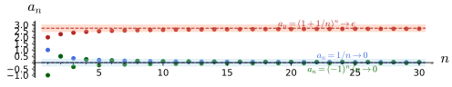
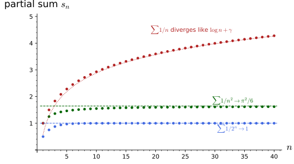
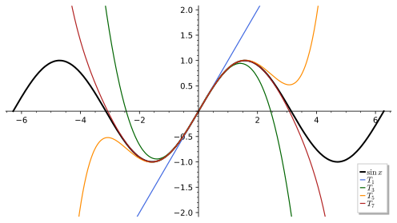
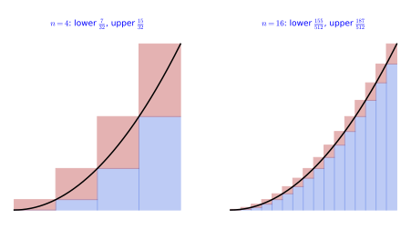
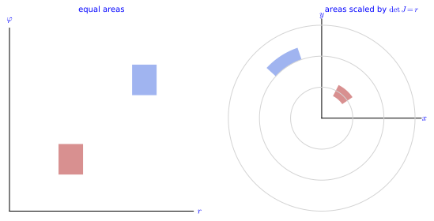
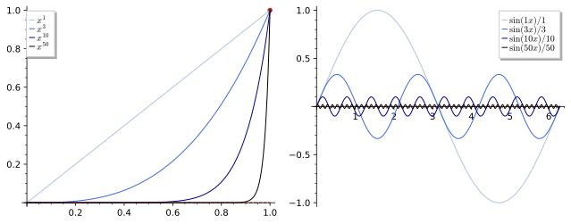

Real analysis
Real analysis is the theory behind calculus: what a limit is, when an infinite sum has a value, what it means for a function to be continuous, differentiable or integrable, and how these notions extend to functions of several variables. This chapter develops it in six sections, each on explicit examples. Real numbers, sequences and limits fixes the completeness of the real line and the vocabulary of limits, Cauchy sequences and monotone convergence. Series treats infinite sums, absolute convergence, the convergence tests and power series with their radius of convergence. Continuity and differentiability defines limits of functions, continuity, the derivative, and the mean value and Taylor theorems. The Riemann integral defines the integral as a limit of sums, proves the fundamental theorem of calculus and treats improper integrals, with the Gaussian integral as the central example. Calculus on \mathbb{R}^n extends derivatives to several variables, with the Jacobian matrix, the chain rule and the inverse function theorem. Multiple integrals and convergence of functions ends with the change of variables formula, uniform convergence and differentiation under the integral sign. Every statement is followed by three examples of increasing complexity and three exercises of increasing difficulty with hidden solutions. The reader who knows this material can skim the definitions and try the exercises; the sequences 1/n, (1 + 1/n)^n, the geometric and harmonic series, the exponential function and the Gaussian e^{-x^2} are the running examples.
Real numbers, sequences and limits
The real numbers are the complete ordered field: every bounded set has a least upper bound. Everything else in analysis, limits, sums, derivatives and integrals, rests on this one property. This section defines suprema, the limit of a sequence and Cauchy sequences, proves the monotone convergence theorem, and checks the limits of the running examples in Sage.
Suprema
Before limits can be discussed at all one needs to know which numbers exist, and the answer is encoded in a single property of the real line. The definition below introduces the least upper bound of a set and states the completeness axiom, the promise that every bounded set has one.
Definition 1 (Supremum) A number M is an upper bound of a set S \subseteq \mathbb{R} if s \leq M for every s \in S; the set is bounded above if it has an upper bound. The supremum \sup S is the least upper bound: an upper bound M such that no M' < M is an upper bound. The completeness axiom of the real numbers states that every non-empty set bounded above has a supremum. The infimum \inf S, the greatest lower bound, is defined the same way with the inequalities reversed, and \inf S = -\sup(-S).
Veriphy. Test (kernel-checked, 4 instances); script ra-completeness-test.sage; Test (kernel-checked, 4 instances); script ra-sinf-eq-neg-ssup-neg-test.sage.
Lean.
/-- The completeness axiom: a non-empty set of reals bounded above has a least upper bound. -/
theorem completeness (S : Set ℝ) (hne : S.Nonempty) (hb : BddAbove S) : ∃ M, IsLUB S MKaluzaKlein.RealAnalysis.Sequences.completeness in KaluzaKlein/PartI/RealAnalysis/Sequences.lean, namespace KaluzaKlein.RealAnalysis.Sequences
/-- The infimum is the negated supremum of the negated set: `inf S = -sup(-S)`. -/
theorem sInf_eq_neg_sSup_neg (S : Set ℝ) : sInf S = -sSup (-S)KaluzaKlein.RealAnalysis.Sequences.sInf_eq_neg_sSup_neg in KaluzaKlein/PartI/RealAnalysis/Sequences.lean, namespace KaluzaKlein.RealAnalysis.Sequences
Sage. a least upper bound exists: Sage computes the supremum of each set, Lean checks it is the least upper bound; inf S = -sup(-S) on intervals, both sides computed exactly.
The first thing to see is that a least upper bound may or may not belong to the set, and that an unbounded set has none at all. Sets with finitely many elements and intervals already show all three behaviours.
Example 1 (Finite sets and intervals) \sup\{1, 4, 2\} = 4, a maximum; \sup [0, 1) = 1, which is not an element of the set: a supremum need not be attained. \inf (0, \infty) = 0 and the set (0, \infty) has no supremum, being unbounded above.
Veriphy. Test (kernel-checked, 3 instances); script ra-isgreatest-three-test.sage; Test (kernel-checked, 3 instances); script ra-ssup-ico-not-mem-test.sage; Test (kernel-checked, 3 instances); script ra-sinf-ioi-unbounded-test.sage.
Lean.
/-- A finite set `{a, b, c}` with largest element `b` has supremum `b`, attained (a maximum). -/
theorem isGreatest_three (a b c : ℝ) (hab : a ≤ b) (hcb : c ≤ b) :
IsGreatest {a, b, c} b ∧ sSup {a, b, c} = bKaluzaKlein.RealAnalysis.Sequences.isGreatest_three in KaluzaKlein/PartI/RealAnalysis/Sequences.lean, namespace KaluzaKlein.RealAnalysis.Sequences
/-- `sup [a, b) = b`, which is not an element of the set: a supremum need not be attained. -/
theorem sSup_Ico_not_mem (a b : ℝ) (h : a < b) :
IsLUB (Set.Ico a b) b ∧ sSup (Set.Ico a b) = b ∧ b ∉ Set.Ico a bKaluzaKlein.RealAnalysis.Sequences.sSup_Ico_not_mem in KaluzaKlein/PartI/RealAnalysis/Sequences.lean, namespace KaluzaKlein.RealAnalysis.Sequences
/-- `inf (a, ∞) = a`, and `(a, ∞)` is unbounded above, so it has no supremum. -/
theorem sInf_Ioi_unbounded (a : ℝ) :
IsGLB (Set.Ioi a) a ∧ sInf (Set.Ioi a) = a ∧ ¬ BddAbove (Set.Ioi a)KaluzaKlein.RealAnalysis.Sequences.sInf_Ioi_unbounded in KaluzaKlein/PartI/RealAnalysis/Sequences.lean, namespace KaluzaKlein.RealAnalysis.Sequences
Sage. the maximum of a three-element set, {1, 4, 2} among them; sup [a, b) = b, not attained, at [0, 1) and other intervals; inf (a, ∞) = a and (a, ∞) unbounded, at a = 0 and others.
The next example is the set of values of a sequence, where the supremum is approached but never reached. Verifying it requires the \varepsilon-argument that will reappear in the definition of a limit: nothing smaller than 1 can be an upper bound.
Example 2 (The set \{1 - 1/n\}) S = \{1 - 1/n : n = 1, 2, \dots\} = \{0, \tfrac12, \tfrac23, \dots\} has \sup S = 1: every element is below 1, and for every \varepsilon > 0 the element with n > 1/\varepsilon exceeds 1 - \varepsilon, so nothing smaller than 1 is an upper bound (Exercise 3). This is the typical way a supremum is a limit.
Veriphy. Test (kernel-checked, 3 instances); script ra-one-sub-inv-sup-test.sage.
Lean.
/-- `sup {1 - 1/n} = 1` in the `ε` form: every element is below `1`, and for `n > 1/ε` the element `1 - 1/n`
exceeds `1 - ε`. -/
theorem one_sub_inv_sup (ε : ℝ) (hε : 0 < ε) :
(∀ n : ℕ, 1 ≤ n → 1 - 1 / (n : ℝ) < 1) ∧ ∀ n : ℕ, 1 / ε < n → 1 - ε < 1 - 1 / (n : ℝ)KaluzaKlein.RealAnalysis.Sequences.one_sub_inv_sup in KaluzaKlein/PartI/RealAnalysis/Sequences.lean, namespace KaluzaKlein.RealAnalysis.Sequences
Sage. sup {1 - 1/n} = 1 in the ε form, at ε = 1, 1/10, 1/1000.
Why should completeness be an axiom rather than a theorem? The third example answers by exhibiting a bounded set of rationals with no rational least upper bound, so the property genuinely separates \mathbb{R} from \mathbb{Q}.
Example 3 (Why completeness is an axiom) The set \{q \in \mathbb{Q} : q^2 < 2\} is bounded above in \mathbb{Q} but has no least upper bound in \mathbb{Q}, since \sqrt2 is irrational: the rationals are not complete. In \mathbb{R} its supremum is \sqrt2, and the completeness axiom is exactly what guarantees that such numbers exist.
Veriphy. Test (kernel-checked, 3 instances); script ra-sqrt-prime-irrational-test.sage; Test (oracle, 4 instances); record KaluzaKlein.RealAnalysis.Sequences.no_rat_lub.json; Test (oracle, 3 instances); record KaluzaKlein.RealAnalysis.Sequences.sq_lt_bounds.json.
Lean.
/-- `√p` is irrational for a prime `p` (for `p = 2`, the example). -/
theorem sqrt_prime_irrational (p : ℕ) (hp : p.Prime) : Irrational (√(p : ℝ))KaluzaKlein.RealAnalysis.Sequences.sqrt_prime_irrational in KaluzaKlein/PartI/RealAnalysis/Sequences.lean, namespace KaluzaKlein.RealAnalysis.Sequences
/-- The rationals are not complete: `{q ∈ ℚ : q² < p}` is bounded above in `ℚ` but has no rational least upper
bound, for a prime `p` (for `p = 2`, the example). -/
theorem no_rat_lub (p : ℕ) (hp : p.Prime) :
BddAbove {q : ℚ | q ^ 2 < p} ∧ ¬ ∃ q : ℚ, IsLUB {r : ℚ | r ^ 2 < p} qKaluzaKlein.RealAnalysis.Sequences.no_rat_lub in KaluzaKlein/PartI/RealAnalysis/Sequences.lean, namespace KaluzaKlein.RealAnalysis.Sequences
/-- `{x ∈ ℝ : x² < p}` has supremum `√p` and infimum `-√p`, neither attained. -/
theorem sq_lt_bounds (p : ℝ) (hp : 0 < p) :
IsLUB {x : ℝ | x ^ 2 < p} (√p) ∧ IsGLB {x : ℝ | x ^ 2 < p} (-√p) ∧
√p ∉ {x : ℝ | x ^ 2 < p} ∧ -√p ∉ {x : ℝ | x ^ 2 < p}KaluzaKlein.RealAnalysis.Sequences.sq_lt_bounds in KaluzaKlein/PartI/RealAnalysis/Sequences.lean, namespace KaluzaKlein.RealAnalysis.Sequences
Sage. √p irrational, by norm_num’s irrationality extension, at p = 2, 3, 5; p is not a perfect square, so √p is not rational and no rational is the least upper bound; p bounds the set; the real roots ±√p of t² - p (exact algebraic numbers) bound {t² < p} and are not in it, at p = 1, 2, 3.
Finding suprema and infima of concrete sets is the first skill to practise, including deciding whether they are attained. The three sets below range from an alternating sequence to the values of \sin n, where the density of the integers modulo 2\pi comes in.
Exercise 1 (Suprema and infima of explicit sets) Find \sup and \inf of \{(-1)^n + 1/n : n \geq 1\}, of \{x \in \mathbb{R} : x^2 < 3\} and of \{\sin n : n \in \mathbb{N}\}, and say which are attained.
The first set is \{0, \tfrac32, -\tfrac23, \tfrac54, -\tfrac45, \dots\}: \sup = \tfrac32 (attained at n = 2) and \inf = -1 (not attained, approached by the odd terms -1 + 1/n). The second is the interval (-\sqrt3, \sqrt3): \sup = \sqrt3, \inf = -\sqrt3, neither attained. The third has \sup = 1 and \inf = -1, neither attained, since \sin n = \pm1 would need n to be an odd multiple of \pi/2, which is irrational; the values \sin n come arbitrarily close to \pm1 because the integers modulo 2\pi are dense in [0, 2\pi).
Veriphy. Test (kernel-checked, 4 instances); script ra-alt-bounds-test.sage; Test (kernel-checked, 3 instances); script ra-alt-inf-test.sage; Test (oracle, 3 instances); record KaluzaKlein.RealAnalysis.Sequences.sq_lt_bounds.json; Test (oracle, 5 instances); record KaluzaKlein.RealAnalysis.Sequences.sin_nat_lt_one.json; Test (oracle, 4 instances); record KaluzaKlein.RealAnalysis.Sequences.neg_one_lt_sin_nat.json.
Lean.
/-- The set `{(-1)^n + 1/n : n ≥ 1}`: every element lies in `(-1, 3/2]`, and `3/2` is attained at `n = 2`. -/
theorem alt_bounds (n : ℕ) (hn : 1 ≤ n) :
-1 < (-1 : ℝ) ^ n + 1 / n ∧ (-1 : ℝ) ^ n + 1 / n ≤ 3 / 2 ∧ (n = 2 → (-1 : ℝ) ^ n + 1 / n = 3 / 2)KaluzaKlein.RealAnalysis.Sequences.alt_bounds in KaluzaKlein/PartI/RealAnalysis/Sequences.lean, namespace KaluzaKlein.RealAnalysis.Sequences
/-- The infimum `-1` of `{(-1)^n + 1/n}` is approached by the odd terms: for every `ε > 0` some odd `n` has
`(-1)^n + 1/n < -1 + ε`. -/
theorem alt_inf (ε : ℝ) (hε : 0 < ε) : ∃ n : ℕ, 1 ≤ n ∧ (-1 : ℝ) ^ n + 1 / n < -1 + εKaluzaKlein.RealAnalysis.Sequences.alt_inf in KaluzaKlein/PartI/RealAnalysis/Sequences.lean, namespace KaluzaKlein.RealAnalysis.Sequences
/-- `{x ∈ ℝ : x² < p}` has supremum `√p` and infimum `-√p`, neither attained. -/
theorem sq_lt_bounds (p : ℝ) (hp : 0 < p) :
IsLUB {x : ℝ | x ^ 2 < p} (√p) ∧ IsGLB {x : ℝ | x ^ 2 < p} (-√p) ∧
√p ∉ {x : ℝ | x ^ 2 < p} ∧ -√p ∉ {x : ℝ | x ^ 2 < p}KaluzaKlein.RealAnalysis.Sequences.sq_lt_bounds in KaluzaKlein/PartI/RealAnalysis/Sequences.lean, namespace KaluzaKlein.RealAnalysis.Sequences
/-- No element of `{sin n : n ∈ ℕ}` equals `1`: `sin n = 1` would make `π` rational. -/
theorem sin_nat_lt_one (n : ℕ) : Real.sin n < 1KaluzaKlein.RealAnalysis.Sequences.sin_nat_lt_one in KaluzaKlein/PartI/RealAnalysis/Sequences.lean, namespace KaluzaKlein.RealAnalysis.Sequences
/-- No element of `{sin n : n ∈ ℕ}` equals `-1`. -/
theorem neg_one_lt_sin_nat (n : ℕ) : -1 < Real.sin nKaluzaKlein.RealAnalysis.Sequences.neg_one_lt_sin_nat in KaluzaKlein/PartI/RealAnalysis/Sequences.lean, namespace KaluzaKlein.RealAnalysis.Sequences
Sage. (-1)^n + 1/n in (-1, 3/2], equal to 3/2 at n = 2; an odd n with (-1)^n + 1/n < -1 + ε: Sage picks n > 1/ε odd; the real roots ±√p of t² - p (exact algebraic numbers) bound {t² < p} and are not in it, at p = 1, 2, 3; sin n < 1 by 128-bit intervals, also at n = 33 where sin n = 0.99991; -1 < sin n by 128-bit intervals, also at n = 11 where sin n = -0.99999.
The property that singled out 1 as the supremum of \{1 - 1/n\} is in fact a characterisation of the supremum, and it is the form in which completeness is used in proofs. The second exercise asks for both directions of the equivalence.
Exercise 2 (The \varepsilon-characterisation) Prove that M is the supremum of a non-empty set S if and only if M is an upper bound and for every \varepsilon > 0 there is an s \in S with s > M - \varepsilon.
If M = \sup S and some \varepsilon > 0 had no s > M - \varepsilon, then M - \varepsilon would be an upper bound smaller than M, contradicting leastness. Conversely, if M is an upper bound with the \varepsilon property, any M' < M fails to be an upper bound: take \varepsilon = M - M' and the corresponding s > M'. So M is the least upper bound.
Veriphy. Test (oracle, 4 instances); record KaluzaKlein.RealAnalysis.Sequences.isLUB_iff_eps.json.
Lean.
/-- The `ε`-characterisation of the supremum: `M = sup S` if and only if `M` is an upper bound and every
`M - ε` is exceeded by an element of `S`. -/
theorem isLUB_iff_eps (S : Set ℝ) (M : ℝ) :
IsLUB S M ↔ M ∈ upperBounds S ∧ ∀ ε > 0, ∃ s ∈ S, M - ε < sKaluzaKlein.RealAnalysis.Sequences.isLUB_iff_eps in KaluzaKlein/PartI/RealAnalysis/Sequences.lean, namespace KaluzaKlein.RealAnalysis.Sequences
Sage. for intervals and finite sets, M = sup S exactly when M is an upper bound approached within every ε.
Sage can list terms, test inequalities and compute limits exactly, which makes the relation between a supremum and a limit concrete. The last exercise does this for the two running sets, one whose supremum is a maximum and one whose supremum is not attained.
Exercise 3 (Approaching a supremum) With Sage, list the first terms of 1 - 1/n, check that they stay below 1, find a term above 1 - 1/1000, and compare the limit of the sequence with the supremum of its set of values; do the same for \{1/n\}.
The supremum 1 is the limit and is not attained; for \{1/n\} the supremum 1 is attained (a maximum) while the infimum 0 is the limit and is not attained:
n = var("n")
terms = [1 - QQ(1) / k for k in range(1, 11)]
print("first terms 1 - 1/n:", terms)
print("every term is < 1:", all(t < 1 for t in terms), "; the largest of the first 10 is", max(terms), "< 1")
print("limit of 1 - 1/n:", limit(1 - 1 / n, n=oo), "= the supremum; for epsilon = 1/1000 the term with n = 1001 exceeds 1 - epsilon:", bool(1 - QQ(1) / 1001 > 1 - QQ(1) / 1000))
S = {QQ(1) / k for k in range(1, 11)}
print("the set {1/n} has supremum max = 1 (attained) and infimum 0 (not attained): max =", max(S), ", limit =", limit(1 / n, n=oo))Output:
first terms 1 - 1/n: [0, 1/2, 2/3, 3/4, 4/5, 5/6, 6/7, 7/8, 8/9, 9/10]
every term is < 1: True ; the largest of the first 10 is 9/10 < 1
limit of 1 - 1/n: 1 = the supremum; for epsilon = 1/1000 the term with n = 1001 exceeds 1 - epsilon: True
the set {1/n} has supremum max = 1 (attained) and infimum 0 (not attained): max = 1 , limit = 0Veriphy. Test (kernel-checked, 3 instances); script ra-one-sub-inv-sup-test.sage; Test (kernel-checked, 3 instances); script ra-inv-nat-sup-inf-test.sage.
Lean.
/-- `sup {1 - 1/n} = 1` in the `ε` form: every element is below `1`, and for `n > 1/ε` the element `1 - 1/n`
exceeds `1 - ε`. -/
theorem one_sub_inv_sup (ε : ℝ) (hε : 0 < ε) :
(∀ n : ℕ, 1 ≤ n → 1 - 1 / (n : ℝ) < 1) ∧ ∀ n : ℕ, 1 / ε < n → 1 - ε < 1 - 1 / (n : ℝ)KaluzaKlein.RealAnalysis.Sequences.one_sub_inv_sup in KaluzaKlein/PartI/RealAnalysis/Sequences.lean, namespace KaluzaKlein.RealAnalysis.Sequences
/-- `{1/n : n ≥ 1}` has the maximum `1` (attained at `n = 1`) and the infimum `0`, not attained: every element is
in `(0, 1]` and for `n > 1/ε` the element `1/n` is below `ε`. -/
theorem inv_nat_sup_inf (ε : ℝ) (hε : 0 < ε) :
(∀ n : ℕ, 1 ≤ n → 0 < 1 / (n : ℝ) ∧ 1 / (n : ℝ) ≤ 1) ∧ 1 / ((1 : ℕ) : ℝ) = 1 ∧
∀ n : ℕ, 1 / ε < n → 1 / (n : ℝ) < εKaluzaKlein.RealAnalysis.Sequences.inv_nat_sup_inf in KaluzaKlein/PartI/RealAnalysis/Sequences.lean, namespace KaluzaKlein.RealAnalysis.Sequences
Sage. sup {1 - 1/n} = 1 in the ε form, at ε = 1, 1/10, 1/1000; {1/n}: max 1 at n = 1, inf 0 not attained; ε form at ε = 1, 1/10, 1/1000.
Limits of sequences
A sequence converges when its terms eventually stay as close to a number as one demands; the figure shows three sequences entering a band of half-width \varepsilon around their limits and never leaving it. The definition below makes “eventually” and “as close as demanded” precise with the two quantifiers \varepsilon and N, and records the rules for combining limits.

figures/sequence_limits.sage.
Interactive figure (drag to rotate or zoom); the static version is above.
Definition 2 (Limit of a sequence) A sequence is a map n \mapsto a_n from the positive integers to \mathbb{R}. It converges to the limit L, written a_n \to L or \lim_{n \to \infty} a_n = L, if for every \varepsilon > 0 there is an N such that |a_n - L| < \varepsilon for all n \geq N. A sequence with no limit diverges; a_n \to \infty means that for every M there is an N with a_n > M for n \geq N. Limits are unique, and a_n \to L, b_n \to M imply a_n + b_n \to L + M, a_n b_n \to LM and a_n / b_n \to L/M when M \neq 0 (the limit rules).
Veriphy. Test (oracle, 3 instances); record KaluzaKlein.RealAnalysis.Sequences.tendsto_iff_eps.json; Test (oracle, 3 instances); record KaluzaKlein.RealAnalysis.Sequences.limit_unique.json; Test (oracle, 3 instances); record KaluzaKlein.RealAnalysis.Sequences.limit_add.json; Test (oracle, 3 instances); record KaluzaKlein.RealAnalysis.Sequences.limit_mul.json; Test (oracle, 3 instances); record KaluzaKlein.RealAnalysis.Sequences.limit_div.json.
Lean.
/-- The `ε`-`N` definition of the limit is mathlib's `Tendsto … (𝓝 L)`. -/
theorem tendsto_iff_eps (a : ℕ → ℝ) (L : ℝ) :
Tendsto a atTop (𝓝 L) ↔ ∀ ε > 0, ∃ N : ℕ, ∀ n ≥ N, |a n - L| < εKaluzaKlein.RealAnalysis.Sequences.tendsto_iff_eps in KaluzaKlein/PartI/RealAnalysis/Sequences.lean, namespace KaluzaKlein.RealAnalysis.Sequences
/-- Limits are unique. -/
theorem limit_unique (a : ℕ → ℝ) (L L' : ℝ) (h : Tendsto a atTop (𝓝 L)) (h' : Tendsto a atTop (𝓝 L')) :
L = L'KaluzaKlein.RealAnalysis.Sequences.limit_unique in KaluzaKlein/PartI/RealAnalysis/Sequences.lean, namespace KaluzaKlein.RealAnalysis.Sequences
/-- The sum rule: `a_n → L` and `b_n → M` imply `a_n + b_n → L + M`. -/
theorem limit_add (a b : ℕ → ℝ) (L M : ℝ) (ha : Tendsto a atTop (𝓝 L)) (hb : Tendsto b atTop (𝓝 M)) :
Tendsto (fun n => a n + b n) atTop (𝓝 (L + M))KaluzaKlein.RealAnalysis.Sequences.limit_add in KaluzaKlein/PartI/RealAnalysis/Sequences.lean, namespace KaluzaKlein.RealAnalysis.Sequences
/-- The product rule: `a_n b_n → L M`. -/
theorem limit_mul (a b : ℕ → ℝ) (L M : ℝ) (ha : Tendsto a atTop (𝓝 L)) (hb : Tendsto b atTop (𝓝 M)) :
Tendsto (fun n => a n * b n) atTop (𝓝 (L * M))KaluzaKlein.RealAnalysis.Sequences.limit_mul in KaluzaKlein/PartI/RealAnalysis/Sequences.lean, namespace KaluzaKlein.RealAnalysis.Sequences
/-- The quotient rule: `a_n / b_n → L / M` when `M ≠ 0`. -/
theorem limit_div (a b : ℕ → ℝ) (L M : ℝ) (ha : Tendsto a atTop (𝓝 L)) (hb : Tendsto b atTop (𝓝 M))
(hM : M ≠ 0) : Tendsto (fun n => a n / b n) atTop (𝓝 (L / M))KaluzaKlein.RealAnalysis.Sequences.limit_div in KaluzaKlein/PartI/RealAnalysis/Sequences.lean, namespace KaluzaKlein.RealAnalysis.Sequences
Sage. Sage computes the limit and, for ε = 1/10, the threshold N past which |a_n - L| < ε holds (checked on a window); Sage computes the limit of each sequence once; both claimed limits equal it; the sum rule: Sage computes lim a, lim b and lim (a + b) and compares; the product rule: Sage computes lim a, lim b and lim (a * b) and compares; the quotient rule: Sage computes lim a, lim b and lim (a / b) and compares.
The simplest limit is that of 1/n, and its proof is the model for every \varepsilon-N argument: given the tolerance, exhibit the index. The same estimate handles the alternating sequence (-1)^n/n, since only absolute values enter.
Example 4 (1/n \to 0) Given \varepsilon > 0, take N > 1/\varepsilon; then |1/n - 0| = 1/n < \varepsilon for n \geq N (Figure 1, blue band). The same N works for (-1)^n/n, whose terms alternate in sign but shrink in absolute value.
Veriphy. Test (kernel-checked, 4 instances); script ra-recip-eps-test.sage.
Lean.
/-- `1/n → 0`: for `n > 1/ε`, `|1/n - 0| < ε`, and the same `N` works for `(-1)^n/n`. -/
theorem recip_eps (ε : ℝ) (hε : 0 < ε) (n : ℕ) (hn : 1 / ε < n) :
|1 / (n : ℝ) - 0| < ε ∧ |(-1 : ℝ) ^ n / n - 0| < εKaluzaKlein.RealAnalysis.Sequences.recip_eps in KaluzaKlein/PartI/RealAnalysis/Sequences.lean, namespace KaluzaKlein.RealAnalysis.Sequences
Sage. for n > 1/ε, |1/n| < ε and |(-1)^n/n| < ε, at ε = 1, 1/10, 1/1000.
Rational expressions in n are decided by their leading terms, and the limit rules make the computation routine. The example also redoes one case from the definition, to see how the explicit N compares with what the rules give for free.
Example 5 (Quotients of polynomials) (2n + 1)/(n + 3) \to 2: dividing numerator and denominator by n gives (2 + 1/n)/(1 + 3/n), and the limit rules give 2/1. Directly, |a_n - 2| = 5/(n + 3) < \varepsilon as soon as n > 5/\varepsilon - 3 (Exercise 4). The leading terms decide: (3n^2 + 1)/(n^2 - 5) \to 3 and n/(n^2 + 1) \to 0.
Veriphy. Test (kernel-checked, 3 instances); script ra-rat-fun-eps-test.sage; Test (oracle, 3 instances); record KaluzaKlein.RealAnalysis.Sequences.poly_ratio_limit.json; Test (oracle, 3 instances); record KaluzaKlein.RealAnalysis.Sequences.poly_ratio_limit_zero.json.
Lean.
/-- `(2n + 1)/(n + 3) → 2` from the definition: `|a_n - 2| = 5/(n + 3) < ε` as soon as `n > 5/ε - 3`. -/
theorem rat_fun_eps (ε : ℝ) (hε : 0 < ε) (n : ℕ) (hn : 5 / ε - 3 < n) :
|(2 * (n : ℝ) + 1) / (n + 3) - 2| = 5 / (n + 3) ∧ |(2 * (n : ℝ) + 1) / (n + 3) - 2| < εKaluzaKlein.RealAnalysis.Sequences.rat_fun_eps in KaluzaKlein/PartI/RealAnalysis/Sequences.lean, namespace KaluzaKlein.RealAnalysis.Sequences
/-- The leading terms decide: for polynomials of equal degree, `P(n)/Q(n)` tends to the ratio of the leading
coefficients (`(2n + 1)/(n + 3) → 2`, `(3n² + 1)/(n² - 5) → 3`). -/
theorem poly_ratio_limit (P Q : Polynomial ℝ) (h : P.degree = Q.degree) :
Tendsto (fun n : ℕ => P.eval (n : ℝ) / Q.eval (n : ℝ)) atTop (𝓝 (P.leadingCoeff / Q.leadingCoeff))KaluzaKlein.RealAnalysis.Sequences.poly_ratio_limit in KaluzaKlein/PartI/RealAnalysis/Sequences.lean, namespace KaluzaKlein.RealAnalysis.Sequences
/-- A numerator of lower degree gives the limit `0` (`n/(n² + 1) → 0`). -/
theorem poly_ratio_limit_zero (P Q : Polynomial ℝ) (h : P.degree < Q.degree) :
Tendsto (fun n : ℕ => P.eval (n : ℝ) / Q.eval (n : ℝ)) atTop (𝓝 0)KaluzaKlein.RealAnalysis.Sequences.poly_ratio_limit_zero in KaluzaKlein/PartI/RealAnalysis/Sequences.lean, namespace KaluzaKlein.RealAnalysis.Sequences
Sage. |(2n + 1)/(n + 3) - 2| = 5/(n + 3) < ε for n > 5/ε - 3; Sage computes lim P(n)/Q(n) and the ratio of leading coefficients; Sage computes lim P(n)/Q(n) = 0 for deg P < deg Q.
Not every limit can be computed by the rules; some exist for a structural reason and are then given a name. The sequence (1 + 1/n)^n is the prime example, and its limit is the number e.
Example 6 ((1 + 1/n)^n \to e) The terms 2, 2.25, 2.370, 2.441, \dots increase towards e = 2.71828\ldots (Figure 1, red). The limit exists by the monotone convergence theorem below (Exercise 11), and it defines e; Sage’s limit returns it symbolically (Proposition 1).
Veriphy. Test (oracle, 5 instances); record KaluzaKlein.RealAnalysis.Sequences.one_add_div_pow_limit.json; Test (kernel-checked, 4 instances); script ra-euler-term-test.sage; Test (kernel-checked, 4 instances); script ra-euler-increasing-test.sage.
Lean.
/-- `(1 + x/n)^n → e^x`; at `x = 1` the limit is `e`. -/
theorem one_add_div_pow_limit (x : ℝ) : Tendsto (fun n : ℕ => (1 + x / n) ^ n) atTop (𝓝 (Real.exp x))KaluzaKlein.RealAnalysis.Sequences.one_add_div_pow_limit in KaluzaKlein/PartI/RealAnalysis/Sequences.lean, namespace KaluzaKlein.RealAnalysis.Sequences
/-- The terms of `(1 + 1/n)^n` are `(n + 1)^n / n^n`: `2, 9/4 = 2.25, 64/27 = 2.370…, 625/256 = 2.441…`. -/
theorem euler_term (n : ℕ) (hn : 1 ≤ n) : (1 + 1 / (n : ℝ)) ^ n = ((n : ℝ) + 1) ^ n / (n : ℝ) ^ nKaluzaKlein.RealAnalysis.Sequences.euler_term in KaluzaKlein/PartI/RealAnalysis/Sequences.lean, namespace KaluzaKlein.RealAnalysis.Sequences
/-- `(1 + 1/n)^n` is increasing. -/
theorem euler_increasing (n : ℕ) (hn : 1 ≤ n) :
(1 + 1 / (n : ℝ)) ^ n < (1 + 1 / ((n : ℝ) + 1)) ^ (n + 1)KaluzaKlein.RealAnalysis.Sequences.euler_increasing in KaluzaKlein/PartI/RealAnalysis/Sequences.lean, namespace KaluzaKlein.RealAnalysis.Sequences
Sage. Sage’s symbolic limit of (1 + x/n)^n is e^x (e at x = 1); (1 + 1/n)^n = (n+1)n/nn: 2, 9/4, 64/27, 625/256; (1 + 1/n)^n < (1 + 1/(n+1))^(n+1) in exact rational arithmetic.
Making the definition quantitative means producing the actual threshold N for a given tolerance, not just proving that one exists. The first exercise does this for the rational-function example, with Sage checking the inequality on the following terms.
Exercise 4 (Finding N for a given \varepsilon) For a_n = (2n + 1)/(n + 3), find the smallest N such that |a_n - 2| < \varepsilon for all n \geq N, for \varepsilon = 10^{-1}, 10^{-2}, 10^{-3}, and check with Sage.
|a_n - 2| = 5/(n + 3), which is below \varepsilon exactly when n > 5/\varepsilon - 3: N = 48, 498, 4998. Sage simplifies the difference and checks the inequality on the following terms:
n = var("n")
a = (2 * n + 1) / (n + 3)
print("limit:", limit(a, n=oo), "; |a_n - 2| simplifies to", abs(a - 2).simplify_full(), "= 5/(n + 3)")
for eps in [QQ(1) / 10, QQ(1) / 100, QQ(1) / 1000]:
N = ceil(5 / eps - 3) + 1
ok = all(abs(a.subs(n=k) - 2) < eps for k in range(N, N + 50)) and not abs(a.subs(n=N - 1) - 2) < eps
print("epsilon =", eps, ": N =", N, "(5/(n+3) < eps iff n > 5/eps - 3); checked:", ok)Output:
limit: 2 ; |a_n - 2| simplifies to 5/abs(n + 3) = 5/(n + 3)
epsilon = 1/10 : N = 48 (5/(n+3) < eps iff n > 5/eps - 3); checked: True
epsilon = 1/100 : N = 498 (5/(n+3) < eps iff n > 5/eps - 3); checked: True
epsilon = 1/1000 : N = 4998 (5/(n+3) < eps iff n > 5/eps - 3); checked: TrueVeriphy. Test (kernel-checked, 3 instances); script ra-rat-fun-eps-test.sage; Test (kernel-checked, 4 instances); script ra-smallest-n-test.sage.
Lean.
/-- `(2n + 1)/(n + 3) → 2` from the definition: `|a_n - 2| = 5/(n + 3) < ε` as soon as `n > 5/ε - 3`. -/
theorem rat_fun_eps (ε : ℝ) (hε : 0 < ε) (n : ℕ) (hn : 5 / ε - 3 < n) :
|(2 * (n : ℝ) + 1) / (n + 3) - 2| = 5 / (n + 3) ∧ |(2 * (n : ℝ) + 1) / (n + 3) - 2| < εKaluzaKlein.RealAnalysis.Sequences.rat_fun_eps in KaluzaKlein/PartI/RealAnalysis/Sequences.lean, namespace KaluzaKlein.RealAnalysis.Sequences
/-- For `a_n = (2n + 1)/(n + 3)` and a threshold `N` with `N - 1 ≤ 5/ε - 3 < N`, every `n ≥ N` has
`|a_n - 2| < ε` and `n = N - 1` does not: `N` is the smallest (`N = 48, 498, 4998` for `ε = 10⁻¹, 10⁻², 10⁻³`). -/
theorem smallest_N (ε : ℝ) (hε : 0 < ε) (N : ℕ) (hN1 : 1 ≤ N) (hN : 5 / ε - 3 < N)
(hN' : (N : ℝ) - 1 ≤ 5 / ε - 3) :
(∀ n : ℕ, N ≤ n → |(2 * (n : ℝ) + 1) / (n + 3) - 2| < ε) ∧
¬ |(2 * ((N - 1 : ℕ) : ℝ) + 1) / ((N - 1 : ℕ) + 3) - 2| < εKaluzaKlein.RealAnalysis.Sequences.smallest_N in KaluzaKlein/PartI/RealAnalysis/Sequences.lean, namespace KaluzaKlein.RealAnalysis.Sequences
Sage. |(2n + 1)/(n + 3) - 2| = 5/(n + 3) < ε for n > 5/ε - 3; N = 48, 498, 4998 for ε = 10⁻¹, 10⁻², 10⁻³ are the smallest thresholds.
Two of the facts quoted in the definition, uniqueness and the sum rule, have short proofs built on the triangle inequality. The second exercise asks for them; the product and quotient rules follow the same pattern with one extra estimate.
Exercise 5 (Uniqueness of the limit and the sum rule) Prove that a sequence has at most one limit, and that a_n \to L and b_n \to M imply a_n + b_n \to L + M.
If a_n \to L and a_n \to L' with L \neq L', take \varepsilon = |L - L'|/2; for large n both |a_n - L| < \varepsilon and |a_n - L'| < \varepsilon, so |L - L'| \leq |L - a_n| + |a_n - L'| < 2\varepsilon = |L - L'|, a contradiction. For the sum, given \varepsilon choose N such that |a_n - L| < \varepsilon/2 and |b_n - M| < \varepsilon/2 for n \geq N (the larger of the two Ns); then |(a_n + b_n) - (L + M)| \leq |a_n - L| + |b_n - M| < \varepsilon. The product and quotient rules are proved the same way with the estimate |a_n b_n - LM| \leq |a_n|\,|b_n - M| + |M|\,|a_n - L|.
Veriphy. Test (oracle, 3 instances); record KaluzaKlein.RealAnalysis.Sequences.limit_unique.json; Test (oracle, 3 instances); record KaluzaKlein.RealAnalysis.Sequences.limit_add.json; Test (oracle, 3 instances); record KaluzaKlein.RealAnalysis.Sequences.limit_mul.json.
Lean.
/-- Limits are unique. -/
theorem limit_unique (a : ℕ → ℝ) (L L' : ℝ) (h : Tendsto a atTop (𝓝 L)) (h' : Tendsto a atTop (𝓝 L')) :
L = L'KaluzaKlein.RealAnalysis.Sequences.limit_unique in KaluzaKlein/PartI/RealAnalysis/Sequences.lean, namespace KaluzaKlein.RealAnalysis.Sequences
/-- The sum rule: `a_n → L` and `b_n → M` imply `a_n + b_n → L + M`. -/
theorem limit_add (a b : ℕ → ℝ) (L M : ℝ) (ha : Tendsto a atTop (𝓝 L)) (hb : Tendsto b atTop (𝓝 M)) :
Tendsto (fun n => a n + b n) atTop (𝓝 (L + M))KaluzaKlein.RealAnalysis.Sequences.limit_add in KaluzaKlein/PartI/RealAnalysis/Sequences.lean, namespace KaluzaKlein.RealAnalysis.Sequences
/-- The product rule: `a_n b_n → L M`. -/
theorem limit_mul (a b : ℕ → ℝ) (L M : ℝ) (ha : Tendsto a atTop (𝓝 L)) (hb : Tendsto b atTop (𝓝 M)) :
Tendsto (fun n => a n * b n) atTop (𝓝 (L * M))KaluzaKlein.RealAnalysis.Sequences.limit_mul in KaluzaKlein/PartI/RealAnalysis/Sequences.lean, namespace KaluzaKlein.RealAnalysis.Sequences
Sage. Sage computes the limit of each sequence once; both claimed limits equal it; the sum rule: Sage computes lim a, lim b and lim (a + b) and compares; the product rule: Sage computes lim a, lim b and lim (a * b) and compares.
Combining the rules with a few standard limits, such as \sin x/x \to 1 and Stirling’s formula, disposes of most limits met in practice. The last exercise mixes algebraic tricks, conjugates and asymptotics, with Sage as a check.
Exercise 6 (Limits by the rules and by Sage) Compute \lim (3n^2 + 1)/(n^2 - 5), \lim n\sin(1/n), \lim (\sqrt{n^2 + n} - n) and \lim (n!)^{1/n}/n by hand (the last one from Stirling’s formula n! \approx (n/e)^n\sqrt{2\pi n}) and check them with Sage.
3 (leading terms); 1 (set x = 1/n: \sin x / x \to 1); \tfrac12 (multiply by the conjugate: n/(\sqrt{n^2 + n} + n) \to \tfrac12); 1/e (Stirling: (n!)^{1/n} \approx (n/e)(2\pi n)^{1/2n} \to n/e):
n = var("n")
cases = [((3 * n ** 2 + 1) / (n ** 2 - 5), 3), (n * sin(1 / n), 1), ((n ** 2 + n) ** (1 / 2) - n, QQ(1) / 2), (factorial(n) ** (1 / n) / n, exp(-1))]
for expr, expected in cases:
L = limit(expr, n=oo)
print("lim", expr, "=", L, "; expected", expected, ":", bool(L == expected))Output:
lim (3*n^2 + 1)/(n^2 - 5) = 3 ; expected 3 : True
lim n*sin(1/n) = 1 ; expected 1 : True
lim -n + sqrt(n^2 + n) = 1/2 ; expected 1/2 : True
lim factorial(n)^(1/n)/n = e^(-1) ; expected e^(-1) : TrueVeriphy. Test (oracle, 3 instances); record KaluzaKlein.RealAnalysis.Sequences.poly_ratio_limit.json; Test (oracle, 4 instances); record KaluzaKlein.RealAnalysis.Sequences.n_sin_div_limit.json; Test (oracle, 4 instances); record KaluzaKlein.RealAnalysis.Sequences.sqrt_sub_limit.json; Test (oracle, 4 instances); record KaluzaKlein.RealAnalysis.Sequences.factorial_root_bounds.json.
Lean.
/-- The leading terms decide: for polynomials of equal degree, `P(n)/Q(n)` tends to the ratio of the leading
coefficients (`(2n + 1)/(n + 3) → 2`, `(3n² + 1)/(n² - 5) → 3`). -/
theorem poly_ratio_limit (P Q : Polynomial ℝ) (h : P.degree = Q.degree) :
Tendsto (fun n : ℕ => P.eval (n : ℝ) / Q.eval (n : ℝ)) atTop (𝓝 (P.leadingCoeff / Q.leadingCoeff))KaluzaKlein.RealAnalysis.Sequences.poly_ratio_limit in KaluzaKlein/PartI/RealAnalysis/Sequences.lean, namespace KaluzaKlein.RealAnalysis.Sequences
/-- `n sin(x/n) → x`; at `x = 1`, `n sin(1/n) → 1`. -/
theorem n_sin_div_limit (x : ℝ) : Tendsto (fun n : ℕ => (n : ℝ) * Real.sin (x / n)) atTop (𝓝 x)KaluzaKlein.RealAnalysis.Sequences.n_sin_div_limit in KaluzaKlein/PartI/RealAnalysis/Sequences.lean, namespace KaluzaKlein.RealAnalysis.Sequences
/-- `√(n² + a n) - n → a/2` for `a ≥ 0`; at `a = 1` the limit is `1/2` (multiply by the conjugate). -/
theorem sqrt_sub_limit (a : ℝ) (ha : 0 ≤ a) :
Tendsto (fun n : ℕ => √((n : ℝ) ^ 2 + a * n) - n) atTop (𝓝 (a / 2))KaluzaKlein.RealAnalysis.Sequences.sqrt_sub_limit in KaluzaKlein/PartI/RealAnalysis/Sequences.lean, namespace KaluzaKlein.RealAnalysis.Sequences
/-- Stirling's bounds give `(n!)^(1/n)/n → 1/e`: `1/e ≤ (n!)^(1/n)/n ≤ (e √n)^(1/n)/e`, and `(e √n)^(1/n) → 1`. -/
theorem factorial_root_bounds (n : ℕ) (hn : 1 ≤ n) :
Real.exp (-1) ≤ (n ! : ℝ) ^ ((n : ℝ)⁻¹) / n ∧
(n ! : ℝ) ^ ((n : ℝ)⁻¹) / n ≤ (Real.exp 1 * √n) ^ ((n : ℝ)⁻¹) * Real.exp (-1)KaluzaKlein.RealAnalysis.Sequences.factorial_root_bounds in KaluzaKlein/PartI/RealAnalysis/Sequences.lean, namespace KaluzaKlein.RealAnalysis.Sequences
Sage. Sage computes lim P(n)/Q(n) and the ratio of leading coefficients; Sage’s limit of n sin(x/n) is x (1 at x = 1); Sage’s limit of √(n² + an) - n is a/2 (1/2 at a = 1); 1/e ≤ (n!)^(1/n)/n ≤ (e√n)^(1/n)/e by 128-bit intervals at n = 1, 10, 100, 1000.
Cauchy sequences
The definition of a limit requires knowing the limit in advance, which is often exactly what one does not know. The notion below tests convergence from the terms alone, by asking that they eventually cluster together, and completeness guarantees that this is enough.
Definition 3 (Cauchy sequence) A sequence is a Cauchy sequence if its terms eventually stay close to each other: for every \varepsilon > 0 there is an N such that |a_m - a_n| < \varepsilon for all m, n \geq N. Every convergent sequence is Cauchy, and in \mathbb{R} every Cauchy sequence converges (the Cauchy criterion, equivalent to the completeness axiom): convergence can be tested without knowing the limit.
Veriphy. Test (kernel-checked, 3 instances); script ra-convergent-cauchy-test.sage; Test (oracle, 3 instances); record KaluzaKlein.RealAnalysis.Sequences.cauchy_converges.json.
Lean.
/-- A convergent sequence is Cauchy (in the `ε` form of the definition). -/
theorem convergent_cauchy (a : ℕ → ℝ) (L : ℝ) (h : Tendsto a atTop (𝓝 L)) (ε : ℝ) (hε : 0 < ε) :
∃ N : ℕ, ∀ m n : ℕ, N ≤ m → N ≤ n → |a m - a n| < εKaluzaKlein.RealAnalysis.Sequences.convergent_cauchy in KaluzaKlein/PartI/RealAnalysis/Sequences.lean, namespace KaluzaKlein.RealAnalysis.Sequences
/-- The Cauchy criterion in `ℝ`: a Cauchy sequence converges. -/
theorem cauchy_converges (a : ℕ → ℝ)
(h : ∀ ε > 0, ∃ N : ℕ, ∀ m n : ℕ, N ≤ m → N ≤ n → |a m - a n| < ε) :
∃ L, Tendsto a atTop (𝓝 L)KaluzaKlein.RealAnalysis.Sequences.cauchy_converges in KaluzaKlein/PartI/RealAnalysis/Sequences.lean, namespace KaluzaKlein.RealAnalysis.Sequences
Sage. a convergent sequence is Cauchy: Sage picks N for ε, Lean checks |a_m - a_n| < ε for m, n ≥ N; Cauchy sequences converge: Sage computes the limit of the partial sums of ∑1/k!, ∑2^-k and of 1/n.
One direction of the Cauchy criterion is elementary: terms close to a common limit are close to each other. The first example gives the two-line proof and applies it to the running sequences.
Example 7 (Convergent sequences are Cauchy) If a_n \to L, then for m, n \geq N with |a_n - L| < \varepsilon/2, |a_m - a_n| \leq |a_m - L| + |L - a_n| < \varepsilon. So 1/n and (1 + 1/n)^n are Cauchy.
Veriphy. Test (kernel-checked, 3 instances); script ra-close-to-limit-close-test.sage; Test (kernel-checked, 3 instances); script ra-convergent-cauchy-test.sage.
Lean.
/-- The triangle-inequality step: terms within `ε/2` of a common limit are within `ε` of each other. -/
theorem close_to_limit_close (am an L ε : ℝ) (hm : |am - L| < ε / 2) (hn : |an - L| < ε / 2) :
|am - an| < εKaluzaKlein.RealAnalysis.Sequences.close_to_limit_close in KaluzaKlein/PartI/RealAnalysis/Sequences.lean, namespace KaluzaKlein.RealAnalysis.Sequences
/-- A convergent sequence is Cauchy (in the `ε` form of the definition). -/
theorem convergent_cauchy (a : ℕ → ℝ) (L : ℝ) (h : Tendsto a atTop (𝓝 L)) (ε : ℝ) (hε : 0 < ε) :
∃ N : ℕ, ∀ m n : ℕ, N ≤ m → N ≤ n → |a m - a n| < εKaluzaKlein.RealAnalysis.Sequences.convergent_cauchy in KaluzaKlein/PartI/RealAnalysis/Sequences.lean, namespace KaluzaKlein.RealAnalysis.Sequences
Sage. the triangle-inequality step |a_m - a_n| < ε at sample values; a convergent sequence is Cauchy: Sage picks N for ε, Lean checks |a_m - a_n| < ε for m, n ≥ N.
The real use of the criterion is to prove convergence of a sequence whose limit is not yet known, by bounding the distance between distant terms. The sums s_n = \sum_{k \leq n} 1/k! are the standard case, with a geometric bound on the tail.
Example 8 (The partial sums of \sum 1/k!) s_n = \sum_{k \leq n} 1/k! satisfies |s_m - s_n| \leq 2/(n + 1)! for m > n, a tail bounded by a geometric series (Exercise 9). The sequence is Cauchy, so it converges; its limit is e again, and this is how e is computed to many digits.
Veriphy. Test (kernel-checked, 5 instances); script ra-exppartial-tail-test.sage; Test (oracle, 3 instances); record KaluzaKlein.RealAnalysis.Sequences.cauchy_converges.json; Test (oracle, 5 instances); record KaluzaKlein.RealAnalysis.Sequences.exp_series.json.
Lean.
/-- `|s_m - s_n| ≤ 2/(n + 1)!` for `m > n`: the tail is bounded by a geometric series. -/
theorem expPartial_tail (n m : ℕ) (h : n < m) : |expPartial m - expPartial n| ≤ 2 / ((n + 1) ! : ℝ)KaluzaKlein.RealAnalysis.Sequences.expPartial_tail in KaluzaKlein/PartI/RealAnalysis/Sequences.lean, namespace KaluzaKlein.RealAnalysis.Sequences
/-- The Cauchy criterion in `ℝ`: a Cauchy sequence converges. -/
theorem cauchy_converges (a : ℕ → ℝ)
(h : ∀ ε > 0, ∃ N : ℕ, ∀ m n : ℕ, N ≤ m → N ≤ n → |a m - a n| < ε) :
∃ L, Tendsto a atTop (𝓝 L)KaluzaKlein.RealAnalysis.Sequences.cauchy_converges in KaluzaKlein/PartI/RealAnalysis/Sequences.lean, namespace KaluzaKlein.RealAnalysis.Sequences
/-- The exponential series: `∑ x^k/k! = e^x`; at `x = 1` the sum is `e`. -/
theorem exp_series (x : ℝ) : HasSum (fun k : ℕ => x ^ k / (k ! : ℝ)) (Real.exp x)KaluzaKlein.RealAnalysis.Sequences.exp_series in KaluzaKlein/PartI/RealAnalysis/Sequences.lean, namespace KaluzaKlein.RealAnalysis.Sequences
Sage. |s_m - s_n| ≤ 2/(n+1)! for s_n = ∑_{k≤n} 1/k!, in exact rational arithmetic; Cauchy sequences converge: Sage computes the limit of the partial sums of ∑1/k!, ∑2^-k and of 1/n; Sage encloses ∑ x^k/k! rigorously (40 terms plus the tail bound) and compares with e^x by intervals.
The converse direction, that Cauchy sequences converge, is where completeness enters, and it fails in the rationals. The third example makes this explicit with the decimal expansion of \sqrt2.
Example 9 (Cauchy in \mathbb{Q}, not convergent in \mathbb{Q}) The decimal approximations 1, 1.4, 1.41, 1.414, \dots of \sqrt2 form a Cauchy sequence of rationals (|a_m - a_n| < 10^{-n}) with no rational limit. The Cauchy criterion fails in \mathbb{Q} and holds in \mathbb{R}: it is a form of completeness (Exercise 8).
Veriphy. Test (oracle, 5 instances); record KaluzaKlein.RealAnalysis.Sequences.decimalTrunc_cauchy.json; Test (oracle, 3 instances); record KaluzaKlein.RealAnalysis.Sequences.decimalTrunc_no_rat_limit.json.
Lean.
/-- The decimal approximations form a Cauchy sequence: `|a_m - a_n| < 10⁻ⁿ` for `m ≥ n`. -/
theorem decimalTrunc_cauchy (x : ℝ) (n m : ℕ) (h : n ≤ m) :
|(decimalTrunc x m : ℝ) - decimalTrunc x n| < 1 / 10 ^ nKaluzaKlein.RealAnalysis.Sequences.decimalTrunc_cauchy in KaluzaKlein/PartI/RealAnalysis/Sequences.lean, namespace KaluzaKlein.RealAnalysis.Sequences
/-- The decimal approximations of an irrational number (of `√2`) converge to it in `ℝ` and have no rational
limit: the Cauchy criterion fails in `ℚ`. -/
theorem decimalTrunc_no_rat_limit (x : ℝ) (hx : Irrational x) :
Tendsto (fun n => (decimalTrunc x n : ℝ)) atTop (𝓝 x) ∧
¬ ∃ q : ℚ, Tendsto (fun n => (decimalTrunc x n : ℝ)) atTop (𝓝 (q : ℝ))KaluzaKlein.RealAnalysis.Sequences.decimalTrunc_no_rat_limit in KaluzaKlein/PartI/RealAnalysis/Sequences.lean, namespace KaluzaKlein.RealAnalysis.Sequences
Sage. the decimal truncations of √2 (and of e, π) satisfy |a_m - a_n| < 10^-n, exactly; the truncations of √2, √3, √5 converge to the irrational number itself (no rational limit).
The partial sums of a geometric series are the simplest sequence whose Cauchy property can be checked by an explicit bound on |a_m - a_n|. The first exercise asks for this bound and for the limit, anticipating the next section.
Exercise 7 (Geometric tails) Show that a_n = \sum_{k=0}^n r^k is a Cauchy sequence for |r| < 1 by bounding |a_m - a_n|, and find its limit.
For m > n, |a_m - a_n| = |r^{n+1} + \dots + r^m| \leq |r|^{n+1}(1 + |r| + \dots) = |r|^{n+1}/(1 - |r|), which is below \varepsilon for n large since |r|^{n+1} \to 0. The limit is 1/(1 - r), from a_n = (1 - r^{n+1})/(1 - r) (Section 1.2).
Veriphy. Test (kernel-checked, 4 instances); script ra-geom-tail-test.sage; Recipe sum_induction, certificate ra-geom-partial.sage; Recipe sum_induction, certificate ra-geom-partial.sage.
Lean.
/-- The partial sums `a_n = ∑_{k ≤ n} r^k` satisfy `|a_m - a_n| ≤ |r|^(n+1)/(1 - |r|)` for `m > n`, `|r| < 1`. -/
theorem geom_tail (r : ℝ) (hr : |r| < 1) (n m : ℕ) (h : n < m) :
|∑ k ∈ Finset.range (m + 1), r ^ k - ∑ k ∈ Finset.range (n + 1), r ^ k| ≤ |r| ^ (n + 1) / (1 - |r|)KaluzaKlein.RealAnalysis.Sequences.geom_tail in KaluzaKlein/PartI/RealAnalysis/Sequences.lean, namespace KaluzaKlein.RealAnalysis.Sequences
/-- The partial sums of the geometric series: `∑_{k ≤ n} r^k = (1 - r^(n+1))/(1 - r)` for `r ≠ 1`. -/
theorem geom_partial (r : ℝ) (hr : r ≠ 1) (n : ℕ) :
∑ k ∈ range (n + 1), r ^ k = (1 - r ^ (n + 1)) / (1 - r)KaluzaKlein.RealAnalysis.Series.geom_partial in KaluzaKlein/PartI/RealAnalysis/Series.lean, namespace KaluzaKlein.RealAnalysis.Series
/-- The geometric series converges to `1/(1 - r)` for `|r| < 1`, and `∑_{k ≥ 1} r^k = r/(1 - r)`
(`∑ 2^(-k) = 2`, `∑_{k ≥ 1} 2^(-k) = 1`, `∑ (-1/3)^k = 3/4`). -/
theorem geometric_sums (r : ℝ) (hr : |r| < 1) :
HasSum (fun k : ℕ => r ^ k) (1 / (1 - r)) ∧ HasSum (fun k : ℕ => r ^ (k + 1)) (r / (1 - r))KaluzaKlein.RealAnalysis.Series.geometric_sums in KaluzaKlein/PartI/RealAnalysis/Series.lean, namespace KaluzaKlein.RealAnalysis.Series
Sage. |a_m - a_n| ≤ |r|^(n+1)/(1 - |r|) for the geometric partial sums, exactly; ∑_{k<N} r^k (1 - r) = 1 - r^N.
The equivalence of the Cauchy criterion with completeness deserves a proof rather than a remark. The second exercise asks for the failure in \mathbb{Q} and for the derivation of the criterion from the supremum axiom, through the suprema of tails.
Exercise 8 (Completeness and the rationals) Explain why the sequence of decimal approximations of \sqrt2 shows that the Cauchy criterion fails in \mathbb{Q}, and deduce that the completeness axiom implies the Cauchy criterion in \mathbb{R}.
The approximations a_n are rational and Cauchy, and if they converged in \mathbb{Q} their limit would also be the real limit \sqrt2, which is irrational; so a Cauchy sequence of rationals need not converge in \mathbb{Q}. In \mathbb{R}: a Cauchy sequence is bounded, so L = \sup_n \inf_{m \geq n} a_m exists by completeness; for n \geq N(\varepsilon) all terms lie within \varepsilon of a_N, hence so do the infima and their supremum L, and |a_n - L| < 2\varepsilon: the sequence converges to L.
Veriphy. Test (oracle, 3 instances); record KaluzaKlein.RealAnalysis.Sequences.decimalTrunc_no_rat_limit.json; Test (oracle, 3 instances); record KaluzaKlein.RealAnalysis.Sequences.cauchy_converges.json.
Lean.
/-- The decimal approximations of an irrational number (of `√2`) converge to it in `ℝ` and have no rational
limit: the Cauchy criterion fails in `ℚ`. -/
theorem decimalTrunc_no_rat_limit (x : ℝ) (hx : Irrational x) :
Tendsto (fun n => (decimalTrunc x n : ℝ)) atTop (𝓝 x) ∧
¬ ∃ q : ℚ, Tendsto (fun n => (decimalTrunc x n : ℝ)) atTop (𝓝 (q : ℝ))KaluzaKlein.RealAnalysis.Sequences.decimalTrunc_no_rat_limit in KaluzaKlein/PartI/RealAnalysis/Sequences.lean, namespace KaluzaKlein.RealAnalysis.Sequences
/-- The Cauchy criterion in `ℝ`: a Cauchy sequence converges. -/
theorem cauchy_converges (a : ℕ → ℝ)
(h : ∀ ε > 0, ∃ N : ℕ, ∀ m n : ℕ, N ≤ m → N ≤ n → |a m - a n| < ε) :
∃ L, Tendsto a atTop (𝓝 L)KaluzaKlein.RealAnalysis.Sequences.cauchy_converges in KaluzaKlein/PartI/RealAnalysis/Sequences.lean, namespace KaluzaKlein.RealAnalysis.Sequences
Sage. the truncations of √2, √3, √5 converge to the irrational number itself (no rational limit); Cauchy sequences converge: Sage computes the limit of the partial sums of ∑1/k!, ∑2^-k and of 1/n.
The tail bound of the factorial series can be tested numerically, and it shows how quickly the partial sums settle down. The last exercise compares the actual gaps with the bound 2/(n + 1)! and uses the sequence to compute e to nine decimals.
Exercise 9 (Cauchy estimates for \sum 1/k!) Compute \max_{n < m < n + 20} |s_m - s_n| for s_n = \sum_{k \leq n} 1/k! and n = 2, 4, 6, 8, compare with the bound 2/(n + 1)!, and check that s_{12} agrees with e to nine decimals.
s_m - s_n = \sum_{k=n+1}^m 1/k! \leq \tfrac{1}{(n+1)!}(1 + \tfrac{1}{n+2} + \tfrac{1}{(n+2)^2} + \dots) \leq \tfrac{2}{(n+1)!}:
s = lambda m: sum(1 / factorial(k) for k in range(0, m + 1))
for n in [2, 4, 6, 8]:
d = max(abs(s(m) - s(n)) for m in range(n + 1, n + 20))
print("n =", n, ": max_{n<m<n+20} |s_m - s_n| =", float(d), "<= 2/(n+1)! =", float(2 / factorial(n + 1)), ":", d <= 2 / factorial(n + 1))
print("the limit is e: |s_12 - e| =", float(abs(s(12) - e)), "< 1e-9:", bool(abs(s(12) - e) < 1e-9))Output:
n = 2 : max_{n<m<n+20} |s_m - s_n| = 0.21828182845904523 <= 2/(n+1)! = 0.3333333333333333 : True
n = 4 : max_{n<m<n+20} |s_m - s_n| = 0.009948495125711903 <= 2/(n+1)! = 0.016666666666666666 : True
n = 6 : max_{n<m<n+20} |s_m - s_n| = 0.00022627290348967982 <= 2/(n+1)! = 0.0003968253968253968 : True
n = 8 : max_{n<m<n+20} |s_m - s_n| = 3.0586177753940906e-06 <= 2/(n+1)! = 5.5114638447971785e-06 : True
the limit is e: |s_12 - e| = 1.7287637987806193e-10 < 1e-9: TrueVeriphy. Test (kernel-checked, 5 instances); script ra-exppartial-tail-test.sage; Test (kernel-checked, 3 instances); script ra-exp-remainder-test.sage.
Lean.
/-- `|s_m - s_n| ≤ 2/(n + 1)!` for `m > n`: the tail is bounded by a geometric series. -/
theorem expPartial_tail (n m : ℕ) (h : n < m) : |expPartial m - expPartial n| ≤ 2 / ((n + 1) ! : ℝ)KaluzaKlein.RealAnalysis.Sequences.expPartial_tail in KaluzaKlein/PartI/RealAnalysis/Sequences.lean, namespace KaluzaKlein.RealAnalysis.Sequences
/-- The remainder of the exponential series at `x = 1`: `1/(m+1)! ≤ e - ∑_{k ≤ m} 1/k! ≤ (m+2)/((m+1)!(m+1)) < 1/m!`
(checked at `m = 3, 6, 9`; at `m = 12` the gap is `1.7 · 10⁻¹⁰`). -/
theorem exp_remainder (m : ℕ) (hm : 1 ≤ m) :
1 / ((m + 1)! : ℝ) ≤ Real.exp 1 - expPartial m ∧
Real.exp 1 - expPartial m ≤ ((m : ℝ) + 2) / (((m + 1)! : ℝ) * ((m : ℝ) + 1)) ∧
((m : ℝ) + 2) / (((m + 1)! : ℝ) * ((m : ℝ) + 1)) < 1 / (m ! : ℝ)KaluzaKlein.RealAnalysis.Series.exp_remainder in KaluzaKlein/PartI/RealAnalysis/Series.lean, namespace KaluzaKlein.RealAnalysis.Series
Sage. |s_m - s_n| ≤ 2/(n+1)! for s_n = ∑_{k≤n} 1/k!, in exact rational arithmetic; 1/(m+1)! ≤ e - s_m ≤ (m+2)/((m+1)!(m+1)) < 1/m!, with e bracketed by mathlib’s 9-digit bounds.
Monotone convergence
Monotone sequences are the case in which completeness gives convergence directly, with the supremum as the limit. The theorem below is the first real theorem of the chapter, and its proof is the \varepsilon-characterisation of the supremum applied once.
Theorem 1 (Monotone convergence theorem) An increasing sequence that is bounded above converges, to the supremum of its set of values; a decreasing sequence bounded below converges to the infimum. Proof. Let L = \sup_n a_n, which exists by completeness. For \varepsilon > 0 some a_N > L - \varepsilon (Exercise 2), and for n \geq N monotonicity gives L - \varepsilon < a_N \leq a_n \leq L, so |a_n - L| < \varepsilon.
Veriphy. Test (oracle, 3 instances); record KaluzaKlein.RealAnalysis.Sequences.monotone_convergence.json; Test (oracle, 3 instances); record KaluzaKlein.RealAnalysis.Sequences.antitone_convergence.json.
Lean.
/-- An increasing sequence bounded above converges to the supremum of its values. -/
theorem monotone_convergence (a : ℕ → ℝ) (h : Monotone a) (hb : BddAbove (range a)) :
Tendsto a atTop (𝓝 (⨆ n, a n))KaluzaKlein.RealAnalysis.Sequences.monotone_convergence in KaluzaKlein/PartI/RealAnalysis/Sequences.lean, namespace KaluzaKlein.RealAnalysis.Sequences
/-- A decreasing sequence bounded below converges to the infimum of its values. -/
theorem antitone_convergence (a : ℕ → ℝ) (h : Antitone a) (hb : BddBelow (range a)) :
Tendsto a atTop (𝓝 (⨅ n, a n))KaluzaKlein.RealAnalysis.Sequences.antitone_convergence in KaluzaKlein/PartI/RealAnalysis/Sequences.lean, namespace KaluzaKlein.RealAnalysis.Sequences
Sage. Sage computes the limits of increasing bounded sequences and checks they bound the terms (the supremum); Sage computes the limits of decreasing bounded sequences and checks they are below the terms (the infimum).
The theorem applies at once to the sequence 1/n, which decreases to its infimum. The first example records this, showing how the theorem bypasses the \varepsilon-N argument of Example 4.
Example 10 (Decreasing to the infimum) 1/n is decreasing and bounded below by 0, so it converges to \inf\{1/n\} = 0: the theorem reproves Example 4 without an \varepsilon-N argument.
Veriphy. Test (kernel-checked, 4 instances); script ra-recip-decreasing-test.sage; Test (oracle, 3 instances); record KaluzaKlein.RealAnalysis.Sequences.antitone_convergence.json.
Lean.
/-- `1/n` is decreasing and bounded below by `0`. -/
theorem recip_decreasing (n : ℕ) : 0 < 1 / ((n : ℝ) + 2) ∧ 1 / ((n : ℝ) + 2) < 1 / ((n : ℝ) + 1)KaluzaKlein.RealAnalysis.Sequences.recip_decreasing in KaluzaKlein/PartI/RealAnalysis/Sequences.lean, namespace KaluzaKlein.RealAnalysis.Sequences
/-- A decreasing sequence bounded below converges to the infimum of its values. -/
theorem antitone_convergence (a : ℕ → ℝ) (h : Antitone a) (hb : BddBelow (range a)) :
Tendsto a atTop (𝓝 (⨅ n, a n))KaluzaKlein.RealAnalysis.Sequences.antitone_convergence in KaluzaKlein/PartI/RealAnalysis/Sequences.lean, namespace KaluzaKlein.RealAnalysis.Sequences
Sage. 0 < 1/(n+2) < 1/(n+1) at n = 0, 1, 5, 99; Sage computes the limits of decreasing bounded sequences and checks they are below the terms (the infimum).
The theorem is most useful for recursively defined sequences, whose terms have no closed formula. Newton’s iteration for \sqrt2 is decreasing and bounded below, so it converges, and the recursion then identifies the limit.
Example 11 (Newton’s recursion for \sqrt2) a_0 = 2, a_{n+1} = \tfrac12(a_n + 2/a_n) gives 2, 1.5, 1.4167, 1.41422, \dots: decreasing (since a_n^2 > 2) and bounded below by \sqrt2, so convergent; the limit L satisfies L = \tfrac12(L + 2/L), that is, L^2 = 2 (Exercise 10). The theorem gives existence of the limit, the recursion identifies it.
Veriphy. Test (kernel-checked, 4 instances); script ra-newton-table-test.sage; Test (kernel-checked, 4 instances); script ra-newton-bounds-test.sage; Test (kernel-checked, 4 instances); script ra-newton-fixed-point-test.sage; Test (oracle, 4 instances); record KaluzaKlein.RealAnalysis.Sequences.newton_limit.json.
Lean.
/-- The first iterates from `a₀ = 2`: `2, 3/2, 17/12, 577/408` (`1.5, 1.4167, 1.41422`). -/
theorem newton_table (n : Fin 4) : newton 2 n = ![2, 3 / 2, 17 / 12, 577 / 408] nKaluzaKlein.RealAnalysis.Sequences.newton_table in KaluzaKlein/PartI/RealAnalysis/Sequences.lean, namespace KaluzaKlein.RealAnalysis.Sequences
/-- For `c ≥ 1` the Newton iterates are positive, satisfy `a_n² ≥ c` and decrease. -/
theorem newton_bounds (c : ℝ) (hc : 1 ≤ c) (n : ℕ) :
0 < newton c n ∧ c ≤ newton c n ^ 2 ∧ newton c (n + 1) ≤ newton c nKaluzaKlein.RealAnalysis.Sequences.newton_bounds in KaluzaKlein/PartI/RealAnalysis/Sequences.lean, namespace KaluzaKlein.RealAnalysis.Sequences
/-- The fixed points of the recursion: `L = (L + 2/L)/2` exactly when `L² = 2`, so the positive limit is `√2`. -/
theorem newton_fixed_point (L : ℝ) (hL : L ≠ 0) : L = (L + 2 / L) / 2 ↔ L ^ 2 = 2KaluzaKlein.RealAnalysis.Sequences.newton_fixed_point in KaluzaKlein/PartI/RealAnalysis/Sequences.lean, namespace KaluzaKlein.RealAnalysis.Sequences
/-- Newton's recursion converges to `√c` (to `√2` from `a₀ = 2`). -/
theorem newton_limit (c : ℝ) (hc : 1 ≤ c) : Tendsto (newton c) atTop (𝓝 (√c))KaluzaKlein.RealAnalysis.Sequences.newton_limit in KaluzaKlein/PartI/RealAnalysis/Sequences.lean, namespace KaluzaKlein.RealAnalysis.Sequences
Sage. the iterates 2, 3/2, 17/12, 577/408 computed exactly; the Newton iterates for √c are positive, satisfy a_n² ≥ c and decrease, computed exactly; L = (L + 2/L)/2 exactly when L² = 2, checked at rational L (both sides false); the positive fixed point of a ↦ (a + c/a)/2 is √c, and a_8 agrees with √c to 128 bits.
The sequence (1 + 1/n)^n was declared convergent in Example 6, and the proof is now available. Monotonicity and the bound by 3 both come from the binomial theorem, and the comparison with \sum 1/k! connects the two descriptions of e.
Example 12 (The number e) (1 + 1/n)^n is increasing (by the binomial theorem, each term of the expansion grows with n and new terms appear) and bounded above by 3 (compare with \sum 1/k! < 1 + 1 + \tfrac12 + \tfrac14 + \dots = 3), so it converges (Exercise 11); the limit is the number e of Example 6.
Veriphy. Test (kernel-checked, 4 instances); script ra-euler-increasing-test.sage; Test (kernel-checked, 4 instances); script ra-euler-bound-test.sage; Test (oracle, 5 instances); record KaluzaKlein.RealAnalysis.Sequences.one_add_div_pow_limit.json.
Lean.
/-- `(1 + 1/n)^n` is increasing. -/
theorem euler_increasing (n : ℕ) (hn : 1 ≤ n) :
(1 + 1 / (n : ℝ)) ^ n < (1 + 1 / ((n : ℝ) + 1)) ^ (n + 1)KaluzaKlein.RealAnalysis.Sequences.euler_increasing in KaluzaKlein/PartI/RealAnalysis/Sequences.lean, namespace KaluzaKlein.RealAnalysis.Sequences
/-- `(1 + 1/n)^n < 3`: it is at most `e < 3`. -/
theorem euler_bound (n : ℕ) (hn : 1 ≤ n) : (1 + 1 / (n : ℝ)) ^ n < 3KaluzaKlein.RealAnalysis.Sequences.euler_bound in KaluzaKlein/PartI/RealAnalysis/Sequences.lean, namespace KaluzaKlein.RealAnalysis.Sequences
/-- `(1 + x/n)^n → e^x`; at `x = 1` the limit is `e`. -/
theorem one_add_div_pow_limit (x : ℝ) : Tendsto (fun n : ℕ => (1 + x / n) ^ n) atTop (𝓝 (Real.exp x))KaluzaKlein.RealAnalysis.Sequences.one_add_div_pow_limit in KaluzaKlein/PartI/RealAnalysis/Sequences.lean, namespace KaluzaKlein.RealAnalysis.Sequences
Sage. (1 + 1/n)^n < (1 + 1/(n+1))^(n+1) in exact rational arithmetic; (1 + 1/n)^n < 3 in exact rational arithmetic; Sage’s symbolic limit of (1 + x/n)^n is e^x (e at x = 1).
Newton’s recursion is also a fast algorithm, and exact arithmetic in Sage shows how the error shrinks at each step. The first exercise iterates it, checks the hypotheses of the theorem, and solves the fixed-point equation.
Exercise 10 (Newton’s recursion in Sage) Iterate a_{n+1} = \tfrac12(a_n + 2/a_n) from a_0 = 2 six times in exact arithmetic, check monotonicity and the lower bound, measure |a_6 - \sqrt2|, and solve the fixed-point equation.
The sequence is decreasing with all a_n^2 > 2, so it converges by the theorem; the fixed-point equation has the roots \pm\sqrt2, and the positive one is the limit. The error roughly squares at each step, so six iterations already give machine precision:
a = [QQ(2)]
for _ in range(6):
a.append((a[-1] + 2 / a[-1]) / 2)
print("terms:", [float(t) for t in a])
print("decreasing:", all(a[i + 1] < a[i] for i in range(len(a) - 1)), "; bounded below by sqrt(2):", all(t ** 2 > 2 for t in a))
print("|a_6 - sqrt 2| =", float(abs(a[6] - sqrt(2))), "(quadratic convergence: the number of correct digits doubles each step)")
L = var("L")
print("fixed points of L = (L + 2/L)/2:", solve(L == (L + 2 / L) / 2, L))Output:
terms: [2.0, 1.5, 1.4166666666666667, 1.4142156862745099, 1.4142135623746899, 1.4142135623730951, 1.4142135623730951]
decreasing: True ; bounded below by sqrt(2): True
|a_6 - sqrt 2| = 0.0 (quadratic convergence: the number of correct digits doubles each step)
fixed points of L = (L + 2/L)/2: [
L == -sqrt(2),
L == sqrt(2)
]Veriphy. Test (kernel-checked, 4 instances); script ra-newton-table-test.sage; Test (kernel-checked, 4 instances); script ra-newton-bounds-test.sage; Test (kernel-checked, 4 instances); script ra-newton-step-error-test.sage; Test (oracle, 7 instances); record KaluzaKlein.RealAnalysis.Sequences.newton_error.json; Test (kernel-checked, 4 instances); script ra-newton-fixed-point-test.sage; Test (oracle, 4 instances); record KaluzaKlein.RealAnalysis.Sequences.newton_limit.json.
Lean.
/-- The first iterates from `a₀ = 2`: `2, 3/2, 17/12, 577/408` (`1.5, 1.4167, 1.41422`). -/
theorem newton_table (n : Fin 4) : newton 2 n = ![2, 3 / 2, 17 / 12, 577 / 408] nKaluzaKlein.RealAnalysis.Sequences.newton_table in KaluzaKlein/PartI/RealAnalysis/Sequences.lean, namespace KaluzaKlein.RealAnalysis.Sequences
/-- For `c ≥ 1` the Newton iterates are positive, satisfy `a_n² ≥ c` and decrease. -/
theorem newton_bounds (c : ℝ) (hc : 1 ≤ c) (n : ℕ) :
0 < newton c n ∧ c ≤ newton c n ^ 2 ∧ newton c (n + 1) ≤ newton c nKaluzaKlein.RealAnalysis.Sequences.newton_bounds in KaluzaKlein/PartI/RealAnalysis/Sequences.lean, namespace KaluzaKlein.RealAnalysis.Sequences
/-- The error of one Newton step squares: `(a + c/a)/2 - √c = (a - √c)²/(2a)`. -/
theorem newton_step_error (a c s : ℝ) (ha : a ≠ 0) (hs : s ^ 2 = c) :
(a + c / a) / 2 - s = (a - s) ^ 2 / (2 * a)KaluzaKlein.RealAnalysis.Sequences.newton_step_error in KaluzaKlein/PartI/RealAnalysis/Sequences.lean, namespace KaluzaKlein.RealAnalysis.Sequences
/-- The error of the Newton iterates for `√2`: `0 ≤ a_n - √2 ≤ (a_n² - 2)/2`, below `10⁻⁴⁸` at `n = 6`. -/
theorem newton_error (n : ℕ) : 0 ≤ newton 2 n - √2 ∧ newton 2 n - √2 ≤ (newton 2 n ^ 2 - 2) / 2KaluzaKlein.RealAnalysis.Sequences.newton_error in KaluzaKlein/PartI/RealAnalysis/Sequences.lean, namespace KaluzaKlein.RealAnalysis.Sequences
/-- The fixed points of the recursion: `L = (L + 2/L)/2` exactly when `L² = 2`, so the positive limit is `√2`. -/
theorem newton_fixed_point (L : ℝ) (hL : L ≠ 0) : L = (L + 2 / L) / 2 ↔ L ^ 2 = 2KaluzaKlein.RealAnalysis.Sequences.newton_fixed_point in KaluzaKlein/PartI/RealAnalysis/Sequences.lean, namespace KaluzaKlein.RealAnalysis.Sequences
/-- Newton's recursion converges to `√c` (to `√2` from `a₀ = 2`). -/
theorem newton_limit (c : ℝ) (hc : 1 ≤ c) : Tendsto (newton c) atTop (𝓝 (√c))KaluzaKlein.RealAnalysis.Sequences.newton_limit in KaluzaKlein/PartI/RealAnalysis/Sequences.lean, namespace KaluzaKlein.RealAnalysis.Sequences
Sage. the iterates 2, 3/2, 17/12, 577/408 computed exactly; the Newton iterates for √c are positive, satisfy a_n² ≥ c and decrease, computed exactly; the error identity of a Newton step at rational a, c, s with s² = c; 0 ≤ a_n - √2 ≤ (a_n² - 2)/2 exactly (in ℚ(√2)), with a_6 - √2 < 10⁻⁴⁸; L = (L + 2/L)/2 exactly when L² = 2, checked at rational L (both sides false); the positive fixed point of a ↦ (a + c/a)/2 is √c, and a_8 agrees with √c to 128 bits.
The two estimates behind the convergence of (1 + 1/n)^n are both binomial expansions, and the second exercise works them out in full. The same computation yields the bound e \leq 3.
Exercise 11 ((1 + 1/n)^n is increasing and bounded) Prove that a_n = (1 + 1/n)^n is increasing and that a_n < 3 for all n, and conclude that it converges.
By the binomial theorem a_n = \sum_{k=0}^n \binom{n}{k} n^{-k} = \sum_{k=0}^n \tfrac{1}{k!}\prod_{j=0}^{k-1}(1 - j/n). Each product increases with n and a_{n+1} has one more positive term, so a_{n+1} > a_n. Each product is at most 1, so a_n \leq \sum_{k=0}^n 1/k! \leq 1 + \sum_{k=1}^n 2^{1-k} < 3. By the monotone convergence theorem a_n converges, and the limit is by definition e; the same bound shows e \leq 3.
Veriphy. Test (kernel-checked, 4 instances); script ra-euler-binomial-test.sage; Test (kernel-checked, 4 instances); script ra-euler-increasing-test.sage; Test (kernel-checked, 4 instances); script ra-euler-bound-test.sage; Recipe certified_bound, certificate ra-exp-one-lt-three.sage; Test (oracle, 5 instances); record KaluzaKlein.RealAnalysis.Sequences.one_add_div_pow_limit.json.
Lean.
/-- The binomial expansion `(1 + 1/n)^n = ∑_{k ≤ n} (1/k!) ∏_{j < k} (1 - j/n)`. -/
theorem euler_binomial (n : ℕ) (hn : 1 ≤ n) :
(1 + 1 / (n : ℝ)) ^ n = ∑ k ∈ Finset.range (n + 1), eulerTerm n kKaluzaKlein.RealAnalysis.Sequences.euler_binomial in KaluzaKlein/PartI/RealAnalysis/Sequences.lean, namespace KaluzaKlein.RealAnalysis.Sequences
/-- `(1 + 1/n)^n` is increasing. -/
theorem euler_increasing (n : ℕ) (hn : 1 ≤ n) :
(1 + 1 / (n : ℝ)) ^ n < (1 + 1 / ((n : ℝ) + 1)) ^ (n + 1)KaluzaKlein.RealAnalysis.Sequences.euler_increasing in KaluzaKlein/PartI/RealAnalysis/Sequences.lean, namespace KaluzaKlein.RealAnalysis.Sequences
/-- `(1 + 1/n)^n < 3`: it is at most `e < 3`. -/
theorem euler_bound (n : ℕ) (hn : 1 ≤ n) : (1 + 1 / (n : ℝ)) ^ n < 3KaluzaKlein.RealAnalysis.Sequences.euler_bound in KaluzaKlein/PartI/RealAnalysis/Sequences.lean, namespace KaluzaKlein.RealAnalysis.Sequences
/-- `e < 3`. -/
theorem exp_one_lt_three : Real.exp 1 < 3KaluzaKlein.RealAnalysis.Sequences.exp_one_lt_three in KaluzaKlein/PartI/RealAnalysis/Sequences.lean, namespace KaluzaKlein.RealAnalysis.Sequences
/-- `(1 + x/n)^n → e^x`; at `x = 1` the limit is `e`. -/
theorem one_add_div_pow_limit (x : ℝ) : Tendsto (fun n : ℕ => (1 + x / n) ^ n) atTop (𝓝 (Real.exp x))KaluzaKlein.RealAnalysis.Sequences.one_add_div_pow_limit in KaluzaKlein/PartI/RealAnalysis/Sequences.lean, namespace KaluzaKlein.RealAnalysis.Sequences
Sage. the binomial expansion of (1 + 1/n)^n, exactly at n = 1, 2, 3, 5; (1 + 1/n)^n < (1 + 1/(n+1))^(n+1) in exact rational arithmetic; (1 + 1/n)^n < 3 in exact rational arithmetic; Real.exp 1 < 3; Sage’s symbolic limit of (1 + x/n)^n is e^x (e at x = 1).
A nested sequence of shrinking closed intervals pins down exactly one point; this is the form in which completeness drives bisection arguments. The last exercise proves it from the monotone convergence theorem, applied to the two sequences of endpoints.
Exercise 12 (Nested intervals) Prove that a nested sequence of closed intervals [a_n, b_n] \supseteq [a_{n+1}, b_{n+1}] with b_n - a_n \to 0 has exactly one common point.
a_n is increasing and bounded above by b_1, b_n decreasing and bounded below by a_1, so both converge, to a and b with a \leq b; from b_n - a_n \to 0, a = b. The point a lies in every interval (a_n \leq a \leq b_n), and any other common point c would satisfy |c - a| \leq b_n - a_n for all n, forcing c = a. This is the bisection argument behind the intermediate value theorem (Section 1.3).
Veriphy. Test (oracle, 3 instances); record KaluzaKlein.RealAnalysis.Sequences.nested_intervals.json.
Lean.
/-- Nested closed intervals whose lengths tend to `0` have exactly one common point. -/
theorem nested_intervals (a b : ℕ → ℝ) (hab : ∀ n, a n ≤ b n) (ha : Monotone a) (hb : Antitone b)
(hlen : Tendsto (fun n => b n - a n) atTop (𝓝 0)) : ∃! x, ∀ n, a n ≤ x ∧ x ≤ b nKaluzaKlein.RealAnalysis.Sequences.nested_intervals in KaluzaKlein/PartI/RealAnalysis/Sequences.lean, namespace KaluzaKlein.RealAnalysis.Sequences
Sage. Sage computes the common limit of the endpoints; it is the one point in all intervals.
Limits of the running sequences
The limits claimed for the running sequences are collected in one proposition, together with an explicit error bound for the harmonic numbers. The list adds n^{1/n} \to 1 and the convergence of H_n - \log n to Euler’s constant.
Proposition 1 (Limits of the running sequences) 1/n \to 0, (-1)^n/n \to 0, (1 + 1/n)^n \to e, n^{1/n} \to 1, and the harmonic numbers satisfy H_n - \log n \to \gamma = 0.5772\ldots (Euler’s constant), with |H_{10^4} - \log 10^4 - \gamma| < 10^{-4}.
Veriphy. Test (kernel-checked, 4 instances); script ra-recip-eps-test.sage; Test (oracle, 5 instances); record KaluzaKlein.RealAnalysis.Sequences.one_add_div_pow_limit.json; Test (oracle, 4 instances); record KaluzaKlein.RealAnalysis.Sequences.nroot_bound.json; Test (oracle, 4 instances); record KaluzaKlein.RealAnalysis.Sequences.harmonic_error.json.
Lean.
/-- `1/n → 0`: for `n > 1/ε`, `|1/n - 0| < ε`, and the same `N` works for `(-1)^n/n`. -/
theorem recip_eps (ε : ℝ) (hε : 0 < ε) (n : ℕ) (hn : 1 / ε < n) :
|1 / (n : ℝ) - 0| < ε ∧ |(-1 : ℝ) ^ n / n - 0| < εKaluzaKlein.RealAnalysis.Sequences.recip_eps in KaluzaKlein/PartI/RealAnalysis/Sequences.lean, namespace KaluzaKlein.RealAnalysis.Sequences
/-- `(1 + x/n)^n → e^x`; at `x = 1` the limit is `e`. -/
theorem one_add_div_pow_limit (x : ℝ) : Tendsto (fun n : ℕ => (1 + x / n) ^ n) atTop (𝓝 (Real.exp x))KaluzaKlein.RealAnalysis.Sequences.one_add_div_pow_limit in KaluzaKlein/PartI/RealAnalysis/Sequences.lean, namespace KaluzaKlein.RealAnalysis.Sequences
/-- `n^(1/n) → 1` by the binomial estimate: `h_n = n^(1/n) - 1 ≥ 0` and `h_n² ≤ 2/(n - 1)`. -/
theorem nroot_bound (n : ℕ) (hn : 2 ≤ n) :
0 ≤ (n : ℝ) ^ ((n : ℝ)⁻¹) - 1 ∧ ((n : ℝ) ^ ((n : ℝ)⁻¹) - 1) ^ 2 ≤ 2 / ((n : ℝ) - 1)KaluzaKlein.RealAnalysis.Sequences.nroot_bound in KaluzaKlein/PartI/RealAnalysis/Sequences.lean, namespace KaluzaKlein.RealAnalysis.Sequences
/-- `H_n - log n → γ` with `0 < H_n - log n - γ < 1/n`; at `n = 10⁴` the difference is within `10⁻⁴` of `γ`. -/
theorem harmonic_error (n : ℕ) (hn : 1 ≤ n) :
0 < (harmonic n : ℝ) - Real.log n - Real.eulerMascheroniConstant ∧
(harmonic n : ℝ) - Real.log n - Real.eulerMascheroniConstant < 1 / nKaluzaKlein.RealAnalysis.Sequences.harmonic_error in KaluzaKlein/PartI/RealAnalysis/Sequences.lean, namespace KaluzaKlein.RealAnalysis.Sequences
Sage. for n > 1/ε, |1/n| < ε and |(-1)^n/n| < ε, at ε = 1, 1/10, 1/1000; Sage’s symbolic limit of (1 + x/n)^n is e^x (e at x = 1); 0 ≤ n^(1/n) - 1 and (n^(1/n) - 1)² ≤ 2/(n - 1), exactly in algebraic numbers; 0 < H_n - log n - γ < 1/n by 128-bit intervals; at n = 10⁴ the difference is 5.0 · 10⁻⁵.
A symbolic limit is not a decimal approximation, and it helps to know what Sage does to obtain one. The first example traces the computation of \lim (1 + 1/n)^n through the logarithm.
Example 13 (How Sage finds a limit) limit((1 + 1/n)^n, n=oo) returns e: Sage rewrites the expression as \exp(n\log(1 + 1/n)) and expands the logarithm, n\log(1 + 1/n) = 1 - 1/(2n) + \dots \to 1. The answer is symbolic, not a decimal approximation.
Veriphy. Test (oracle, 5 instances); record KaluzaKlein.RealAnalysis.Sequences.one_add_div_pow_limit.json; Test (oracle, 4 instances); record KaluzaKlein.RealAnalysis.Sequences.n_log_limit.json.
Lean.
/-- `(1 + x/n)^n → e^x`; at `x = 1` the limit is `e`. -/
theorem one_add_div_pow_limit (x : ℝ) : Tendsto (fun n : ℕ => (1 + x / n) ^ n) atTop (𝓝 (Real.exp x))KaluzaKlein.RealAnalysis.Sequences.one_add_div_pow_limit in KaluzaKlein/PartI/RealAnalysis/Sequences.lean, namespace KaluzaKlein.RealAnalysis.Sequences
/-- `n log(1 + x/n) → x`, the step Sage uses for `(1 + 1/n)^n = exp(n log(1 + 1/n)) → e`. -/
theorem n_log_limit (x : ℝ) : Tendsto (fun n : ℕ => (n : ℝ) * Real.log (1 + x / n)) atTop (𝓝 x)KaluzaKlein.RealAnalysis.Sequences.n_log_limit in KaluzaKlein/PartI/RealAnalysis/Sequences.lean, namespace KaluzaKlein.RealAnalysis.Sequences
Sage. Sage’s symbolic limit of (1 + x/n)^n is e^x (e at x = 1); Sage’s limit of n log(1 + x/n) is x.
The limit n^{1/n} \to 1 is less obvious than it looks, since base and exponent pull in opposite directions. A binomial estimate settles it by hand, without logarithms.
Example 14 (n^{1/n} \to 1 by hand) Write n^{1/n} = 1 + h_n with h_n \geq 0; the binomial theorem gives n = (1 + h_n)^n \geq \binom{n}{2} h_n^2, so h_n^2 \leq 2/(n - 1) \to 0 (Exercise 13).
Veriphy. Test (oracle, 4 instances); record KaluzaKlein.RealAnalysis.Sequences.nroot_bound.json.
Lean.
/-- `n^(1/n) → 1` by the binomial estimate: `h_n = n^(1/n) - 1 ≥ 0` and `h_n² ≤ 2/(n - 1)`. -/
theorem nroot_bound (n : ℕ) (hn : 2 ≤ n) :
0 ≤ (n : ℝ) ^ ((n : ℝ)⁻¹) - 1 ∧ ((n : ℝ) ^ ((n : ℝ)⁻¹) - 1) ^ 2 ≤ 2 / ((n : ℝ) - 1)KaluzaKlein.RealAnalysis.Sequences.nroot_bound in KaluzaKlein/PartI/RealAnalysis/Sequences.lean, namespace KaluzaKlein.RealAnalysis.Sequences
Sage. 0 ≤ n^(1/n) - 1 and (n^(1/n) - 1)² ≤ 2/(n - 1), exactly in algebraic numbers.
The harmonic numbers grow like \log n, and the difference converges to a constant with no known closed form. The third example proves the convergence by monotone convergence and estimates how fast it takes place.
Example 15 (Euler’s constant) H_n - \log n is decreasing and bounded below by 0 (compare the sum with the integral of 1/x, Section 1.4), so it converges by Theorem 1; the limit \gamma has no known closed form. At n = 10^4 the difference H_n - \log n is within 10^{-4} of \gamma, and Exercise 15 shows the error is close to 1/(2n).
Veriphy. Test (oracle, 4 instances); record KaluzaKlein.RealAnalysis.Sequences.harmonic_sub_log_decreasing.json; Test (oracle, 4 instances); record KaluzaKlein.RealAnalysis.Sequences.harmonic_error.json.
Lean.
/-- `H_n - log n` is decreasing and positive (bounded below by `γ > 0`). -/
theorem harmonic_sub_log_decreasing (n : ℕ) (hn : 1 ≤ n) :
(harmonic (n + 1) : ℝ) - Real.log ((n + 1 : ℕ) : ℝ) < (harmonic n : ℝ) - Real.log n ∧
0 < (harmonic n : ℝ) - Real.log nKaluzaKlein.RealAnalysis.Sequences.harmonic_sub_log_decreasing in KaluzaKlein/PartI/RealAnalysis/Sequences.lean, namespace KaluzaKlein.RealAnalysis.Sequences
/-- `H_n - log n → γ` with `0 < H_n - log n - γ < 1/n`; at `n = 10⁴` the difference is within `10⁻⁴` of `γ`. -/
theorem harmonic_error (n : ℕ) (hn : 1 ≤ n) :
0 < (harmonic n : ℝ) - Real.log n - Real.eulerMascheroniConstant ∧
(harmonic n : ℝ) - Real.log n - Real.eulerMascheroniConstant < 1 / nKaluzaKlein.RealAnalysis.Sequences.harmonic_error in KaluzaKlein/PartI/RealAnalysis/Sequences.lean, namespace KaluzaKlein.RealAnalysis.Sequences
Sage. H_n - log n decreases and stays positive, by 128-bit intervals; 0 < H_n - log n - γ < 1/n by 128-bit intervals; at n = 10⁴ the difference is 5.0 · 10⁻⁵.
The binomial estimate used for n^{1/n} extends to a^{1/n} for every fixed a > 0, by squeezing between 1 and n^{1/n}. The first exercise asks for both limits, with the quotient rule handling a < 1.
Exercise 13 (n^{1/n} and a^{1/n}) Prove that n^{1/n} \to 1 and that a^{1/n} \to 1 for every a > 0.
For n^{1/n} see Example 14: 0 \leq h_n \leq \sqrt{2/(n - 1)} \to 0. For a \geq 1, 1 \leq a^{1/n} \leq n^{1/n} once n \geq a, and the squeeze gives a^{1/n} \to 1; for a < 1 apply the result to 1/a and the quotient rule.
Veriphy. Test (oracle, 4 instances); record KaluzaKlein.RealAnalysis.Sequences.nroot_bound.json; Test (oracle, 4 instances); record KaluzaKlein.RealAnalysis.Sequences.rpow_inv_limit.json.
Lean.
/-- `n^(1/n) → 1` by the binomial estimate: `h_n = n^(1/n) - 1 ≥ 0` and `h_n² ≤ 2/(n - 1)`. -/
theorem nroot_bound (n : ℕ) (hn : 2 ≤ n) :
0 ≤ (n : ℝ) ^ ((n : ℝ)⁻¹) - 1 ∧ ((n : ℝ) ^ ((n : ℝ)⁻¹) - 1) ^ 2 ≤ 2 / ((n : ℝ) - 1)KaluzaKlein.RealAnalysis.Sequences.nroot_bound in KaluzaKlein/PartI/RealAnalysis/Sequences.lean, namespace KaluzaKlein.RealAnalysis.Sequences
/-- `a^(1/n) → 1` for every `a > 0`. -/
theorem rpow_inv_limit (a : ℝ) (ha : 0 < a) : Tendsto (fun n : ℕ => a ^ ((n : ℝ)⁻¹)) atTop (𝓝 1)KaluzaKlein.RealAnalysis.Sequences.rpow_inv_limit in KaluzaKlein/PartI/RealAnalysis/Sequences.lean, namespace KaluzaKlein.RealAnalysis.Sequences
Sage. 0 ≤ n^(1/n) - 1 and (n^(1/n) - 1)² ≤ 2/(n - 1), exactly in algebraic numbers; Sage’s limit of a^(1/n) is 1.
Squeezing a sequence between two others with the same limit was used informally for n\sin(1/n) in Exercise 6 and deserves a statement and a proof. The second exercise supplies them and applies the theorem to two trigonometric sequences, with Sage confirming.
Exercise 14 (The squeeze theorem) State and prove the squeeze theorem, apply it to n\sin(1/n) and to \sin(n)/n, and check both limits in Sage.
If a_n \leq b_n \leq c_n and a_n, c_n \to L, then b_n \to L: for n \geq N, L - \varepsilon < a_n \leq b_n \leq c_n < L + \varepsilon. With x = 1/n: \cos x \leq \sin x/x \leq 1 for 0 < x \leq 1 (from x\cos x \leq \sin x \leq x), and \cos(1/n) \to 1, so n\sin(1/n) \to 1; and -1/n \leq \sin(n)/n \leq 1/n gives \sin(n)/n \to 0:
n = var("n")
print("cos(1/n) <= n sin(1/n) <= 1 for n >= 1 (since x cos x <= sin x <= x for 0 <= x <= 1); both bounds -> 1:", limit(cos(1 / n), n=oo), limit(n * sin(1 / n), n=oo))
print("-1/n <= sin(n)/n <= 1/n, so sin(n)/n -> 0:", limit(sin(n) / n, n=oo))
print("numerical check for n = 10^6: n sin(1/n) =", numerical_approx(10 ** 6 * sin(1 / 10 ** 6), digits=15), "; sin(n)/n =", numerical_approx(sin(10 ** 6) / 10 ** 6, digits=6))Output:
cos(1/n) <= n sin(1/n) <= 1 for n >= 1 (since x cos x <= sin x <= x for 0 <= x <= 1); both bounds -> 1: 1 1
-1/n <= sin(n)/n <= 1/n, so sin(n)/n -> 0: 0
numerical check for n = 10^6: n sin(1/n) = 0.999999999999833 ; sin(n)/n = -3.49993e-7Veriphy. Test (oracle, 3 instances); record KaluzaKlein.RealAnalysis.Sequences.squeeze.json; Test (oracle, 4 instances); record KaluzaKlein.RealAnalysis.Sequences.sin_div_bounds.json; Test (oracle, 4 instances); record KaluzaKlein.RealAnalysis.Sequences.n_sin_div_limit.json; Test (oracle, 4 instances); record KaluzaKlein.RealAnalysis.Sequences.sin_div_n_limit.json.
Lean.
/-- The squeeze theorem. -/
theorem squeeze (a b c : ℕ → ℝ) (L : ℝ) (hab : ∀ n, a n ≤ b n) (hbc : ∀ n, b n ≤ c n)
(ha : Tendsto a atTop (𝓝 L)) (hc : Tendsto c atTop (𝓝 L)) : Tendsto b atTop (𝓝 L)KaluzaKlein.RealAnalysis.Sequences.squeeze in KaluzaKlein/PartI/RealAnalysis/Sequences.lean, namespace KaluzaKlein.RealAnalysis.Sequences
/-- `x cos x ≤ sin x ≤ x` on `[0, 1]`, hence `cos x ≤ sin x / x ≤ 1` for `0 < x ≤ 1`. -/
theorem sin_div_bounds (x : ℝ) (hx0 : 0 < x) (hx1 : x ≤ 1) :
Real.cos x ≤ Real.sin x / x ∧ Real.sin x / x ≤ 1KaluzaKlein.RealAnalysis.Sequences.sin_div_bounds in KaluzaKlein/PartI/RealAnalysis/Sequences.lean, namespace KaluzaKlein.RealAnalysis.Sequences
/-- `n sin(x/n) → x`; at `x = 1`, `n sin(1/n) → 1`. -/
theorem n_sin_div_limit (x : ℝ) : Tendsto (fun n : ℕ => (n : ℝ) * Real.sin (x / n)) atTop (𝓝 x)KaluzaKlein.RealAnalysis.Sequences.n_sin_div_limit in KaluzaKlein/PartI/RealAnalysis/Sequences.lean, namespace KaluzaKlein.RealAnalysis.Sequences
/-- `sin(cn)/n → 0` by the squeeze `-1/n ≤ sin(cn)/n ≤ 1/n`; at `c = 1`, `sin n / n → 0`. -/
theorem sin_div_n_limit (c : ℝ) : Tendsto (fun n : ℕ => Real.sin (c * n) / n) atTop (𝓝 0)KaluzaKlein.RealAnalysis.Sequences.sin_div_n_limit in KaluzaKlein/PartI/RealAnalysis/Sequences.lean, namespace KaluzaKlein.RealAnalysis.Sequences
Sage. squeezed sequences: Sage computes the common limit of the outer ones and the limit of the middle one; cos x ≤ sin x / x ≤ 1 on (0, 1] by 128-bit intervals; Sage’s limit of n sin(x/n) is x (1 at x = 1); Sage’s limit of sin(cn)/n is 0.
Convergence to \gamma is slow, and the rate is worth measuring. The last exercise computes the differences H_n - \log n - \gamma and finds that they behave like 1/(2n), the first term of an asymptotic expansion.
Exercise 15 (The rate of convergence to \gamma) Compute H_n - \log n for n = 10, 10^2, 10^3, 10^4, the differences to \gamma, and show numerically that they behave like 1/(2n).
The products 2n\,(H_n - \log n - \gamma) approach 1, consistent with the asymptotic expansion H_n = \log n + \gamma + 1/(2n) - 1/(12n^2) + \dots (an Euler-Maclaurin expansion, quoted without proof):
H = lambda m: sum(1 / QQ(k) for k in range(1, m + 1))
for m in [10, 100, 1000, 10000]:
d = H(m) - log(m) - euler_gamma
print("n =", m, ": H_n - log n =", numerical_approx(H(m) - log(m), digits=10), "; difference to gamma =", numerical_approx(d, digits=6), "; times 2n:", numerical_approx(2 * m * d, digits=6))
print("gamma =", numerical_approx(euler_gamma, digits=12))Output:
n = 10 : H_n - log n = 0.6263831610 ; difference to gamma = 0.0491674 ; times 2n: 0.983347
n = 100 : H_n - log n = 0.5822073317 ; difference to gamma = 0.00499153 ; times 2n: 0.998276
n = 1000 : H_n - log n = 0.5777155816 ; difference to gamma = 0.000499725 ; times 2n: 0.999268
n = 10000 : H_n - log n = 0.5772656641 ; difference to gamma = 0.0000500679 ; times 2n: 0.999023
gamma = 0.577215664902Veriphy. Test (oracle, 5 instances); record KaluzaKlein.RealAnalysis.Sequences.HarmonicRate.json.
Lean.
/-- The rate of convergence to `γ` (stated, tested numerically, not proved here): `H_n - log n - γ` lies between
`1/(2n + 1)` and `1/(2n)`, so `2n (H_n - log n - γ) → 1`. -/
def HarmonicRate : PropKaluzaKlein.RealAnalysis.Sequences.HarmonicRate in KaluzaKlein/PartI/RealAnalysis/Sequences.lean, namespace KaluzaKlein.RealAnalysis.Sequences
Sage. 1/(2n+1) < H_n - log n - γ < 1/(2n) by 128-bit intervals; 2n(H_n - log n - γ) → 1 (0.92, 0.9917, 0.99917, 0.999917).
Series
A series is a sequence of partial sums; it converges when they do. This section defines series and absolute convergence, states the comparison and ratio tests, introduces power series and their radius of convergence, and evaluates the running series exactly in Sage: the geometric series, \sum 1/n^2 = \pi^2/6, the exponential series and the alternating harmonic series.
Series and partial sums
An infinite sum has no meaning until one says which sequence is supposed to converge; the figure shows the partial sums of three series, two settling down and one drifting off like \log n. The definition below identifies a series with its sequence of partial sums and records the first necessary condition for convergence.

figures/series_partial_sums.sage.
Interactive figure (drag to rotate or zoom); the static version is above.
Definition 4 (Series) The series \sum_{k=1}^\infty a_k with terms a_k is the sequence of partial sums s_n = a_1 + \dots + a_n. It converges to the sum S if s_n \to S, and diverges otherwise. If the series converges then a_n = s_n - s_{n-1} \to 0; the converse fails.
Veriphy. Test (oracle, 3 instances); record KaluzaKlein.RealAnalysis.Series.terms_tendsto_zero.json; Test (oracle, 4 instances); record KaluzaKlein.RealAnalysis.Series.p_series.json.
Lean.
/-- If a series converges, its terms tend to `0`. -/
theorem terms_tendsto_zero (a : ℕ → ℝ) (h : Summable a) : Tendsto a atTop (𝓝 0)KaluzaKlein.RealAnalysis.Series.terms_tendsto_zero in KaluzaKlein/PartI/RealAnalysis/Series.lean, namespace KaluzaKlein.RealAnalysis.Series
/-- The `p`-series `∑ 1/n^p` converges exactly when `p > 1`; at `p = 1` (the harmonic series) the terms tend to
`0` but the series diverges. -/
theorem p_series (p : ℝ) : Summable (fun n : ℕ => 1 / (n : ℝ) ^ p) ↔ 1 < pKaluzaKlein.RealAnalysis.Series.p_series in KaluzaKlein/PartI/RealAnalysis/Series.lean, namespace KaluzaKlein.RealAnalysis.Series
Sage. for convergent series (2^-k, 1/k², (-1/3)^k) Sage computes the sum (finite) and lim a_k = 0; Sage decides convergence of ∑ 1/k^p (Sage’s sum, or its ‘divergent’ error) and compares with p > 1.
Powers of a fixed ratio form the one series whose partial sums have a closed form, which makes its convergence a direct computation. The first example reads off the sum 1/(1 - r) and the condition |r| < 1.
Example 16 (The geometric series) \sum_{k=0}^\infty r^k has s_n = (1 - r^{n+1})/(1 - r) for r \neq 1, so it converges to 1/(1 - r) when |r| < 1 and diverges when |r| \geq 1: \sum 2^{-k} = 2, \sum_{k \geq 1} 2^{-k} = 1 (Figure 2, blue), \sum (-1/3)^k = 3/4 (Exercise 16).
Veriphy. Recipe sum_induction, certificate ra-geom-partial.sage; Recipe sum_induction, certificate ra-geom-partial.sage; Test (oracle, 4 instances); record KaluzaKlein.RealAnalysis.Series.geometric_diverges.json.
Lean.
/-- The partial sums of the geometric series: `∑_{k ≤ n} r^k = (1 - r^(n+1))/(1 - r)` for `r ≠ 1`. -/
theorem geom_partial (r : ℝ) (hr : r ≠ 1) (n : ℕ) :
∑ k ∈ range (n + 1), r ^ k = (1 - r ^ (n + 1)) / (1 - r)KaluzaKlein.RealAnalysis.Series.geom_partial in KaluzaKlein/PartI/RealAnalysis/Series.lean, namespace KaluzaKlein.RealAnalysis.Series
/-- The geometric series converges to `1/(1 - r)` for `|r| < 1`, and `∑_{k ≥ 1} r^k = r/(1 - r)`
(`∑ 2^(-k) = 2`, `∑_{k ≥ 1} 2^(-k) = 1`, `∑ (-1/3)^k = 3/4`). -/
theorem geometric_sums (r : ℝ) (hr : |r| < 1) :
HasSum (fun k : ℕ => r ^ k) (1 / (1 - r)) ∧ HasSum (fun k : ℕ => r ^ (k + 1)) (r / (1 - r))KaluzaKlein.RealAnalysis.Series.geometric_sums in KaluzaKlein/PartI/RealAnalysis/Series.lean, namespace KaluzaKlein.RealAnalysis.Series
/-- The geometric series diverges for `|r| ≥ 1`. -/
theorem geometric_diverges (r : ℝ) (hr : 1 ≤ |r|) : ¬ Summable (fun k : ℕ => r ^ k)KaluzaKlein.RealAnalysis.Series.geometric_diverges in KaluzaKlein/PartI/RealAnalysis/Series.lean, namespace KaluzaKlein.RealAnalysis.Series
Sage. ∑_{k<N} r^k (1 - r) = 1 - r^N; Sage reports ∑ r^k divergent for |r| ≥ 1 (r = 1, -1, 2).
The converse of the necessary condition fails, and the harmonic series is the standard witness: its terms tend to zero but the sums grow without bound. The grouping argument below is Oresme’s, from the fourteenth century.
Example 17 (The harmonic series diverges) \sum 1/k has terms tending to 0 but diverges: grouping 1 + \tfrac12 + (\tfrac13 + \tfrac14) + (\tfrac15 + \dots + \tfrac18) + \dots, each group exceeds \tfrac12, so s_{2^m} \geq 1 + m/2. The partial sums grow like \log n (Figure 2, red; Exercise 18).
Veriphy. Test (kernel-checked, 5 instances); script ra-harmonic-two-pow-test.sage; Test (oracle, 4 instances); record KaluzaKlein.RealAnalysis.Series.p_series.json; Test (oracle, 4 instances); record KaluzaKlein.RealAnalysis.Series.harmonic_log_bounds.json.
Lean.
/-- Oresme's grouping: `H_(2^m) ≥ 1 + m/2`. -/
theorem harmonic_two_pow (m : ℕ) : 1 + (m : ℝ) / 2 ≤ (harmonic (2 ^ m) : ℝ)KaluzaKlein.RealAnalysis.Series.harmonic_two_pow in KaluzaKlein/PartI/RealAnalysis/Series.lean, namespace KaluzaKlein.RealAnalysis.Series
/-- The `p`-series `∑ 1/n^p` converges exactly when `p > 1`; at `p = 1` (the harmonic series) the terms tend to
`0` but the series diverges. -/
theorem p_series (p : ℝ) : Summable (fun n : ℕ => 1 / (n : ℝ) ^ p) ↔ 1 < pKaluzaKlein.RealAnalysis.Series.p_series in KaluzaKlein/PartI/RealAnalysis/Series.lean, namespace KaluzaKlein.RealAnalysis.Series
/-- The partial sums of the harmonic series grow like `log n`: `log(n + 1) ≤ H_n ≤ 1 + log n`. -/
theorem harmonic_log_bounds (n : ℕ) :
Real.log ((n : ℝ) + 1) ≤ harmonic n ∧ (harmonic n : ℝ) ≤ 1 + Real.log nKaluzaKlein.RealAnalysis.Series.harmonic_log_bounds in KaluzaKlein/PartI/RealAnalysis/Series.lean, namespace KaluzaKlein.RealAnalysis.Series
Sage. H_(2^m) ≥ 1 + m/2 in exact rational arithmetic; Sage decides convergence of ∑ 1/k^p (Sage’s sum, or its ‘divergent’ error) and compares with p > 1; log(n + 1) ≤ H_n ≤ 1 + log n by 128-bit intervals.
A series can converge without a closed form for its partial sums; one then proves convergence by bounding them and identifies the sum by other means. The series \sum 1/n^2 is the showcase, with a telescoping bound and Euler’s value \pi^2/6.
Example 18 (\sum 1/n^2 = \pi^2/6) The partial sums increase and are bounded by 2 (compare 1/k^2 \leq 1/(k(k-1)) = 1/(k-1) - 1/k, a telescoping sum), so the series converges by Theorem 1; Euler found the sum \pi^2/6, and Sage returns it exactly (Proposition 2, Figure 2, green). The convergence is slow: the tail after N terms is about 1/N (Exercise 31).
Veriphy. Test (kernel-checked, 4 instances); script ra-basel-partial-bound-test.sage; Test (oracle, 3 instances); record KaluzaKlein.RealAnalysis.Series.zeta_even.json; Test (oracle, 5 instances); record KaluzaKlein.RealAnalysis.Series.basel_tail.json.
Lean.
/-- The partial sums of `∑ 1/k²` are bounded by `2`: `∑_{k=1}^N 1/k² ≤ 2 - 1/N` (telescoping comparison). -/
theorem basel_partial_bound (N : ℕ) (hN : 1 ≤ N) :
∑ k ∈ Finset.range N, baselTerm k ≤ 2 - 1 / (N : ℝ)KaluzaKlein.RealAnalysis.Series.basel_partial_bound in KaluzaKlein/PartI/RealAnalysis/Series.lean, namespace KaluzaKlein.RealAnalysis.Series
/-- Euler's formula `ζ(2k) = (-1)^(k+1) 2^(2k-1) π^(2k) B_(2k)/(2k)!`: `∑ 1/n² = π²/6` (`k = 1`),
`∑ 1/n⁴ = π⁴/90`, `∑ 1/n⁶ = π⁶/945`. -/
theorem zeta_even (k : ℕ) (hk : 1 ≤ k) :
HasSum (fun n : ℕ => 1 / (n : ℝ) ^ (2 * k))
((-1 : ℝ) ^ (k + 1) * (2 : ℝ) ^ (2 * k - 1) * π ^ (2 * k) * bernoulli (2 * k) / (2 * k)!)KaluzaKlein.RealAnalysis.Series.zeta_even in KaluzaKlein/PartI/RealAnalysis/Series.lean, namespace KaluzaKlein.RealAnalysis.Series
/-- `∑ 1/n² = π²/6`, and the tail after `N` terms lies between `1/(N + 1)` and `1/N`. -/
theorem basel_tail (N : ℕ) (hN : 1 ≤ N) :
1 / ((N : ℝ) + 1) ≤ π ^ 2 / 6 - ∑ k ∈ Finset.range N, 1 / ((k : ℝ) + 1) ^ 2 ∧
π ^ 2 / 6 - ∑ k ∈ Finset.range N, 1 / ((k : ℝ) + 1) ^ 2 ≤ 1 / NKaluzaKlein.RealAnalysis.Series.basel_tail in KaluzaKlein/PartI/RealAnalysis/Series.lean, namespace KaluzaKlein.RealAnalysis.Series
Sage. ∑{k=1}^N 1/k² ≤ 2 - 1/N exactly; Sage’s ζ(2k) (π²/6, π⁴/90, π⁶/945) against Euler’s formula with B_2k (B_6 = 1/42); 1/(N+1) ≤ π²/6 - ∑{k≤N} 1/k² ≤ 1/N by 128-bit intervals, at N = 1, 10, 100, 1000, 10⁶ (six digits).
The closed form of the geometric partial sums is a one-line telescoping identity, and it explains the three behaviours at |r| < 1, r = 2 and r = -1. The first exercise verifies it symbolically and evaluates several cases in Sage.
Exercise 16 (The geometric series in closed form) Verify s_n = \sum_{k=0}^n r^k = (1 - r^{n+1})/(1 - r) symbolically, evaluate the sum for r = \tfrac12, -\tfrac13, \tfrac{9}{10}, and list the partial sums for r = 2 and r = -1.
(1 - r)s_n = (1 + r + \dots + r^n) - (r + \dots + r^{n+1}) = 1 - r^{n+1}. For |r| < 1, r^{n+1} \to 0; for r = 2 the partial sums are 2^{n+1} - 1, unbounded; for r = -1 they alternate between 1 and 0:
n, r, k = var("n r k")
s = sum(r ** k, k, 0, n)
print("s_n =", s.simplify_full(), "; equals (1 - r^(n+1))/(1 - r):", bool((s - (1 - r ** (n + 1)) / (1 - r)).simplify_full() == 0))
for rv in [QQ(1) / 2, QQ(-1) / 3, QQ(9) / 10]:
print("r =", rv, ": sum r^k =", sum(rv ** k, k, 0, oo), "= 1/(1 - r) =", 1 / (1 - rv))
print("r = 2: partial sums", [sum(2 ** j for j in range(m + 1)) for m in range(6)], "(unbounded); r = -1: partial sums", [sum((-1) ** j for j in range(m + 1)) for m in range(6)], "(no limit)")Output:
s_n = (r^(n + 1) - 1)/(r - 1) ; equals (1 - r^(n+1))/(1 - r): True
r = 1/2 : sum r^k = 2 = 1/(1 - r) = 2
r = -1/3 : sum r^k = 3/4 = 1/(1 - r) = 3/4
r = 9/10 : sum r^k = 10 = 1/(1 - r) = 10
r = 2: partial sums [1, 3, 7, 15, 31, 63] (unbounded); r = -1: partial sums [1, 0, 1, 0, 1, 0] (no limit)Veriphy. Recipe sum_induction, certificate ra-geom-partial.sage; Recipe sum_induction, certificate ra-geom-partial.sage; Recipe sum_induction, certificate ra-geom-two.sage; Recipe sum_induction, certificate ra-geom-neg-one.sage.
Lean.
/-- The partial sums of the geometric series: `∑_{k ≤ n} r^k = (1 - r^(n+1))/(1 - r)` for `r ≠ 1`. -/
theorem geom_partial (r : ℝ) (hr : r ≠ 1) (n : ℕ) :
∑ k ∈ range (n + 1), r ^ k = (1 - r ^ (n + 1)) / (1 - r)KaluzaKlein.RealAnalysis.Series.geom_partial in KaluzaKlein/PartI/RealAnalysis/Series.lean, namespace KaluzaKlein.RealAnalysis.Series
/-- The geometric series converges to `1/(1 - r)` for `|r| < 1`, and `∑_{k ≥ 1} r^k = r/(1 - r)`
(`∑ 2^(-k) = 2`, `∑_{k ≥ 1} 2^(-k) = 1`, `∑ (-1/3)^k = 3/4`). -/
theorem geometric_sums (r : ℝ) (hr : |r| < 1) :
HasSum (fun k : ℕ => r ^ k) (1 / (1 - r)) ∧ HasSum (fun k : ℕ => r ^ (k + 1)) (r / (1 - r))KaluzaKlein.RealAnalysis.Series.geometric_sums in KaluzaKlein/PartI/RealAnalysis/Series.lean, namespace KaluzaKlein.RealAnalysis.Series
/-- The partial sums for `r = 2` are `2^(n+1) - 1`, unbounded. -/
theorem geom_two_partial (n : ℕ) : ∑ k ∈ range n, (2 : ℝ) ^ k = 2 ^ n - 1KaluzaKlein.RealAnalysis.Series.geom_two_partial in KaluzaKlein/PartI/RealAnalysis/Series.lean, namespace KaluzaKlein.RealAnalysis.Series
/-- The partial sums for `r = -1` alternate between `1` and `0`: `∑_{k < n} (-1)^k = (1 - (-1)^n)/2`. -/
theorem geom_neg_one_partial (n : ℕ) : ∑ k ∈ range n, (-1 : ℝ) ^ k = (1 - (-1) ^ n) / 2KaluzaKlein.RealAnalysis.Series.geom_neg_one_partial in KaluzaKlein/PartI/RealAnalysis/Series.lean, namespace KaluzaKlein.RealAnalysis.Series
Sage. ∑{k<N} r^k (1 - r) = 1 - r^N; ∑{k<n} 2^k = 2^n - 1; ∑_{k<n} (-1)^k = (1 - (-1)^n)/2.
Telescoping is the other mechanism that gives partial sums in closed form, when each term is a difference b_k - b_{k+1}. The second exercise has one convergent and one divergent telescoping series, the latter again with terms tending to zero.
Exercise 17 (Telescoping series) Evaluate \sum_{k=1}^\infty \frac{1}{k(k+1)} and \sum_{k=1}^\infty \left(\sqrt{k+1} - \sqrt{k}\right).
\frac{1}{k(k+1)} = \frac1k - \frac{1}{k+1}, so s_n = 1 - \frac{1}{n+1} \to 1. The second has s_n = \sqrt{n+1} - 1 \to \infty: it diverges although its terms \sqrt{k+1} - \sqrt k = 1/(\sqrt{k+1} + \sqrt k) \to 0.
Veriphy. Recipe sum_induction, certificate ra-telescoping-partial.sage; Recipe sum_induction, certificate ra-telescoping-a.sage; Recipe sum_induction, certificate ra-sqrt-telescoping.sage.
Lean.
/-- `∑_{k=1}^n 1/(k(k+1)) = 1 - 1/(n + 1)`: with `k` from `0`, the terms are `telescopingTerm 1 k = 1/((k+1)(k+2))`. -/
theorem telescoping_partial (n : ℕ) :
∑ k ∈ range n, telescopingTerm 1 k = 1 - 1 / ((n : ℝ) + 1)KaluzaKlein.RealAnalysis.Series.telescoping_partial in KaluzaKlein/PartI/RealAnalysis/Series.lean, namespace KaluzaKlein.RealAnalysis.Series
/-- `∑_{k ≥ 1} 1/((k + a)(k + a + 1))`-type telescoping: `∑_{k ≥ 0} 1/((k + a)(k + a + 1)) = 1/a` for `a > 0`; at
`a = 1`, `∑_{k ≥ 1} 1/(k(k+1)) = 1`. -/
theorem telescoping_sum (a : ℝ) (ha : 0 < a) :
HasSum (fun k : ℕ => 1 / (((k : ℝ) + a) * ((k : ℝ) + a + 1))) (1 / a)KaluzaKlein.RealAnalysis.Series.telescoping_sum in KaluzaKlein/PartI/RealAnalysis/Series.lean, namespace KaluzaKlein.RealAnalysis.Series
/-- `∑ (√(k+1) - √k)` has partial sums `√(n+1) - 1 → ∞` and diverges, although its terms tend to `0`. -/
theorem sqrt_telescoping :
(∀ n : ℕ, ∑ k ∈ range n, sqrtStep k = √((n : ℝ) + 1) - 1) ∧
¬ Summable sqrtStep ∧ Tendsto sqrtStep atTop (𝓝 0)KaluzaKlein.RealAnalysis.Series.sqrt_telescoping in KaluzaKlein/PartI/RealAnalysis/Series.lean, namespace KaluzaKlein.RealAnalysis.Series
Sage. ∑{k<n} 1/((k+1)(k+2)) = 1 - 1/(n+1); ∑{k<N} 1/((k+a)(k+a+1)) = 1/a - 1/(N+a); ∑_{k<n} (√(k+2) - √(k+1)) = √(n+1) - 1.
The necessary condition a_n \to 0 and its failure as a sufficient condition are worth proving carefully. The last exercise asks for the proof and for two divergent series with vanishing terms, one by grouping and one by comparison.
Exercise 18 (Terms tending to zero are not enough) Prove that a_n \to 0 is necessary for convergence, and give two divergent series with a_n \to 0, proving the divergence of each.
If s_n \to S then a_n = s_n - s_{n-1} \to S - S = 0. The harmonic series diverges by the grouping of Example 17, and \sum 1/\sqrt k diverges because 1/\sqrt k \geq 1/k (comparison, Theorem 2). Equivalently, s_{2n} - s_n \geq n \cdot \frac{1}{2n} = \frac12 for the harmonic series, so the partial sums are not Cauchy.
Veriphy. Test (oracle, 3 instances); record KaluzaKlein.RealAnalysis.Series.terms_tendsto_zero.json; Test (oracle, 4 instances); record KaluzaKlein.RealAnalysis.Series.p_series.json; Test (oracle, 4 instances); record KaluzaKlein.RealAnalysis.Series.inv_sqrt_ge_inv.json; Test (kernel-checked, 4 instances); script ra-harmonic-double-test.sage.
Lean.
/-- If a series converges, its terms tend to `0`. -/
theorem terms_tendsto_zero (a : ℕ → ℝ) (h : Summable a) : Tendsto a atTop (𝓝 0)KaluzaKlein.RealAnalysis.Series.terms_tendsto_zero in KaluzaKlein/PartI/RealAnalysis/Series.lean, namespace KaluzaKlein.RealAnalysis.Series
/-- The `p`-series `∑ 1/n^p` converges exactly when `p > 1`; at `p = 1` (the harmonic series) the terms tend to
`0` but the series diverges. -/
theorem p_series (p : ℝ) : Summable (fun n : ℕ => 1 / (n : ℝ) ^ p) ↔ 1 < pKaluzaKlein.RealAnalysis.Series.p_series in KaluzaKlein/PartI/RealAnalysis/Series.lean, namespace KaluzaKlein.RealAnalysis.Series
/-- `1/√k ≥ 1/k` for `k ≥ 1`, so `∑ 1/√k` diverges by comparison with the harmonic series. -/
theorem inv_sqrt_ge_inv (k : ℕ) (hk : 1 ≤ k) : 1 / (k : ℝ) ≤ 1 / √(k : ℝ)KaluzaKlein.RealAnalysis.Series.inv_sqrt_ge_inv in KaluzaKlein/PartI/RealAnalysis/Series.lean, namespace KaluzaKlein.RealAnalysis.Series
/-- `H_(2n) - H_n ≥ 1/2`: the partial sums of the harmonic series are not Cauchy. -/
theorem harmonic_double (n : ℕ) (hn : 1 ≤ n) : (1 : ℝ) / 2 ≤ harmonic (2 * n) - harmonic nKaluzaKlein.RealAnalysis.Series.harmonic_double in KaluzaKlein/PartI/RealAnalysis/Series.lean, namespace KaluzaKlein.RealAnalysis.Series
Sage. for convergent series (2^-k, 1/k², (-1/3)^k) Sage computes the sum (finite) and lim a_k = 0; Sage decides convergence of ∑ 1/k^p (Sage’s sum, or its ‘divergent’ error) and compares with p > 1; 1/k ≤ 1/√k exactly (algebraic numbers); H_(2n) - H_n ≥ 1/2 exactly.
Absolute convergence
Series with terms of both signs can converge because of cancellations, and such convergence is fragile. The definition below separates the robust case, where the absolute values already converge, from the conditional one.
Definition 5 (Absolute convergence) A series \sum a_k converges absolutely if \sum |a_k| converges. Absolute convergence implies convergence (the partial sums are Cauchy, since |s_m - s_n| \leq \sum_{k=n+1}^m |a_k|), and the sum of an absolutely convergent series does not depend on the order of its terms. A convergent series that does not converge absolutely is conditionally convergent.
Veriphy. Test (kernel-checked, 3 instances); script ra-abs-conv-conv-test.sage; Test (oracle, 3 instances); record KaluzaKlein.RealAnalysis.Series.rearrangement_invariant.json.
Lean.
/-- Absolute convergence implies convergence. -/
theorem abs_conv_conv (a : ℕ → ℝ) (h : Summable (fun k => |a k|)) : Summable aKaluzaKlein.RealAnalysis.Series.abs_conv_conv in KaluzaKlein/PartI/RealAnalysis/Series.lean, namespace KaluzaKlein.RealAnalysis.Series
/-- The sum of an absolutely convergent series does not depend on the order of its terms. -/
theorem rearrangement_invariant (a : ℕ → ℝ) (h : Summable (fun k => |a k|)) (e : ℕ ≃ ℕ) :
∑' n, a (e n) = ∑' n, a nKaluzaKlein.RealAnalysis.Series.rearrangement_invariant in KaluzaKlein/PartI/RealAnalysis/Series.lean, namespace KaluzaKlein.RealAnalysis.Series
Sage. absolute convergence gives convergence, at sequences whose |·|-summability is given; Sage sums ∑ a_(e(n)) and ∑ a_n exactly for permutations e swapping finitely many indices.
Series whose terms are bounded in absolute value by a convergent positive series converge absolutely, and the geometric series and the p-series are the usual comparison partners. The first example shows two such cases.
Example 19 (Geometric and p-series) \sum (-\tfrac12)^k converges absolutely, since \sum 2^{-k} converges; \sum (-1)^k/k^2 converges absolutely by comparison with \sum 1/k^2. In general \sum 1/k^p converges exactly for p > 1 (Exercise 24).
Veriphy. Test (oracle, 4 instances); record KaluzaKlein.RealAnalysis.Series.geometric_abs.json; Test (oracle, 3 instances); record KaluzaKlein.RealAnalysis.Series.alt_p_abs.json; Test (oracle, 4 instances); record KaluzaKlein.RealAnalysis.Series.p_series.json.
Lean.
/-- `∑ |r^k|` converges for `|r| < 1` (`r = -1/2`). -/
theorem geometric_abs (r : ℝ) (hr : |r| < 1) : Summable (fun k : ℕ => |r ^ k|)KaluzaKlein.RealAnalysis.Series.geometric_abs in KaluzaKlein/PartI/RealAnalysis/Series.lean, namespace KaluzaKlein.RealAnalysis.Series
/-- `∑ |(-1)^k / k^p|` converges for `p > 1` (`p = 2`), by comparison with the `p`-series. -/
theorem alt_p_abs (p : ℝ) (hp : 1 < p) : Summable (fun k : ℕ => |(-1 : ℝ) ^ k / (k : ℝ) ^ p|)KaluzaKlein.RealAnalysis.Series.alt_p_abs in KaluzaKlein/PartI/RealAnalysis/Series.lean, namespace KaluzaKlein.RealAnalysis.Series
/-- The `p`-series `∑ 1/n^p` converges exactly when `p > 1`; at `p = 1` (the harmonic series) the terms tend to
`0` but the series diverges. -/
theorem p_series (p : ℝ) : Summable (fun n : ℕ => 1 / (n : ℝ) ^ p) ↔ 1 < pKaluzaKlein.RealAnalysis.Series.p_series in KaluzaKlein/PartI/RealAnalysis/Series.lean, namespace KaluzaKlein.RealAnalysis.Series
Sage. Sage sums ∑ |r|^k = 1/(1 - |r|) exactly; Sage sums ∑ 1/k^p (ζ(p)) for p = 2, 3, 4: finite; Sage decides convergence of ∑ 1/k^p (Sage’s sum, or its ‘divergent’ error) and compares with p > 1.
The series 1 - \tfrac12 + \tfrac13 - \dots converges by the interlacing of its even and odd partial sums, yet its absolute values form the divergent harmonic series. It is the basic example of conditional convergence, and its sum is \log 2.
Example 20 (The alternating harmonic series) \sum (-1)^{k+1}/k = 1 - \tfrac12 + \tfrac13 - \dots = \log 2 converges (the partial sums with an even and an odd number of terms are monotone and squeeze the limit; this is Leibniz’s test) but not absolutely, the series of absolute values being the harmonic series (Exercise 19).
Veriphy. Test (oracle, 4 instances); record KaluzaKlein.RealAnalysis.Series.log_series.json; Test (oracle, 5 instances); record KaluzaKlein.RealAnalysis.Series.alt_harmonic_error.json; Test (oracle, 4 instances); record KaluzaKlein.RealAnalysis.Series.p_series.json.
Lean.
/-- The series of the logarithm: `log(1 + x) = ∑_{k ≥ 1} (-1)^(k+1) x^k / k` for `-1 < x ≤ 1` (the partial sums
converge); at `x = 1` it is the alternating harmonic series with sum `log 2`. -/
theorem log_series (x : ℝ) (hx : -1 < x) (hx1 : x ≤ 1) :
Tendsto (fun n : ℕ => ∑ k ∈ range n, (-1 : ℝ) ^ k * x ^ (k + 1) / ((k : ℝ) + 1)) atTop
(𝓝 (Real.log (1 + x)))KaluzaKlein.RealAnalysis.Series.log_series in KaluzaKlein/PartI/RealAnalysis/Series.lean, namespace KaluzaKlein.RealAnalysis.Series
/-- Leibniz's error bound: the partial sums `s_m` of the alternating harmonic series alternate around `log 2`,
`(-1)^m (log 2 - s_m) ≥ 0`, with `|s_m - log 2| < 1/(m + 1)`. -/
theorem alt_harmonic_error (m : ℕ) :
0 ≤ (-1 : ℝ) ^ m * (Real.log 2 - ∑ k ∈ range m, (-1 : ℝ) ^ k / ((k : ℝ) + 1)) ∧
|∑ k ∈ range m, (-1 : ℝ) ^ k / ((k : ℝ) + 1) - Real.log 2| < 1 / ((m : ℝ) + 1)KaluzaKlein.RealAnalysis.Series.alt_harmonic_error in KaluzaKlein/PartI/RealAnalysis/Series.lean, namespace KaluzaKlein.RealAnalysis.Series
/-- The `p`-series `∑ 1/n^p` converges exactly when `p > 1`; at `p = 1` (the harmonic series) the terms tend to
`0` but the series diverges. -/
theorem p_series (p : ℝ) : Summable (fun n : ℕ => 1 / (n : ℝ) ^ p) ↔ 1 < pKaluzaKlein.RealAnalysis.Series.p_series in KaluzaKlein/PartI/RealAnalysis/Series.lean, namespace KaluzaKlein.RealAnalysis.Series
Sage. Sage sums ∑ (-1)^k x^(k+1)/(k+1) = log(1 + x), log 2 at x = 1; (-1)^m (log 2 - s_m) ≥ 0 and |s_m - log 2| < 1/(m+1) by 128-bit intervals at m = 0, 10, 11, 100, 101; Sage decides convergence of ∑ 1/k^p (Sage’s sum, or its ‘divergent’ error) and compares with p > 1.
What goes wrong with conditional convergence is that the sum depends on the order of the terms. The third example rearranges the alternating harmonic series and halves its sum, and quotes Riemann’s theorem that any sum can be reached.
Example 21 (Rearranging a conditionally convergent series) Taking the terms of the alternating harmonic series in the order 1 - \tfrac12 - \tfrac14 + \tfrac13 - \tfrac16 - \tfrac18 + \dots (one positive, two negative) gives the sum \tfrac12\log 2 instead of \log 2 (Exercise 21); Riemann’s rearrangement theorem states that a conditionally convergent series can be rearranged to any sum. Absolutely convergent series have no such ambiguity.
Veriphy. Recipe sum_induction, certificate ra-rearranged-blocks.sage; Recipe sum_induction, certificate ra-rearranged-blocks.sage; Test (oracle, 3 instances); record KaluzaKlein.RealAnalysis.Series.rearrangement_invariant.json.
Lean.
/-- After `b` blocks (one positive, two negative terms) the rearranged series has partial sum
`∑_{j<b} (1/(2j+1) - 1/(4j+2) - 1/(4j+4)) = ½ ∑_{k < 2b} (-1)^k/(k+1)`. -/
theorem rearranged_blocks (b : ℕ) :
∑ j ∈ range b, blockTerm j = 1 / 2 * ∑ k ∈ range (2 * b), altTerm kKaluzaKlein.RealAnalysis.Series.rearranged_blocks in KaluzaKlein/PartI/RealAnalysis/Series.lean, namespace KaluzaKlein.RealAnalysis.Series
/-- The rearranged alternating harmonic series has the sum `½ log 2`. -/
theorem rearranged_limit :
Tendsto (fun b : ℕ => ∑ j ∈ range b, (1 / (2 * (j : ℝ) + 1) - 1 / (4 * (j : ℝ) + 2) - 1 / (4 * (j : ℝ) + 4)))
atTop (𝓝 (Real.log 2 / 2))KaluzaKlein.RealAnalysis.Series.rearranged_limit in KaluzaKlein/PartI/RealAnalysis/Series.lean, namespace KaluzaKlein.RealAnalysis.Series
/-- The sum of an absolutely convergent series does not depend on the order of its terms. -/
theorem rearrangement_invariant (a : ℕ → ℝ) (h : Summable (fun k => |a k|)) (e : ℕ ≃ ℕ) :
∑' n, a (e n) = ∑' n, a nKaluzaKlein.RealAnalysis.Series.rearrangement_invariant in KaluzaKlein/PartI/RealAnalysis/Series.lean, namespace KaluzaKlein.RealAnalysis.Series
Sage. rearranged block sums = ½ ∑{k<2b} (-1)^k/(k+1); Sage sums ∑ a(e(n)) and ∑ a_n exactly for permutations e swapping finitely many indices.
Leibniz’s test for alternating series comes with an error bound, the first omitted term. The first exercise checks the bound on the alternating harmonic series in Sage and contrasts it with the diverging partial sums of the absolute values.
Exercise 19 (Leibniz’s test on the alternating harmonic series) Show that s_m - \log 2 alternates in sign with |s_m - \log 2| < 1/(m + 1), check it in Sage for m = 10, 11, 100, 101, and compare with the partial sums of the series of absolute values.
For an alternating series with |a_k| decreasing to 0, the even partial sums increase, the odd ones decrease, and the two interlace: s_{2n} \leq S \leq s_{2n+1}, so the error after m terms is at most the first omitted term 1/(m + 1):
n = var("n")
print("sum (-1)^(n+1)/n =", sum((-1) ** (n + 1) / n, n, 1, oo))
s = lambda m: sum((-1) ** (k + 1) / QQ(k) for k in range(1, m + 1))
for m in [10, 11, 100, 101]:
err = s(m) - log(2)
print("m =", m, ": s_m - log 2 =", numerical_approx(err, digits=6), "; |error| < 1/(m+1):", bool(abs(err) < QQ(1) / (m + 1)), "; sign", "+" if err > 0 else "-")
print("the series of absolute values is the harmonic series, whose partial sums H_100 =", numerical_approx(sum(1 / QQ(k) for k in range(1, 101)), digits=6), "exceed any bound as m grows")Output:
sum (-1)^(n+1)/n = log(2)
m = 10 : s_m - log 2 = -0.0475122 ; |error| < 1/(m+1): True ; sign -
m = 11 : s_m - log 2 = 0.0433968 ; |error| < 1/(m+1): True ; sign +
m = 100 : s_m - log 2 = -0.00497502 ; |error| < 1/(m+1): True ; sign -
m = 101 : s_m - log 2 = 0.00492597 ; |error| < 1/(m+1): True ; sign +
the series of absolute values is the harmonic series, whose partial sums H_100 = 5.18738 exceed any bound as m growsVeriphy. Test (oracle, 5 instances); record KaluzaKlein.RealAnalysis.Series.alt_harmonic_error.json; Test (oracle, 4 instances); record KaluzaKlein.RealAnalysis.Series.p_series.json.
Lean.
/-- Leibniz's error bound: the partial sums `s_m` of the alternating harmonic series alternate around `log 2`,
`(-1)^m (log 2 - s_m) ≥ 0`, with `|s_m - log 2| < 1/(m + 1)`. -/
theorem alt_harmonic_error (m : ℕ) :
0 ≤ (-1 : ℝ) ^ m * (Real.log 2 - ∑ k ∈ range m, (-1 : ℝ) ^ k / ((k : ℝ) + 1)) ∧
|∑ k ∈ range m, (-1 : ℝ) ^ k / ((k : ℝ) + 1) - Real.log 2| < 1 / ((m : ℝ) + 1)KaluzaKlein.RealAnalysis.Series.alt_harmonic_error in KaluzaKlein/PartI/RealAnalysis/Series.lean, namespace KaluzaKlein.RealAnalysis.Series
/-- The `p`-series `∑ 1/n^p` converges exactly when `p > 1`; at `p = 1` (the harmonic series) the terms tend to
`0` but the series diverges. -/
theorem p_series (p : ℝ) : Summable (fun n : ℕ => 1 / (n : ℝ) ^ p) ↔ 1 < pKaluzaKlein.RealAnalysis.Series.p_series in KaluzaKlein/PartI/RealAnalysis/Series.lean, namespace KaluzaKlein.RealAnalysis.Series
Sage. (-1)^m (log 2 - s_m) ≥ 0 and |s_m - log 2| < 1/(m+1) by 128-bit intervals at m = 0, 10, 11, 100, 101; Sage decides convergence of ∑ 1/k^p (Sage’s sum, or its ‘divergent’ error) and compares with p > 1.
That a series with convergent absolute values converges was asserted in the definition with a one-clause justification. The second exercise asks for the full argument through the Cauchy criterion, and for the triangle inequality for infinite sums.
Exercise 20 (Absolute convergence implies convergence) Prove that \sum |a_k| < \infty implies that \sum a_k converges, and that |\sum a_k| \leq \sum |a_k|.
The partial sums t_n = \sum_{k \leq n} |a_k| converge, so they are Cauchy; by the triangle inequality |s_m - s_n| = |\sum_{k=n+1}^m a_k| \leq \sum_{k=n+1}^m |a_k| = t_m - t_n, so s_n is Cauchy and converges (Definition 3). Passing to the limit in |s_n| \leq t_n gives the inequality for the sums.
Veriphy. Test (kernel-checked, 3 instances); script ra-abs-conv-conv-test.sage; Test (oracle, 3 instances); record KaluzaKlein.RealAnalysis.Series.abs_tsum_le.json.
Lean.
/-- Absolute convergence implies convergence. -/
theorem abs_conv_conv (a : ℕ → ℝ) (h : Summable (fun k => |a k|)) : Summable aKaluzaKlein.RealAnalysis.Series.abs_conv_conv in KaluzaKlein/PartI/RealAnalysis/Series.lean, namespace KaluzaKlein.RealAnalysis.Series
/-- The triangle inequality for an absolutely convergent series: `|∑ a_k| ≤ ∑ |a_k|`. -/
theorem abs_tsum_le (a : ℕ → ℝ) (h : Summable (fun k => |a k|)) : |∑' k, a k| ≤ ∑' k, |a k|KaluzaKlein.RealAnalysis.Series.abs_tsum_le in KaluzaKlein/PartI/RealAnalysis/Series.lean, namespace KaluzaKlein.RealAnalysis.Series
Sage. absolute convergence gives convergence, at sequences whose |·|-summability is given; Sage sums ∑ a_k and ∑ |a_k| exactly and compares.
The rearranged sum \tfrac12\log 2 can be computed exactly by regrouping the blocks, and watched numerically. The last exercise does both and asks why an absolutely convergent series cannot be disturbed this way.
Exercise 21 (A rearrangement with a different sum) Compute the partial sums of the rearranged alternating harmonic series (one positive term, then two negative) after 10, 100, 1000 blocks and compare with \tfrac12\log 2; explain why absolutely convergent series are immune.
After b blocks the rearranged sum is \sum_{j=1}^b \left(\tfrac{1}{2j-1} - \tfrac{1}{4j-2} - \tfrac{1}{4j}\right) = \sum_j \left(\tfrac{1}{4j-2} - \tfrac{1}{4j}\right) = \tfrac12 \sum_j \left(\tfrac{1}{2j-1} - \tfrac{1}{2j}\right) \to \tfrac12\log 2. For an absolutely convergent series, every rearrangement’s partial sums differ from the original ones by at most a tail \sum_{k > N}|a_k|, which tends to zero:
def rearranged_partial_sum(blocks):
total, p, q = QQ(0), 1, 2
for _ in range(blocks):
total += QQ(1) / p; p += 2 # one odd (positive) term
total -= QQ(1) / q; q += 2 # two even (negative) terms
total -= QQ(1) / q; q += 2
return total
for b in [10, 100, 1000]:
print("blocks =", b, ": rearranged partial sum =", numerical_approx(rearranged_partial_sum(b), digits=8))
print("(1/2) log 2 =", numerical_approx(log(2) / 2, digits=8), "; log 2 =", numerical_approx(log(2), digits=8))
print("an absolutely convergent series is immune: sum (-1)^(n+1)/n^2 = pi^2/12 =", numerical_approx(pi ** 2 / 12, digits=8), "whatever the order")Output:
blocks = 10 : rearranged partial sum = 0.33438570
blocks = 100 : rearranged partial sum = 0.34532672
blocks = 1000 : rearranged partial sum = 0.34644862
(1/2) log 2 = 0.34657359 ; log 2 = 0.69314718
an absolutely convergent series is immune: sum (-1)^(n+1)/n^2 = pi^2/12 = 0.82246703 whatever the orderVeriphy. Recipe sum_induction, certificate ra-rearranged-blocks.sage; Recipe sum_induction, certificate ra-rearranged-blocks.sage; Test (oracle, 3 instances); record KaluzaKlein.RealAnalysis.Series.rearrangement_invariant.json.
Lean.
/-- After `b` blocks (one positive, two negative terms) the rearranged series has partial sum
`∑_{j<b} (1/(2j+1) - 1/(4j+2) - 1/(4j+4)) = ½ ∑_{k < 2b} (-1)^k/(k+1)`. -/
theorem rearranged_blocks (b : ℕ) :
∑ j ∈ range b, blockTerm j = 1 / 2 * ∑ k ∈ range (2 * b), altTerm kKaluzaKlein.RealAnalysis.Series.rearranged_blocks in KaluzaKlein/PartI/RealAnalysis/Series.lean, namespace KaluzaKlein.RealAnalysis.Series
/-- The rearranged alternating harmonic series has the sum `½ log 2`. -/
theorem rearranged_limit :
Tendsto (fun b : ℕ => ∑ j ∈ range b, (1 / (2 * (j : ℝ) + 1) - 1 / (4 * (j : ℝ) + 2) - 1 / (4 * (j : ℝ) + 4)))
atTop (𝓝 (Real.log 2 / 2))KaluzaKlein.RealAnalysis.Series.rearranged_limit in KaluzaKlein/PartI/RealAnalysis/Series.lean, namespace KaluzaKlein.RealAnalysis.Series
/-- The sum of an absolutely convergent series does not depend on the order of its terms. -/
theorem rearrangement_invariant (a : ℕ → ℝ) (h : Summable (fun k => |a k|)) (e : ℕ ≃ ℕ) :
∑' n, a (e n) = ∑' n, a nKaluzaKlein.RealAnalysis.Series.rearrangement_invariant in KaluzaKlein/PartI/RealAnalysis/Series.lean, namespace KaluzaKlein.RealAnalysis.Series
Sage. rearranged block sums = ½ ∑{k<2b} (-1)^k/(k+1); Sage sums ∑ a(e(n)) and ∑ a_n exactly for permutations e swapping finitely many indices.
Convergence tests
Most series met in practice are not telescoping, and their convergence is decided by comparing them with a series that is already understood. The theorem below gives the two workhorses, comparison with a dominating series and the ratio test, whose proof reduces to a geometric comparison.
Theorem 2 (Comparison and ratio tests) Comparison test: if 0 \leq a_k \leq b_k and \sum b_k converges, then \sum a_k converges; if \sum a_k diverges, so does \sum b_k. Ratio test: if a_k \neq 0 and |a_{k+1}/a_k| \to L, the series \sum a_k converges absolutely when L < 1 and diverges when L > 1; the test is inconclusive when L = 1. Proof. The comparison test is the monotone convergence of the bounded partial sums. For the ratio test with L < 1, pick L < r < 1; for k \geq N, |a_{k+1}| \leq r|a_k|, so |a_k| \leq |a_N| r^{k-N} and the geometric series dominates; for L > 1 the terms grow, so they do not tend to zero.
Veriphy. Test (kernel-checked, 3 instances); script ra-comparison-test-test.sage; Test (oracle, 3 instances); record KaluzaKlein.RealAnalysis.Series.comparison_test_diverges.json; Test (oracle, 4 instances); record KaluzaKlein.RealAnalysis.Series.ratio_test.json; Test (oracle, 3 instances); record KaluzaKlein.RealAnalysis.Series.ratio_test_diverges.json; Test (oracle, 4 instances); record KaluzaKlein.RealAnalysis.Series.ratio_p_series.json.
Lean.
/-- The comparison test: `0 ≤ a_k ≤ b_k` and `∑ b_k` convergent imply `∑ a_k` convergent. -/
theorem comparison_test (a b : ℕ → ℝ) (h0 : ∀ k, 0 ≤ a k) (hab : ∀ k, a k ≤ b k) (hb : Summable b) :
Summable aKaluzaKlein.RealAnalysis.Series.comparison_test in KaluzaKlein/PartI/RealAnalysis/Series.lean, namespace KaluzaKlein.RealAnalysis.Series
/-- The comparison test for divergence: if `∑ a_k` diverges, so does `∑ b_k`. -/
theorem comparison_test_diverges (a b : ℕ → ℝ) (h0 : ∀ k, 0 ≤ a k) (hab : ∀ k, a k ≤ b k)
(ha : ¬ Summable a) : ¬ Summable bKaluzaKlein.RealAnalysis.Series.comparison_test_diverges in KaluzaKlein/PartI/RealAnalysis/Series.lean, namespace KaluzaKlein.RealAnalysis.Series
/-- The ratio test, convergent case: `|a_(k+1)/a_k| → L < 1` gives absolute convergence. -/
theorem ratio_test (a : ℕ → ℝ) (L : ℝ) (hL : L < 1) (h0 : ∀ k, a k ≠ 0)
(h : Tendsto (fun k => |a (k + 1)| / |a k|) atTop (𝓝 L)) : Summable (fun k => |a k|)KaluzaKlein.RealAnalysis.Series.ratio_test in KaluzaKlein/PartI/RealAnalysis/Series.lean, namespace KaluzaKlein.RealAnalysis.Series
/-- The ratio test, divergent case: `|a_(k+1)/a_k| → L > 1` gives divergence. -/
theorem ratio_test_diverges (a : ℕ → ℝ) (L : ℝ) (hL : 1 < L)
(h : Tendsto (fun k => |a (k + 1)| / |a k|) atTop (𝓝 L)) : ¬ Summable aKaluzaKlein.RealAnalysis.Series.ratio_test_diverges in KaluzaKlein/PartI/RealAnalysis/Series.lean, namespace KaluzaKlein.RealAnalysis.Series
/-- The ratio test is inconclusive at `L = 1`: for every `p` the ratio of `1/n^p` tends to `1`, and the
`p`-series converges for `p = 2` and diverges for `p = 1`. -/
theorem ratio_p_series (p : ℝ) :
Tendsto (fun n : ℕ => (1 / ((n : ℝ) + 2) ^ p) / (1 / ((n : ℝ) + 1) ^ p)) atTop (𝓝 1)KaluzaKlein.RealAnalysis.Series.ratio_p_series in KaluzaKlein/PartI/RealAnalysis/Series.lean, namespace KaluzaKlein.RealAnalysis.Series
Sage. the comparison test at explicit dominations by geometric series; divergence passes upward: 1/k ≤ 1/√k with both sums divergent (Sage); Sage computes the ratio limit L < 1 and the sum of |a_k| (x^k/k!, 10^k/k!, n!/n^n, n²/2^n, 2^n/n!); Sage computes the ratio limit L > 1 (k!/10^k → ∞ handled by a large ratio, k^k/k! → e); Sage’s limit of the ratio of 1/n^p is 1 for every p.
The ratio test is tailored to series with factorials, where consecutive terms have a simple ratio. The series of e^x is the first application, converging for every real x.
Example 22 (The exponential series) \sum x^k/k! has ratio |x|/(k + 1) \to 0 for every x: it converges absolutely for all real x, and its sum is e^x (Definition 6). For x = 1 this is the series of Example 8.
Veriphy. Test (kernel-checked, 4 instances); script ra-exp-ratio-test.sage; Test (oracle, 4 instances); record KaluzaKlein.RealAnalysis.Series.ratio_test.json; Test (oracle, 5 instances); record KaluzaKlein.RealAnalysis.Sequences.exp_series.json.
Lean.
/-- The ratio of consecutive terms of `∑ x^k/k!` is `|x|/(k + 1)`, which tends to `0`. -/
theorem exp_ratio (x : ℝ) (hx : x ≠ 0) (k : ℕ) :
|x ^ (k + 1) / ((k + 1)! : ℝ)| / |x ^ k / (k ! : ℝ)| = |x| / ((k : ℝ) + 1)KaluzaKlein.RealAnalysis.Series.exp_ratio in KaluzaKlein/PartI/RealAnalysis/Series.lean, namespace KaluzaKlein.RealAnalysis.Series
/-- The ratio test, convergent case: `|a_(k+1)/a_k| → L < 1` gives absolute convergence. -/
theorem ratio_test (a : ℕ → ℝ) (L : ℝ) (hL : L < 1) (h0 : ∀ k, a k ≠ 0)
(h : Tendsto (fun k => |a (k + 1)| / |a k|) atTop (𝓝 L)) : Summable (fun k => |a k|)KaluzaKlein.RealAnalysis.Series.ratio_test in KaluzaKlein/PartI/RealAnalysis/Series.lean, namespace KaluzaKlein.RealAnalysis.Series
/-- The exponential series: `∑ x^k/k! = e^x`; at `x = 1` the sum is `e`. -/
theorem exp_series (x : ℝ) : HasSum (fun k : ℕ => x ^ k / (k ! : ℝ)) (Real.exp x)KaluzaKlein.RealAnalysis.Sequences.exp_series in KaluzaKlein/PartI/RealAnalysis/Sequences.lean, namespace KaluzaKlein.RealAnalysis.Sequences
Sage. the ratio |x|/(k + 1) of consecutive terms of ∑ x^k/k!, exactly; Sage computes the ratio limit L < 1 and the sum of |a_k| (x^k/k!, 10^k/k!, n!/n^n, n²/2^n, 2^n/n!); Sage encloses ∑ x^k/k! rigorously (40 terms plus the tail bound) and compares with e^x by intervals.
The ratio test also handles mixtures of powers and factorials, and the limit of the ratio can be any number below 1. The second example has two convergent cases and shows the test’s silence when the limit is exactly 1.
Example 23 (n!/n^n and n^2/2^n) a_{n+1}/a_n = (n/(n+1))^n \to 1/e < 1 for n!/n^n, and \to \tfrac12 for n^2/2^n: both series converge (Exercise 23), the second to 6. For 1/n and 1/n^2 the ratio tends to 1 and the test says nothing, although one diverges and the other converges.
Veriphy. Test (kernel-checked, 4 instances); script ra-factorial-power-ratio-test.sage; Test (oracle, 4 instances); record KaluzaKlein.RealAnalysis.Series.inv_one_add_div_pow_limit.json; Test (oracle, 4 instances); record KaluzaKlein.RealAnalysis.Series.ratio_test.json; Test (oracle, 4 instances); record KaluzaKlein.RealAnalysis.Series.sum_sq_mul_geometric.json; Test (oracle, 4 instances); record KaluzaKlein.RealAnalysis.Series.ratio_p_series.json.
Lean.
/-- The ratio of consecutive terms of `n!/n^n` is `(n/(n + 1))^n`. -/
theorem factorial_power_ratio (n : ℕ) (hn : 1 ≤ n) :
(((n + 1)! : ℝ) / ((n : ℝ) + 1) ^ (n + 1)) / ((n ! : ℝ) / (n : ℝ) ^ n) = ((n : ℝ) / ((n : ℝ) + 1)) ^ nKaluzaKlein.RealAnalysis.Series.factorial_power_ratio in KaluzaKlein/PartI/RealAnalysis/Series.lean, namespace KaluzaKlein.RealAnalysis.Series
/-- `1/(1 + x/n)^n → e^(-x)`; at `x = 1` this is `(n/(n + 1))^n → 1/e`. -/
theorem inv_one_add_div_pow_limit (x : ℝ) :
Tendsto (fun n : ℕ => 1 / (1 + x / n) ^ n) atTop (𝓝 (Real.exp (-x)))KaluzaKlein.RealAnalysis.Series.inv_one_add_div_pow_limit in KaluzaKlein/PartI/RealAnalysis/Series.lean, namespace KaluzaKlein.RealAnalysis.Series
/-- The ratio test, convergent case: `|a_(k+1)/a_k| → L < 1` gives absolute convergence. -/
theorem ratio_test (a : ℕ → ℝ) (L : ℝ) (hL : L < 1) (h0 : ∀ k, a k ≠ 0)
(h : Tendsto (fun k => |a (k + 1)| / |a k|) atTop (𝓝 L)) : Summable (fun k => |a k|)KaluzaKlein.RealAnalysis.Series.ratio_test in KaluzaKlein/PartI/RealAnalysis/Series.lean, namespace KaluzaKlein.RealAnalysis.Series
/-- `∑ n² x^n = x(1 + x)/(1 - x)³` for `|x| < 1`; at `x = 1/2` the sum `∑ n²/2^n` is `6`. -/
theorem sum_sq_mul_geometric (x : ℝ) (hx : |x| < 1) :
HasSum (fun n : ℕ => (n : ℝ) ^ 2 * x ^ n) (x * (1 + x) / (1 - x) ^ 3)KaluzaKlein.RealAnalysis.Series.sum_sq_mul_geometric in KaluzaKlein/PartI/RealAnalysis/Series.lean, namespace KaluzaKlein.RealAnalysis.Series
/-- The ratio test is inconclusive at `L = 1`: for every `p` the ratio of `1/n^p` tends to `1`, and the
`p`-series converges for `p = 2` and diverges for `p = 1`. -/
theorem ratio_p_series (p : ℝ) :
Tendsto (fun n : ℕ => (1 / ((n : ℝ) + 2) ^ p) / (1 / ((n : ℝ) + 1) ^ p)) atTop (𝓝 1)KaluzaKlein.RealAnalysis.Series.ratio_p_series in KaluzaKlein/PartI/RealAnalysis/Series.lean, namespace KaluzaKlein.RealAnalysis.Series
Sage. ((n+1)!/(n+1)(n+1))/(n!/nn) = (n/(n+1))^n, exactly; Sage’s limit of 1/(1 + x/n)^n is e^(-x); at x = 1, (n/(n+1))^n → 1/e; Sage computes the ratio limit L < 1 and the sum of |a_k| (x^k/k!, 10^k/k!, n!/n^n, n²/2^n, 2^n/n!); Sage sums ∑ n² x^n = x(1 + x)/(1 - x)³; 6 at x = 1/2; Sage’s limit of the ratio of 1/n^p is 1 for every p.
The p-series are decided by comparison rather than by the ratio test, using Cauchy’s condensation into blocks of length 2^m. The third example sketches the argument and locates \sum 1/k^2 as the case p = 2.
Example 24 (p-series by comparison) For p > 1, \sum 1/k^p converges by comparison with the condensed series \sum 2^m \cdot 2^{-mp} = \sum 2^{m(1-p)} (group the terms from 2^m to 2^{m+1} - 1); for p \leq 1, 1/k^p \geq 1/k and the series diverges. The convergence of \sum 1/k^2 is the case p = 2 (Exercise 24).
Veriphy. Test (oracle, 4 instances); record KaluzaKlein.RealAnalysis.Series.condensed_term.json; Test (oracle, 4 instances); record KaluzaKlein.RealAnalysis.Series.p_series.json.
Lean.
/-- Cauchy condensation: the block of `2^m` terms of `∑ 1/k^p` gives the geometric term `2^m · 2^(-mp) = (2^(1-p))^m`,
so the condensed series is geometric with ratio `2^(1-p)`, which is below `1` exactly when `p > 1`. -/
theorem condensed_term (p : ℝ) (m : ℕ) :
(2 : ℝ) ^ m * (1 / ((2 : ℝ) ^ m) ^ p) = ((2 : ℝ) ^ (1 - p)) ^ m ∧ ((2 : ℝ) ^ (1 - p) < 1 ↔ 1 < p)KaluzaKlein.RealAnalysis.Series.condensed_term in KaluzaKlein/PartI/RealAnalysis/Series.lean, namespace KaluzaKlein.RealAnalysis.Series
/-- The `p`-series `∑ 1/n^p` converges exactly when `p > 1`; at `p = 1` (the harmonic series) the terms tend to
`0` but the series diverges. -/
theorem p_series (p : ℝ) : Summable (fun n : ℕ => 1 / (n : ℝ) ^ p) ↔ 1 < pKaluzaKlein.RealAnalysis.Series.p_series in KaluzaKlein/PartI/RealAnalysis/Series.lean, namespace KaluzaKlein.RealAnalysis.Series
Sage. 2^m (2m)(-p) = (2(1-p))m exactly, and 2^(1-p) < 1 iff p > 1; Sage decides convergence of ∑ 1/k^p (Sage’s sum, or its ‘divergent’ error) and compares with p > 1.
By hand, the ratio test is a matter of simplifying a_{k+1}/a_k and recognising the limit. The first exercise has three series with factorials and powers, one of which produces the limit e.
Exercise 22 (Applying the ratio test by hand) Decide the convergence of \sum k!/10^k, \sum 10^k/k! and \sum k^k/k!.
Ratios: (k + 1)/10 \to \infty (diverges); 10/(k + 1) \to 0 (converges); (1 + 1/k)^k \to e > 1 (diverges).
Veriphy. Test (oracle, 3 instances); record KaluzaKlein.RealAnalysis.Series.ratio_test_diverges.json; Test (oracle, 4 instances); record KaluzaKlein.RealAnalysis.Series.ratio_test.json.
Lean.
/-- The ratio test, divergent case: `|a_(k+1)/a_k| → L > 1` gives divergence. -/
theorem ratio_test_diverges (a : ℕ → ℝ) (L : ℝ) (hL : 1 < L)
(h : Tendsto (fun k => |a (k + 1)| / |a k|) atTop (𝓝 L)) : ¬ Summable aKaluzaKlein.RealAnalysis.Series.ratio_test_diverges in KaluzaKlein/PartI/RealAnalysis/Series.lean, namespace KaluzaKlein.RealAnalysis.Series
/-- The ratio test, convergent case: `|a_(k+1)/a_k| → L < 1` gives absolute convergence. -/
theorem ratio_test (a : ℕ → ℝ) (L : ℝ) (hL : L < 1) (h0 : ∀ k, a k ≠ 0)
(h : Tendsto (fun k => |a (k + 1)| / |a k|) atTop (𝓝 L)) : Summable (fun k => |a k|)KaluzaKlein.RealAnalysis.Series.ratio_test in KaluzaKlein/PartI/RealAnalysis/Series.lean, namespace KaluzaKlein.RealAnalysis.Series
Sage. Sage computes the ratio limit L > 1 (k!/10^k → ∞ handled by a large ratio, k^k/k! → e); Sage computes the ratio limit L < 1 and the sum of |a_k| (x^k/k!, 10^k/k!, n!/n^n, n²/2^n, 2^n/n!).
Sage computes ratio limits symbolically and, when the series converges, often the sum as well. The second exercise runs the test on four sequences and evaluates two sums that will be derived by hand in Exercise 26.
Exercise 23 (Ratio limits in Sage) Compute \lim a_{n+1}/a_n for a_n = 2^n/n!, n!/n^n, n^2/2^n and 1/n, draw the conclusion of the ratio test, and evaluate the convergent sums.
The limits are 0, 1/e, \tfrac12 and 1; the first three series converge (\sum_{n \geq 1} 2^n/n! = e^2 - 1, \sum n^2/2^n = 6) and the ratio test is silent on the harmonic series:
n = var("n")
for a, name in [(2 ** n / factorial(n), "2^n/n!"), (factorial(n) / n ** n, "n!/n^n"), (n ** 2 / 2 ** n, "n^2/2^n"), (1 / n, "1/n")]:
L = limit(a.subs(n=n + 1) / a, n=oo)
verdict = "converges" if bool(L < 1) else ("diverges" if bool(L > 1) else "inconclusive")
print("a_n =", name, ": lim a_{n+1}/a_n =", L, "->", verdict)
S2 = sum(2 ** n / factorial(n), n, 1, oo)
print("sum 2^n/n! =", S2, "= e^2 - 1 (2 e sinh 1 = e^2 - 1):", bool(abs(numerical_approx(S2 - (exp(2) - 1), digits=30)) < 1e-25), "; sum n^2/2^n =", sum(n ** 2 / 2 ** n, n, 1, oo))Output:
a_n = 2^n/n! : lim a_{n+1}/a_n = 0 -> converges
a_n = n!/n^n : lim a_{n+1}/a_n = e^(-1) -> converges
a_n = n^2/2^n : lim a_{n+1}/a_n = 1/2 -> converges
a_n = 1/n : lim a_{n+1}/a_n = 1 -> inconclusive
sum 2^n/n! = 2*e*sinh(1) = e^2 - 1 (2 e sinh 1 = e^2 - 1): True ; sum n^2/2^n = 6Veriphy. Test (oracle, 4 instances); record KaluzaKlein.RealAnalysis.Series.inv_one_add_div_pow_limit.json; Test (oracle, 4 instances); record KaluzaKlein.RealAnalysis.Series.ratio_test.json; Test (oracle, 5 instances); record KaluzaKlein.RealAnalysis.Sequences.exp_series.json; Test (oracle, 4 instances); record KaluzaKlein.RealAnalysis.Series.sum_sq_mul_geometric.json; Test (oracle, 4 instances); record KaluzaKlein.RealAnalysis.Series.ratio_p_series.json.
Lean.
/-- `1/(1 + x/n)^n → e^(-x)`; at `x = 1` this is `(n/(n + 1))^n → 1/e`. -/
theorem inv_one_add_div_pow_limit (x : ℝ) :
Tendsto (fun n : ℕ => 1 / (1 + x / n) ^ n) atTop (𝓝 (Real.exp (-x)))KaluzaKlein.RealAnalysis.Series.inv_one_add_div_pow_limit in KaluzaKlein/PartI/RealAnalysis/Series.lean, namespace KaluzaKlein.RealAnalysis.Series
/-- The ratio test, convergent case: `|a_(k+1)/a_k| → L < 1` gives absolute convergence. -/
theorem ratio_test (a : ℕ → ℝ) (L : ℝ) (hL : L < 1) (h0 : ∀ k, a k ≠ 0)
(h : Tendsto (fun k => |a (k + 1)| / |a k|) atTop (𝓝 L)) : Summable (fun k => |a k|)KaluzaKlein.RealAnalysis.Series.ratio_test in KaluzaKlein/PartI/RealAnalysis/Series.lean, namespace KaluzaKlein.RealAnalysis.Series
/-- The exponential series: `∑ x^k/k! = e^x`; at `x = 1` the sum is `e`. -/
theorem exp_series (x : ℝ) : HasSum (fun k : ℕ => x ^ k / (k ! : ℝ)) (Real.exp x)KaluzaKlein.RealAnalysis.Sequences.exp_series in KaluzaKlein/PartI/RealAnalysis/Sequences.lean, namespace KaluzaKlein.RealAnalysis.Sequences
/-- `∑ n² x^n = x(1 + x)/(1 - x)³` for `|x| < 1`; at `x = 1/2` the sum `∑ n²/2^n` is `6`. -/
theorem sum_sq_mul_geometric (x : ℝ) (hx : |x| < 1) :
HasSum (fun n : ℕ => (n : ℝ) ^ 2 * x ^ n) (x * (1 + x) / (1 - x) ^ 3)KaluzaKlein.RealAnalysis.Series.sum_sq_mul_geometric in KaluzaKlein/PartI/RealAnalysis/Series.lean, namespace KaluzaKlein.RealAnalysis.Series
/-- The ratio test is inconclusive at `L = 1`: for every `p` the ratio of `1/n^p` tends to `1`, and the
`p`-series converges for `p = 2` and diverges for `p = 1`. -/
theorem ratio_p_series (p : ℝ) :
Tendsto (fun n : ℕ => (1 / ((n : ℝ) + 2) ^ p) / (1 / ((n : ℝ) + 1) ^ p)) atTop (𝓝 1)KaluzaKlein.RealAnalysis.Series.ratio_p_series in KaluzaKlein/PartI/RealAnalysis/Series.lean, namespace KaluzaKlein.RealAnalysis.Series
Sage. Sage’s limit of 1/(1 + x/n)^n is e^(-x); at x = 1, (n/(n+1))^n → 1/e; Sage computes the ratio limit L < 1 and the sum of |a_k| (x^k/k!, 10^k/k!, n!/n^n, n²/2^n, 2^n/n!); Sage encloses ∑ x^k/k! rigorously (40 terms plus the tail bound) and compares with e^x by intervals; Sage sums ∑ n² x^n = x(1 + x)/(1 - x)³; 6 at x = 1/2; Sage’s limit of the ratio of 1/n^p is 1 for every p.
The condensation argument of Example 24 was only sketched, and the last exercise asks for the full proof. The blocks of length 2^m reduce the question to a geometric series with ratio 2^{1-p}.
Exercise 24 (The p-series) Prove that \sum_{k \geq 1} 1/k^p converges if and only if p > 1, by Cauchy’s condensation (grouping the terms in blocks of length 2^m).
The terms are decreasing, so the block k = 2^m, \dots, 2^{m+1} - 1 has sum between 2^m \cdot 2^{-(m+1)p} and 2^m \cdot 2^{-mp}. The series thus converges exactly when \sum_m 2^{m(1-p)} does, a geometric series with ratio 2^{1-p}, which converges exactly when p > 1. For p = 1 this is the grouping of Example 17.
Veriphy. Test (oracle, 4 instances); record KaluzaKlein.RealAnalysis.Series.condensed_term.json; Test (oracle, 4 instances); record KaluzaKlein.RealAnalysis.Series.p_series.json.
Lean.
/-- Cauchy condensation: the block of `2^m` terms of `∑ 1/k^p` gives the geometric term `2^m · 2^(-mp) = (2^(1-p))^m`,
so the condensed series is geometric with ratio `2^(1-p)`, which is below `1` exactly when `p > 1`. -/
theorem condensed_term (p : ℝ) (m : ℕ) :
(2 : ℝ) ^ m * (1 / ((2 : ℝ) ^ m) ^ p) = ((2 : ℝ) ^ (1 - p)) ^ m ∧ ((2 : ℝ) ^ (1 - p) < 1 ↔ 1 < p)KaluzaKlein.RealAnalysis.Series.condensed_term in KaluzaKlein/PartI/RealAnalysis/Series.lean, namespace KaluzaKlein.RealAnalysis.Series
/-- The `p`-series `∑ 1/n^p` converges exactly when `p > 1`; at `p = 1` (the harmonic series) the terms tend to
`0` but the series diverges. -/
theorem p_series (p : ℝ) : Summable (fun n : ℕ => 1 / (n : ℝ) ^ p) ↔ 1 < pKaluzaKlein.RealAnalysis.Series.p_series in KaluzaKlein/PartI/RealAnalysis/Series.lean, namespace KaluzaKlein.RealAnalysis.Series
Sage. 2^m (2m)(-p) = (2(1-p))m exactly, and 2^(1-p) < 1 iff p > 1; Sage decides convergence of ∑ 1/k^p (Sage’s sum, or its ‘divergent’ error) and compares with p > 1.
Power series
Series whose terms are powers of a variable define functions, and the most important functions of analysis arise this way. The definition below introduces them and states the term-by-term operations, which the next section justifies.
Definition 6 (Power series) A power series centred at x_0 is a series of the form \sum_{k=0}^\infty c_k (x - x_0)^k with coefficients c_k; its sum, where it converges, is a function of x. Within its interval of convergence a power series may be differentiated and integrated term by term, and the result is again a power series with the same radius of convergence (Definition 7).
Veriphy. Test (oracle, 3 instances); record KaluzaKlein.RealAnalysis.Series.TermwiseDerivative.json.
Lean.
/-- Term-by-term differentiation of a power series inside its interval of convergence (stated, tested at the
geometric and exponential series, not proved here): if `∑ c_k r^k` converges absolutely for every `r < R`, then
`f(x) = ∑ c_k x^k` has derivative `∑ k c_k x^(k-1)` on `(-R, R)`. -/
def TermwiseDerivative : PropKaluzaKlein.RealAnalysis.Series.TermwiseDerivative in KaluzaKlein/PartI/RealAnalysis/Series.lean, namespace KaluzaKlein.RealAnalysis.Series
Sage. Sage differentiates the sums of ∑ x^k (R = 1) and ∑ x^k/k! (R = ∞) and the term-by-term series, at sample points.
The geometric series is the first power series, and differentiating or integrating it term by term produces new series with known sums. The first example obtains 1/(1 - x)^2 and -\log(1 - x) this way.
Example 25 (The geometric series as a function) \sum x^k = 1/(1 - x) for |x| < 1 (Example 16). Differentiating term by term, \sum k x^{k-1} = 1/(1 - x)^2, and integrating, \sum x^{k+1}/(k + 1) = -\log(1 - x), both for |x| < 1 (Exercise 26, Exercise 27).
Veriphy. Recipe sum_induction, certificate ra-geom-partial.sage; Test (oracle, 4 instances); record KaluzaKlein.RealAnalysis.Series.geometric_derivative.json; Test (oracle, 4 instances); record KaluzaKlein.RealAnalysis.Series.geometric_integral.json.
Lean.
/-- The geometric series converges to `1/(1 - r)` for `|r| < 1`, and `∑_{k ≥ 1} r^k = r/(1 - r)`
(`∑ 2^(-k) = 2`, `∑_{k ≥ 1} 2^(-k) = 1`, `∑ (-1/3)^k = 3/4`). -/
theorem geometric_sums (r : ℝ) (hr : |r| < 1) :
HasSum (fun k : ℕ => r ^ k) (1 / (1 - r)) ∧ HasSum (fun k : ℕ => r ^ (k + 1)) (r / (1 - r))KaluzaKlein.RealAnalysis.Series.geometric_sums in KaluzaKlein/PartI/RealAnalysis/Series.lean, namespace KaluzaKlein.RealAnalysis.Series
/-- Differentiating the geometric series term by term: `∑ (k + 1) x^k = 1/(1 - x)²` for `|x| < 1`. -/
theorem geometric_derivative (x : ℝ) (hx : |x| < 1) :
HasSum (fun k : ℕ => ((k : ℝ) + 1) * x ^ k) (1 / (1 - x) ^ 2)KaluzaKlein.RealAnalysis.Series.geometric_derivative in KaluzaKlein/PartI/RealAnalysis/Series.lean, namespace KaluzaKlein.RealAnalysis.Series
/-- Integrating the geometric series term by term: `∑ x^(k+1)/(k + 1) = -log(1 - x)` for `|x| < 1`. -/
theorem geometric_integral (x : ℝ) (hx : |x| < 1) :
HasSum (fun k : ℕ => x ^ (k + 1) / ((k : ℝ) + 1)) (-Real.log (1 - x))KaluzaKlein.RealAnalysis.Series.geometric_integral in KaluzaKlein/PartI/RealAnalysis/Series.lean, namespace KaluzaKlein.RealAnalysis.Series
Sage. ∑_{k<N} r^k (1 - r) = 1 - r^N; Sage sums ∑ (k+1) x^k = 1/(1 - x)²; Sage sums ∑ x^(k+1)/(k+1) = -log(1 - x).
The exponential function and the two basic trigonometric functions are defined by their power series in many treatments, and the series converge for every x. The second example lists them and notes that term-by-term differentiation reproduces the familiar derivative rules.
Example 26 (Exponential, sine and cosine) e^x = \sum x^k/k!, \sin x = \sum (-1)^k x^{2k+1}/(2k+1)!, \cos x = \sum (-1)^k x^{2k}/(2k)! for all x; the Taylor polynomials of Section 1.3 are their partial sums (Exercise 25). Term-by-term differentiation gives (e^x)' = e^x and (\sin x)' = \cos x.
Veriphy. Test (oracle, 5 instances); record KaluzaKlein.RealAnalysis.Sequences.exp_series.json; Test (oracle, 5 instances); record KaluzaKlein.RealAnalysis.Series.sin_cos_series.json; Test (kernel-checked, 3 instances); script ra-exp-term-deriv-test.sage.
Lean.
/-- The exponential series: `∑ x^k/k! = e^x`; at `x = 1` the sum is `e`. -/
theorem exp_series (x : ℝ) : HasSum (fun k : ℕ => x ^ k / (k ! : ℝ)) (Real.exp x)KaluzaKlein.RealAnalysis.Sequences.exp_series in KaluzaKlein/PartI/RealAnalysis/Sequences.lean, namespace KaluzaKlein.RealAnalysis.Sequences
/-- The power series of `sin` and `cos`, convergent for every `x`. -/
theorem sin_cos_series (x : ℝ) :
HasSum (fun k : ℕ => (-1 : ℝ) ^ k * x ^ (2 * k + 1) / ((2 * k + 1)! : ℝ)) (Real.sin x) ∧
HasSum (fun k : ℕ => (-1 : ℝ) ^ k * x ^ (2 * k) / ((2 * k)! : ℝ)) (Real.cos x)KaluzaKlein.RealAnalysis.Series.sin_cos_series in KaluzaKlein/PartI/RealAnalysis/Series.lean, namespace KaluzaKlein.RealAnalysis.Series
/-- Term-by-term differentiation of the exponential series: `(x^(k+1)/(k+1)!)' = x^k/k!`. -/
theorem exp_term_deriv (k : ℕ) (x : ℝ) :
HasDerivAt (fun y : ℝ => y ^ (k + 1) / ((k + 1)! : ℝ)) (x ^ k / (k ! : ℝ)) xKaluzaKlein.RealAnalysis.Series.exp_term_deriv in KaluzaKlein/PartI/RealAnalysis/Series.lean, namespace KaluzaKlein.RealAnalysis.Series
Sage. Sage encloses ∑ x^k/k! rigorously (40 terms plus the tail bound) and compares with e^x by intervals; rigorous enclosures (30 terms plus tail) of the sin and cos series against sin x, cos x; (x^(k+1)/(k+1)!)’ = x^k/k! at sample k, x.
The binomial theorem extends to non-integer exponents as a power series, convergent for |x| < 1. The third example states the series and shows the expansion of \sqrt{1 + x} that gives the non-relativistic kinetic energy.
Example 27 (The binomial series) (1 + x)^\alpha = \sum_k \binom{\alpha}{k} x^k for |x| < 1 and any real \alpha, with \binom{\alpha}{k} = \alpha(\alpha - 1)\cdots(\alpha - k + 1)/k!; for \alpha = -1 it is the geometric series in -x, for \alpha = \tfrac12 it gives \sqrt{1 + x} = 1 + \tfrac{x}{2} - \tfrac{x^2}{8} + \dots, the expansion behind the non-relativistic limit \sqrt{m^2 + p^2} \approx m + p^2/2m.
Veriphy. Test (oracle, 4 instances); record KaluzaKlein.RealAnalysis.Series.binomial_series.json; Test (oracle, 4 instances); record KaluzaKlein.RealAnalysis.Series.binomial_coefficients.json; Test (oracle, 4 instances); record KaluzaKlein.RealAnalysis.Series.sqrt_energy.json.
Lean.
/-- The binomial series: `(1 + x)^α = ∑ C(α, k) x^k` for `|x| < 1` and every real `α`. -/
theorem binomial_series (a x : ℝ) (hx : |x| < 1) :
HasSum (fun k : ℕ => Ring.choose a k * x ^ k) ((1 + x) ^ a)KaluzaKlein.RealAnalysis.Series.binomial_series in KaluzaKlein/PartI/RealAnalysis/Series.lean, namespace KaluzaKlein.RealAnalysis.Series
/-- The first binomial coefficients: `C(-1, k) = (-1)^k` (the geometric series in `-x`) and `C(1/2, 1) = 1/2`,
`C(1/2, 2) = -1/8` (`√(1 + x) = 1 + x/2 - x²/8 + …`). -/
theorem binomial_coefficients (k : ℕ) :
Ring.choose (-1 : ℝ) k = (-1) ^ k ∧ Ring.choose (1 / 2 : ℝ) 1 = 1 / 2 ∧ Ring.choose (1 / 2 : ℝ) 2 = -1 / 8KaluzaKlein.RealAnalysis.Series.binomial_coefficients in KaluzaKlein/PartI/RealAnalysis/Series.lean, namespace KaluzaKlein.RealAnalysis.Series
/-- The non-relativistic limit: `√(m² + p²) ≤ m + p²/(2m)`, with equality to second order. -/
theorem sqrt_energy (m p : ℝ) (hm : 0 < m) :
√(m ^ 2 + p ^ 2) ≤ m + p ^ 2 / (2 * m) ∧ m + p ^ 2 / (2 * m) - p ^ 4 / (8 * m ^ 3) ≤ √(m ^ 2 + p ^ 2)KaluzaKlein.RealAnalysis.Series.sqrt_energy in KaluzaKlein/PartI/RealAnalysis/Series.lean, namespace KaluzaKlein.RealAnalysis.Series
Sage. rigorous enclosures of ∑ C(α, k) x^k (80 terms plus a geometric tail bound) against (1 + x)^α; Sage’s binomial(-1, k) = (-1)^k and binomial(1/2, 1) = 1/2, binomial(1/2, 2) = -1/8; m + p²/2m - p⁴/8m³ ≤ √(m² + p²) ≤ m + p²/2m exactly in algebraic numbers.
The partial sums of a power series are Taylor polynomials, which Sage prints directly. The first exercise displays them for three functions and tests the remainder bound 1/m! of the exponential series at x = 1.
Exercise 25 (Taylor polynomials and the exponential series) Print the Taylor polynomials of e^x, \sin x and 1/(1 - x) at 0 with Sage, and check that the degree-m partial sum of the exponential series at x = 1 differs from e by less than 1/m! for m = 3, 6, 9.
The remainder of the exponential series after degree m at x = 1 is \sum_{k > m} 1/k! < \tfrac{1}{(m+1)!}(1 + \tfrac{1}{m+2} + \dots) < \tfrac{1}{m!}:
x = var("x")
print("exp:", taylor(exp(x), x, 0, 5))
print("sin:", taylor(sin(x), x, 0, 7))
print("1/(1-x):", taylor(1 / (1 - x), x, 0, 5))
for m in [3, 6, 9]:
T = sum(QQ(1) / factorial(k) for k in range(m + 1))
print("degree", m, "polynomial of exp at x = 1:", numerical_approx(T, digits=10), "; |e - T| =", numerical_approx(abs(e - T), digits=4), "< 1/", m, "! =", numerical_approx(1 / factorial(m), digits=4), ":", bool(abs(e - T) < 1 / factorial(m)))Output:
exp: 1/120*x^5 + 1/24*x^4 + 1/6*x^3 + 1/2*x^2 + x + 1
sin: -1/5040*x^7 + 1/120*x^5 - 1/6*x^3 + x
1/(1-x): x^5 + x^4 + x^3 + x^2 + x + 1
degree 3 polynomial of exp at x = 1: 2.666666667 ; |e - T| = 0.05164 < 1/ 3 ! = 0.1667 : True
degree 6 polynomial of exp at x = 1: 2.718055556 ; |e - T| = 0.0002441 < 1/ 6 ! = 0.001389 : True
degree 9 polynomial of exp at x = 1: 2.718281526 ; |e - T| = 0.0000 < 1/ 9 ! = 2.756e-6 : TrueVeriphy. Test (kernel-checked, 3 instances); script ra-exp-remainder-test.sage; Test (oracle, 5 instances); record KaluzaKlein.RealAnalysis.Sequences.exp_series.json.
Lean.
/-- The remainder of the exponential series at `x = 1`: `1/(m+1)! ≤ e - ∑_{k ≤ m} 1/k! ≤ (m+2)/((m+1)!(m+1)) < 1/m!`
(checked at `m = 3, 6, 9`; at `m = 12` the gap is `1.7 · 10⁻¹⁰`). -/
theorem exp_remainder (m : ℕ) (hm : 1 ≤ m) :
1 / ((m + 1)! : ℝ) ≤ Real.exp 1 - expPartial m ∧
Real.exp 1 - expPartial m ≤ ((m : ℝ) + 2) / (((m + 1)! : ℝ) * ((m : ℝ) + 1)) ∧
((m : ℝ) + 2) / (((m + 1)! : ℝ) * ((m : ℝ) + 1)) < 1 / (m ! : ℝ)KaluzaKlein.RealAnalysis.Series.exp_remainder in KaluzaKlein/PartI/RealAnalysis/Series.lean, namespace KaluzaKlein.RealAnalysis.Series
/-- The exponential series: `∑ x^k/k! = e^x`; at `x = 1` the sum is `e`. -/
theorem exp_series (x : ℝ) : HasSum (fun k : ℕ => x ^ k / (k ! : ℝ)) (Real.exp x)KaluzaKlein.RealAnalysis.Sequences.exp_series in KaluzaKlein/PartI/RealAnalysis/Sequences.lean, namespace KaluzaKlein.RealAnalysis.Sequences
Sage. 1/(m+1)! ≤ e - s_m ≤ (m+2)/((m+1)!(m+1)) < 1/m!, with e bracketed by mathlib’s 9-digit bounds; Sage encloses ∑ x^k/k! rigorously (40 terms plus the tail bound) and compares with e^x by intervals.
Term-by-term differentiation of \sum x^k turns the sums \sum k x^k and \sum k^2 x^k into rational functions, and evaluating at x = \tfrac12 gives exact values. The second exercise recovers the sum 6 found numerically in Exercise 23.
Exercise 26 (Differentiating the geometric series) Derive \sum_{k \geq 1} k x^{k-1} = 1/(1 - x)^2 and use it to evaluate \sum_{k \geq 1} k/2^k and \sum_{k \geq 1} k^2/2^k.
Term-by-term differentiation of \sum x^k = 1/(1 - x) gives \sum k x^{k-1} = 1/(1 - x)^2; at x = \tfrac12, \sum k 2^{-k} = \tfrac12 \cdot 4 = 2. Differentiating once more, \sum k(k-1)x^{k-2} = 2/(1 - x)^3, so \sum k^2 x^k = x^2 \cdot 2/(1-x)^3 + x/(1-x)^2, which at x = \tfrac12 gives 4 + 2 = 6, the value found in Exercise 23.
Veriphy. Test (oracle, 4 instances); record KaluzaKlein.RealAnalysis.Series.geometric_derivative.json; Test (oracle, 3 instances); record KaluzaKlein.RealAnalysis.Series.geometric_moments.json; Test (oracle, 4 instances); record KaluzaKlein.RealAnalysis.Series.sum_sq_mul_geometric.json.
Lean.
/-- Differentiating the geometric series term by term: `∑ (k + 1) x^k = 1/(1 - x)²` for `|x| < 1`. -/
theorem geometric_derivative (x : ℝ) (hx : |x| < 1) :
HasSum (fun k : ℕ => ((k : ℝ) + 1) * x ^ k) (1 / (1 - x) ^ 2)KaluzaKlein.RealAnalysis.Series.geometric_derivative in KaluzaKlein/PartI/RealAnalysis/Series.lean, namespace KaluzaKlein.RealAnalysis.Series
/-- `∑ k x^k = x/(1 - x)²` and `∑ k(k - 1) x^k = 2x²/(1 - x)³` for `|x| < 1`; at `x = 1/2`, `∑ k/2^k = 2` and
`∑ k²/2^k = 6`. -/
theorem geometric_moments (x : ℝ) (hx : |x| < 1) :
HasSum (fun k : ℕ => (k : ℝ) * x ^ k) (x / (1 - x) ^ 2) ∧
HasSum (fun k : ℕ => (k : ℝ) * ((k : ℝ) - 1) * x ^ k) (2 * x ^ 2 / (1 - x) ^ 3)KaluzaKlein.RealAnalysis.Series.geometric_moments in KaluzaKlein/PartI/RealAnalysis/Series.lean, namespace KaluzaKlein.RealAnalysis.Series
/-- `∑ n² x^n = x(1 + x)/(1 - x)³` for `|x| < 1`; at `x = 1/2` the sum `∑ n²/2^n` is `6`. -/
theorem sum_sq_mul_geometric (x : ℝ) (hx : |x| < 1) :
HasSum (fun n : ℕ => (n : ℝ) ^ 2 * x ^ n) (x * (1 + x) / (1 - x) ^ 3)KaluzaKlein.RealAnalysis.Series.sum_sq_mul_geometric in KaluzaKlein/PartI/RealAnalysis/Series.lean, namespace KaluzaKlein.RealAnalysis.Series
Sage. Sage sums ∑ (k+1) x^k = 1/(1 - x)²; Sage sums ∑ k x^k and ∑ k(k-1) x^k; at x = 1/2: 2 and 4; Sage sums ∑ n² x^n = x(1 + x)/(1 - x)³; 6 at x = 1/2.
Integrating the geometric series in -x gives the series of \log(1 + x), and at the endpoint x = 1 it becomes the alternating harmonic series. The last exercise derives it and justifies the boundary value.
Exercise 27 (The series of the logarithm) Obtain the power series of \log(1 + x) by integrating the geometric series in -x, verify it with Sage, and evaluate it at x = 1.
\frac{1}{1 + x} = \sum (-1)^k x^k for |x| < 1; integrating from 0 to x, \log(1 + x) = \sum_{k \geq 1} (-1)^{k+1} x^k/k. At x = 1 the series still converges (Leibniz) to \log 2, the alternating harmonic series of Example 20 (Abel’s theorem justifies the boundary value):
x, n = var("x n")
series_log = sum((-1) ** (n + 1) * x ** n / n, n, 1, oo)
print("sum (-1)^(n+1) x^n/n =", series_log, "for |x| < 1")
print("taylor of log(1 + x) to order 6:", taylor(log(1 + x), x, 0, 6))
print("derivative of the series equals the geometric series 1/(1 + x):", bool((diff(series_log, x) - 1 / (1 + x)).simplify_full() == 0))
print("at x = 1 the series is the alternating harmonic series, sum = log 2:", sum((-1) ** (n + 1) / n, n, 1, oo))Output:
sum (-1)^(n+1) x^n/n = log(x + 1) for |x| < 1
taylor of log(1 + x) to order 6: -1/6*x^6 + 1/5*x^5 - 1/4*x^4 + 1/3*x^3 - 1/2*x^2 + x
derivative of the series equals the geometric series 1/(1 + x): True
at x = 1 the series is the alternating harmonic series, sum = log 2: log(2)Veriphy. Test (oracle, 3 instances); record KaluzaKlein.RealAnalysis.Series.geometric_neg.json; Test (oracle, 4 instances); record KaluzaKlein.RealAnalysis.Series.log_series.json.
Lean.
/-- `1/(1 + x) = ∑ (-1)^k x^k` for `|x| < 1`, the geometric series in `-x`. -/
theorem geometric_neg (x : ℝ) (hx : |x| < 1) : HasSum (fun k : ℕ => (-1 : ℝ) ^ k * x ^ k) (1 / (1 + x))KaluzaKlein.RealAnalysis.Series.geometric_neg in KaluzaKlein/PartI/RealAnalysis/Series.lean, namespace KaluzaKlein.RealAnalysis.Series
/-- The series of the logarithm: `log(1 + x) = ∑_{k ≥ 1} (-1)^(k+1) x^k / k` for `-1 < x ≤ 1` (the partial sums
converge); at `x = 1` it is the alternating harmonic series with sum `log 2`. -/
theorem log_series (x : ℝ) (hx : -1 < x) (hx1 : x ≤ 1) :
Tendsto (fun n : ℕ => ∑ k ∈ range n, (-1 : ℝ) ^ k * x ^ (k + 1) / ((k : ℝ) + 1)) atTop
(𝓝 (Real.log (1 + x)))KaluzaKlein.RealAnalysis.Series.log_series in KaluzaKlein/PartI/RealAnalysis/Series.lean, namespace KaluzaKlein.RealAnalysis.Series
Sage. Sage sums ∑ (-1)^k x^k = 1/(1 + x); Sage sums ∑ (-1)^k x^(k+1)/(k+1) = log(1 + x), log 2 at x = 1.
Radius of convergence
A power series converges on an interval centred at x_0, and the half-length of that interval is determined by the coefficients alone. The definition below names it and gives two formulas for computing it.
Definition 7 (Radius of convergence) The radius of convergence R \in [0, \infty] of \sum c_k (x - x_0)^k is the number such that the series converges absolutely for |x - x_0| < R and diverges for |x - x_0| > R; it is given by R = 1/\limsup |c_k|^{1/k}, and by R = \lim |c_k / c_{k+1}| when this limit exists. At the endpoints |x - x_0| = R anything can happen.
Veriphy. Test (oracle, 4 instances); record KaluzaKlein.RealAnalysis.Series.radius_ratio.json; Test (oracle, 4 instances); record KaluzaKlein.RealAnalysis.Series.CauchyHadamard.json.
Lean.
/-- The ratio formula for the radius: if `|c_k / c_(k+1)| → R > 0`, then `∑ c_k x^k` converges absolutely for
`|x| < R` and diverges for `|x| > R`. -/
theorem radius_ratio (c : ℕ → ℝ) (R : ℝ) (hR : 0 < R) (hc : ∀ k, c k ≠ 0)
(h : Tendsto (fun k => |c k / c (k + 1)|) atTop (𝓝 R)) (x : ℝ) :
(|x| < R → Summable (fun k => |c k * x ^ k|)) ∧ (R < |x| → ¬ Summable (fun k => c k * x ^ k))KaluzaKlein.RealAnalysis.Series.radius_ratio in KaluzaKlein/PartI/RealAnalysis/Series.lean, namespace KaluzaKlein.RealAnalysis.Series
/-- Cauchy-Hadamard (stated, tested at the standard series, not proved here): the radius is
`1/limsup |c_k|^(1/k)`; for coefficients whose `k`-th roots converge to `ρ > 0`, the series converges absolutely for
`|x| < 1/ρ` and diverges for `|x| > 1/ρ`. -/
def CauchyHadamard : PropKaluzaKlein.RealAnalysis.Series.CauchyHadamard in KaluzaKlein/PartI/RealAnalysis/Series.lean, namespace KaluzaKlein.RealAnalysis.Series
Sage. Sage computes R = lim |c_k/c_(k+1)| and decides convergence inside and divergence outside (1/k, 1/k², 2^k); Sage computes ρ = lim |c_k|^(1/k) and the root test at x inside and outside 1/ρ.
The series met so far illustrate the three possibilities: a finite positive radius, an infinite one and zero. The first example computes all of them from the ratio formula.
Example 28 (The standard series) \sum x^k and \sum x^k/k and \sum x^k/k^2 all have R = 1 (ratio \to 1); \sum x^k/k! has R = \infty; \sum k!\,x^k has R = 0, converging only at x = 0 (Exercise 28).
Veriphy. Test (oracle, 4 instances); record KaluzaKlein.RealAnalysis.Series.radius_ratio.json.
Lean.
/-- The ratio formula for the radius: if `|c_k / c_(k+1)| → R > 0`, then `∑ c_k x^k` converges absolutely for
`|x| < R` and diverges for `|x| > R`. -/
theorem radius_ratio (c : ℕ → ℝ) (R : ℝ) (hR : 0 < R) (hc : ∀ k, c k ≠ 0)
(h : Tendsto (fun k => |c k / c (k + 1)|) atTop (𝓝 R)) (x : ℝ) :
(|x| < R → Summable (fun k => |c k * x ^ k|)) ∧ (R < |x| → ¬ Summable (fun k => c k * x ^ k))KaluzaKlein.RealAnalysis.Series.radius_ratio in KaluzaKlein/PartI/RealAnalysis/Series.lean, namespace KaluzaKlein.RealAnalysis.Series
Sage. Sage computes R = lim |c_k/c_(k+1)| and decides convergence inside and divergence outside (1/k, 1/k², 2^k).
The radius leaves the two endpoints undecided, and the series \sum x^k, \sum x^k/k and \sum x^k/k^2 show three different endpoint behaviours with the same radius 1. The second example lists them.
Example 29 (Behaviour at the endpoints) At x = \pm1: \sum x^k diverges at both ends; \sum x^k/k diverges at 1 (harmonic) and converges at -1 (alternating harmonic); \sum x^k/k^2 converges absolutely at both. The radius says nothing about the endpoints (Exercise 29).
Veriphy. Test (oracle, 4 instances); record KaluzaKlein.RealAnalysis.Series.geometric_diverges.json; Test (oracle, 4 instances); record KaluzaKlein.RealAnalysis.Series.log_series_set.json; Test (oracle, 4 instances); record KaluzaKlein.RealAnalysis.Series.sq_series_set.json.
Lean.
/-- The geometric series diverges for `|r| ≥ 1`. -/
theorem geometric_diverges (r : ℝ) (hr : 1 ≤ |r|) : ¬ Summable (fun k : ℕ => r ^ k)KaluzaKlein.RealAnalysis.Series.geometric_diverges in KaluzaKlein/PartI/RealAnalysis/Series.lean, namespace KaluzaKlein.RealAnalysis.Series
/-- `∑ x^k/k` converges exactly on `[-1, 1)` (its partial sums converge; at `-1` conditionally). -/
theorem log_series_set (x : ℝ) :
(∃ L, Tendsto (fun n : ℕ => ∑ k ∈ range n, x ^ (k + 1) / ((k : ℝ) + 1)) atTop (𝓝 L)) ↔ -1 ≤ x ∧ x < 1KaluzaKlein.RealAnalysis.Series.log_series_set in KaluzaKlein/PartI/RealAnalysis/Series.lean, namespace KaluzaKlein.RealAnalysis.Series
/-- `∑ x^k/k²` converges exactly on `[-1, 1]` (absolutely). -/
theorem sq_series_set (x : ℝ) : Summable (fun k : ℕ => x ^ (k + 1) / ((k : ℝ) + 1) ^ 2) ↔ |x| ≤ 1KaluzaKlein.RealAnalysis.Series.sq_series_set in KaluzaKlein/PartI/RealAnalysis/Series.lean, namespace KaluzaKlein.RealAnalysis.Series
Sage. Sage reports ∑ r^k divergent for |r| ≥ 1 (r = 1, -1, 2); ∑ x^(k+1)/(k+1): Sage sums it at x = -1 (log 2 up to sign), finds the harmonic divergence at 1 and growing terms at 2; ∑ x^(k+1)/(k+1)²: Sage sums it at x = ±1 (dilogarithm values), terms grow at x = 2.
A function may be smooth on all of \mathbb{R} and still have a power series of finite radius; the explanation lies in the complex plane. The third example is 1/(1 + x^2), whose poles at \pm i set the radius.
Example 30 (The radius is the distance to the nearest singularity) \frac{1}{1 + x^2} = \sum (-1)^k x^{2k} has R = 1 although the function is smooth on all of \mathbb{R}: the obstruction is the pole at x = \pm i in the complex plane, at distance 1 from the centre (Complex analysis). This is why power series are best understood over \mathbb{C} (Exercise 30).
Veriphy. Test (oracle, 4 instances); record KaluzaKlein.RealAnalysis.Series.inv_one_add_sq_series.json; Test (oracle, 4 instances); record KaluzaKlein.RealAnalysis.Series.RadiusSingularity.json.
Lean.
/-- `1/(1 + x²) = ∑ (-1)^k x^(2k)` for `|x| < 1`, and the series diverges for `|x| ≥ 1`: the radius is `1`. -/
theorem inv_one_add_sq_series (x : ℝ) :
(|x| < 1 → HasSum (fun k : ℕ => (-1 : ℝ) ^ k * x ^ (2 * k)) (1 / (1 + x ^ 2))) ∧
(1 ≤ |x| → ¬ Summable (fun k : ℕ => (-1 : ℝ) ^ k * x ^ (2 * k)))KaluzaKlein.RealAnalysis.Series.inv_one_add_sq_series in KaluzaKlein/PartI/RealAnalysis/Series.lean, namespace KaluzaKlein.RealAnalysis.Series
/-- The radius is the distance to the nearest complex singularity (stated, tested, not proved here: a theorem of
complex analysis): at `x₀ = 0`, `1/(1 + x²)` has radius `1`, `1/(x - 2)` radius `2`, `1/((x - 2)(x² + 9))` radius
`2`, and at `x₀ = 1` the last one has radius `1` (distances `1` and `√10`). -/
def RadiusSingularity : PropKaluzaKlein.RealAnalysis.Series.RadiusSingularity in KaluzaKlein/PartI/RealAnalysis/Series.lean, namespace KaluzaKlein.RealAnalysis.Series
Sage. Sage sums ∑ (-1)^k x^(2k) = 1/(1 + x²) for |x| < 1, and the terms do not tend to 0 for |x| ≥ 1; Sage computes the radius from the coefficients (root test on 40 coefficients) and the distance to the nearest complex root.
The ratio formula R = \lim |c_k/c_{k+1}| is the quickest route to the radius when the coefficients have a simple form. The first exercise applies it to four series by hand and in Sage.
Exercise 28 (Radii by the ratio formula) Compute the radii of convergence of \sum k!\,x^k, \sum x^k/k^2, \sum 2^k x^k and \sum x^k/k! by the ratio formula, by hand and in Sage.
|c_k/c_{k+1}| equals 1/(k+1) \to 0, (k+1)^2/k^2 \to 1, \tfrac12, and k + 1 \to \infty: R = 0, 1, \tfrac12, \infty:
n = var("n")
for a, name in [(factorial(n), "n! x^n"), (1 / n ** 2, "x^n/n^2"), (2 ** n, "2^n x^n"), (1 / factorial(n), "x^n/n!")]:
R = limit(abs(a / a.subs(n=n + 1)), n=oo)
print("series", name, ": R = lim |a_n/a_{n+1}| =", R)
x = var("x")
print("check: sum x^n/n^2 at x = 1 is pi^2/6 (converges on the boundary):", sum(1 / n ** 2, n, 1, oo), "; sum 2^n x^n at x = 1/2 is the divergent sum of 1s")Output:
series n! x^n : R = lim |a_n/a_{n+1}| = 0
series x^n/n^2 : R = lim |a_n/a_{n+1}| = 1
series 2^n x^n : R = lim |a_n/a_{n+1}| = 1/2
series x^n/n! : R = lim |a_n/a_{n+1}| = +Infinity
check: sum x^n/n^2 at x = 1 is pi^2/6 (converges on the boundary): 1/6*pi^2 ; sum 2^n x^n at x = 1/2 is the divergent sum of 1sVeriphy. Test (oracle, 4 instances); record KaluzaKlein.RealAnalysis.Series.radius_ratio.json.
Lean.
/-- The ratio formula for the radius: if `|c_k / c_(k+1)| → R > 0`, then `∑ c_k x^k` converges absolutely for
`|x| < R` and diverges for `|x| > R`. -/
theorem radius_ratio (c : ℕ → ℝ) (R : ℝ) (hR : 0 < R) (hc : ∀ k, c k ≠ 0)
(h : Tendsto (fun k => |c k / c (k + 1)|) atTop (𝓝 R)) (x : ℝ) :
(|x| < R → Summable (fun k => |c k * x ^ k|)) ∧ (R < |x| → ¬ Summable (fun k => c k * x ^ k))KaluzaKlein.RealAnalysis.Series.radius_ratio in KaluzaKlein/PartI/RealAnalysis/Series.lean, namespace KaluzaKlein.RealAnalysis.Series
Sage. Sage computes R = lim |c_k/c_(k+1)| and decides convergence inside and divergence outside (1/k, 1/k², 2^k).
Determining the exact set of convergence requires the radius and a separate check of each endpoint. The second exercise does this for three series, using the harmonic and alternating harmonic series at the ends.
Exercise 29 (Endpoints of the interval of convergence) Determine the exact set of real x for which \sum x^k/k converges, and the same for \sum x^k/k^2 and \sum (-1)^k x^{2k}.
\sum x^k/k: R = 1; at x = 1 harmonic (diverges), at x = -1 alternating harmonic (converges): the set is [-1, 1). \sum x^k/k^2: converges on [-1, 1] (absolutely at both endpoints by the p-series with p = 2). \sum (-1)^k x^{2k}: a geometric series in -x^2, converges exactly for |x| < 1, the open interval (-1, 1).
Veriphy. Test (oracle, 4 instances); record KaluzaKlein.RealAnalysis.Series.log_series_set.json; Test (oracle, 4 instances); record KaluzaKlein.RealAnalysis.Series.sq_series_set.json; Test (oracle, 4 instances); record KaluzaKlein.RealAnalysis.Series.alt_sq_set.json.
Lean.
/-- `∑ x^k/k` converges exactly on `[-1, 1)` (its partial sums converge; at `-1` conditionally). -/
theorem log_series_set (x : ℝ) :
(∃ L, Tendsto (fun n : ℕ => ∑ k ∈ range n, x ^ (k + 1) / ((k : ℝ) + 1)) atTop (𝓝 L)) ↔ -1 ≤ x ∧ x < 1KaluzaKlein.RealAnalysis.Series.log_series_set in KaluzaKlein/PartI/RealAnalysis/Series.lean, namespace KaluzaKlein.RealAnalysis.Series
/-- `∑ x^k/k²` converges exactly on `[-1, 1]` (absolutely). -/
theorem sq_series_set (x : ℝ) : Summable (fun k : ℕ => x ^ (k + 1) / ((k : ℝ) + 1) ^ 2) ↔ |x| ≤ 1KaluzaKlein.RealAnalysis.Series.sq_series_set in KaluzaKlein/PartI/RealAnalysis/Series.lean, namespace KaluzaKlein.RealAnalysis.Series
/-- `∑ (-1)^k x^(2k)` converges exactly on `(-1, 1)`. -/
theorem alt_sq_set (x : ℝ) : Summable (fun k : ℕ => (-1 : ℝ) ^ k * x ^ (2 * k)) ↔ |x| < 1KaluzaKlein.RealAnalysis.Series.alt_sq_set in KaluzaKlein/PartI/RealAnalysis/Series.lean, namespace KaluzaKlein.RealAnalysis.Series
Sage. ∑ x^(k+1)/(k+1): Sage sums it at x = -1 (log 2 up to sign), finds the harmonic divergence at 1 and growing terms at 2; ∑ x^(k+1)/(k+1)²: Sage sums it at x = ±1 (dilogarithm values), terms grow at x = 2; ∑ (-1)^k x^(2k) converges exactly on (-1, 1): Sage sums it inside, the terms do not vanish outside.
The distance-to-the-nearest-singularity rule gives the radius without computing a single coefficient. The last exercise applies it to rational functions with real and complex poles, from two different centres.
Exercise 30 (Radius from a singularity) Without computing coefficients, find the radius of convergence at x_0 = 0 of the power series of 1/(1 + x^2), of 1/(x - 2) and of 1/((x - 2)(x^2 + 9)), and at x_0 = 1 for the last one.
The radius is the distance from the centre to the nearest complex singularity (Series and residues): 1 (poles at \pm i); 2 (pole at 2); 2 at x_0 = 0 (poles at 2 and \pm 3i, the nearest at distance 2); at x_0 = 1 the distances are 1 and \sqrt{10}, so R = 1.
Veriphy. Test (oracle, 4 instances); record KaluzaKlein.RealAnalysis.Series.RadiusSingularity.json.
Lean.
/-- The radius is the distance to the nearest complex singularity (stated, tested, not proved here: a theorem of
complex analysis): at `x₀ = 0`, `1/(1 + x²)` has radius `1`, `1/(x - 2)` radius `2`, `1/((x - 2)(x² + 9))` radius
`2`, and at `x₀ = 1` the last one has radius `1` (distances `1` and `√10`). -/
def RadiusSingularity : PropKaluzaKlein.RealAnalysis.Series.RadiusSingularity in KaluzaKlein/PartI/RealAnalysis/Series.lean, namespace KaluzaKlein.RealAnalysis.Series
Sage. Sage computes the radius from the coefficients (root test on 40 coefficients) and the distance to the nearest complex root.
Sums of the running series
The values of the running series found in this section are collected in one proposition. The list includes the geometric series, the Basel sum, the harmonic divergence, the exponential series and \log 2.
Proposition 2 (Sums of the running series) \sum_{n \geq 1} 2^{-n} = 1, \sum_{n \geq 1} 1/n^2 = \pi^2/6, the harmonic series diverges, \sum_{n \geq 0} x^n/n! = e^x, and \sum_{n \geq 1} (-1)^{n+1}/n = \log 2.
Veriphy. Recipe sum_induction, certificate ra-geom-partial.sage; Test (oracle, 3 instances); record KaluzaKlein.RealAnalysis.Series.zeta_even.json; Test (oracle, 4 instances); record KaluzaKlein.RealAnalysis.Series.p_series.json; Test (oracle, 5 instances); record KaluzaKlein.RealAnalysis.Sequences.exp_series.json; Test (oracle, 4 instances); record KaluzaKlein.RealAnalysis.Series.log_series.json.
Lean.
/-- The geometric series converges to `1/(1 - r)` for `|r| < 1`, and `∑_{k ≥ 1} r^k = r/(1 - r)`
(`∑ 2^(-k) = 2`, `∑_{k ≥ 1} 2^(-k) = 1`, `∑ (-1/3)^k = 3/4`). -/
theorem geometric_sums (r : ℝ) (hr : |r| < 1) :
HasSum (fun k : ℕ => r ^ k) (1 / (1 - r)) ∧ HasSum (fun k : ℕ => r ^ (k + 1)) (r / (1 - r))KaluzaKlein.RealAnalysis.Series.geometric_sums in KaluzaKlein/PartI/RealAnalysis/Series.lean, namespace KaluzaKlein.RealAnalysis.Series
/-- Euler's formula `ζ(2k) = (-1)^(k+1) 2^(2k-1) π^(2k) B_(2k)/(2k)!`: `∑ 1/n² = π²/6` (`k = 1`),
`∑ 1/n⁴ = π⁴/90`, `∑ 1/n⁶ = π⁶/945`. -/
theorem zeta_even (k : ℕ) (hk : 1 ≤ k) :
HasSum (fun n : ℕ => 1 / (n : ℝ) ^ (2 * k))
((-1 : ℝ) ^ (k + 1) * (2 : ℝ) ^ (2 * k - 1) * π ^ (2 * k) * bernoulli (2 * k) / (2 * k)!)KaluzaKlein.RealAnalysis.Series.zeta_even in KaluzaKlein/PartI/RealAnalysis/Series.lean, namespace KaluzaKlein.RealAnalysis.Series
/-- The `p`-series `∑ 1/n^p` converges exactly when `p > 1`; at `p = 1` (the harmonic series) the terms tend to
`0` but the series diverges. -/
theorem p_series (p : ℝ) : Summable (fun n : ℕ => 1 / (n : ℝ) ^ p) ↔ 1 < pKaluzaKlein.RealAnalysis.Series.p_series in KaluzaKlein/PartI/RealAnalysis/Series.lean, namespace KaluzaKlein.RealAnalysis.Series
/-- The exponential series: `∑ x^k/k! = e^x`; at `x = 1` the sum is `e`. -/
theorem exp_series (x : ℝ) : HasSum (fun k : ℕ => x ^ k / (k ! : ℝ)) (Real.exp x)KaluzaKlein.RealAnalysis.Sequences.exp_series in KaluzaKlein/PartI/RealAnalysis/Sequences.lean, namespace KaluzaKlein.RealAnalysis.Sequences
/-- The series of the logarithm: `log(1 + x) = ∑_{k ≥ 1} (-1)^(k+1) x^k / k` for `-1 < x ≤ 1` (the partial sums
converge); at `x = 1` it is the alternating harmonic series with sum `log 2`. -/
theorem log_series (x : ℝ) (hx : -1 < x) (hx1 : x ≤ 1) :
Tendsto (fun n : ℕ => ∑ k ∈ range n, (-1 : ℝ) ^ k * x ^ (k + 1) / ((k : ℝ) + 1)) atTop
(𝓝 (Real.log (1 + x)))KaluzaKlein.RealAnalysis.Series.log_series in KaluzaKlein/PartI/RealAnalysis/Series.lean, namespace KaluzaKlein.RealAnalysis.Series
Sage. ∑_{k<N} r^k (1 - r) = 1 - r^N; Sage’s ζ(2k) (π²/6, π⁴/90, π⁶/945) against Euler’s formula with B_2k (B_6 = 1/42); Sage decides convergence of ∑ 1/k^p (Sage’s sum, or its ‘divergent’ error) and compares with p > 1; Sage encloses ∑ x^k/k! rigorously (40 terms plus the tail bound) and compares with e^x by intervals; Sage sums ∑ (-1)^k x^(k+1)/(k+1) = log(1 + x), log 2 at x = 1.
For the geometric series the partial sums are known exactly at every finite N, not only in the limit. The first example records their closed form and deduces the sum.
Example 31 (The geometric value by the closed form) s_N = 1 - 2^{-N} exactly, and 2^{-N} \to 0: the sum is 1. This is the one series whose partial sums are known in closed form for every N.
Veriphy. Recipe sum_induction, certificate ra-half-partial.sage; Recipe sum_induction, certificate ra-geom-partial.sage.
Lean.
/-- `∑_{n=1}^N 2^(-n) = 1 - 2^(-N)` exactly. -/
theorem half_partial (N : ℕ) : ∑ n ∈ Finset.Icc 1 N, (1 / 2 : ℝ) ^ n = 1 - (1 / 2) ^ NKaluzaKlein.RealAnalysis.Series.half_partial in KaluzaKlein/PartI/RealAnalysis/Series.lean, namespace KaluzaKlein.RealAnalysis.Series
/-- The geometric series converges to `1/(1 - r)` for `|r| < 1`, and `∑_{k ≥ 1} r^k = r/(1 - r)`
(`∑ 2^(-k) = 2`, `∑_{k ≥ 1} 2^(-k) = 1`, `∑ (-1/3)^k = 3/4`). -/
theorem geometric_sums (r : ℝ) (hr : |r| < 1) :
HasSum (fun k : ℕ => r ^ k) (1 / (1 - r)) ∧ HasSum (fun k : ℕ => r ^ (k + 1)) (r / (1 - r))KaluzaKlein.RealAnalysis.Series.geometric_sums in KaluzaKlein/PartI/RealAnalysis/Series.lean, namespace KaluzaKlein.RealAnalysis.Series
Sage. ∑{n=1}^N 2^(-n) = 1 - 2^(-N); ∑{k<N} r^k (1 - r) = 1 - r^N.
The Basel sum is found by Sage through the zeta function, which also handles the other even values. The second example shows the calls and notes that the odd values have no known closed form.
Example 32 (How Sage gets \pi^2/6) Sage’s sum(1/n^2, n, 1, oo) recognises the series as \zeta(2) and returns Euler’s closed form; the same call with 1/n^4 gives \pi^4/90 and with 1/n^3 gives \zeta(3), which has no known closed form (Exercise 32).
Veriphy. Test (oracle, 3 instances); record KaluzaKlein.RealAnalysis.Series.zeta_even.json.
Lean.
/-- Euler's formula `ζ(2k) = (-1)^(k+1) 2^(2k-1) π^(2k) B_(2k)/(2k)!`: `∑ 1/n² = π²/6` (`k = 1`),
`∑ 1/n⁴ = π⁴/90`, `∑ 1/n⁶ = π⁶/945`. -/
theorem zeta_even (k : ℕ) (hk : 1 ≤ k) :
HasSum (fun n : ℕ => 1 / (n : ℝ) ^ (2 * k))
((-1 : ℝ) ^ (k + 1) * (2 : ℝ) ^ (2 * k - 1) * π ^ (2 * k) * bernoulli (2 * k) / (2 * k)!)KaluzaKlein.RealAnalysis.Series.zeta_even in KaluzaKlein/PartI/RealAnalysis/Series.lean, namespace KaluzaKlein.RealAnalysis.Series
Sage. Sage’s ζ(2k) (π²/6, π⁴/90, π⁶/945) against Euler’s formula with B_2k (B_6 = 1/42).
A divergent series cannot be summed, and Sage reports this as an error rather than a number. The third example explains what Sage returns for the harmonic series and relates the error to the dotted curve in the figure.
Example 33 (How divergence is reported) sum(1/n, n, 1, oo) raises an error “Sum is divergent” instead of returning a value; the dotted curve \log n +
\gamma in Figure 2 shows how the partial sums grow.
Veriphy. Test (oracle, 4 instances); record KaluzaKlein.RealAnalysis.Series.p_series.json; Test (oracle, 4 instances); record KaluzaKlein.RealAnalysis.Sequences.harmonic_error.json.
Lean.
/-- The `p`-series `∑ 1/n^p` converges exactly when `p > 1`; at `p = 1` (the harmonic series) the terms tend to
`0` but the series diverges. -/
theorem p_series (p : ℝ) : Summable (fun n : ℕ => 1 / (n : ℝ) ^ p) ↔ 1 < pKaluzaKlein.RealAnalysis.Series.p_series in KaluzaKlein/PartI/RealAnalysis/Series.lean, namespace KaluzaKlein.RealAnalysis.Series
/-- `H_n - log n → γ` with `0 < H_n - log n - γ < 1/n`; at `n = 10⁴` the difference is within `10⁻⁴` of `γ`. -/
theorem harmonic_error (n : ℕ) (hn : 1 ≤ n) :
0 < (harmonic n : ℝ) - Real.log n - Real.eulerMascheroniConstant ∧
(harmonic n : ℝ) - Real.log n - Real.eulerMascheroniConstant < 1 / nKaluzaKlein.RealAnalysis.Sequences.harmonic_error in KaluzaKlein/PartI/RealAnalysis/Sequences.lean, namespace KaluzaKlein.RealAnalysis.Sequences
Sage. Sage decides convergence of ∑ 1/k^p (Sage’s sum, or its ‘divergent’ error) and compares with p > 1; 0 < H_n - log n - γ < 1/n by 128-bit intervals; at n = 10⁴ the difference is 5.0 · 10⁻⁵.
Convergence of \sum 1/n^2 is slow, with a tail of order 1/N, and this is worth seeing numerically. The first exercise computes partial sums and tails and confirms the rate, anticipating the integral test of Section 1.4.
Exercise 31 (The slow convergence of \sum 1/n^2) Compute the partial sums s_N for N = 10, 100, 1000, the tails \pi^2/6 - s_N, and show that N \cdot (\pi^2/6 - s_N) \to 1.
The tail \sum_{k > N} 1/k^2 lies between \int_{N+1}^\infty dx/x^2 = 1/(N+1) and \int_N^\infty dx/x^2 = 1/N (Section 1.4), so N \cdot \text{tail} \to 1: a million terms give only six correct digits:
S = lambda N: sum(1 / QQ(k) ** 2 for k in range(1, N + 1))
for N in [10, 100, 1000]:
err = pi ** 2 / 6 - S(N)
print("N =", N, ": s_N =", numerical_approx(S(N), digits=10), "; tail pi^2/6 - s_N =", numerical_approx(err, digits=6), "; N * tail =", numerical_approx(N * err, digits=5))
print("pi^2/6 =", numerical_approx(pi ** 2 / 6, digits=12))Output:
N = 10 : s_N = 1.549767731 ; tail pi^2/6 - s_N = 0.0951664 ; N * tail = 0.95166
N = 100 : s_N = 1.634983900 ; tail pi^2/6 - s_N = 0.00995028 ; N * tail = 0.99512
N = 1000 : s_N = 1.643934567 ; tail pi^2/6 - s_N = 0.000999570 ; N * tail = 1.0020
pi^2/6 = 1.64493406685Veriphy. Test (oracle, 5 instances); record KaluzaKlein.RealAnalysis.Series.basel_tail.json.
Lean.
/-- `∑ 1/n² = π²/6`, and the tail after `N` terms lies between `1/(N + 1)` and `1/N`. -/
theorem basel_tail (N : ℕ) (hN : 1 ≤ N) :
1 / ((N : ℝ) + 1) ≤ π ^ 2 / 6 - ∑ k ∈ Finset.range N, 1 / ((k : ℝ) + 1) ^ 2 ∧
π ^ 2 / 6 - ∑ k ∈ Finset.range N, 1 / ((k : ℝ) + 1) ^ 2 ≤ 1 / NKaluzaKlein.RealAnalysis.Series.basel_tail in KaluzaKlein/PartI/RealAnalysis/Series.lean, namespace KaluzaKlein.RealAnalysis.Series
Sage. 1/(N+1) ≤ π²/6 - ∑_{k≤N} 1/k² ≤ 1/N by 128-bit intervals, at N = 1, 10, 100, 1000, 10⁶ (six digits).
Euler’s formula expresses all even zeta values through Bernoulli numbers and powers of \pi. The second exercise evaluates several zeta values in Sage and checks the formula in one case.
Exercise 32 (Even and odd zeta values) Evaluate \sum 1/n^s in Sage for s = 2, 4, 6, 3, 5, and verify Euler’s formula \zeta(2k) = (-1)^{k+1} B_{2k}(2\pi)^{2k}/(2\,(2k)!) for k = 3.
\pi^2/6, \pi^4/90, \pi^6/945 for the even values; \zeta(3) = 1.2020\ldots and \zeta(5) are returned as symbols. With B_6 = 1/42, Euler’s formula gives \pi^6/945:
for s in (2, 4, 6, 0, -1, -3, -2):
print("zeta(%d) = %s" % (s, zeta(s)))
for n in (1, 2, 3):
formula = (-1)^(n + 1)*bernoulli(2*n)*(2*pi)^(2*n)/(2*factorial(2*n))
print("n = %d: Bernoulli formula gives %s, zeta(2n) = %s, equal: %s" % (n, formula, zeta(2*n), bool(formula == zeta(2*n))))Output:
zeta(2) = 1/6*pi^2
zeta(4) = 1/90*pi^4
zeta(6) = 1/945*pi^6
zeta(0) = -1/2
zeta(-1) = -1/12
zeta(-3) = 1/120
zeta(-2) = 0
n = 1: Bernoulli formula gives 1/6*pi^2, zeta(2n) = 1/6*pi^2, equal: True
n = 2: Bernoulli formula gives 1/90*pi^4, zeta(2n) = 1/90*pi^4, equal: True
n = 3: Bernoulli formula gives 1/945*pi^6, zeta(2n) = 1/945*pi^6, equal: TrueVeriphy. Test (oracle, 3 instances); record KaluzaKlein.RealAnalysis.Series.zeta_even.json; Test (oracle, 3 instances); record KaluzaKlein.RealAnalysis.Series.zeta_three_bounds.json.
Lean.
/-- Euler's formula `ζ(2k) = (-1)^(k+1) 2^(2k-1) π^(2k) B_(2k)/(2k)!`: `∑ 1/n² = π²/6` (`k = 1`),
`∑ 1/n⁴ = π⁴/90`, `∑ 1/n⁶ = π⁶/945`. -/
theorem zeta_even (k : ℕ) (hk : 1 ≤ k) :
HasSum (fun n : ℕ => 1 / (n : ℝ) ^ (2 * k))
((-1 : ℝ) ^ (k + 1) * (2 : ℝ) ^ (2 * k - 1) * π ^ (2 * k) * bernoulli (2 * k) / (2 * k)!)KaluzaKlein.RealAnalysis.Series.zeta_even in KaluzaKlein/PartI/RealAnalysis/Series.lean, namespace KaluzaKlein.RealAnalysis.Series
/-- `ζ(3) = 1.2020…`: the partial sums `S_N = ∑_{n ≤ N} 1/n³` satisfy `S_N ≤ ζ(3) ≤ S_N + 1/(2N²)`. -/
theorem zeta_three_bounds (N : ℕ) (hN : 1 ≤ N) :
∑ k ∈ range N, 1 / ((k : ℝ) + 1) ^ 3 ≤ ∑' k : ℕ, 1 / ((k : ℝ) + 1) ^ 3 ∧
∑' k : ℕ, 1 / ((k : ℝ) + 1) ^ 3 ≤ ∑ k ∈ range N, 1 / ((k : ℝ) + 1) ^ 3 + 1 / (2 * (N : ℝ) ^ 2)KaluzaKlein.RealAnalysis.Series.zeta_three_bounds in KaluzaKlein/PartI/RealAnalysis/Series.lean, namespace KaluzaKlein.RealAnalysis.Series
Sage. Sage’s ζ(2k) (π²/6, π⁴/90, π⁶/945) against Euler’s formula with B_2k (B_6 = 1/42); S_N ≤ ζ(3) ≤ S_N + 1/(2N²) by 128-bit intervals; ζ(3) = 1.2020569….
The remainder bound of the exponential series answers a practical question: how many terms give e to a given accuracy. The last exercise finds the number for ten digits and compares the bound with the actual error.
Exercise 33 (How many terms for e to ten digits?) Using the remainder bound of Exercise 25, find the smallest m such that \sum_{k \leq m} 1/k! agrees with e to within 10^{-10}, and compare with the value |s_{12} - e| computed in Exercise 9.
The remainder is below 1/m!, and 1/13! = 1.6 \cdot 10^{-10}, 1/14! = 1.1 \cdot 10^{-11}, so m = 14 suffices by the bound; the actual error is smaller (the bound overestimates by a factor close to m), and Exercise 9 found |s_{12} - e| = 1.7 \cdot 10^{-10}, already within 2 \cdot 10^{-10} at m = 12.
Veriphy. Test (kernel-checked, 4 instances); script ra-exp-terms-needed-test.sage; Test (kernel-checked, 3 instances); script ra-exp-remainder-test.sage.
Lean.
/-- `1/m! < 10⁻¹⁰` exactly when `m ≥ 14` (`1/13! = 1.6 · 10⁻¹⁰`, `1/14! = 1.1 · 10⁻¹¹`). -/
theorem exp_terms_needed (m : ℕ) : (1 : ℝ) / (m ! : ℝ) < 1 / 10 ^ 10 ↔ 14 ≤ mKaluzaKlein.RealAnalysis.Series.exp_terms_needed in KaluzaKlein/PartI/RealAnalysis/Series.lean, namespace KaluzaKlein.RealAnalysis.Series
/-- The remainder of the exponential series at `x = 1`: `1/(m+1)! ≤ e - ∑_{k ≤ m} 1/k! ≤ (m+2)/((m+1)!(m+1)) < 1/m!`
(checked at `m = 3, 6, 9`; at `m = 12` the gap is `1.7 · 10⁻¹⁰`). -/
theorem exp_remainder (m : ℕ) (hm : 1 ≤ m) :
1 / ((m + 1)! : ℝ) ≤ Real.exp 1 - expPartial m ∧
Real.exp 1 - expPartial m ≤ ((m : ℝ) + 2) / (((m + 1)! : ℝ) * ((m : ℝ) + 1)) ∧
((m : ℝ) + 2) / (((m + 1)! : ℝ) * ((m : ℝ) + 1)) < 1 / (m ! : ℝ)KaluzaKlein.RealAnalysis.Series.exp_remainder in KaluzaKlein/PartI/RealAnalysis/Series.lean, namespace KaluzaKlein.RealAnalysis.Series
Sage. 1/m! < 10⁻¹⁰ iff m ≥ 14, exactly (m = 13, 14, 0, 20); 1/(m+1)! ≤ e - s_m ≤ (m+2)/((m+1)!(m+1)) < 1/m!, with e bracketed by mathlib’s 9-digit bounds.
Continuity and differentiability
Limits of functions are limits of sequences of values; continuity says the limit is the value, differentiability that the function is linear to first order. This section defines both, states the mean value theorem and Taylor’s theorem, and checks derivatives, Taylor polynomials and remainders in Sage, with \sin x and e^x as the running examples.
Limits of functions
What a function approaches near a point concerns the values nearby, not the value at the point itself. The definition below is the \varepsilon-\delta version, its reformulation through sequences, and the one-sided and infinite variants.
Definition 8 (Limit of a function) For f defined near a (not necessarily at a), \lim_{x \to a} f(x) = L means: for every \varepsilon > 0 there is a \delta > 0 such that |f(x) - L| < \varepsilon whenever 0 < |x - a| < \delta. Equivalently, f(x_n) \to L for every sequence x_n \to a with x_n \neq a. One-sided limits \lim_{x \to a^\pm} restrict x to one side of a, and \lim_{x \to \infty} f(x) = L means |f(x) - L| < \varepsilon for all x beyond some X.
Veriphy. Test (oracle, 3 instances); record KaluzaKlein.RealAnalysis.Continuity.limit_eps_delta.json; Test (oracle, 3 instances); record KaluzaKlein.RealAnalysis.Continuity.limit_sequential.json.
Lean.
/-- The `ε`-`δ` definition of `lim_{x → a} f(x) = L` is mathlib's `Tendsto f (𝓝[≠] a) (𝓝 L)`. -/
theorem limit_eps_delta (f : ℝ → ℝ) (a L : ℝ) :
Tendsto f (𝓝[≠] a) (𝓝 L) ↔ ∀ ε > 0, ∃ δ > 0, ∀ x, 0 < |x - a| → |x - a| < δ → |f x - L| < εKaluzaKlein.RealAnalysis.Continuity.limit_eps_delta in KaluzaKlein/PartI/RealAnalysis/Continuity.lean, namespace KaluzaKlein.RealAnalysis.Continuity
/-- The sequential characterisation: `lim_{x → a} f(x) = L` if and only if `f(x_n) → L` for every sequence
`x_n → a` with `x_n ≠ a`. -/
theorem limit_sequential (f : ℝ → ℝ) (a L : ℝ) :
Tendsto f (𝓝[≠] a) (𝓝 L) ↔
∀ x : ℕ → ℝ, (∀ n, x n ≠ a) → Tendsto x atTop (𝓝 a) → Tendsto (fun n => f (x n)) atTop (𝓝 L)KaluzaKlein.RealAnalysis.Continuity.limit_sequential in KaluzaKlein/PartI/RealAnalysis/Continuity.lean, namespace KaluzaKlein.RealAnalysis.Continuity
Sage. Sage’s limit of f at a equals L, and for ε = 1/10 a δ found by Sage works on a sample of points; Sage’s limit of f at a equals the limits of f(x_n) along x_n = a + 1/n and a - 1/n².
The first example is a limit at a point where the function is not even defined, and it is the limit behind the derivative of the sine. The squeeze theorem of Exercise 14 gives it, along with two companions.
Example 34 (\sin x / x \to 1) The function is undefined at 0 but \sin x / x \to 1 as x \to 0: from \cos x \leq \sin x / x \leq 1 for 0 < | x| \leq 1 and the squeeze theorem (Exercise 14). Likewise (1 - \cos x)/x^2 \to \tfrac12 and (e^x - 1)/x \to 1 (Exercise 34).
Veriphy. Test (oracle, 4 instances); record KaluzaKlein.RealAnalysis.Continuity.sin_div_limit.json; Test (oracle, 4 instances); record KaluzaKlein.RealAnalysis.Sequences.sin_div_bounds.json; Test (oracle, 4 instances); record KaluzaKlein.RealAnalysis.Continuity.one_sub_cos_div_limit.json; Test (oracle, 4 instances); record KaluzaKlein.RealAnalysis.Continuity.exp_sub_one_div_limit.json.
Lean.
/-- `sin(cx)/x → c` as `x → 0`; at `c = 1`, `sin x / x → 1`. -/
theorem sin_div_limit (c : ℝ) : Tendsto (fun x => Real.sin (c * x) / x) (𝓝[≠] 0) (𝓝 c)KaluzaKlein.RealAnalysis.Continuity.sin_div_limit in KaluzaKlein/PartI/RealAnalysis/Continuity.lean, namespace KaluzaKlein.RealAnalysis.Continuity
/-- `x cos x ≤ sin x ≤ x` on `[0, 1]`, hence `cos x ≤ sin x / x ≤ 1` for `0 < x ≤ 1`. -/
theorem sin_div_bounds (x : ℝ) (hx0 : 0 < x) (hx1 : x ≤ 1) :
Real.cos x ≤ Real.sin x / x ∧ Real.sin x / x ≤ 1KaluzaKlein.RealAnalysis.Sequences.sin_div_bounds in KaluzaKlein/PartI/RealAnalysis/Sequences.lean, namespace KaluzaKlein.RealAnalysis.Sequences
/-- `(1 - cos(cx))/x² → c²/2` as `x → 0`; at `c = 1` the limit is `1/2`. -/
theorem one_sub_cos_div_limit (c : ℝ) :
Tendsto (fun x => (1 - Real.cos (c * x)) / x ^ 2) (𝓝[≠] 0) (𝓝 (c ^ 2 / 2))KaluzaKlein.RealAnalysis.Continuity.one_sub_cos_div_limit in KaluzaKlein/PartI/RealAnalysis/Continuity.lean, namespace KaluzaKlein.RealAnalysis.Continuity
/-- `(e^(cx) - 1)/x → c` as `x → 0`; at `c = 1`, `(e^x - 1)/x → 1`. -/
theorem exp_sub_one_div_limit (c : ℝ) : Tendsto (fun x => (Real.exp (c * x) - 1) / x) (𝓝[≠] 0) (𝓝 c)KaluzaKlein.RealAnalysis.Continuity.exp_sub_one_div_limit in KaluzaKlein/PartI/RealAnalysis/Continuity.lean, namespace KaluzaKlein.RealAnalysis.Continuity
Sage. Sage’s limit of sin(cx)/x at 0 is c; cos x ≤ sin x / x ≤ 1 on (0, 1] by 128-bit intervals; Sage’s limit of (1 - cos(cx))/x² at 0 is c²/2; Sage’s limit of (e^(cx) - 1)/x at 0 is c.
A limit can fail to exist in two different ways: the one-sided limits can disagree, or the function can oscillate without settling. The second example has one case of each.
Example 35 (A jump) |x|/x equals 1 for x > 0 and -1 for x < 0: the one-sided limits at 0 are \pm1 and the two-sided limit does not exist. The function \sin(1/x) has no limit at 0 either, oscillating between -1 and 1 in every neighbourhood of 0.
Veriphy. Test (oracle, 3 instances); record KaluzaKlein.RealAnalysis.Continuity.sign_one_sided.json; Test (oracle, 4 instances); record KaluzaKlein.RealAnalysis.Continuity.sin_inv_no_limit.json.
Lean.
/-- `|x - a|/(x - a)` has the one-sided limits `1` and `-1` at `a`, and no limit there. -/
theorem sign_one_sided (a : ℝ) :
Tendsto (fun x => |x - a| / (x - a)) (𝓝[>] a) (𝓝 1) ∧ Tendsto (fun x => |x - a| / (x - a)) (𝓝[<] a) (𝓝 (-1)) ∧
¬ ∃ L, Tendsto (fun x => |x - a| / (x - a)) (𝓝[≠] a) (𝓝 L)KaluzaKlein.RealAnalysis.Continuity.sign_one_sided in KaluzaKlein/PartI/RealAnalysis/Continuity.lean, namespace KaluzaKlein.RealAnalysis.Continuity
/-- `sin(1/x)` has no limit at `0`: for every `L`, `sin(1/x) ↛ L`. -/
theorem sin_inv_no_limit (L : ℝ) : ¬ Tendsto (fun x => Real.sin (1 / x)) (𝓝[≠] 0) (𝓝 L)KaluzaKlein.RealAnalysis.Continuity.sin_inv_no_limit in KaluzaKlein/PartI/RealAnalysis/Continuity.lean, namespace KaluzaKlein.RealAnalysis.Continuity
Sage. Sage’s one-sided limits of |x - a|/(x - a) at a are ±1; Sage’s limit of sin(1/x) at 0 is ‘ind’ (no limit), for every candidate L.
Limits at infinity compare the growth of the elementary functions, and the ordering exponentials, powers, logarithms is used constantly. The third example lists the three basic cases.
Example 36 (Growth at infinity) x e^{-x} \to 0, (\log x)/x \to 0, x^2/e^x \to 0 as x \to \infty: exponentials beat powers and powers beat logarithms. These limits control the convergence of improper integrals in Section 1.4.
Veriphy. Test (oracle, 4 instances); record KaluzaKlein.RealAnalysis.Continuity.pow_mul_exp_neg_limit.json; Test (oracle, 3 instances); record KaluzaKlein.RealAnalysis.Continuity.log_div_rpow_limit.json.
Lean.
/-- Exponentials beat powers: `x^n e^(-x) → 0` as `x → ∞` (`x e^(-x)`, `x²/e^x`). -/
theorem pow_mul_exp_neg_limit (n : ℕ) : Tendsto (fun x => x ^ n * Real.exp (-x)) atTop (𝓝 0)KaluzaKlein.RealAnalysis.Continuity.pow_mul_exp_neg_limit in KaluzaKlein/PartI/RealAnalysis/Continuity.lean, namespace KaluzaKlein.RealAnalysis.Continuity
/-- Powers beat logarithms: `log x / x^r → 0` as `x → ∞` for `r > 0` (`(log x)/x`). -/
theorem log_div_rpow_limit (r : ℝ) (hr : 0 < r) : Tendsto (fun x => Real.log x / x ^ r) atTop (𝓝 0)KaluzaKlein.RealAnalysis.Continuity.log_div_rpow_limit in KaluzaKlein/PartI/RealAnalysis/Continuity.lean, namespace KaluzaKlein.RealAnalysis.Continuity
Sage. Sage’s limit of xⁿ e^(-x) at ∞ is 0; Sage’s limit of log x / x^r at ∞ is 0.
Sage’s limit handles one-sided and infinite limits, and reports when no limit exists. The first exercise runs all the limits of the three examples through it.
Exercise 34 (Limits of functions in Sage) Compute with Sage the limits of \sin x / x, (1 - \cos x)/x^2 and (e^x - 1)/x at 0, the one-sided limits of |x|/x at 0, the limit of \sin(1/x) at 0, and the limits of x e^{-x}, (\log x)/x, x^2/e^x at infinity.
Sage returns 1, \tfrac12, 1, the one-sided values \pm1, ind (indeterminate: no limit) for \sin(1/x), and 0 for the three limits at infinity:
x = var("x")
print("lim_{x->0} sin(x)/x =", limit(sin(x) / x, x=0), "; lim (1 - cos x)/x^2 =", limit((1 - cos(x)) / x ** 2, x=0), "; lim (e^x - 1)/x =", limit((exp(x) - 1) / x, x=0))
print("one-sided limits of |x|/x at 0: from the right", limit(abs(x) / x, x=0, dir="+"), ", from the left", limit(abs(x) / x, x=0, dir="-"))
print("sin(1/x) at 0:", limit(sin(1 / x), x=0), "(Sage reports an indeterminate value: the function oscillates between -1 and 1)")
print("limits at infinity: lim x e^{-x} =", limit(x * exp(-x), x=oo), "; lim (log x)/x =", limit(log(x) / x, x=oo), "; lim x^2/e^x =", limit(x ** 2 / exp(x), x=oo))Output:
lim_{x->0} sin(x)/x = 1 ; lim (1 - cos x)/x^2 = 1/2 ; lim (e^x - 1)/x = 1
one-sided limits of |x|/x at 0: from the right 1 , from the left -1
sin(1/x) at 0: ind (Sage reports an indeterminate value: the function oscillates between -1 and 1)
limits at infinity: lim x e^{-x} = 0 ; lim (log x)/x = 0 ; lim x^2/e^x = 0Veriphy. Test (oracle, 4 instances); record KaluzaKlein.RealAnalysis.Continuity.sin_div_limit.json; Test (oracle, 4 instances); record KaluzaKlein.RealAnalysis.Continuity.one_sub_cos_div_limit.json; Test (oracle, 4 instances); record KaluzaKlein.RealAnalysis.Continuity.exp_sub_one_div_limit.json; Test (oracle, 3 instances); record KaluzaKlein.RealAnalysis.Continuity.sign_one_sided.json; Test (oracle, 4 instances); record KaluzaKlein.RealAnalysis.Continuity.sin_inv_no_limit.json; Test (oracle, 4 instances); record KaluzaKlein.RealAnalysis.Continuity.pow_mul_exp_neg_limit.json; Test (oracle, 3 instances); record KaluzaKlein.RealAnalysis.Continuity.log_div_rpow_limit.json.
Lean.
/-- `sin(cx)/x → c` as `x → 0`; at `c = 1`, `sin x / x → 1`. -/
theorem sin_div_limit (c : ℝ) : Tendsto (fun x => Real.sin (c * x) / x) (𝓝[≠] 0) (𝓝 c)KaluzaKlein.RealAnalysis.Continuity.sin_div_limit in KaluzaKlein/PartI/RealAnalysis/Continuity.lean, namespace KaluzaKlein.RealAnalysis.Continuity
/-- `(1 - cos(cx))/x² → c²/2` as `x → 0`; at `c = 1` the limit is `1/2`. -/
theorem one_sub_cos_div_limit (c : ℝ) :
Tendsto (fun x => (1 - Real.cos (c * x)) / x ^ 2) (𝓝[≠] 0) (𝓝 (c ^ 2 / 2))KaluzaKlein.RealAnalysis.Continuity.one_sub_cos_div_limit in KaluzaKlein/PartI/RealAnalysis/Continuity.lean, namespace KaluzaKlein.RealAnalysis.Continuity
/-- `(e^(cx) - 1)/x → c` as `x → 0`; at `c = 1`, `(e^x - 1)/x → 1`. -/
theorem exp_sub_one_div_limit (c : ℝ) : Tendsto (fun x => (Real.exp (c * x) - 1) / x) (𝓝[≠] 0) (𝓝 c)KaluzaKlein.RealAnalysis.Continuity.exp_sub_one_div_limit in KaluzaKlein/PartI/RealAnalysis/Continuity.lean, namespace KaluzaKlein.RealAnalysis.Continuity
/-- `|x - a|/(x - a)` has the one-sided limits `1` and `-1` at `a`, and no limit there. -/
theorem sign_one_sided (a : ℝ) :
Tendsto (fun x => |x - a| / (x - a)) (𝓝[>] a) (𝓝 1) ∧ Tendsto (fun x => |x - a| / (x - a)) (𝓝[<] a) (𝓝 (-1)) ∧
¬ ∃ L, Tendsto (fun x => |x - a| / (x - a)) (𝓝[≠] a) (𝓝 L)KaluzaKlein.RealAnalysis.Continuity.sign_one_sided in KaluzaKlein/PartI/RealAnalysis/Continuity.lean, namespace KaluzaKlein.RealAnalysis.Continuity
/-- `sin(1/x)` has no limit at `0`: for every `L`, `sin(1/x) ↛ L`. -/
theorem sin_inv_no_limit (L : ℝ) : ¬ Tendsto (fun x => Real.sin (1 / x)) (𝓝[≠] 0) (𝓝 L)KaluzaKlein.RealAnalysis.Continuity.sin_inv_no_limit in KaluzaKlein/PartI/RealAnalysis/Continuity.lean, namespace KaluzaKlein.RealAnalysis.Continuity
/-- Exponentials beat powers: `x^n e^(-x) → 0` as `x → ∞` (`x e^(-x)`, `x²/e^x`). -/
theorem pow_mul_exp_neg_limit (n : ℕ) : Tendsto (fun x => x ^ n * Real.exp (-x)) atTop (𝓝 0)KaluzaKlein.RealAnalysis.Continuity.pow_mul_exp_neg_limit in KaluzaKlein/PartI/RealAnalysis/Continuity.lean, namespace KaluzaKlein.RealAnalysis.Continuity
/-- Powers beat logarithms: `log x / x^r → 0` as `x → ∞` for `r > 0` (`(log x)/x`). -/
theorem log_div_rpow_limit (r : ℝ) (hr : 0 < r) : Tendsto (fun x => Real.log x / x ^ r) atTop (𝓝 0)KaluzaKlein.RealAnalysis.Continuity.log_div_rpow_limit in KaluzaKlein/PartI/RealAnalysis/Continuity.lean, namespace KaluzaKlein.RealAnalysis.Continuity
Sage. Sage’s limit of sin(cx)/x at 0 is c; Sage’s limit of (1 - cos(cx))/x² at 0 is c²/2; Sage’s limit of (e^(cx) - 1)/x at 0 is c; Sage’s one-sided limits of |x - a|/(x - a) at a are ±1; Sage’s limit of sin(1/x) at 0 is ‘ind’ (no limit), for every candidate L; Sage’s limit of xⁿ e^(-x) at ∞ is 0; Sage’s limit of log x / x^r at ∞ is 0.
A proof from the definition requires producing \delta from \varepsilon explicitly, which for a polynomial means a factorisation and a bound. The second exercise does this for x^2 at 2.
Exercise 35 (An \varepsilon-\delta proof) Prove from the definition that \lim_{x \to 2} x^2 = 4, giving \delta in terms of \varepsilon.
|x^2 - 4| = |x - 2|\,|x + 2|. If |x - 2| < 1 then |x + 2| < 5, so |x^2 - 4| < 5|x - 2|; taking \delta = \min(1, \varepsilon/5) gives |x^2 - 4| < \varepsilon whenever 0 < |x - 2| < \delta.
Veriphy. Test (kernel-checked, 4 instances); script ra-sq-limit-delta-test.sage.
Lean.
/-- `x² → 4` as `x → 2`: with `δ = min(1, ε/5)`, `|x - 2| < δ` gives `|x² - 4| < ε`. -/
theorem sq_limit_delta (ε : ℝ) (hε : 0 < ε) (x : ℝ) (hx : |x - 2| < min 1 (ε / 5)) : |x ^ 2 - 4| < εKaluzaKlein.RealAnalysis.Continuity.sq_limit_delta in KaluzaKlein/PartI/RealAnalysis/Continuity.lean, namespace KaluzaKlein.RealAnalysis.Continuity
Sage. |x - 2| < min(1, ε/5) ⇒ |x² - 4| < ε at sample ε, x.
Characterising limits through sequences, as the definition does, turns questions about functions into questions about sequences. The last exercise proves the equivalence and uses it to show that \sin(1/x) has no limit at 0.
Exercise 36 (The sequential characterisation) Prove that \lim_{x \to a} f(x) = L if and only if f(x_n) \to L for every sequence x_n \to a with x_n \neq a, and use it to show that \sin(1/x) has no limit at 0.
If the \varepsilon-\delta condition holds and x_n \to a, then for n large 0 < |x_n - a| < \delta, so |f(x_n) - L| < \varepsilon. Conversely, if the condition fails for some \varepsilon, then for every \delta = 1/n there is x_n with 0 < |x_n - a| < 1/n and |f(x_n) - L| \geq \varepsilon: a sequence x_n \to a with f(x_n) \not\to L. For \sin(1/x) take x_n = 1/(2\pi n) (values 0) and x'_n = 1/(2\pi n + \pi/2) (values 1): two sequences tending to 0 with different limits of values, so no limit exists.
Veriphy. Test (oracle, 3 instances); record KaluzaKlein.RealAnalysis.Continuity.limit_sequential.json; Test (kernel-checked, 3 instances); script ra-sin-inv-sequences-test.sage; Test (oracle, 4 instances); record KaluzaKlein.RealAnalysis.Continuity.sin_inv_no_limit.json.
Lean.
/-- The sequential characterisation: `lim_{x → a} f(x) = L` if and only if `f(x_n) → L` for every sequence
`x_n → a` with `x_n ≠ a`. -/
theorem limit_sequential (f : ℝ → ℝ) (a L : ℝ) :
Tendsto f (𝓝[≠] a) (𝓝 L) ↔
∀ x : ℕ → ℝ, (∀ n, x n ≠ a) → Tendsto x atTop (𝓝 a) → Tendsto (fun n => f (x n)) atTop (𝓝 L)KaluzaKlein.RealAnalysis.Continuity.limit_sequential in KaluzaKlein/PartI/RealAnalysis/Continuity.lean, namespace KaluzaKlein.RealAnalysis.Continuity
/-- Along `x_n = 1/(2πn)` the values `sin(1/x_n)` are `0`, along `x'_n = 1/(2πn + π/2)` they are `1`. -/
theorem sin_inv_sequences (n : ℕ) :
Real.sin (1 / (1 / (2 * π * ((n : ℝ) + 1)))) = 0 ∧ Real.sin (1 / (1 / (2 * π * ((n : ℝ) + 1) + π / 2))) = 1KaluzaKlein.RealAnalysis.Continuity.sin_inv_sequences in KaluzaKlein/PartI/RealAnalysis/Continuity.lean, namespace KaluzaKlein.RealAnalysis.Continuity
/-- `sin(1/x)` has no limit at `0`: for every `L`, `sin(1/x) ↛ L`. -/
theorem sin_inv_no_limit (L : ℝ) : ¬ Tendsto (fun x => Real.sin (1 / x)) (𝓝[≠] 0) (𝓝 L)KaluzaKlein.RealAnalysis.Continuity.sin_inv_no_limit in KaluzaKlein/PartI/RealAnalysis/Continuity.lean, namespace KaluzaKlein.RealAnalysis.Continuity
Sage. Sage’s limit of f at a equals the limits of f(x_n) along x_n = a + 1/n and a - 1/n²; sin(1/x_n) = 0 and sin(1/x’_n) = 1 at n = 0, 1, 4; Sage’s limit of sin(1/x) at 0 is ‘ind’ (no limit), for every candidate L.
Continuity
Continuity at a point means that the limit equals the value, and continuity on an interval has strong consequences. The definition below records the algebraic rules and the two theorems on closed bounded intervals.
Definition 9 (Continuous function) f is continuous at a if \lim_{x \to a} f(x) = f(a), and continuous on a set if it is continuous at every point of it. Sums, products, quotients with non-zero denominator and compositions of continuous functions are continuous; polynomials, \exp, \sin, \cos are continuous on \mathbb{R}, \log on (0, \infty). A continuous function on a closed bounded interval [a, b] is bounded, attains its maximum and minimum (extreme value theorem) and takes every value between f(a) and f(b) (intermediate value theorem).
Veriphy. Test (kernel-checked, 3 instances); script ra-continuity-rules-test.sage; Test (kernel-checked, 3 instances); script ra-elementary-continuous-test.sage; Test (kernel-checked, 3 instances); script ra-extreme-value-test.sage; Test (kernel-checked, 4 instances); script ra-intermediate-value-test.sage.
Lean.
/-- Sums, products, quotients with non-vanishing denominator and compositions of continuous functions are
continuous. -/
theorem continuity_rules (f g : ℝ → ℝ) (hf : Continuous f) (hg : Continuous g) :
Continuous (fun x => f x + g x) ∧ Continuous (fun x => f x * g x) ∧ Continuous (g ∘ f) ∧
((∀ x, g x ≠ 0) → Continuous (fun x => f x / g x))KaluzaKlein.RealAnalysis.Continuity.continuity_rules in KaluzaKlein/PartI/RealAnalysis/Continuity.lean, namespace KaluzaKlein.RealAnalysis.Continuity
/-- Polynomials, `exp`, `sin`, `cos` are continuous on `ℝ` and `log` on `(0, ∞)`. -/
theorem elementary_continuous (P : Polynomial ℝ) :
Continuous (fun x => P.eval x) ∧ Continuous Real.exp ∧ Continuous Real.sin ∧ Continuous Real.cos ∧
ContinuousOn Real.log (Ioi 0)KaluzaKlein.RealAnalysis.Continuity.elementary_continuous in KaluzaKlein/PartI/RealAnalysis/Continuity.lean, namespace KaluzaKlein.RealAnalysis.Continuity
/-- The extreme value theorem: a continuous function on `[a, b]` attains its maximum and minimum. -/
theorem extreme_value (f : ℝ → ℝ) (a b : ℝ) (hab : a ≤ b) (hf : ContinuousOn f (Icc a b)) :
(∃ c ∈ Icc a b, ∀ x ∈ Icc a b, f x ≤ f c) ∧ ∃ d ∈ Icc a b, ∀ x ∈ Icc a b, f d ≤ f xKaluzaKlein.RealAnalysis.Continuity.extreme_value in KaluzaKlein/PartI/RealAnalysis/Continuity.lean, namespace KaluzaKlein.RealAnalysis.Continuity
/-- The intermediate value theorem: a continuous function on `[a, b]` takes every value between `f(a)` and
`f(b)`. -/
theorem intermediate_value (f : ℝ → ℝ) (a b y : ℝ) (hab : a ≤ b) (hf : ContinuousOn f (Icc a b))
(hy : y ∈ Icc (f a) (f b)) : ∃ c ∈ Icc a b, f c = yKaluzaKlein.RealAnalysis.Continuity.intermediate_value in KaluzaKlein/PartI/RealAnalysis/Continuity.lean, namespace KaluzaKlein.RealAnalysis.Continuity
Sage. the rules at explicit continuous functions (sin, exp, x², cos); continuity of polynomials (and exp, sin, cos, log) at sample polynomials; the maximum and minimum points Sage finds (x² on [-1, 2], sin on [0, π], x³ - 2x on [0, 2]); the point c Sage solves for (x² = 1/4 on [0, 1], x = 3 on [0, 5], x³ = 8 on [1, 3]).
Continuity of a function defined by two formulas is checked at the junction, where the one-sided limits must agree with the value. The first example shows a continuous and a discontinuous gluing.
Example 37 (Gluing two formulas) f(x) = x^2 for x < 1 and 2x - 1 for x \geq 1 is continuous at 1: both one-sided limits equal 1 = f(1). With 2x in place of 2x - 1 the right limit is 2 \neq 1 and the function jumps (Exercise 37).
Veriphy. Test (oracle, 4 instances); record KaluzaKlein.RealAnalysis.Continuity.glue_continuous.json.
Lean.
/-- Gluing `x²` (for `x < a`) to the line `2ax - a² + d` (for `x ≥ a`) is continuous at `a` exactly when `d = 0`;
at `a = 1`: `2x - 1` glues continuously, `2x` jumps. -/
theorem glue_continuous (a d : ℝ) :
ContinuousAt (fun x => if x < a then x ^ 2 else 2 * a * x - a ^ 2 + d) a ↔ d = 0KaluzaKlein.RealAnalysis.Continuity.glue_continuous in KaluzaKlein/PartI/RealAnalysis/Continuity.lean, namespace KaluzaKlein.RealAnalysis.Continuity
Sage. Sage’s one-sided limits at a and the value decide continuity; d = 0 exactly when they agree.
Some discontinuities can be removed by choosing the right value, others cannot. The second example classifies the three functions \sin x/x, |x|/x and 1/x at 0.
Example 38 (Removable discontinuities) \sin x / x is undefined at 0, but setting its value to 1 there makes it continuous on \mathbb{R} (Example 34): the discontinuity is removable. |x|/x has a jump at 0 that no value removes, and 1/x is unbounded near 0.
Veriphy. Test (oracle, 3 instances); record KaluzaKlein.RealAnalysis.Continuity.sin_div_removable.json; Test (oracle, 3 instances); record KaluzaKlein.RealAnalysis.Continuity.sign_not_removable.json; Test (kernel-checked, 4 instances); script ra-inv-unbounded-test.sage.
Lean.
/-- `sin(cx)/x`, given the value `c` at `0`, is continuous on `ℝ`: the discontinuity is removable. -/
theorem sin_div_removable (c : ℝ) : Continuous (fun x => if x = 0 then c else Real.sin (c * x) / x)KaluzaKlein.RealAnalysis.Continuity.sin_div_removable in KaluzaKlein/PartI/RealAnalysis/Continuity.lean, namespace KaluzaKlein.RealAnalysis.Continuity
/-- The jump of `|x|/x` at `0` is not removable: no value `v` at `0` makes it continuous. -/
theorem sign_not_removable (v : ℝ) : ¬ ContinuousAt (fun x => if x = 0 then v else |x| / x) 0KaluzaKlein.RealAnalysis.Continuity.sign_not_removable in KaluzaKlein/PartI/RealAnalysis/Continuity.lean, namespace KaluzaKlein.RealAnalysis.Continuity
/-- `1/x` is unbounded near `0`: for every `M` some `x ∈ (0, 1]` has `1/x > M`. -/
theorem inv_unbounded (M : ℝ) : ∃ x ∈ Ioc (0 : ℝ) 1, M < 1 / xKaluzaKlein.RealAnalysis.Continuity.inv_unbounded in KaluzaKlein/PartI/RealAnalysis/Continuity.lean, namespace KaluzaKlein.RealAnalysis.Continuity
Sage. Sage’s limit of sin(cx)/x at 0 equals the assigned value c; the one-sided limits ±1 of |x|/x differ, so no value v at 0 makes it continuous; a point x ∈ (0, 1] with 1/x > M, chosen by Sage.
The intermediate value theorem is how the existence of roots is proved without a formula, and bisection makes the proof constructive. The third example locates \sqrt[3]2 this way.
Example 39 (A root by the intermediate value theorem) f(x) = x^3 - 2 has f(1) = -1 < 0 < f(2) = 6, so it has a root in (1, 2), namely \sqrt[3]{2}; bisecting the interval repeatedly (Exercise 12) locates it to any precision. This is how the existence of roots and inverse functions is proved.
Veriphy. Test (kernel-checked, 3 instances); script ra-cube-root-exists-test.sage; Test (kernel-checked, 4 instances); script ra-intermediate-value-test.sage.
Lean.
/-- `x³ - y` changes sign on `[1, 2]` for `1 < y < 8`, so it has a root in `(1, 2)`; at `y = 2`: `f(1) = -1 < 0 <
f(2) = 6` and the root is `∛2`. -/
theorem cube_root_exists (y : ℝ) (hy1 : 1 < y) (hy8 : y < 8) :
(1 : ℝ) ^ 3 - y < 0 ∧ 0 < (2 : ℝ) ^ 3 - y ∧ ∃ c ∈ Ioo (1 : ℝ) 2, c ^ 3 = yKaluzaKlein.RealAnalysis.Continuity.cube_root_exists in KaluzaKlein/PartI/RealAnalysis/Continuity.lean, namespace KaluzaKlein.RealAnalysis.Continuity
/-- The intermediate value theorem: a continuous function on `[a, b]` takes every value between `f(a)` and
`f(b)`. -/
theorem intermediate_value (f : ℝ → ℝ) (a b y : ℝ) (hab : a ≤ b) (hf : ContinuousOn f (Icc a b))
(hy : y ∈ Icc (f a) (f b)) : ∃ c ∈ Icc a b, f c = yKaluzaKlein.RealAnalysis.Continuity.intermediate_value in KaluzaKlein/PartI/RealAnalysis/Continuity.lean, namespace KaluzaKlein.RealAnalysis.Continuity
Sage. sign change on [1, 2] and a rational cube root found by Sage (y = 27/8, 64/27, 125/64); the point c Sage solves for (x² = 1/4 on [0, 1], x = 3 on [0, 5], x³ = 8 on [1, 3]).
Checking continuity and differentiability where two formulas meet is a matter of computing one-sided limits, and Sage does this directly. The first exercise treats the two gluings of Example 37.
Exercise 37 (Continuity at a junction) Check in Sage whether f(x) = x^2 (x < 1), 2x - 1 (x \geq 1) and g(x) = x^2 (x < 1), 2x (x \geq 1) are continuous at 1, and whether f is differentiable there.
For f the left and right limits and the value are all 1; for g the right limit is 2. The left and right derivatives of f at 1 are both 2, so f is differentiable there as well (the two pieces are tangent):
x = var("x")
for name, left_piece, right_piece in [("f", x ** 2, 2 * x - 1), ("g", x ** 2, 2 * x)]:
left = limit(left_piece, x=1, dir="-"); right = limit(right_piece, x=1, dir="+"); value = right_piece.subs(x=1)
print(name, ": left limit", left, ", right limit", right, ", value at 1:", value, "-> continuous at 1:", bool(left == right == value))
print("f is also differentiable at 1: left derivative", diff(x ** 2, x).subs(x=1), ", right derivative", diff(2 * x - 1, x), "(equal, so the graph has no corner)")
print("|x| is continuous but not differentiable at 0: the difference quotients |h|/h have one-sided limits", limit(abs(x) / x, x=0, dir="+"), "and", limit(abs(x) / x, x=0, dir="-"))Output:
f : left limit 1 , right limit 1 , value at 1: 1 -> continuous at 1: True
g : left limit 1 , right limit 2 , value at 1: 2 -> continuous at 1: False
f is also differentiable at 1: left derivative 2 , right derivative 2 (equal, so the graph has no corner)
|x| is continuous but not differentiable at 0: the difference quotients |h|/h have one-sided limits 1 and -1Veriphy. Test (oracle, 4 instances); record KaluzaKlein.RealAnalysis.Continuity.glue_continuous.json; Test (oracle, 3 instances); record KaluzaKlein.RealAnalysis.Continuity.glue_deriv.json.
Lean.
/-- Gluing `x²` (for `x < a`) to the line `2ax - a² + d` (for `x ≥ a`) is continuous at `a` exactly when `d = 0`;
at `a = 1`: `2x - 1` glues continuously, `2x` jumps. -/
theorem glue_continuous (a d : ℝ) :
ContinuousAt (fun x => if x < a then x ^ 2 else 2 * a * x - a ^ 2 + d) a ↔ d = 0KaluzaKlein.RealAnalysis.Continuity.glue_continuous in KaluzaKlein/PartI/RealAnalysis/Continuity.lean, namespace KaluzaKlein.RealAnalysis.Continuity
/-- The tangent gluing `x²` / `2ax - a²` is differentiable at `a` with derivative `2a` (both one-sided derivatives
are `2a`); at `a = 1` the derivative is `2`. -/
theorem glue_deriv (a : ℝ) : HasDerivAt (fun x => if x < a then x ^ 2 else 2 * a * x - a ^ 2) (2 * a) aKaluzaKlein.RealAnalysis.Continuity.glue_deriv in KaluzaKlein/PartI/RealAnalysis/Continuity.lean, namespace KaluzaKlein.RealAnalysis.Continuity
Sage. Sage’s one-sided limits at a and the value decide continuity; d = 0 exactly when they agree; Sage’s one-sided derivatives of the tangent gluing at a are both 2a.
Two facts about continuous functions, composition and the fixed-point property on [0, 1], are proved from the sequential characterisation and the intermediate value theorem. The second exercise asks for both.
Exercise 38 (Composition and the intermediate value theorem) Prove that the composition of continuous functions is continuous, and that a continuous f : [0, 1] \to [0, 1] has a fixed point.
If x_n \to a then f(x_n) \to f(a) by continuity of f, and then g(f(x_n)) \to g(f(a)) by continuity of g at f(a): the sequential characterisation gives continuity of g \circ f. For the fixed point, h(x) = f(x) - x is continuous with h(0) = f(0) \geq 0 and h(1) = f(1) - 1 \leq 0; by the intermediate value theorem h vanishes somewhere, and there f(x) = x.
Veriphy. Test (kernel-checked, 3 instances); script ra-continuity-rules-test.sage; Test (kernel-checked, 3 instances); script ra-fixed-point-test.sage.
Lean.
/-- Sums, products, quotients with non-vanishing denominator and compositions of continuous functions are
continuous. -/
theorem continuity_rules (f g : ℝ → ℝ) (hf : Continuous f) (hg : Continuous g) :
Continuous (fun x => f x + g x) ∧ Continuous (fun x => f x * g x) ∧ Continuous (g ∘ f) ∧
((∀ x, g x ≠ 0) → Continuous (fun x => f x / g x))KaluzaKlein.RealAnalysis.Continuity.continuity_rules in KaluzaKlein/PartI/RealAnalysis/Continuity.lean, namespace KaluzaKlein.RealAnalysis.Continuity
/-- A continuous `f : [0, 1] → [0, 1]` has a fixed point. -/
theorem fixed_point (f : ℝ → ℝ) (hf : ContinuousOn f (Icc 0 1)) (hmaps : MapsTo f (Icc 0 1) (Icc 0 1)) :
∃ x ∈ Icc (0 : ℝ) 1, f x = xKaluzaKlein.RealAnalysis.Continuity.fixed_point in KaluzaKlein/PartI/RealAnalysis/Continuity.lean, namespace KaluzaKlein.RealAnalysis.Continuity
Sage. the rules at explicit continuous functions (sin, exp, x², cos); a fixed point Sage solves for (1 - x: 1/2; x²: 0; (x + 1)/2: 1).
The extreme value theorem needs a closed and bounded interval, and dropping either hypothesis breaks it. The last exercise asks for counterexamples on (0, 1] and [0, \infty) and for the hypothesis that fails in each.
Exercise 39 (Why closed and bounded) Give continuous functions on (0, 1] and on [0, \infty) that are unbounded or do not attain their supremum, and explain which hypothesis of the extreme value theorem fails in each case.
1/x on (0, 1] is continuous and unbounded (the interval is not closed at 0); x/(1 + x) on [0, \infty) is bounded by 1 and never attains it (the interval is not bounded); x on (0, 1) attains neither its supremum 1 nor its infimum 0. The theorem needs both closedness and boundedness, that is, compactness (Compact and connected spaces).
Veriphy. Test (kernel-checked, 4 instances); script ra-inv-unbounded-test.sage; Test (kernel-checked, 3 instances); script ra-sat-not-attained-test.sage; Test (kernel-checked, 3 instances); script ra-id-no-extremum-test.sage; Test (kernel-checked, 3 instances); script ra-extreme-value-test.sage.
Lean.
/-- `1/x` is unbounded near `0`: for every `M` some `x ∈ (0, 1]` has `1/x > M`. -/
theorem inv_unbounded (M : ℝ) : ∃ x ∈ Ioc (0 : ℝ) 1, M < 1 / xKaluzaKlein.RealAnalysis.Continuity.inv_unbounded in KaluzaKlein/PartI/RealAnalysis/Continuity.lean, namespace KaluzaKlein.RealAnalysis.Continuity
/-- `x/(1 + x)` on `[0, ∞)` is bounded by `1` and never attains it: every value is below `1` and values exceed
`1 - ε` for every `ε > 0`. -/
theorem sat_not_attained (ε : ℝ) (hε : 0 < ε) :
(∀ x : ℝ, 0 ≤ x → x / (1 + x) < 1) ∧ ∃ x : ℝ, 0 ≤ x ∧ 1 - ε < x / (1 + x)KaluzaKlein.RealAnalysis.Continuity.sat_not_attained in KaluzaKlein/PartI/RealAnalysis/Continuity.lean, namespace KaluzaKlein.RealAnalysis.Continuity
/-- `x` on `(0, 1)` attains neither its supremum nor its infimum: every point has larger and smaller ones. -/
theorem id_no_extremum (x : ℝ) (hx : x ∈ Ioo (0 : ℝ) 1) : (∃ y ∈ Ioo (0 : ℝ) 1, x < y) ∧ ∃ y ∈ Ioo (0 : ℝ) 1, y < xKaluzaKlein.RealAnalysis.Continuity.id_no_extremum in KaluzaKlein/PartI/RealAnalysis/Continuity.lean, namespace KaluzaKlein.RealAnalysis.Continuity
/-- The extreme value theorem: a continuous function on `[a, b]` attains its maximum and minimum. -/
theorem extreme_value (f : ℝ → ℝ) (a b : ℝ) (hab : a ≤ b) (hf : ContinuousOn f (Icc a b)) :
(∃ c ∈ Icc a b, ∀ x ∈ Icc a b, f x ≤ f c) ∧ ∃ d ∈ Icc a b, ∀ x ∈ Icc a b, f d ≤ f xKaluzaKlein.RealAnalysis.Continuity.extreme_value in KaluzaKlein/PartI/RealAnalysis/Continuity.lean, namespace KaluzaKlein.RealAnalysis.Continuity
Sage. a point x ∈ (0, 1] with 1/x > M, chosen by Sage; x/(1 + x) < 1 and a point above 1 - ε chosen by Sage; points of (0, 1) above and below each x; the maximum and minimum points Sage finds (x² on [-1, 2], sin on [0, π], x³ - 2x on [0, 2]).
The derivative
Differentiability means that a function is well approximated by a straight line near a point; the figure shows the next step of the same idea, the Taylor polynomials of \sin x matching the function on longer and longer intervals. The definition below introduces the derivative as the slope of that line and lists the rules for computing it.

figures/taylor_sin.sage.
Interactive figure (drag to rotate or zoom); the static version is above.
Definition 10 (Derivative) f is differentiable at a if the difference quotient (f(a + h) - f(a))/h has a limit as h \to 0; the limit is the derivative f'(a) = \frac{df}{dx}(a), the slope of the tangent line, and f(a + h) = f(a) + f'(a)h + o(h). A differentiable function is continuous. The derivative obeys the sum, product, quotient and chain rules: (fg)' = f'g + fg', (f/g)' = (f'g - fg')/g^2, (g \circ f)' = (g' \circ f)\,f', and (f^{-1})'(y) = 1/f'(x) at y = f(x) when f'(x) \neq 0.
Veriphy. Test (oracle, 4 instances); record KaluzaKlein.RealAnalysis.Continuity.deriv_slope.json; Test (oracle, 3 instances); record KaluzaKlein.RealAnalysis.Continuity.diff_continuous.json; Test (oracle, 3 instances); record KaluzaKlein.RealAnalysis.Continuity.product_rule.json; Test (oracle, 3 instances); record KaluzaKlein.RealAnalysis.Continuity.quotient_rule.json; Test (oracle, 3 instances); record KaluzaKlein.RealAnalysis.Continuity.chain_rule.json; Test (oracle, 4 instances); record KaluzaKlein.RealAnalysis.Continuity.inverse_rule.json.
Lean.
/-- The derivative is the limit of the difference quotient, and `f(a + h) = f(a) + f'(a) h + o(h)`. -/
theorem deriv_slope (f : ℝ → ℝ) (a f' : ℝ) :
HasDerivAt f f' a ↔ Tendsto (fun h => (f (a + h) - f a) / h) (𝓝[≠] 0) (𝓝 f')KaluzaKlein.RealAnalysis.Continuity.deriv_slope in KaluzaKlein/PartI/RealAnalysis/Continuity.lean, namespace KaluzaKlein.RealAnalysis.Continuity
/-- A differentiable function is continuous. -/
theorem diff_continuous (f : ℝ → ℝ) (a f' : ℝ) (h : HasDerivAt f f' a) : ContinuousAt f aKaluzaKlein.RealAnalysis.Continuity.diff_continuous in KaluzaKlein/PartI/RealAnalysis/Continuity.lean, namespace KaluzaKlein.RealAnalysis.Continuity
/-- The product rule. -/
theorem product_rule (f g : ℝ → ℝ) (a f' g' : ℝ) (hf : HasDerivAt f f' a) (hg : HasDerivAt g g' a) :
HasDerivAt (fun x => f x * g x) (f' * g a + f a * g') aKaluzaKlein.RealAnalysis.Continuity.product_rule in KaluzaKlein/PartI/RealAnalysis/Continuity.lean, namespace KaluzaKlein.RealAnalysis.Continuity
/-- The quotient rule. -/
theorem quotient_rule (f g : ℝ → ℝ) (a f' g' : ℝ) (hf : HasDerivAt f f' a) (hg : HasDerivAt g g' a)
(hga : g a ≠ 0) : HasDerivAt (fun x => f x / g x) ((f' * g a - f a * g') / g a ^ 2) aKaluzaKlein.RealAnalysis.Continuity.quotient_rule in KaluzaKlein/PartI/RealAnalysis/Continuity.lean, namespace KaluzaKlein.RealAnalysis.Continuity
/-- The chain rule. -/
theorem chain_rule (f g : ℝ → ℝ) (a f' g' : ℝ) (hf : HasDerivAt f f' a) (hg : HasDerivAt g g' (f a)) :
HasDerivAt (fun x => g (f x)) (g' * f') aKaluzaKlein.RealAnalysis.Continuity.chain_rule in KaluzaKlein/PartI/RealAnalysis/Continuity.lean, namespace KaluzaKlein.RealAnalysis.Continuity
/-- The inverse function rule: `(f⁻¹)'(y) = 1/f'(x)` at `y = f(x)` when `f'(x) ≠ 0`. -/
theorem inverse_rule (f g : ℝ → ℝ) (x f' : ℝ) (hg : ContinuousAt g (f x)) (hf : HasDerivAt f f' x)
(hf' : f' ≠ 0) (hgf : ∀ᶠ y in 𝓝 (f x), f (g y) = y) (hgx : g (f x) = x) :
HasDerivAt g (1 / f') (f x)KaluzaKlein.RealAnalysis.Continuity.inverse_rule in KaluzaKlein/PartI/RealAnalysis/Continuity.lean, namespace KaluzaKlein.RealAnalysis.Continuity
Sage. Sage’s limit of the difference quotient equals Sage’s derivative; Sage computes the derivative and checks the limit of f at a is f(a); Sage differentiates the product rule side and compares with the formula; Sage differentiates the quotient rule side and compares with the formula; Sage differentiates the chain rule side and compares with the formula; Sage differentiates the inverse (log of exp, cube root of x³, arctan of tan) and compares with 1/f’.
The derivatives of the elementary functions all come from the definition, each by a specific limit. The first example lists the four basic ones with the limit behind each.
Example 40 (Powers, exponential, logarithm) (x^n)' = n x^{n-1} (binomial theorem in the difference quotient), (e^x)' = e^x (from (e^h - 1)/h \to 1, Example 34), (\log x)' = 1/x (inverse of the exponential, or directly from the limit of (\log(x + h) - \log x)/h in Exercise 40), (\sin x)' = \cos x.
Veriphy. Test (kernel-checked, 4 instances); script ra-deriv-pow-test.sage; Recipe derivative, certificate ra-deriv-exp.sage; Test (oracle, 4 instances); record KaluzaKlein.RealAnalysis.Continuity.exp_sub_one_div_limit.json; Recipe derivative, certificate ra-deriv-log.sage; Recipe derivative, certificate ra-deriv-sin.sage.
Lean.
/-- `(x^n)' = n x^(n-1)`. -/
theorem deriv_pow_rule (n : ℕ) (x : ℝ) : deriv (fun x : ℝ => x ^ n) x = n * x ^ (n - 1)KaluzaKlein.RealAnalysis.Continuity.deriv_pow_rule in KaluzaKlein/PartI/RealAnalysis/Continuity.lean, namespace KaluzaKlein.RealAnalysis.Continuity
/-- `(e^x)' = e^x`. -/
theorem deriv_exp_rule (x : ℝ) : deriv (fun x => Real.exp x) x = Real.exp xKaluzaKlein.RealAnalysis.Continuity.deriv_exp_rule in KaluzaKlein/PartI/RealAnalysis/Continuity.lean, namespace KaluzaKlein.RealAnalysis.Continuity
/-- `(e^(cx) - 1)/x → c` as `x → 0`; at `c = 1`, `(e^x - 1)/x → 1`. -/
theorem exp_sub_one_div_limit (c : ℝ) : Tendsto (fun x => (Real.exp (c * x) - 1) / x) (𝓝[≠] 0) (𝓝 c)KaluzaKlein.RealAnalysis.Continuity.exp_sub_one_div_limit in KaluzaKlein/PartI/RealAnalysis/Continuity.lean, namespace KaluzaKlein.RealAnalysis.Continuity
/-- `(log x)' = 1/x` for `x > 0`. -/
theorem deriv_log_rule (x : ℝ) (hx : 0 < x) : deriv (fun x => Real.log x) x = 1 / xKaluzaKlein.RealAnalysis.Continuity.deriv_log_rule in KaluzaKlein/PartI/RealAnalysis/Continuity.lean, namespace KaluzaKlein.RealAnalysis.Continuity
/-- `(sin x)' = cos x`. -/
theorem deriv_sin_rule (x : ℝ) : deriv (fun x => Real.sin x) x = Real.cos xKaluzaKlein.RealAnalysis.Continuity.deriv_sin_rule in KaluzaKlein/PartI/RealAnalysis/Continuity.lean, namespace KaluzaKlein.RealAnalysis.Continuity
Sage. (x^n)’ = n x^(n-1) at sample n, x; deriv exp x = exp x; Sage’s limit of (e^(cx) - 1)/x at 0 is c; deriv log x = 1/x (x > 0); deriv sin x = cos x.
Composite functions are differentiated by the rule used most, and combining it with the product and quotient rules differentiates any elementary expression. The second example has three such cases and points ahead to the several- variable version.
Example 41 (The chain rule) (\sin x^2)' = 2x\cos x^2, (x^2 e^x)' = (x^2 + 2x)e^x, (\tan x)' = 1/\cos^2 x (Exercise 40, Proposition 3). In several variables the chain rule becomes the product of Jacobian matrices (Theorem 6).
Veriphy. Recipe derivative, certificate ra-deriv-sin-sq.sage; Recipe derivative, certificate ra-deriv-sq-exp.sage; Recipe derivative, certificate ra-deriv-tan.sage.
Lean.
/-- `(sin x²)' = 2x cos x²`. -/
theorem deriv_sin_sq (x : ℝ) : deriv (fun x => Real.sin (x ^ 2)) x = 2 * x * Real.cos (x ^ 2)KaluzaKlein.RealAnalysis.Continuity.deriv_sin_sq in KaluzaKlein/PartI/RealAnalysis/Continuity.lean, namespace KaluzaKlein.RealAnalysis.Continuity
/-- `(x² e^x)' = (x² + 2x) e^x`. -/
theorem deriv_sq_exp (x : ℝ) : deriv (fun x => x ^ 2 * Real.exp x) x = (x ^ 2 + 2 * x) * Real.exp xKaluzaKlein.RealAnalysis.Continuity.deriv_sq_exp in KaluzaKlein/PartI/RealAnalysis/Continuity.lean, namespace KaluzaKlein.RealAnalysis.Continuity
/-- `(tan x)' = (sin x / cos x)' = 1/cos² x` where `cos x ≠ 0`. -/
theorem deriv_tan_rule (x : ℝ) (hx : Real.cos x ≠ 0) :
deriv (fun x => Real.sin x / Real.cos x) x = 1 / Real.cos x ^ 2KaluzaKlein.RealAnalysis.Continuity.deriv_tan_rule in KaluzaKlein/PartI/RealAnalysis/Continuity.lean, namespace KaluzaKlein.RealAnalysis.Continuity
Sage. (sin x²)′ = 2x cos x²; (x² eˣ)′ = (x² + 2x) eˣ; (sin x / cos x)′ = 1/cos² x.
Continuity does not imply differentiability: a graph can have a corner, or far worse. The third example gives |x| at 0 and mentions Weierstrass’s nowhere differentiable function.
Example 42 (A continuous function without a derivative) |x| is continuous at 0 but the difference quotient |h|/h has one-sided limits \pm1: no derivative, a corner. Weierstrass’s function, a convergent series of cosines, is continuous everywhere and differentiable nowhere.
Veriphy. Test (oracle, 3 instances); record KaluzaKlein.RealAnalysis.Continuity.abs_corner.json; Test (oracle, 3 instances); record KaluzaKlein.RealAnalysis.Continuity.weierstrass_continuous.json; Test (oracle, 3 instances); record KaluzaKlein.RealAnalysis.Continuity.WeierstrassNowhereDifferentiable.json.
Lean.
/-- `|x|` is continuous at `0` but not differentiable there: the difference quotient `|h|/h` has one-sided limits
`±1`. -/
theorem abs_corner (a : ℝ) :
Continuous (fun x : ℝ => |x - a|) ∧ ¬ DifferentiableAt ℝ (fun x : ℝ => |x - a|) aKaluzaKlein.RealAnalysis.Continuity.abs_corner in KaluzaKlein/PartI/RealAnalysis/Continuity.lean, namespace KaluzaKlein.RealAnalysis.Continuity
/-- Weierstrass's function `W(x) = ∑ aⁿ cos(bⁿ π x)` (`0 < a < 1`) is continuous everywhere. -/
theorem weierstrass_continuous (a b : ℝ) (ha : 0 < a) (ha1 : a < 1) :
Continuous (fun x => ∑' n : ℕ, a ^ n * Real.cos (b ^ n * π * x))KaluzaKlein.RealAnalysis.Continuity.weierstrass_continuous in KaluzaKlein/PartI/RealAnalysis/Continuity.lean, namespace KaluzaKlein.RealAnalysis.Continuity
/-- Weierstrass's function with `a = 1/2`, `b = 13` (`ab > 1 + 3π/2`) is differentiable nowhere (stated, tested
numerically by the growth of its difference quotients, not proved here). -/
def WeierstrassNowhereDifferentiable : PropKaluzaKlein.RealAnalysis.Continuity.WeierstrassNowhereDifferentiable in KaluzaKlein/PartI/RealAnalysis/Continuity.lean, namespace KaluzaKlein.RealAnalysis.Continuity
Sage. Sage’s one-sided difference quotients of |x - a| at a are ±1 (different: no derivative); the M-test bound ∑ aⁿ = 1/(1 - a) Sage sums for the Weierstrass series; the difference quotients of W at x grow without bound as h = 13^(-m) → 0 (128-bit intervals, 60 terms, m = 1..4).
Differentiating by the rules and then with Sage is a check on both, and computing a derivative from the definition with limit shows what the rules encode. The first exercise does all three.
Exercise 40 (Derivatives by the rules and by Sage) Differentiate \sin x^2, x^2 e^x and \tan x by the rules and with Sage; compute (\log x)' from the definition with Sage’s limit; and show that |x| has no derivative at 0.
Chain rule: \cos(x^2) \cdot 2x. Product rule: 2x e^x + x^2 e^x. Quotient rule on \sin/\cos: (\cos^2 + \sin^2)/\cos^2 = 1/\cos^2. The limit of (\log(x + h) - \log x)/h = \log(1 + h/x)/h is 1/x:
x, h = var("x h")
print("(sin x^2)' =", diff(sin(x ** 2), x), "; (x^2 e^x)' =", diff(x ** 2 * exp(x), x).factor(), "; (tan x)' =", diff(tan(x), x), "= 1/cos^2 x:", bool((diff(tan(x), x) - 1 / cos(x) ** 2).simplify_trig() == 0))
print("from the definition: lim (log(x + h) - log x)/h =", limit((log(x + h) - log(x)) / h, h=0))
print("second derivative of x^2 e^x:", diff(x ** 2 * exp(x), x, 2).factor())
print("the derivative of |x| at 0 does not exist: one-sided difference quotients", limit(abs(h) / h, h=0, dir="+"), "and", limit(abs(h) / h, h=0, dir="-"))Output:
(sin x^2)' = 2*x*cos(x^2) ; (x^2 e^x)' = (x + 2)*x*e^x ; (tan x)' = tan(x)^2 + 1 = 1/cos^2 x: True
from the definition: lim (log(x + h) - log x)/h = 1/x
second derivative of x^2 e^x: (x^2 + 4*x + 2)*e^x
the derivative of |x| at 0 does not exist: one-sided difference quotients 1 and -1Veriphy. Recipe derivative, certificate ra-deriv-sin-sq.sage; Recipe derivative, certificate ra-deriv-sq-exp.sage; Recipe derivative, certificate ra-deriv-tan.sage; Test (oracle, 3 instances); record KaluzaKlein.RealAnalysis.Continuity.log_slope_limit.json; Test (oracle, 3 instances); record KaluzaKlein.RealAnalysis.Continuity.abs_corner.json.
Lean.
/-- `(sin x²)' = 2x cos x²`. -/
theorem deriv_sin_sq (x : ℝ) : deriv (fun x => Real.sin (x ^ 2)) x = 2 * x * Real.cos (x ^ 2)KaluzaKlein.RealAnalysis.Continuity.deriv_sin_sq in KaluzaKlein/PartI/RealAnalysis/Continuity.lean, namespace KaluzaKlein.RealAnalysis.Continuity
/-- `(x² e^x)' = (x² + 2x) e^x`. -/
theorem deriv_sq_exp (x : ℝ) : deriv (fun x => x ^ 2 * Real.exp x) x = (x ^ 2 + 2 * x) * Real.exp xKaluzaKlein.RealAnalysis.Continuity.deriv_sq_exp in KaluzaKlein/PartI/RealAnalysis/Continuity.lean, namespace KaluzaKlein.RealAnalysis.Continuity
/-- `(tan x)' = (sin x / cos x)' = 1/cos² x` where `cos x ≠ 0`. -/
theorem deriv_tan_rule (x : ℝ) (hx : Real.cos x ≠ 0) :
deriv (fun x => Real.sin x / Real.cos x) x = 1 / Real.cos x ^ 2KaluzaKlein.RealAnalysis.Continuity.deriv_tan_rule in KaluzaKlein/PartI/RealAnalysis/Continuity.lean, namespace KaluzaKlein.RealAnalysis.Continuity
/-- `(log(x + h) - log x)/h → 1/x` as `h → 0`, for `x > 0`: the derivative of `log` from the definition. -/
theorem log_slope_limit (x : ℝ) (hx : 0 < x) :
Tendsto (fun h => (Real.log (x + h) - Real.log x) / h) (𝓝[≠] 0) (𝓝 (1 / x))KaluzaKlein.RealAnalysis.Continuity.log_slope_limit in KaluzaKlein/PartI/RealAnalysis/Continuity.lean, namespace KaluzaKlein.RealAnalysis.Continuity
/-- `|x|` is continuous at `0` but not differentiable there: the difference quotient `|h|/h` has one-sided limits
`±1`. -/
theorem abs_corner (a : ℝ) :
Continuous (fun x : ℝ => |x - a|) ∧ ¬ DifferentiableAt ℝ (fun x : ℝ => |x - a|) aKaluzaKlein.RealAnalysis.Continuity.abs_corner in KaluzaKlein/PartI/RealAnalysis/Continuity.lean, namespace KaluzaKlein.RealAnalysis.Continuity
Sage. (sin x²)′ = 2x cos x²; (x² eˣ)′ = (x² + 2x) eˣ; (sin x / cos x)′ = 1/cos² x; Sage’s limit of (log(x + h) - log x)/h at h = 0 is 1/x; Sage’s one-sided difference quotients of |x - a| at a are ±1 (different: no derivative).
The product and chain rules have short proofs from the definition, the key step being an add-and-subtract trick. The second exercise asks for the product rule in full and the chain rule in outline.
Exercise 41 (Proving the product and chain rules) Prove (fg)' = f'g + fg' from the definition, and sketch the proof of the chain rule.
f(a + h)g(a + h) - f(a)g(a) = [f(a + h) - f(a)]\,g(a + h) + f(a)\,[g(a + h) - g(a)]; divide by h and let h \to 0, using the continuity of g at a for g(a + h) \to g(a). For the chain rule write f(a + h) = f(a) + k with k = f'(a)h + o(h); then g(f(a + h)) - g(f(a)) = g'(f(a))\,k + o(k) = g'(f(a)) f'(a) h + o(h), so the derivative is g'(f(a)) f'(a).
Veriphy. Test (oracle, 3 instances); record KaluzaKlein.RealAnalysis.Continuity.product_rule.json; Test (oracle, 3 instances); record KaluzaKlein.RealAnalysis.Continuity.chain_rule.json.
Lean.
/-- The product rule. -/
theorem product_rule (f g : ℝ → ℝ) (a f' g' : ℝ) (hf : HasDerivAt f f' a) (hg : HasDerivAt g g' a) :
HasDerivAt (fun x => f x * g x) (f' * g a + f a * g') aKaluzaKlein.RealAnalysis.Continuity.product_rule in KaluzaKlein/PartI/RealAnalysis/Continuity.lean, namespace KaluzaKlein.RealAnalysis.Continuity
/-- The chain rule. -/
theorem chain_rule (f g : ℝ → ℝ) (a f' g' : ℝ) (hf : HasDerivAt f f' a) (hg : HasDerivAt g g' (f a)) :
HasDerivAt (fun x => g (f x)) (g' * f') aKaluzaKlein.RealAnalysis.Continuity.chain_rule in KaluzaKlein/PartI/RealAnalysis/Continuity.lean, namespace KaluzaKlein.RealAnalysis.Continuity
Sage. Sage differentiates the product rule side and compares with the formula; Sage differentiates the chain rule side and compares with the formula.
The inverse function rule produces the derivatives of \arcsin and \arctan from those of \sin and \tan. The last exercise derives both, the second being the integrand of Exercise 61.
Exercise 42 (The derivative of an inverse function) Derive (\arcsin x)' = 1/\sqrt{1 - x^2} and (\arctan x)' = 1/(1 + x^2) from the inverse function rule.
With y = \arcsin x, x = \sin y and (\arcsin)'(x) = 1/\cos y = 1/\sqrt{1 - \sin^2 y} = 1/\sqrt{1 - x^2} (the positive root since \cos y > 0 on (-\pi/2, \pi/2)). With y = \arctan x, (\arctan)'(x) = 1/(1 + \tan^2 y) = 1/(1 + x^2), the integrand whose integral over \mathbb{R} is \pi (Exercise 61).
Veriphy. Test (oracle, 3 instances); record KaluzaKlein.RealAnalysis.Continuity.arcsin_arctan_deriv.json; Test (oracle, 4 instances); record KaluzaKlein.RealAnalysis.Continuity.inverse_rule.json.
Lean.
/-- `(arcsin x)' = 1/√(1 - x²)` and `(arctan x)' = 1/(1 + x²)` for `-1 < x < 1`. -/
theorem arcsin_arctan_deriv (x : ℝ) (hx : -1 < x) (hx1 : x < 1) :
HasDerivAt Real.arcsin (1 / √(1 - x ^ 2)) x ∧ HasDerivAt Real.arctan (1 / (1 + x ^ 2)) xKaluzaKlein.RealAnalysis.Continuity.arcsin_arctan_deriv in KaluzaKlein/PartI/RealAnalysis/Continuity.lean, namespace KaluzaKlein.RealAnalysis.Continuity
/-- The inverse function rule: `(f⁻¹)'(y) = 1/f'(x)` at `y = f(x)` when `f'(x) ≠ 0`. -/
theorem inverse_rule (f g : ℝ → ℝ) (x f' : ℝ) (hg : ContinuousAt g (f x)) (hf : HasDerivAt f f' x)
(hf' : f' ≠ 0) (hgf : ∀ᶠ y in 𝓝 (f x), f (g y) = y) (hgx : g (f x) = x) :
HasDerivAt g (1 / f') (f x)KaluzaKlein.RealAnalysis.Continuity.inverse_rule in KaluzaKlein/PartI/RealAnalysis/Continuity.lean, namespace KaluzaKlein.RealAnalysis.Continuity
Sage. Sage’s derivatives of arcsin and arctan at sample points; Sage differentiates the inverse (log of exp, cube root of x³, arctan of tan) and compares with 1/f’.
The mean value theorem
The derivative at a point controls the function near it; the theorem below makes this global, relating the increment over an interval to the derivative at some interior point. It is proved from the extreme value theorem through Rolle’s theorem, and its consequences are the ones used throughout the book.
Theorem 3 (Mean value theorem) If f is continuous on [a, b] and differentiable on (a, b), there is a c \in (a, b) with f(b) - f(a) = f'(c)(b - a). Proof. The function g(x) = f(x) - f(a) - \frac{f(b) - f(a)}{b - a}(x - a) vanishes at a and b; by the extreme value theorem it attains a maximum or minimum at an interior point c (unless it is constant, when any c works), and there g'(c) = 0 (Rolle’s theorem), which is the claim. Consequences: f' = 0 on an interval forces f constant, f' > 0 forces f increasing, and |f'| \leq M gives |f(x) - f(y)| \leq M|x - y|.
Veriphy. Test (oracle, 4 instances); record KaluzaKlein.RealAnalysis.Continuity.mean_value.json; Test (oracle, 3 instances); record KaluzaKlein.RealAnalysis.Continuity.rolle.json; Test (oracle, 3 instances); record KaluzaKlein.RealAnalysis.Continuity.deriv_zero_const.json; Test (oracle, 4 instances); record KaluzaKlein.RealAnalysis.Continuity.deriv_pos_increasing.json; Test (oracle, 3 instances); record KaluzaKlein.RealAnalysis.Continuity.deriv_bound_lipschitz.json.
Lean.
/-- The mean value theorem. -/
theorem mean_value (f f' : ℝ → ℝ) (a b : ℝ) (hab : a < b) (hf : ContinuousOn f (Icc a b))
(hd : ∀ x ∈ Ioo a b, HasDerivAt f (f' x) x) : ∃ c ∈ Ioo a b, f' c = (f b - f a) / (b - a)KaluzaKlein.RealAnalysis.Continuity.mean_value in KaluzaKlein/PartI/RealAnalysis/Continuity.lean, namespace KaluzaKlein.RealAnalysis.Continuity
/-- Rolle's theorem: equal endpoint values give a critical point. -/
theorem rolle (f f' : ℝ → ℝ) (a b : ℝ) (hab : a < b) (hf : ContinuousOn f (Icc a b))
(hd : ∀ x ∈ Ioo a b, HasDerivAt f (f' x) x) (he : f a = f b) : ∃ c ∈ Ioo a b, f' c = 0KaluzaKlein.RealAnalysis.Continuity.rolle in KaluzaKlein/PartI/RealAnalysis/Continuity.lean, namespace KaluzaKlein.RealAnalysis.Continuity
/-- `f' = 0` on `ℝ` forces `f` constant. -/
theorem deriv_zero_const (f : ℝ → ℝ) (hf : Differentiable ℝ f) (h : ∀ x, deriv f x = 0) (x y : ℝ) : f x = f yKaluzaKlein.RealAnalysis.Continuity.deriv_zero_const in KaluzaKlein/PartI/RealAnalysis/Continuity.lean, namespace KaluzaKlein.RealAnalysis.Continuity
/-- `f' > 0` forces `f` strictly increasing. -/
theorem deriv_pos_increasing (f : ℝ → ℝ) (h : ∀ x, 0 < deriv f x) : StrictMono fKaluzaKlein.RealAnalysis.Continuity.deriv_pos_increasing in KaluzaKlein/PartI/RealAnalysis/Continuity.lean, namespace KaluzaKlein.RealAnalysis.Continuity
/-- `|f'| ≤ M` gives `|f(x) - f(y)| ≤ M |x - y|`. -/
theorem deriv_bound_lipschitz (f : ℝ → ℝ) (M : ℝ) (hf : Differentiable ℝ f) (h : ∀ x, |deriv f x| ≤ M)
(x y : ℝ) : |f x - f y| ≤ M * |x - y|KaluzaKlein.RealAnalysis.Continuity.deriv_bound_lipschitz in KaluzaKlein/PartI/RealAnalysis/Continuity.lean, namespace KaluzaKlein.RealAnalysis.Continuity
Sage. the mean value point c (2/√3, π/2, log(e - 1), 0): Sage checks f’(c) = slope exactly and c ∈ (a, b) by intervals; Rolle’s point c with f’(c) = 0 (0, π/2, 1/√3) checked exactly, c ∈ (a, b) by intervals; a function with zero derivative (Sage) takes equal values at sample points; Sage checks f’ > 0 and f(x) < f(y) at sample points (eˣ, x³ + x, x + sin(x)/2); |f(x) - f(y)| ≤ M |x - y| with M = sup |f’| (sin, cos with M = 1; x/2 + 3).
In concrete cases the point c of the theorem can be found by solving f'(c) equal to the average slope. The first example does this for the cubic on [0, 2] and for \sin x on [0, \pi].
Example 43 (x^3 on [0, 2\rbrack) The average slope is (8 - 0)/2 = 4, and f'(c) = 3c^2 = 4 at c = 2/\sqrt3 \approx 1.155 \in (0, 2) (Exercise 43, Proposition 3). For \sin x on [0, \pi] the average slope is 0 and c = \pi/2.
Veriphy. Test (kernel-checked, 3 instances); script ra-mvt-power-test.sage; Test (kernel-checked, 3 instances); script ra-mvt-sin-test.sage.
Lean.
/-- For `x³` on `[0, b]` the average slope is `b²` and the mean value point is `c = b/√3 ∈ (0, b)`; at `b = 2`:
slope `4`, `c = 2/√3 ≈ 1.155`. -/
theorem mvt_power (b : ℝ) (hb : 0 < b) :
3 * (b / √3) ^ 2 = (b ^ 3 - 0 ^ 3) / (b - 0) ∧ 0 < b / √3 ∧ b / √3 < b ∧
0.577 * b < b / √3 ∧ b / √3 < 0.578 * bKaluzaKlein.RealAnalysis.Continuity.mvt_power in KaluzaKlein/PartI/RealAnalysis/Continuity.lean, namespace KaluzaKlein.RealAnalysis.Continuity
/-- For `sin` on `[0, kπ]` the average slope is `0` and `c = π/2` has `cos c = 0`. -/
theorem mvt_sin (k : ℕ) (hk : 1 ≤ k) :
Real.cos (π / 2) = (Real.sin (k * π) - Real.sin 0) / (k * π - 0) ∧ π / 2 ∈ Ioo 0 ((k : ℝ) * π)KaluzaKlein.RealAnalysis.Continuity.mvt_sin in KaluzaKlein/PartI/RealAnalysis/Continuity.lean, namespace KaluzaKlein.RealAnalysis.Continuity
Sage. for x³ on [0, b]: 3(b/√3)² = b², 0 < b/√3 < b, and 0.577 b < b/√3 < 0.578 b; cos(π/2) = 0 = (sin kπ - sin 0)/kπ and π/2 ∈ (0, kπ).
The consequence used most is that two functions whose derivatives agree differ by a constant. The second example states it and explains why it makes antiderivatives essentially unique.
Example 44 (Functions with the same derivative) If f' = g' on an interval then (f - g)' = 0, so f - g is constant: antiderivatives are unique up to a constant. This is what makes the fundamental theorem of calculus (Theorem 5) a statement about a single function F.
Veriphy. Test (oracle, 3 instances); record KaluzaKlein.RealAnalysis.Continuity.same_deriv_const.json.
Lean.
/-- Functions with the same derivative differ by a constant. -/
theorem same_deriv_const (f g : ℝ → ℝ) (hf : Differentiable ℝ f) (hg : Differentiable ℝ g)
(h : ∀ x, deriv f x = deriv g x) : ∃ C, ∀ x, f x = g x + CKaluzaKlein.RealAnalysis.Continuity.same_deriv_const in KaluzaKlein/PartI/RealAnalysis/Continuity.lean, namespace KaluzaKlein.RealAnalysis.Continuity
Sage. f - g is constant when Sage’s f’ = g’ (sin² vs -cos², x² + 3 vs x²).
Bounding the derivative bounds the increment, which is the mean value theorem used as an inequality. The third example applies this to \sin and \exp and points to the error estimates that follow.
Example 45 (Bounding a difference) |\sin x - \sin y| \leq |x - y| because |\cos| \leq 1; |e^x - e^y| \leq e^{\max(x,y)}|x - y|. Such bounds, with the derivative controlling the increment, are the basis of the error estimates of numerical analysis and of Taylor’s theorem.
Veriphy. Test (oracle, 4 instances); record KaluzaKlein.RealAnalysis.Continuity.sin_exp_lipschitz.json.
Lean.
/-- `|sin x - sin y| ≤ |x - y|` and `|e^x - e^y| ≤ e^max(x,y) |x - y|`. -/
theorem sin_exp_lipschitz (x y : ℝ) :
|Real.sin x - Real.sin y| ≤ |x - y| ∧ |Real.exp x - Real.exp y| ≤ Real.exp (max x y) * |x - y|KaluzaKlein.RealAnalysis.Continuity.sin_exp_lipschitz in KaluzaKlein/PartI/RealAnalysis/Continuity.lean, namespace KaluzaKlein.RealAnalysis.Continuity
Sage. |sin x - sin y| ≤ |x - y| and |eˣ - eʸ| ≤ e^max |x - y| by 128-bit intervals.
Locating the point c requires solving an equation, which may be algebraic or transcendental. The first exercise does this for three functions and has Sage check that c lies inside the interval.
Exercise 43 (Finding the mean value point) For x^3 on [0, 2], \sin x on [0, \pi] and e^x on [0, 1], compute the average slope and find the point c of the mean value theorem, checking with Sage that f'(c) equals the slope and that c lies in the interval.
c = 2/\sqrt3, c = \pi/2 and c = \log(e - 1) \approx 0.541 respectively:
x = var("x")
cases = [(x ** 3, 0, 2, 2 / sqrt(3)), (sin(x), 0, pi, pi / 2), (exp(x), 0, 1, log(e - 1))]
for f, a, b, c in cases:
slope = ((f.subs(x=b) - f.subs(x=a)) / (b - a)).simplify_full()
print("f =", f, "on [", a, ",", b, "]: average slope", slope, "; c =", c, "=", c.n(digits=6), "lies in the interval:", bool(a < c < b), "; f'(c) = slope:", bool((diff(f, x).subs(x=c) - slope).simplify_full() == 0))
print("solve f'(x) = 4 for f = x^3:", solve(3 * x ** 2 == 4, x))Output:
f = x^3 on [ 0 , 2 ]: average slope 4 ; c = 2/3*sqrt(3) = 1.15470 lies in the interval: True ; f'(c) = slope: True
f = sin(x) on [ 0 , pi ]: average slope 0 ; c = 1/2*pi = 1.57080 lies in the interval: True ; f'(c) = slope: True
f = e^x on [ 0 , 1 ]: average slope e - 1 ; c = log(e - 1) = 0.541325 lies in the interval: True ; f'(c) = slope: True
solve f'(x) = 4 for f = x^3: [
x == -2/3*sqrt(3),
x == 2/3*sqrt(3)
]Veriphy. Test (kernel-checked, 3 instances); script ra-mvt-power-test.sage; Test (kernel-checked, 3 instances); script ra-mvt-sin-test.sage; Test (oracle, 3 instances); record KaluzaKlein.RealAnalysis.Continuity.mvt_exp.json.
Lean.
/-- For `x³` on `[0, b]` the average slope is `b²` and the mean value point is `c = b/√3 ∈ (0, b)`; at `b = 2`:
slope `4`, `c = 2/√3 ≈ 1.155`. -/
theorem mvt_power (b : ℝ) (hb : 0 < b) :
3 * (b / √3) ^ 2 = (b ^ 3 - 0 ^ 3) / (b - 0) ∧ 0 < b / √3 ∧ b / √3 < b ∧
0.577 * b < b / √3 ∧ b / √3 < 0.578 * bKaluzaKlein.RealAnalysis.Continuity.mvt_power in KaluzaKlein/PartI/RealAnalysis/Continuity.lean, namespace KaluzaKlein.RealAnalysis.Continuity
/-- For `sin` on `[0, kπ]` the average slope is `0` and `c = π/2` has `cos c = 0`. -/
theorem mvt_sin (k : ℕ) (hk : 1 ≤ k) :
Real.cos (π / 2) = (Real.sin (k * π) - Real.sin 0) / (k * π - 0) ∧ π / 2 ∈ Ioo 0 ((k : ℝ) * π)KaluzaKlein.RealAnalysis.Continuity.mvt_sin in KaluzaKlein/PartI/RealAnalysis/Continuity.lean, namespace KaluzaKlein.RealAnalysis.Continuity
/-- For `e^x` on `[0, b]` the mean value point is `c = log((e^b - 1)/b) ∈ (0, b)`; at `b = 1`, `c = log(e - 1) ≈
0.541`. -/
theorem mvt_exp (b : ℝ) (hb : 0 < b) :
Real.exp (Real.log ((Real.exp b - 1) / b)) = (Real.exp b - Real.exp 0) / (b - 0) ∧
0 < Real.log ((Real.exp b - 1) / b) ∧ Real.log ((Real.exp b - 1) / b) < bKaluzaKlein.RealAnalysis.Continuity.mvt_exp in KaluzaKlein/PartI/RealAnalysis/Continuity.lean, namespace KaluzaKlein.RealAnalysis.Continuity
Sage. for x³ on [0, b]: 3(b/√3)² = b², 0 < b/√3 < b, and 0.577 b < b/√3 < 0.578 b; cos(π/2) = 0 = (sin kπ - sin 0)/kπ and π/2 ∈ (0, kπ); c = log((e^b - 1)/b) satisfies e^c = slope and 0 < c < b (128-bit intervals); 0.541 at b = 1.
The sign of the derivative determines monotonicity, and this gives a clean method for proving inequalities. The second exercise proves the monotonicity statement and the inequality e^x > 1 + x.
Exercise 44 (Derivatives and monotonicity) Prove that f' > 0 on an interval implies that f is strictly increasing, and use it to show that e^x > 1 + x for x \neq 0.
For x < y the mean value theorem gives f(y) - f(x) = f'(c)(y - x) > 0. Let g(x) = e^x - 1 - x: g'(x) = e^x - 1 is negative for x < 0 and positive for x > 0, so g decreases to g(0) = 0 and then increases; hence g(x) > 0 for x \neq 0. The bound e^x \geq 1 + x is used in Exercise 11’s companion estimate \log(1 + 1/n) \leq 1/n.
Veriphy. Test (oracle, 4 instances); record KaluzaKlein.RealAnalysis.Continuity.deriv_pos_increasing.json; Test (oracle, 4 instances); record KaluzaKlein.RealAnalysis.Continuity.exp_gt_one_add.json; Test (oracle, 4 instances); record KaluzaKlein.RealAnalysis.Continuity.log_one_add_inv_le.json.
Lean.
/-- `f' > 0` forces `f` strictly increasing. -/
theorem deriv_pos_increasing (f : ℝ → ℝ) (h : ∀ x, 0 < deriv f x) : StrictMono fKaluzaKlein.RealAnalysis.Continuity.deriv_pos_increasing in KaluzaKlein/PartI/RealAnalysis/Continuity.lean, namespace KaluzaKlein.RealAnalysis.Continuity
/-- `e^x > 1 + x` for `x ≠ 0`, and `log(1 + 1/n) ≤ 1/n`. -/
theorem exp_gt_one_add (x : ℝ) (hx : x ≠ 0) : 1 + x < Real.exp xKaluzaKlein.RealAnalysis.Continuity.exp_gt_one_add in KaluzaKlein/PartI/RealAnalysis/Continuity.lean, namespace KaluzaKlein.RealAnalysis.Continuity
theorem log_one_add_inv_le (n : ℕ) (hn : 1 ≤ n) : Real.log (1 + 1 / (n : ℝ)) ≤ 1 / nKaluzaKlein.RealAnalysis.Continuity.log_one_add_inv_le in KaluzaKlein/PartI/RealAnalysis/Continuity.lean, namespace KaluzaKlein.RealAnalysis.Continuity
Sage. Sage checks f’ > 0 and f(x) < f(y) at sample points (eˣ, x³ + x, x + sin(x)/2); 1 + x < e^x for x ≠ 0 by 128-bit intervals; log(1 + 1/n) ≤ 1/n by 128-bit intervals.
Rolle’s theorem, the special case with equal endpoint values, counts roots: between two roots of f lies a root of f'. The last exercise uses it for a cubic and for the general bound on the number of roots of a polynomial.
Exercise 45 (Rolle’s theorem and roots) Use Rolle’s theorem to show that x^3 + x - 1 has exactly one real root, and that a polynomial of degree n has at most n real roots.
f(0) = -1 < 0 < f(1) = 1 gives a root by the intermediate value theorem; two roots would give, by Rolle, a zero of f'(x) = 3x^2 + 1 > 0 between them, which is impossible. Inductively, if a degree-n polynomial had n + 1 roots, its derivative (degree n - 1) would have n roots between them, contradicting the induction hypothesis.
Veriphy. Test (oracle, 4 instances); record KaluzaKlein.RealAnalysis.Continuity.cubic_unique_root.json; Test (oracle, 4 instances); record KaluzaKlein.RealAnalysis.Continuity.poly_roots_le.json; Test (oracle, 3 instances); record KaluzaKlein.RealAnalysis.Continuity.rolle.json.
Lean.
/-- `x³ + x - y` has exactly one real root for every `y` (at `y = 1`: `f(0) = -1 < 0 < 1 = f(1)`). -/
theorem cubic_unique_root (y : ℝ) : ∃! x : ℝ, x ^ 3 + x - y = 0KaluzaKlein.RealAnalysis.Continuity.cubic_unique_root in KaluzaKlein/PartI/RealAnalysis/Continuity.lean, namespace KaluzaKlein.RealAnalysis.Continuity
/-- A non-zero polynomial of degree `n` has at most `n` real roots. -/
theorem poly_roots_le (P : Polynomial ℝ) (hP : P ≠ 0) : P.roots.toFinset.card ≤ P.natDegreeKaluzaKlein.RealAnalysis.Continuity.poly_roots_le in KaluzaKlein/PartI/RealAnalysis/Continuity.lean, namespace KaluzaKlein.RealAnalysis.Continuity
/-- Rolle's theorem: equal endpoint values give a critical point. -/
theorem rolle (f f' : ℝ → ℝ) (a b : ℝ) (hab : a < b) (hf : ContinuousOn f (Icc a b))
(hd : ∀ x ∈ Ioo a b, HasDerivAt f (f' x) x) (he : f a = f b) : ∃ c ∈ Ioo a b, f' c = 0KaluzaKlein.RealAnalysis.Continuity.rolle in KaluzaKlein/PartI/RealAnalysis/Continuity.lean, namespace KaluzaKlein.RealAnalysis.Continuity
Sage. Sage counts the real roots of x³ + x - y: exactly one; Sage counts the distinct real roots of sample polynomials: at most the degree; Rolle’s point c with f’(c) = 0 (0, π/2, 1/√3) checked exactly, c ∈ (a, b) by intervals.
Taylor’s theorem
The tangent line is the first-order approximation; higher-order approximations by polynomials come with an explicit remainder. The theorem below gives the Taylor polynomial and the Lagrange form of the error, which is what makes the approximation usable.
Theorem 4 (Taylor’s theorem) If f has n + 1 continuous derivatives near a, then f(a + h) = T_n(h) + R_n(h) with the Taylor polynomial T_n(h) = \sum_{k=0}^n \frac{f^{(k)}(a)}{k!} h^k and the Lagrange remainder R_n(h) = \frac{f^{(n+1)}(c)}{(n+1)!} h^{n+1} for some c between a and a + h; in particular |R_n(h)| \leq \frac{M}{(n+1)!}|h|^{n+1} if |f^{(n+1)}| \leq M on the interval. Proof. Apply the mean value theorem (in Cauchy’s form) to f - T_n and h^{n+1} repeatedly, n + 1 times.
Veriphy. Test (oracle, 3 instances); record KaluzaKlein.RealAnalysis.Continuity.taylor_lagrange.json.
Lean.
/-- Taylor's theorem with the Lagrange remainder. -/
theorem taylor_lagrange (f : ℝ → ℝ) (x₀ x : ℝ) (n : ℕ) (hx : x₀ ≠ x) (hf : ContDiffOn ℝ (n + 1) f (uIcc x₀ x)) :
∃ c ∈ uIoo x₀ x, f x - taylorWithinEval f n (uIcc x₀ x) x₀ x =
iteratedDeriv (n + 1) f c * (x - x₀) ^ (n + 1) / (n + 1)!KaluzaKlein.RealAnalysis.Continuity.taylor_lagrange in KaluzaKlein/PartI/RealAnalysis/Continuity.lean, namespace KaluzaKlein.RealAnalysis.Continuity
Sage. Sage solves for the Lagrange point c of e^x, sin x at sample x₀, x, n and checks c ∈ (x₀, x).
The sine is the showcase for Taylor’s theorem because its derivatives are bounded by 1, so the remainder bound is explicit. The first example gives T_7 and bounds the error on two intervals.
Example 46 (\sin x) T_7(x) = x - x^3/6 + x^5/120 - x^7/5040, and since |\sin^{(9)}| \leq 1 the remainder is at most |x|^9/9! (Figure 3, Proposition 3). On [-\pi, \pi] this is below 0.083; on [-1, 1] below 3 \cdot 10^{-6}. As n \to \infty the polynomials converge to \sin x for every x: the power series of Example 26.
Veriphy. Test (oracle, 5 instances); record KaluzaKlein.RealAnalysis.Continuity.sin_taylor7.json; Test (oracle, 4 instances); record KaluzaKlein.RealAnalysis.Continuity.sin_taylor7_on.json; Test (oracle, 5 instances); record KaluzaKlein.RealAnalysis.Series.sin_cos_series.json.
Lean.
/-- The Taylor polynomial `T₇(x) = x - x³/6 + x⁵/120 - x⁷/5040` of `sin` at `0` has remainder at most `|x|⁹/9!`. -/
theorem sin_taylor7 (x : ℝ) :
|Real.sin x - (x - x ^ 3 / 6 + x ^ 5 / 120 - x ^ 7 / 5040)| ≤ |x| ^ 9 / 9 !KaluzaKlein.RealAnalysis.Continuity.sin_taylor7 in KaluzaKlein/PartI/RealAnalysis/Continuity.lean, namespace KaluzaKlein.RealAnalysis.Continuity
/-- On `[-π, π]` the remainder of `T₇` is below `0.083` (`π⁹/9! = 0.0821…`), on `[-1, 1]` below `3 · 10⁻⁶`. -/
theorem sin_taylor7_on (x : ℝ) (hx : |x| ≤ π) :
|Real.sin x - (x - x ^ 3 / 6 + x ^ 5 / 120 - x ^ 7 / 5040)| < 0.083 ∧
(|x| ≤ 1 → |Real.sin x - (x - x ^ 3 / 6 + x ^ 5 / 120 - x ^ 7 / 5040)| < 3e-6)KaluzaKlein.RealAnalysis.Continuity.sin_taylor7_on in KaluzaKlein/PartI/RealAnalysis/Continuity.lean, namespace KaluzaKlein.RealAnalysis.Continuity
/-- The power series of `sin` and `cos`, convergent for every `x`. -/
theorem sin_cos_series (x : ℝ) :
HasSum (fun k : ℕ => (-1 : ℝ) ^ k * x ^ (2 * k + 1) / ((2 * k + 1)! : ℝ)) (Real.sin x) ∧
HasSum (fun k : ℕ => (-1 : ℝ) ^ k * x ^ (2 * k) / ((2 * k)! : ℝ)) (Real.cos x)KaluzaKlein.RealAnalysis.Series.sin_cos_series in KaluzaKlein/PartI/RealAnalysis/Series.lean, namespace KaluzaKlein.RealAnalysis.Series
Sage. |sin x - T₇(x)| ≤ |x|⁹/9! by 128-bit intervals at x = 0, 1, 2, 3 (3⁹/9! = 0.0542, error 0.0500 at 3); the remainder of T₇ is below 0.083 on [-π, π] (π⁹/9! = 0.0821) and 3 · 10⁻⁶ on [-1, 1], 128-bit intervals; rigorous enclosures (30 terms plus tail) of the sin and cos series against sin x, cos x.
For the exponential the remainder bound involves e^c, which is itself bounded by e on [0, 1]. The second example compares the bound with the actual error of T_4 at x = 1.
Example 47 (e^x at x = 1) T_4(1) = 1 + 1 + \tfrac12 + \tfrac16 + \tfrac1{24} = 2.7083, and the remainder is e^c/5! \leq e/120 = 0.0227; the actual error is 0.0099 (Exercise 46). Taylor’s theorem is how the exponential series was bounded in Exercise 25.
Veriphy. Test (oracle, 4 instances); record KaluzaKlein.RealAnalysis.Continuity.exp_taylor4.json.
Lean.
/-- `T₄(1) = 1 + 1 + 1/2 + 1/6 + 1/24 = 65/24 = 2.7083…`, and for `0 ≤ x ≤ 1` the remainder `e^x - T₄(x)` is between
`0` and `e^x x⁵/5!` (at `x = 1`: at most `e/120 = 0.0227`, actual `0.0099`). -/
theorem exp_taylor4 (x : ℝ) (hx : 0 ≤ x) :
(1 : ℝ) + 1 + 1 / 2 + 1 / 6 + 1 / 24 = 65 / 24 ∧
0 ≤ Real.exp x - (1 + x + x ^ 2 / 2 + x ^ 3 / 6 + x ^ 4 / 24) ∧
Real.exp x - (1 + x + x ^ 2 / 2 + x ^ 3 / 6 + x ^ 4 / 24) ≤ Real.exp x * x ^ 5 / 120KaluzaKlein.RealAnalysis.Continuity.exp_taylor4 in KaluzaKlein/PartI/RealAnalysis/Continuity.lean, namespace KaluzaKlein.RealAnalysis.Continuity
Sage. T₄(1) = 65/24, and 0 ≤ e^x - T₄(x) ≤ e^x x⁵/120 by 128-bit intervals (at x = 1: 0.0099 ≤ 0.0227).
Taylor series can converge to the wrong function, so smoothness is weaker than being given by a power series. The third example is the standard one, e^{-1/x^2} with all derivatives zero at the origin.
Example 48 (A Taylor series that misses the function) f(x) = e^{-1/x^2} for x \neq 0, f(0) = 0, has all derivatives zero at 0: its Taylor series is identically 0 and converges everywhere, but to the wrong function. Smoothness does not imply analyticity; over \mathbb{C} it does (Holomorphic functions).
Veriphy. Test (kernel-checked, 3 instances); script ra-flat-smooth-positive-test.sage; Test (kernel-checked, 3 instances); script ra-flat-eq-test.sage; Test (oracle, 6 instances); record KaluzaKlein.RealAnalysis.Continuity.FlatDerivativesVanish.json.
Lean.
theorem flat_smooth_positive (x : ℝ) :
ContDiff ℝ (⊤ : ℕ∞) flat ∧ (x ≠ 0 → 0 < flat x) ∧ flat 0 = 0KaluzaKlein.RealAnalysis.Continuity.flat_smooth_positive in KaluzaKlein/PartI/RealAnalysis/Continuity.lean, namespace KaluzaKlein.RealAnalysis.Continuity
theorem flat_eq (x : ℝ) (hx : x ≠ 0) : flat x = Real.exp (-1 / x ^ 2)KaluzaKlein.RealAnalysis.Continuity.flat_eq in KaluzaKlein/PartI/RealAnalysis/Continuity.lean, namespace KaluzaKlein.RealAnalysis.Continuity
/-- Every derivative of the flat function vanishes at `0` (stated, tested by Sage's limits of the derivatives, not
proved here). -/
def FlatDerivativesVanish : PropKaluzaKlein.RealAnalysis.Continuity.FlatDerivativesVanish in KaluzaKlein/PartI/RealAnalysis/Continuity.lean, namespace KaluzaKlein.RealAnalysis.Continuity
Sage. smoothness, positivity off 0 and f(0) = 0 at sample x; f(x) = e^(-1/x²) off 0, unfolded exactly; Sage’s limits at 0 of the k-th derivatives of e^(-1/x²) are 0 (k = 0..5).
Sage’s taylor produces the polynomials, and sampling the error shows how tight the Lagrange bound is. The first exercise does this for four functions and expands \sin x around a different centre.
Exercise 46 (Taylor polynomials in Sage) Print the degree-4 Taylor polynomials of e^x, \log(1 + x), \sqrt{1 + x} and 1/(1 - x) at 0, compare the maximal error of T_4 for e^x on [0, 1] with the Lagrange bound e/5!, and expand \sin x around \pi/2.
The four polynomials are the first terms of the series of Section 1.2; the sampled error 0.0099 is below the bound 0.0227; around \pi/2 the expansion of \sin is even in (x - \pi/2), 1 - (x - \pi/2)^2/2 + \dots, because \cos(\pi/2) = 0:
x = var("x")
for f in [exp(x), log(1 + x), sqrt(1 + x), 1 / (1 - x)]:
print("T_4 of", f, ":", taylor(f, x, 0, 4))
T4 = taylor(exp(x), x, 0, 4)
err = max(abs(exp(t) - T4.subs(x=t)).n() for t in [k / 20 for k in range(21)])
print("max |e^x - T_4(x)| on [0, 1] (sampled):", err, "<= e/5! =", (e / factorial(5)).n(), ":", bool(err <= (e / factorial(5)).n()))
print("Taylor polynomial of sin x at pi/2 to degree 4:", taylor(sin(x), x, pi / 2, 4))Output:
T_4 of e^x : 1/24*x^4 + 1/6*x^3 + 1/2*x^2 + x + 1
T_4 of log(x + 1) : -1/4*x^4 + 1/3*x^3 - 1/2*x^2 + x
T_4 of sqrt(x + 1) : -5/128*x^4 + 1/16*x^3 - 1/8*x^2 + 1/2*x + 1
T_4 of -1/(x - 1) : x^4 + x^3 + x^2 + x + 1
max |e^x - T_4(x)| on [0, 1] (sampled): 0.00994849512571161 <= e/5! = 0.0226523485704920 : True
Taylor polynomial of sin x at pi/2 to degree 4: 1/384*(pi - 2*x)^4 - 1/8*(pi - 2*x)^2 + 1Veriphy. Test (oracle, 5 instances); record KaluzaKlein.RealAnalysis.Sequences.exp_series.json; Test (oracle, 4 instances); record KaluzaKlein.RealAnalysis.Series.log_series.json; Test (oracle, 4 instances); record KaluzaKlein.RealAnalysis.Series.binomial_series.json; Recipe sum_induction, certificate ra-geom-partial.sage; Test (oracle, 4 instances); record KaluzaKlein.RealAnalysis.Continuity.exp_taylor4.json; Test (oracle, 5 instances); record KaluzaKlein.RealAnalysis.Series.sin_cos_series.json.
Lean.
/-- The exponential series: `∑ x^k/k! = e^x`; at `x = 1` the sum is `e`. -/
theorem exp_series (x : ℝ) : HasSum (fun k : ℕ => x ^ k / (k ! : ℝ)) (Real.exp x)KaluzaKlein.RealAnalysis.Sequences.exp_series in KaluzaKlein/PartI/RealAnalysis/Sequences.lean, namespace KaluzaKlein.RealAnalysis.Sequences
/-- The series of the logarithm: `log(1 + x) = ∑_{k ≥ 1} (-1)^(k+1) x^k / k` for `-1 < x ≤ 1` (the partial sums
converge); at `x = 1` it is the alternating harmonic series with sum `log 2`. -/
theorem log_series (x : ℝ) (hx : -1 < x) (hx1 : x ≤ 1) :
Tendsto (fun n : ℕ => ∑ k ∈ range n, (-1 : ℝ) ^ k * x ^ (k + 1) / ((k : ℝ) + 1)) atTop
(𝓝 (Real.log (1 + x)))KaluzaKlein.RealAnalysis.Series.log_series in KaluzaKlein/PartI/RealAnalysis/Series.lean, namespace KaluzaKlein.RealAnalysis.Series
/-- The binomial series: `(1 + x)^α = ∑ C(α, k) x^k` for `|x| < 1` and every real `α`. -/
theorem binomial_series (a x : ℝ) (hx : |x| < 1) :
HasSum (fun k : ℕ => Ring.choose a k * x ^ k) ((1 + x) ^ a)KaluzaKlein.RealAnalysis.Series.binomial_series in KaluzaKlein/PartI/RealAnalysis/Series.lean, namespace KaluzaKlein.RealAnalysis.Series
/-- The geometric series converges to `1/(1 - r)` for `|r| < 1`, and `∑_{k ≥ 1} r^k = r/(1 - r)`
(`∑ 2^(-k) = 2`, `∑_{k ≥ 1} 2^(-k) = 1`, `∑ (-1/3)^k = 3/4`). -/
theorem geometric_sums (r : ℝ) (hr : |r| < 1) :
HasSum (fun k : ℕ => r ^ k) (1 / (1 - r)) ∧ HasSum (fun k : ℕ => r ^ (k + 1)) (r / (1 - r))KaluzaKlein.RealAnalysis.Series.geometric_sums in KaluzaKlein/PartI/RealAnalysis/Series.lean, namespace KaluzaKlein.RealAnalysis.Series
/-- `T₄(1) = 1 + 1 + 1/2 + 1/6 + 1/24 = 65/24 = 2.7083…`, and for `0 ≤ x ≤ 1` the remainder `e^x - T₄(x)` is between
`0` and `e^x x⁵/5!` (at `x = 1`: at most `e/120 = 0.0227`, actual `0.0099`). -/
theorem exp_taylor4 (x : ℝ) (hx : 0 ≤ x) :
(1 : ℝ) + 1 + 1 / 2 + 1 / 6 + 1 / 24 = 65 / 24 ∧
0 ≤ Real.exp x - (1 + x + x ^ 2 / 2 + x ^ 3 / 6 + x ^ 4 / 24) ∧
Real.exp x - (1 + x + x ^ 2 / 2 + x ^ 3 / 6 + x ^ 4 / 24) ≤ Real.exp x * x ^ 5 / 120KaluzaKlein.RealAnalysis.Continuity.exp_taylor4 in KaluzaKlein/PartI/RealAnalysis/Continuity.lean, namespace KaluzaKlein.RealAnalysis.Continuity
/-- The power series of `sin` and `cos`, convergent for every `x`. -/
theorem sin_cos_series (x : ℝ) :
HasSum (fun k : ℕ => (-1 : ℝ) ^ k * x ^ (2 * k + 1) / ((2 * k + 1)! : ℝ)) (Real.sin x) ∧
HasSum (fun k : ℕ => (-1 : ℝ) ^ k * x ^ (2 * k) / ((2 * k)! : ℝ)) (Real.cos x)KaluzaKlein.RealAnalysis.Series.sin_cos_series in KaluzaKlein/PartI/RealAnalysis/Series.lean, namespace KaluzaKlein.RealAnalysis.Series
Sage. Sage encloses ∑ x^k/k! rigorously (40 terms plus the tail bound) and compares with e^x by intervals; Sage sums ∑ (-1)^k x^(k+1)/(k+1) = log(1 + x), log 2 at x = 1; rigorous enclosures of ∑ C(α, k) x^k (80 terms plus a geometric tail bound) against (1 + x)^α; ∑_{k<N} r^k (1 - r) = 1 - r^N; T₄(1) = 65/24, and 0 ≤ e^x - T₄(x) ≤ e^x x⁵/120 by 128-bit intervals (at x = 1: 0.0099 ≤ 0.0227); rigorous enclosures (30 terms plus tail) of the sin and cos series against sin x, cos x.
The remainder bound tells which degree guarantees a prescribed accuracy on a given interval. The second exercise works this out for \sin x on two intervals and two tolerances.
Exercise 47 (How many terms?) How many terms of the Taylor series of \sin x at 0 are needed to guarantee an error below 10^{-6} on [-\pi, \pi]? Below 10^{-10} on [-1, 1]?
The remainder after T_{2m-1} is at most \pi^{2m+1}/(2m+1)! on [-\pi, \pi]: m = 8 gives \pi^{17}/17! = 8.0 \cdot 10^{-7}, so T_{15} (eight non-zero terms) suffices. On [-1, 1] the bound is 1/(2m+1)!, and 1/15! = 7.6 \cdot 10^{-13}, so T_{13} (seven terms) gives 10^{-10}; already T_{11} gives 1/13! = 1.6 \cdot 10^{-10}, just above the target.
Veriphy. Test (oracle, 4 instances); record KaluzaKlein.RealAnalysis.Continuity.sin_terms_pi.json; Test (kernel-checked, 4 instances); script ra-sin-terms-one-test.sage.
Lean.
/-- On `[-π, π]` the remainder bound `π^(2m+1)/(2m+1)!` after `T_(2m-1)` is below `10⁻⁶` exactly for `m ≥ 8`
(`π¹⁷/17! = 8.0 · 10⁻⁷`). -/
theorem sin_terms_pi (m : ℕ) : π ^ (2 * m + 1) / ((2 * m + 1)! : ℝ) < 1 / 10 ^ 6 ↔ 8 ≤ mKaluzaKlein.RealAnalysis.Continuity.sin_terms_pi in KaluzaKlein/PartI/RealAnalysis/Continuity.lean, namespace KaluzaKlein.RealAnalysis.Continuity
/-- On `[-1, 1]` the bound `1/(2m+1)!` is below `10⁻¹⁰` exactly for `m ≥ 7` (`1/15! = 7.6 · 10⁻¹³`,
`1/13! = 1.6 · 10⁻¹⁰`). -/
theorem sin_terms_one (m : ℕ) : 1 / ((2 * m + 1)! : ℝ) < 1 / 10 ^ 10 ↔ 7 ≤ mKaluzaKlein.RealAnalysis.Continuity.sin_terms_one in KaluzaKlein/PartI/RealAnalysis/Continuity.lean, namespace KaluzaKlein.RealAnalysis.Continuity
Sage. π^(2m+1)/(2m+1)! < 10⁻⁶ iff m ≥ 8 by 128-bit intervals (m = 7: 2.2 · 10⁻⁵, m = 8: 8.0 · 10⁻⁷); 1/(2m+1)! < 10⁻¹⁰ iff m ≥ 7, exactly (m = 0, 6, 7, 10).
The second-order Taylor expansion decides whether a critical point is a minimum or a maximum. The last exercise proves the second-derivative test and applies it to the double-well potential of spontaneous symmetry breaking.
Exercise 48 (Second-order conditions) Use Taylor’s theorem to show that if f'(a) = 0 and f''(a) > 0 then f has a strict local minimum at a, and apply it to the potential V(\phi) = \tfrac14(\phi^2 - 1)^2.
f(a + h) = f(a) + \tfrac12 f''(c) h^2 with c between a and a + h; by continuity f''(c) > 0 for small h, so f(a + h) > f(a) for 0 < |h| small. For V: V'(\phi) = \phi(\phi^2 - 1) vanishes at 0, \pm1, and V''(\phi) = 3\phi^2 - 1 is -1 at 0 (a local maximum) and 2 at \pm1 (minima). The two minima at \phi = \pm1 are the degenerate vacua of the symmetry-breaking potential of Spontaneous symmetry breaking.
Veriphy. Test (oracle, 3 instances); record KaluzaKlein.RealAnalysis.Continuity.second_derivative_test.json; Test (oracle, 3 instances); record KaluzaKlein.RealAnalysis.Continuity.double_well.json.
Lean.
/-- The second-derivative test: `f'(a) = 0` and `f''(a) > 0` give a strict local minimum. -/
theorem second_derivative_test (f : ℝ → ℝ) (a : ℝ) (hf : ContDiff ℝ 2 f) (h1 : deriv f a = 0)
(h2 : 0 < deriv (deriv f) a) : IsLocalMin f aKaluzaKlein.RealAnalysis.Continuity.second_derivative_test in KaluzaKlein/PartI/RealAnalysis/Continuity.lean, namespace KaluzaKlein.RealAnalysis.Continuity
/-- The double well `V(φ) = λ(φ² - v²)²/4` (`λ > 0`, `v ≠ 0`): `V'(φ) = λφ(φ² - v²)`, `V''(φ) = λ(3φ² - v²)`, which is
`-λv² < 0` at `0` (a local maximum) and `2λv² > 0` at `±v` (minima); at `λ = v = 1`: `V'' = -1` and `2`. -/
theorem double_well (lam v : ℝ) (hl : 0 < lam) (hv : v ≠ 0) :
(∀ p, deriv (fun p => lam * (p ^ 2 - v ^ 2) ^ 2 / 4) p = lam * p * (p ^ 2 - v ^ 2)) ∧
(∀ p, deriv (fun p => lam * p * (p ^ 2 - v ^ 2)) p = lam * (3 * p ^ 2 - v ^ 2)) ∧
IsMinOn (fun p => lam * (p ^ 2 - v ^ 2) ^ 2 / 4) univ v ∧
IsMinOn (fun p => lam * (p ^ 2 - v ^ 2) ^ 2 / 4) univ (-v) ∧
IsLocalMax (fun p => lam * (p ^ 2 - v ^ 2) ^ 2 / 4) 0KaluzaKlein.RealAnalysis.Continuity.double_well in KaluzaKlein/PartI/RealAnalysis/Continuity.lean, namespace KaluzaKlein.RealAnalysis.Continuity
Sage. Sage’s f’(a) = 0, f’‘(a) > 0 and f(a ± h) > f(a) at small h (x², cos at π, the double well at 1); Sage’s V’, V’’ and the signs of V’’ at 0 and ±v for sample λ, v.
Derivative and Taylor values
The derivatives, Taylor polynomial and mean value point of this section are collected in one proposition. The remainder bound for T_7 of the sine is stated at three points, where it can be compared with the actual error.
Proposition 3 (Derivatives, Taylor polynomials and the mean value point) (\sin x^2)' = 2x\cos x^2, (x^2 e^x)' = (x^2 + 2x)e^x, (\log x)' = 1/x; T_7(x) = x - x^3/6 + x^5/120 - x^7/5040 for \sin x with |\sin x - T_7(x)| \leq |x|^9/9! at x = 1, 2, 3; and the mean value point of x^3 on [0, 2] is c = 2/\sqrt3.
Veriphy. Recipe derivative, certificate ra-deriv-sin-sq.sage; Recipe derivative, certificate ra-deriv-sq-exp.sage; Recipe derivative, certificate ra-deriv-log.sage; Test (oracle, 5 instances); record KaluzaKlein.RealAnalysis.Continuity.sin_taylor7.json; Test (kernel-checked, 3 instances); script ra-mvt-power-test.sage.
Lean.
/-- `(sin x²)' = 2x cos x²`. -/
theorem deriv_sin_sq (x : ℝ) : deriv (fun x => Real.sin (x ^ 2)) x = 2 * x * Real.cos (x ^ 2)KaluzaKlein.RealAnalysis.Continuity.deriv_sin_sq in KaluzaKlein/PartI/RealAnalysis/Continuity.lean, namespace KaluzaKlein.RealAnalysis.Continuity
/-- `(x² e^x)' = (x² + 2x) e^x`. -/
theorem deriv_sq_exp (x : ℝ) : deriv (fun x => x ^ 2 * Real.exp x) x = (x ^ 2 + 2 * x) * Real.exp xKaluzaKlein.RealAnalysis.Continuity.deriv_sq_exp in KaluzaKlein/PartI/RealAnalysis/Continuity.lean, namespace KaluzaKlein.RealAnalysis.Continuity
/-- `(log x)' = 1/x` for `x > 0`. -/
theorem deriv_log_rule (x : ℝ) (hx : 0 < x) : deriv (fun x => Real.log x) x = 1 / xKaluzaKlein.RealAnalysis.Continuity.deriv_log_rule in KaluzaKlein/PartI/RealAnalysis/Continuity.lean, namespace KaluzaKlein.RealAnalysis.Continuity
/-- The Taylor polynomial `T₇(x) = x - x³/6 + x⁵/120 - x⁷/5040` of `sin` at `0` has remainder at most `|x|⁹/9!`. -/
theorem sin_taylor7 (x : ℝ) :
|Real.sin x - (x - x ^ 3 / 6 + x ^ 5 / 120 - x ^ 7 / 5040)| ≤ |x| ^ 9 / 9 !KaluzaKlein.RealAnalysis.Continuity.sin_taylor7 in KaluzaKlein/PartI/RealAnalysis/Continuity.lean, namespace KaluzaKlein.RealAnalysis.Continuity
/-- For `x³` on `[0, b]` the average slope is `b²` and the mean value point is `c = b/√3 ∈ (0, b)`; at `b = 2`:
slope `4`, `c = 2/√3 ≈ 1.155`. -/
theorem mvt_power (b : ℝ) (hb : 0 < b) :
3 * (b / √3) ^ 2 = (b ^ 3 - 0 ^ 3) / (b - 0) ∧ 0 < b / √3 ∧ b / √3 < b ∧
0.577 * b < b / √3 ∧ b / √3 < 0.578 * bKaluzaKlein.RealAnalysis.Continuity.mvt_power in KaluzaKlein/PartI/RealAnalysis/Continuity.lean, namespace KaluzaKlein.RealAnalysis.Continuity
Sage. (sin x²)′ = 2x cos x²; (x² eˣ)′ = (x² + 2x) eˣ; deriv log x = 1/x (x > 0); |sin x - T₇(x)| ≤ |x|⁹/9! by 128-bit intervals at x = 0, 1, 2, 3 (3⁹/9! = 0.0542, error 0.0500 at 3); for x³ on [0, b]: 3(b/√3)² = b², 0 < b/√3 < b, and 0.577 b < b/√3 < 0.578 b.
The check relies on Sage’s diff and taylor, which are exact rather than numerical. The first example describes the three calls involved.
Example 49 (Symbolic differentiation) Sage’s diff applies the rules of Definition 10 symbolically; taylor(sin(x), x, 0, 7) returns the exact polynomial with rational coefficients, and the remainder check evaluates |\sin x - T_7(x)| to high precision.
Veriphy. Test (kernel-checked, 4 instances); script ra-sin-taylor-coefficients-test.sage.
Lean.
/-- The coefficients of `taylor(sin(x), x, 0, 7)`: `(-1)^k/(2k+1)! = 1, -1/6, 1/120, -1/5040`. -/
theorem sin_taylor_coefficients (k : Fin 4) :
(-1 : ℝ) ^ (k : ℕ) / ((2 * (k : ℕ) + 1)! : ℝ) = ![1, -1 / 6, 1 / 120, -1 / 5040] kKaluzaKlein.RealAnalysis.Continuity.sin_taylor_coefficients in KaluzaKlein/PartI/RealAnalysis/Continuity.lean, namespace KaluzaKlein.RealAnalysis.Continuity
Sage. the coefficients 1, -1/6, 1/120, -1/5040 exactly.
The Lagrange bound is an upper bound, and the actual error can be considerably smaller. The second example compares the two at x = 3 and explains the gap.
Example 50 (The remainder at x = 3) 3^9/9! = 19683/362880 = 0.054, while the actual error |\sin 3 - T_7(3)| = 0.0500: the Lagrange bound is an overestimate, since |\sin^{(9)}(c)| = |\cos c| is below 1 at the actual c.
Veriphy. Test (oracle, 5 instances); record KaluzaKlein.RealAnalysis.Continuity.sin_taylor7.json.
Lean.
/-- The Taylor polynomial `T₇(x) = x - x³/6 + x⁵/120 - x⁷/5040` of `sin` at `0` has remainder at most `|x|⁹/9!`. -/
theorem sin_taylor7 (x : ℝ) :
|Real.sin x - (x - x ^ 3 / 6 + x ^ 5 / 120 - x ^ 7 / 5040)| ≤ |x| ^ 9 / 9 !KaluzaKlein.RealAnalysis.Continuity.sin_taylor7 in KaluzaKlein/PartI/RealAnalysis/Continuity.lean, namespace KaluzaKlein.RealAnalysis.Continuity
Sage. |sin x - T₇(x)| ≤ |x|⁹/9! by 128-bit intervals at x = 0, 1, 2, 3 (3⁹/9! = 0.0542, error 0.0500 at 3).
The first derivative of the proposition returns in the several-variable section, where a partial derivative is an ordinary derivative with the other variables held fixed. The third example makes the connection.
Example 51 (The same derivatives in two variables) The derivative (\sin x^2)' = 2x\cos x^2 is, with x renamed t, the second derivative of Proposition 6, \frac{d}{dt}\sin(t^2) = \cos(t^2) \cdot 2t. The first one there, \partial_x(x^2 y + \sin y) = 2xy, is the derivative of x \mapsto x^2 y + \sin y with y held fixed: \sin y is a constant, and the power rule gives 2xy.
Veriphy. Recipe derivative, certificate ra-chain-sin-sq.sage; Recipe derivative, certificate ra-partial-x-poly.sage.
Lean.
/-- `d/dt sin(t²) = cos(t²) · 2t`. -/
theorem chain_sin_sq (t : ℝ) : deriv (fun t => Real.sin (t ^ 2)) t = Real.cos (t ^ 2) * (2 * t)KaluzaKlein.RealAnalysis.Continuity.chain_sin_sq in KaluzaKlein/PartI/RealAnalysis/Continuity.lean, namespace KaluzaKlein.RealAnalysis.Continuity
/-- `∂ₓ(x² y + sin y) = 2xy`, a one-variable derivative in `x` with `y` fixed. -/
theorem partial_x_poly (x y : ℝ) : deriv (fun x => x ^ 2 * y + Real.sin y) x = 2 * x * yKaluzaKlein.RealAnalysis.Continuity.partial_x_poly in KaluzaKlein/PartI/RealAnalysis/Continuity.lean, namespace KaluzaKlein.RealAnalysis.Continuity
Sage. d/dt sin(t²) = cos(t²) 2t; ∂ₓ(x² y + sin y) = 2xy.
Repeated differentiation of a product follows a pattern that can be guessed from the first few cases and proved by induction. The first exercise does this for x^2 e^x, with Sage providing the case n = 2.
Exercise 49 (Higher derivatives) Find a formula for the n-th derivative of x^2 e^x and prove it by induction.
(x^2 e^x)^{(n)} = (x^2 + 2nx + n(n-1))e^x: true for n = 0; differentiating, (2x + 2n)e^x + (x^2 + 2nx +
n(n-1))e^x = (x^2 + 2(n+1)x + (n+1)n)e^x. Sage’s diff(x^2*exp(x), x, 2) gives (x^2 + 4x + 2)e^x, the case n
= 2 (Exercise 40).
Veriphy. Test (oracle, 4 instances); record KaluzaKlein.RealAnalysis.Continuity.iteratedDeriv_sq_exp.json.
Lean.
/-- `(x² e^x)^(n) = (x² + 2nx + n(n - 1)) e^x`. -/
theorem iteratedDeriv_sq_exp (n : ℕ) (x : ℝ) :
iteratedDeriv n (fun x => x ^ 2 * Real.exp x) x = (x ^ 2 + 2 * n * x + n * (n - 1)) * Real.exp xKaluzaKlein.RealAnalysis.Continuity.iteratedDeriv_sq_exp in KaluzaKlein/PartI/RealAnalysis/Continuity.lean, namespace KaluzaKlein.RealAnalysis.Continuity
Sage. Sage’s n-th derivative of x² eˣ against (x² + 2nx + n(n-1)) eˣ.
The symmetry of a function is reflected in its Taylor series: even functions have only even powers, odd functions only odd ones. The second exercise proves this and checks it on sine and cosine.
Exercise 50 (Even and odd functions) Show that the Taylor series at 0 of an even function has only even powers and that of an odd function only odd powers, and verify on \cos x and \sin x.
Differentiating f(-x) = f(x) k times gives (-1)^k f^{(k)}(-x) = f^{(k)}(x), so at 0 the odd derivatives vanish; for odd f the even ones vanish. \cos has \cos^{(k)}(0) = 1, 0, -1, 0, \dots and \sin^{(k)}(0) = 0, 1, 0, -1, \dots, giving the series of Example 26.
Veriphy. Test (oracle, 4 instances); record KaluzaKlein.RealAnalysis.Continuity.even_odd_derivatives.json; Test (oracle, 4 instances); record KaluzaKlein.RealAnalysis.Continuity.cos_sin_derivatives_zero.json.
Lean.
/-- An even smooth function has vanishing odd derivatives at `0` (and an odd one vanishing even derivatives). -/
theorem even_odd_derivatives (f : ℝ → ℝ) (k : ℕ) :
((∀ x, f (-x) = f x) → iteratedDeriv (2 * k + 1) f 0 = 0) ∧
((∀ x, f (-x) = -f x) → iteratedDeriv (2 * k) f 0 = 0)KaluzaKlein.RealAnalysis.Continuity.even_odd_derivatives in KaluzaKlein/PartI/RealAnalysis/Continuity.lean, namespace KaluzaKlein.RealAnalysis.Continuity
/-- `cos^(k)(0) = 1, 0, -1, 0, …` and `sin^(k)(0) = 0, 1, 0, -1, …`. -/
theorem cos_sin_derivatives_zero (k : ℕ) :
iteratedDeriv (2 * k) Real.cos 0 = (-1) ^ k ∧ iteratedDeriv (2 * k + 1) Real.cos 0 = 0 ∧
iteratedDeriv (2 * k) Real.sin 0 = 0 ∧ iteratedDeriv (2 * k + 1) Real.sin 0 = (-1) ^ kKaluzaKlein.RealAnalysis.Continuity.cos_sin_derivatives_zero in KaluzaKlein/PartI/RealAnalysis/Continuity.lean, namespace KaluzaKlein.RealAnalysis.Continuity
Sage. Sage’s odd derivatives of even functions (cos, x² + 1, cosh) and even ones of odd functions vanish at 0; Sage’s derivatives of cos and sin at 0: 1, 0, -1, 0, ….
The series of \arctan at x = 1 gives \pi/4, but very slowly; Machin’s formula uses small arguments to speed it up. The last exercise estimates the number of terms needed in each case.
Exercise 51 (\pi from \arctan) Using \arctan x = \sum (-1)^k x^{2k+1}/(2k+1) for |x| \leq 1, estimate how many terms give \pi/4 = \arctan 1 to three decimals, and why Machin’s formula \pi/4 = 4\arctan\tfrac15 - \arctan\tfrac1{239} converges so much faster.
At x = 1 the series is alternating with terms 1/(2k+1), so the error after k terms is about 1/(2k+3): three decimals need k \approx 500. In Machin’s formula the arguments are small, and the terms (1/5)^{2k+1}/(2k+1) shrink geometrically: eight terms give ten decimals. The series of \arctan is the integrated geometric series in -x^2 (Example 25).
Veriphy. Test (oracle, 4 instances); record KaluzaKlein.RealAnalysis.Continuity.leibniz_error.json; Recipe transcendental_rewrite, certificate ra-machin.sage.
Lean.
/-- The arctangent series at `x = 1` is Leibniz's series for `π/4`; after `k` terms the error is at most
`1/(2k + 1)`, so three decimals need about `500` terms. -/
theorem leibniz_error (k : ℕ) :
|∑ j ∈ Finset.range k, leibnizTerm j - π / 4| ≤ 1 / (2 * (k : ℝ) + 1)KaluzaKlein.RealAnalysis.Continuity.leibniz_error in KaluzaKlein/PartI/RealAnalysis/Continuity.lean, namespace KaluzaKlein.RealAnalysis.Continuity
/-- Machin's formula `π/4 = 4 arctan(1/5) - arctan(1/239)`. -/
theorem machin : 4 * Real.arctan 5⁻¹ - Real.arctan 239⁻¹ = π / 4KaluzaKlein.RealAnalysis.Continuity.machin in KaluzaKlein/PartI/RealAnalysis/Continuity.lean, namespace KaluzaKlein.RealAnalysis.Continuity
Sage. |∑_{j<k} (-1)^j/(2j+1) - π/4| ≤ 1/(2k+1) by 128-bit intervals (k = 500 gives 10⁻³); Machin’s formula 4 arctan(1/5) - arctan(1/239) = π/4.
The Riemann integral
The integral measures the area under a graph as a limit of sums of rectangles; the fundamental theorem of calculus turns it into the inverse of differentiation. This section defines the Riemann integral and antiderivatives, proves the fundamental theorem, treats improper integrals, and computes the Gaussian integral \int e^{-x^2}dx = \sqrt\pi, the integral behind every Gaussian probability and every free field theory.
The integral as a limit of sums
The area under a graph is approximated from below and from above by rectangles, and the figure shows both approximations for x^2 on [0, 1] closing in as the subintervals shrink. The definition below makes this the definition of the integral, and lists the functions for which the two approximations meet and the basic properties of the result.

figures/riemann_sums.sage.
Interactive figure (drag to rotate or zoom); the static version is above.
Definition 11 (Riemann integral) For f bounded on [a, b] and a partition a = x_0 < x_1 < \dots < x_n = b, the lower and upper sums are L = \sum_k m_k (x_k - x_{k-1}) and U = \sum_k M_k (x_k - x_{k-1}) with m_k, M_k the infimum and supremum of f on [x_{k-1}, x_k]. f is Riemann integrable if \sup L = \inf U over all partitions, and the common value is the integral \int_a^b f(x)\,dx. Continuous functions, and bounded functions with finitely many discontinuities, are integrable; the integral is linear, monotone (f \leq g implies \int f \leq \int g) and additive over intervals, and \int_a^b f = -\int_b^a f.
Veriphy. Test (oracle, 4 instances); record KaluzaKlein.RealAnalysis.Integral.continuous_integrable.json; Test (oracle, 3 instances); record KaluzaKlein.RealAnalysis.Integral.integral_rules.json; Test (oracle, 3 instances); record KaluzaKlein.RealAnalysis.Integral.integral_monotone.json; Test (oracle, 3 instances); record KaluzaKlein.RealAnalysis.Integral.jump_integrable.json; Test (oracle, 4 instances); record KaluzaKlein.RealAnalysis.Integral.monotone_riemann.json.
Lean.
/-- Continuous functions are integrable on `[a, b]`. -/
theorem continuous_integrable (f : ℝ → ℝ) (a b : ℝ) (hf : ContinuousOn f (uIcc a b)) :
IntervalIntegrable f volume a bKaluzaKlein.RealAnalysis.Integral.continuous_integrable in KaluzaKlein/PartI/RealAnalysis/Integral.lean, namespace KaluzaKlein.RealAnalysis.Integral
/-- The integral is linear, additive over intervals, and changes sign with the orientation. -/
theorem integral_rules (f g : ℝ → ℝ) (a b c k : ℝ) (hf : Continuous f) (hg : Continuous g) :
(∫ x in a..b, (f x + k * g x)) = (∫ x in a..b, f x) + k * ∫ x in a..b, g x ∧
(∫ x in a..b, f x) + (∫ x in b..c, f x) = ∫ x in a..c, f x ∧
(∫ x in a..b, f x) = -∫ x in b..a, f xKaluzaKlein.RealAnalysis.Integral.integral_rules in KaluzaKlein/PartI/RealAnalysis/Integral.lean, namespace KaluzaKlein.RealAnalysis.Integral
/-- The integral is monotone: `f ≤ g` on `[a, b]` gives `∫ f ≤ ∫ g`. -/
theorem integral_monotone (f g : ℝ → ℝ) (a b : ℝ) (hab : a ≤ b) (hf : Continuous f) (hg : Continuous g)
(h : ∀ x ∈ Icc a b, f x ≤ g x) : (∫ x in a..b, f x) ≤ ∫ x in a..b, g xKaluzaKlein.RealAnalysis.Integral.integral_monotone in KaluzaKlein/PartI/RealAnalysis/Integral.lean, namespace KaluzaKlein.RealAnalysis.Integral
/-- A bounded function continuous except at one point `c` is integrable. -/
theorem jump_integrable (f : ℝ → ℝ) (a b c M : ℝ) (hM : ∀ x, |f x| ≤ M) (hf : ContinuousOn f ({c}ᶜ)) :
IntervalIntegrable f volume a bKaluzaKlein.RealAnalysis.Integral.jump_integrable in KaluzaKlein/PartI/RealAnalysis/Integral.lean, namespace KaluzaKlein.RealAnalysis.Integral
/-- For `f` increasing on `[a, b]`, the lower and upper sums with `n` equal subintervals bracket the integral and
differ by exactly `(f(b) - f(a))(b - a)/n`, which tends to `0`. -/
theorem monotone_riemann (f : ℝ → ℝ) (a b : ℝ) (hab : a ≤ b) (hf : MonotoneOn f (Icc a b)) (n : ℕ) (hn : 1 ≤ n) :
∑ k ∈ Finset.range n, f (a + k * ((b - a) / n)) * ((b - a) / n) ≤ ∫ x in a..b, f x ∧
(∫ x in a..b, f x) ≤ ∑ k ∈ Finset.range n, f (a + (k + 1) * ((b - a) / n)) * ((b - a) / n) ∧
∑ k ∈ Finset.range n, f (a + (k + 1) * ((b - a) / n)) * ((b - a) / n) -
∑ k ∈ Finset.range n, f (a + k * ((b - a) / n)) * ((b - a) / n) = (f b - f a) * (b - a) / nKaluzaKlein.RealAnalysis.Integral.monotone_riemann in KaluzaKlein/PartI/RealAnalysis/Integral.lean, namespace KaluzaKlein.RealAnalysis.Integral
Sage. Sage integrates continuous functions on intervals exactly: finite values; Sage’s exact integrals satisfy linearity, additivity and orientation reversal; f ≤ g gives ∫ f ≤ ∫ g: Sage’s exact integrals (sin ≤ 1, x² ≤ x on [0, 1]); Sage integrates bounded functions with one jump (piecewise) exactly; L_n ≤ ∫ f ≤ U_n and U_n - L_n = (f(b) - f(a))(b - a)/n for increasing f (x², eˣ, √x), exact or 128-bit.
The first example computes an integral directly from the definition, which is only feasible when the sums have closed forms. For x^2 the formula for sums of squares does it, and both sums tend to \tfrac13.
Example 52 (\int_0^1 x^2\,dx = \tfrac13) With n equal subintervals the lower sum is \sum_{k=0}^{n-1} (k/n)^2/n = (n-1)n(2n-1)/(6n^3) and the upper sum n(n+1)(2n+1)/(6n^3); both tend to \tfrac13 (Figure 4, Exercise 52, Proposition 4).
Veriphy. Recipe sum_induction, certificate ra-sum-sq-range.sage; Recipe sum_induction, certificate ra-sum-sq-icc.sage; Test (kernel-checked, 3 instances); script ra-x-sq-sums-rate-test.sage; Recipe definite_integral, certificate ra-integral-x-sq.sage.
Lean.
/-- The lower and upper sums of `x²` on `[0, 1]` with `n` equal subintervals are `(n-1)n(2n-1)/(6n³)` and
`n(n+1)(2n+1)/(6n³)`, with difference `1/n`. -/
theorem x_sq_sums (n : ℕ) (hn : 1 ≤ n) :
∑ k ∈ Finset.range n, ((k : ℝ) / n) ^ 2 * (1 / n) = ((n : ℝ) - 1) * n * (2 * n - 1) / (6 * (n : ℝ) ^ 3) ∧
∑ k ∈ Finset.Icc 1 n, ((k : ℝ) / n) ^ 2 * (1 / n) = (n : ℝ) * (n + 1) * (2 * n + 1) / (6 * (n : ℝ) ^ 3) ∧
∑ k ∈ Finset.Icc 1 n, ((k : ℝ) / n) ^ 2 * (1 / n) - ∑ k ∈ Finset.range n, ((k : ℝ) / n) ^ 2 * (1 / n) =
1 / (n : ℝ)KaluzaKlein.RealAnalysis.Integral.x_sq_sums in KaluzaKlein/PartI/RealAnalysis/Integral.lean, namespace KaluzaKlein.RealAnalysis.Integral
/-- Both Riemann sums of `x²` tend to `1/3`: the lower sum is `1/3 - 1/(2n) + 1/(6n²)`, the upper
`1/3 + 1/(2n) + 1/(6n²)`. -/
theorem x_sq_sums_rate (n : ℕ) (hn : 1 ≤ n) :
((n : ℝ) - 1) * n * (2 * n - 1) / (6 * (n : ℝ) ^ 3) = 1 / 3 - 1 / (2 * n) + 1 / (6 * (n : ℝ) ^ 2) ∧
(n : ℝ) * (n + 1) * (2 * n + 1) / (6 * (n : ℝ) ^ 3) = 1 / 3 + 1 / (2 * n) + 1 / (6 * (n : ℝ) ^ 2)KaluzaKlein.RealAnalysis.Integral.x_sq_sums_rate in KaluzaKlein/PartI/RealAnalysis/Integral.lean, namespace KaluzaKlein.RealAnalysis.Integral
/-- `∫₀¹ x² dx = 1/3`. -/
theorem integral_x_sq : ∫ x in (0 : ℝ)..1, x ^ 2 = 1 / 3KaluzaKlein.RealAnalysis.Integral.integral_x_sq in KaluzaKlein/PartI/RealAnalysis/Integral.lean, namespace KaluzaKlein.RealAnalysis.Integral
Sage. ∑{k<N} k² = (N-1)N(2N-1)/6; ∑{k=1}^N k² = N(N+1)(2N+1)/6; the closed forms equal 1/3 ∓ 1/(2n) + 1/(6n²) exactly; ∫₀¹ x² dx = 1/3.
Integrability is a matter of the upper and lower sums approaching each other, and for monotone functions this follows from a telescoping estimate. The second example gives it and explains the exact gap 1/n of the first.
Example 53 (Monotone functions are integrable) For f increasing, U - L = \sum_k (f(x_k) - f(x_{k-1}))(x_k - x_{k-1}) \leq (f(b) - f(a))\max_k (x_k - x_{k-1}), which tends to 0 as the partition is refined: this is why U - L = 1/n exactly for x^2 on [0, 1].
Veriphy. Test (oracle, 4 instances); record KaluzaKlein.RealAnalysis.Integral.monotone_riemann.json; Recipe sum_induction, certificate ra-sum-sq-range.sage; Recipe sum_induction, certificate ra-sum-sq-icc.sage.
Lean.
/-- For `f` increasing on `[a, b]`, the lower and upper sums with `n` equal subintervals bracket the integral and
differ by exactly `(f(b) - f(a))(b - a)/n`, which tends to `0`. -/
theorem monotone_riemann (f : ℝ → ℝ) (a b : ℝ) (hab : a ≤ b) (hf : MonotoneOn f (Icc a b)) (n : ℕ) (hn : 1 ≤ n) :
∑ k ∈ Finset.range n, f (a + k * ((b - a) / n)) * ((b - a) / n) ≤ ∫ x in a..b, f x ∧
(∫ x in a..b, f x) ≤ ∑ k ∈ Finset.range n, f (a + (k + 1) * ((b - a) / n)) * ((b - a) / n) ∧
∑ k ∈ Finset.range n, f (a + (k + 1) * ((b - a) / n)) * ((b - a) / n) -
∑ k ∈ Finset.range n, f (a + k * ((b - a) / n)) * ((b - a) / n) = (f b - f a) * (b - a) / nKaluzaKlein.RealAnalysis.Integral.monotone_riemann in KaluzaKlein/PartI/RealAnalysis/Integral.lean, namespace KaluzaKlein.RealAnalysis.Integral
/-- The lower and upper sums of `x²` on `[0, 1]` with `n` equal subintervals are `(n-1)n(2n-1)/(6n³)` and
`n(n+1)(2n+1)/(6n³)`, with difference `1/n`. -/
theorem x_sq_sums (n : ℕ) (hn : 1 ≤ n) :
∑ k ∈ Finset.range n, ((k : ℝ) / n) ^ 2 * (1 / n) = ((n : ℝ) - 1) * n * (2 * n - 1) / (6 * (n : ℝ) ^ 3) ∧
∑ k ∈ Finset.Icc 1 n, ((k : ℝ) / n) ^ 2 * (1 / n) = (n : ℝ) * (n + 1) * (2 * n + 1) / (6 * (n : ℝ) ^ 3) ∧
∑ k ∈ Finset.Icc 1 n, ((k : ℝ) / n) ^ 2 * (1 / n) - ∑ k ∈ Finset.range n, ((k : ℝ) / n) ^ 2 * (1 / n) =
1 / (n : ℝ)KaluzaKlein.RealAnalysis.Integral.x_sq_sums in KaluzaKlein/PartI/RealAnalysis/Integral.lean, namespace KaluzaKlein.RealAnalysis.Integral
Sage. L_n ≤ ∫ f ≤ U_n and U_n - L_n = (f(b) - f(a))(b - a)/n for increasing f (x², eˣ, √x), exact or 128-bit; ∑{k<N} k² = (N-1)N(2N-1)/6; ∑{k=1}^N k² = N(N+1)(2N+1)/6.
Not every bounded function is integrable: if every subinterval contains values near 0 and near 1, the sums never meet. The indicator function of the rationals is the standard example, and it motivates the Lebesgue integral.
Example 54 (A function that is not integrable) The indicator function of the rationals on [0, 1] has m_k = 0 and M_k = 1 on every subinterval, so \sup L = 0 < 1 = \inf U: it is not Riemann integrable. The Lebesgue integral of Inner product and Hilbert spaces assigns it the value 0.
Veriphy. Test (oracle, 3 instances); record KaluzaKlein.RealAnalysis.Integral.dirichlet.json.
Lean.
/-- The indicator function of the rationals has infimum `0` and supremum `1` on every subinterval, so all its lower
sums are `0` and all its upper sums are `1`: it is not Riemann integrable. Its Lebesgue integral is `0`. -/
theorem dirichlet (c d : ℝ) (hcd : c < d) :
sInf ((fun x : ℝ => if ∃ q : ℚ, (q : ℝ) = x then (1 : ℝ) else 0) '' Icc c d) = 0 ∧
sSup ((fun x : ℝ => if ∃ q : ℚ, (q : ℝ) = x then (1 : ℝ) else 0) '' Icc c d) = 1 ∧
∫ x in c..d, (if ∃ q : ℚ, (q : ℝ) = x then (1 : ℝ) else 0) = 0KaluzaKlein.RealAnalysis.Integral.dirichlet in KaluzaKlein/PartI/RealAnalysis/Integral.lean, namespace KaluzaKlein.RealAnalysis.Integral
Sage. every interval contains a rational (inf 0… sup 1) and an irrational; the rationals have measure 0.
Exact rational arithmetic makes the convergence of the Riemann sums visible, with no rounding to blur the gap. The first exercise computes the sums for x^2 at several n and derives their closed forms.
Exercise 52 (Riemann sums in exact arithmetic) Compute the lower and upper sums of x^2 on [0, 1] for n = 4, 10, 100, 1000, find their closed forms, and check that both tend to the integral.
\sum_{k=0}^{n-1} k^2 = (n-1)n(2n-1)/6 gives the lower sum; the upper sum uses \sum_{k=1}^n k^2. The gap is exactly 1/n and both tend to \tfrac13:
x, n = var("x n")
for m in [4, 10, 100, 1000]:
h = QQ(1) / m
L = sum((k * h) ** 2 * h for k in range(m)); U = sum(((k + 1) * h) ** 2 * h for k in range(m))
print("n =", m, ": lower", L, "=", L.n(digits=6), ", upper", U, "=", U.n(digits=6), ", gap", U - L)
print("closed forms: lower = (n-1)n(2n-1)/(6n^3), upper = n(n+1)(2n+1)/(6n^3); both -> 1/3:", limit((n - 1) * n * (2 * n - 1) / (6 * n ** 3), n=oo), limit(n * (n + 1) * (2 * n + 1) / (6 * n ** 3), n=oo))
print("integral:", integrate(x ** 2, x, 0, 1))Output:
n = 4 : lower 7/32 = 0.218750 , upper 15/32 = 0.468750 , gap 1/4
n = 10 : lower 57/200 = 0.285000 , upper 77/200 = 0.385000 , gap 1/10
n = 100 : lower 6567/20000 = 0.328350 , upper 6767/20000 = 0.338350 , gap 1/100
n = 1000 : lower 665667/2000000 = 0.332833 , upper 667667/2000000 = 0.333833 , gap 1/1000
closed forms: lower = (n-1)n(2n-1)/(6n^3), upper = n(n+1)(2n+1)/(6n^3); both -> 1/3: 1/3 1/3
integral: 1/3Veriphy. Recipe sum_induction, certificate ra-sum-sq-range.sage; Recipe sum_induction, certificate ra-sum-sq-icc.sage; Test (kernel-checked, 3 instances); script ra-x-sq-sums-rate-test.sage.
Lean.
/-- The lower and upper sums of `x²` on `[0, 1]` with `n` equal subintervals are `(n-1)n(2n-1)/(6n³)` and
`n(n+1)(2n+1)/(6n³)`, with difference `1/n`. -/
theorem x_sq_sums (n : ℕ) (hn : 1 ≤ n) :
∑ k ∈ Finset.range n, ((k : ℝ) / n) ^ 2 * (1 / n) = ((n : ℝ) - 1) * n * (2 * n - 1) / (6 * (n : ℝ) ^ 3) ∧
∑ k ∈ Finset.Icc 1 n, ((k : ℝ) / n) ^ 2 * (1 / n) = (n : ℝ) * (n + 1) * (2 * n + 1) / (6 * (n : ℝ) ^ 3) ∧
∑ k ∈ Finset.Icc 1 n, ((k : ℝ) / n) ^ 2 * (1 / n) - ∑ k ∈ Finset.range n, ((k : ℝ) / n) ^ 2 * (1 / n) =
1 / (n : ℝ)KaluzaKlein.RealAnalysis.Integral.x_sq_sums in KaluzaKlein/PartI/RealAnalysis/Integral.lean, namespace KaluzaKlein.RealAnalysis.Integral
/-- Both Riemann sums of `x²` tend to `1/3`: the lower sum is `1/3 - 1/(2n) + 1/(6n²)`, the upper
`1/3 + 1/(2n) + 1/(6n²)`. -/
theorem x_sq_sums_rate (n : ℕ) (hn : 1 ≤ n) :
((n : ℝ) - 1) * n * (2 * n - 1) / (6 * (n : ℝ) ^ 3) = 1 / 3 - 1 / (2 * n) + 1 / (6 * (n : ℝ) ^ 2) ∧
(n : ℝ) * (n + 1) * (2 * n + 1) / (6 * (n : ℝ) ^ 3) = 1 / 3 + 1 / (2 * n) + 1 / (6 * (n : ℝ) ^ 2)KaluzaKlein.RealAnalysis.Integral.x_sq_sums_rate in KaluzaKlein/PartI/RealAnalysis/Integral.lean, namespace KaluzaKlein.RealAnalysis.Integral
Sage. ∑{k<N} k² = (N-1)N(2N-1)/6; ∑{k=1}^N k² = N(N+1)(2N+1)/6; the closed forms equal 1/3 ∓ 1/(2n) + 1/(6n²) exactly.
For a linear function the midpoint rule is exact, and seeing why is a first lesson in numerical integration. The second exercise computes the lower, upper and midpoint sums for \int_0^1 x\,dx.
Exercise 53 (Integrating a linear function) Compute \int_0^1 x\,dx directly from lower and upper sums with n equal subintervals, and show that the midpoint sum is exact for every n.
Lower sum \sum_{k=0}^{n-1} (k/n)/n = (n-1)/(2n), upper sum (n+1)/(2n), both tending to \tfrac12. The midpoint sum \sum_k ((k + \tfrac12)/n)/n = \tfrac12 exactly, because the midpoint rule integrates linear functions exactly on each subinterval.
Veriphy. Recipe sum_induction, certificate ra-sum-range.sage; Recipe definite_integral, certificate ra-integral-x.sage.
Lean.
/-- `∫₀¹ x dx = 1/2`; the lower and upper sums are `(n-1)/(2n)` and `(n+1)/(2n)`, and the midpoint sum is exactly
`1/2`. -/
theorem linear_sums (n : ℕ) (hn : 1 ≤ n) :
∑ k ∈ Finset.range n, ((k : ℝ) / n) * (1 / n) = ((n : ℝ) - 1) / (2 * n) ∧
∑ k ∈ Finset.range n, (((k : ℝ) + 1) / n) * (1 / n) = ((n : ℝ) + 1) / (2 * n) ∧
∑ k ∈ Finset.range n, (((k : ℝ) + 1 / 2) / n) * (1 / n) = 1 / 2KaluzaKlein.RealAnalysis.Integral.linear_sums in KaluzaKlein/PartI/RealAnalysis/Integral.lean, namespace KaluzaKlein.RealAnalysis.Integral
/-- `∫₀¹ x dx = 1/2`. -/
theorem integral_x : ∫ x in (0 : ℝ)..1, x = 1 / 2KaluzaKlein.RealAnalysis.Integral.integral_x in KaluzaKlein/PartI/RealAnalysis/Integral.lean, namespace KaluzaKlein.RealAnalysis.Integral
Sage. ∑_{k<N} k = (N-1)N/2; ∫₀¹ x dx = 1/2.
The definition’s claim that functions with finitely many discontinuities are integrable rests on enclosing each jump in a small subinterval. The last exercise proves this for step functions and for a single jump.
Exercise 54 (Step functions and integrability) Show that a step function (constant on finitely many intervals) is integrable, and that a bounded function with a single jump discontinuity is integrable.
For a step function choose partitions containing the jump points; then U - L is at most the sum of the jumps times the lengths of the subintervals containing them, which can be made arbitrarily small. For a bounded f with one jump at c and bound M, enclose c in a subinterval of length \delta; its contribution to U - L is at most 2M\delta, and on the rest f is continuous, hence integrable. The argument extends to finitely many jumps.
Veriphy. Test (oracle, 3 instances); record KaluzaKlein.RealAnalysis.Integral.step_integrable.json; Test (oracle, 3 instances); record KaluzaKlein.RealAnalysis.Integral.jump_integrable.json.
Lean.
/-- A step function is integrable on every interval. -/
theorem step_integrable (a b c u v : ℝ) : IntervalIntegrable (fun x => if x < c then u else v) volume a bKaluzaKlein.RealAnalysis.Integral.step_integrable in KaluzaKlein/PartI/RealAnalysis/Integral.lean, namespace KaluzaKlein.RealAnalysis.Integral
/-- A bounded function continuous except at one point `c` is integrable. -/
theorem jump_integrable (f : ℝ → ℝ) (a b c M : ℝ) (hM : ∀ x, |f x| ≤ M) (hf : ContinuousOn f ({c}ᶜ)) :
IntervalIntegrable f volume a bKaluzaKlein.RealAnalysis.Integral.jump_integrable in KaluzaKlein/PartI/RealAnalysis/Integral.lean, namespace KaluzaKlein.RealAnalysis.Integral
Sage. Sage integrates step functions exactly (u(c - a) + v(b - c)); Sage integrates bounded functions with one jump (piecewise) exactly.
Antiderivatives
Computing integrals from Riemann sums is impractical; the practical route is through functions whose derivative is the integrand. The definition below introduces them and the two techniques that produce them, both derivative rules read backwards.
Definition 12 (Antiderivative) An antiderivative (or primitive) of f on an interval is a function F with F' = f; it is unique up to an additive constant (Example 44), and \int f(x)\,dx = F(x) + C denotes the family. The techniques integration by parts, \int f g' = fg - \int f' g, and substitution, \int f(g(x)) g'(x)\,dx = \int f(u)\,du, are the product and chain rules read backwards.
Veriphy. Test (oracle, 3 instances); record KaluzaKlein.RealAnalysis.Continuity.same_deriv_const.json; Test (oracle, 4 instances); record KaluzaKlein.RealAnalysis.Integral.integration_by_parts.json; Test (oracle, 4 instances); record KaluzaKlein.RealAnalysis.Integral.substitution.json.
Lean.
/-- Functions with the same derivative differ by a constant. -/
theorem same_deriv_const (f g : ℝ → ℝ) (hf : Differentiable ℝ f) (hg : Differentiable ℝ g)
(h : ∀ x, deriv f x = deriv g x) : ∃ C, ∀ x, f x = g x + CKaluzaKlein.RealAnalysis.Continuity.same_deriv_const in KaluzaKlein/PartI/RealAnalysis/Continuity.lean, namespace KaluzaKlein.RealAnalysis.Continuity
/-- Integration by parts: `∫ₐᵇ f g' = f g |ₐᵇ - ∫ₐᵇ f' g`. -/
theorem integration_by_parts (f g f' g' : ℝ → ℝ) (a b : ℝ) (hf : ∀ x, HasDerivAt f (f' x) x)
(hg : ∀ x, HasDerivAt g (g' x) x) (hf' : Continuous f') (hg' : Continuous g') :
∫ x in a..b, f x * g' x = f b * g b - f a * g a - ∫ x in a..b, f' x * g xKaluzaKlein.RealAnalysis.Integral.integration_by_parts in KaluzaKlein/PartI/RealAnalysis/Integral.lean, namespace KaluzaKlein.RealAnalysis.Integral
/-- Substitution: `∫ₐᵇ f(g(x)) g'(x) dx = ∫_{g(a)}^{g(b)} f(u) du`. -/
theorem substitution (f g g' : ℝ → ℝ) (a b : ℝ) (hg : ∀ x, HasDerivAt g (g' x) x) (hg' : Continuous g')
(hf : Continuous f) : ∫ x in a..b, f (g x) * g' x = ∫ u in g a..g b, f uKaluzaKlein.RealAnalysis.Integral.substitution in KaluzaKlein/PartI/RealAnalysis/Integral.lean, namespace KaluzaKlein.RealAnalysis.Integral
Sage. f - g is constant when Sage’s f’ = g’ (sin² vs -cos², x² + 3 vs x²); both sides of ∫ f g’ = fg| - ∫ f’ g computed exactly by Sage; both sides of ∫ f(g(x)) g’(x) dx = ∫_{g(a)}^{g(b)} f(u) du computed exactly by Sage.
Every derivative formula is an antiderivative formula in reverse, and the list below is the derivative table of the previous section turned around. The first example records it.
Example 55 (The basic table) \int x^n\,dx = x^{n+1}/(n+1) for n \neq -1, \int dx/x = \log|x|, \int e^x\,dx = e^x, \int \sin x\,dx = -\cos x, \int dx/(1 + x^2) = \arctan x, \int dx/\sqrt{1 - x^2} = \arcsin x: each line is a derivative of Section 1.3 read backwards.
Veriphy. Test (kernel-checked, 3 instances); script ra-antideriv-pow-test.sage; Test (oracle, 3 instances); record KaluzaKlein.RealAnalysis.Integral.antideriv_log.json; Recipe derivative, certificate ra-deriv-exp.sage; Recipe derivative, certificate ra-antideriv-sin.sage; Test (oracle, 3 instances); record KaluzaKlein.RealAnalysis.Continuity.arcsin_arctan_deriv.json.
Lean.
/-- `(x^(n+1)/(n+1))' = x^n`. -/
theorem antideriv_pow (n : ℕ) (x : ℝ) : HasDerivAt (fun x => x ^ (n + 1) / ((n : ℝ) + 1)) (x ^ n) xKaluzaKlein.RealAnalysis.Integral.antideriv_pow in KaluzaKlein/PartI/RealAnalysis/Integral.lean, namespace KaluzaKlein.RealAnalysis.Integral
/-- `(log |x|)' = 1/x` for `x ≠ 0` (mathlib's `log` is `log |·|`). -/
theorem antideriv_log (x : ℝ) (hx : x ≠ 0) : deriv (fun x => Real.log x) x = 1 / xKaluzaKlein.RealAnalysis.Integral.antideriv_log in KaluzaKlein/PartI/RealAnalysis/Integral.lean, namespace KaluzaKlein.RealAnalysis.Integral
/-- `(e^x)' = e^x`. -/
theorem deriv_exp_rule (x : ℝ) : deriv (fun x => Real.exp x) x = Real.exp xKaluzaKlein.RealAnalysis.Continuity.deriv_exp_rule in KaluzaKlein/PartI/RealAnalysis/Continuity.lean, namespace KaluzaKlein.RealAnalysis.Continuity
/-- `(-cos x)' = sin x`. -/
theorem antideriv_sin (x : ℝ) : deriv (fun x => -Real.cos x) x = Real.sin xKaluzaKlein.RealAnalysis.Integral.antideriv_sin in KaluzaKlein/PartI/RealAnalysis/Integral.lean, namespace KaluzaKlein.RealAnalysis.Integral
/-- `(arcsin x)' = 1/√(1 - x²)` and `(arctan x)' = 1/(1 + x²)` for `-1 < x < 1`. -/
theorem arcsin_arctan_deriv (x : ℝ) (hx : -1 < x) (hx1 : x < 1) :
HasDerivAt Real.arcsin (1 / √(1 - x ^ 2)) x ∧ HasDerivAt Real.arctan (1 / (1 + x ^ 2)) xKaluzaKlein.RealAnalysis.Continuity.arcsin_arctan_deriv in KaluzaKlein/PartI/RealAnalysis/Continuity.lean, namespace KaluzaKlein.RealAnalysis.Continuity
Sage. (x^(n+1)/(n+1))’ = xⁿ at sample n, x; Sage’s derivative of log|x| is 1/x at sample points; deriv exp x = exp x; (-cos x)′ = sin x; Sage’s derivatives of arcsin and arctan at sample points.
Moving a derivative from one factor to the other trades one integral for another, and is the tool for products with polynomials or logarithms. The second example has two standard cases and the factorial integral obtained by repeating the step.
Example 56 (Integration by parts) \int x e^x\,dx = x e^x - \int e^x\,dx = (x - 1)e^x, and \int \log x\,dx = x\log x - x (take g' = 1). Repeated parts give \int_0^\infty x^n e^{-x}\,dx = n! (Exercise 61), the integral defining the Gamma function of Analytic continuation and special functions.
Veriphy. Recipe derivative, certificate ra-antideriv-x-exp.sage; Recipe derivative, certificate ra-antideriv-log-x.sage; Test (oracle, 5 instances); record KaluzaKlein.RealAnalysis.Integral.factorial_integral.json.
Lean.
/-- `((x - 1) e^x)' = x e^x`. -/
theorem antideriv_x_exp (x : ℝ) : deriv (fun x => (x - 1) * Real.exp x) x = x * Real.exp xKaluzaKlein.RealAnalysis.Integral.antideriv_x_exp in KaluzaKlein/PartI/RealAnalysis/Integral.lean, namespace KaluzaKlein.RealAnalysis.Integral
/-- `(x log x - x)' = log x` for `x > 0`. -/
theorem antideriv_log_x (x : ℝ) (hx : 0 < x) : deriv (fun x => x * Real.log x - x) x = Real.log xKaluzaKlein.RealAnalysis.Integral.antideriv_log_x in KaluzaKlein/PartI/RealAnalysis/Integral.lean, namespace KaluzaKlein.RealAnalysis.Integral
/-- `∫₀^∞ xⁿ e^(-ax) dx = n!/a^(n+1)` for `a > 0`; at `a = 1` it is `n!`. -/
theorem factorial_integral (n : ℕ) (a : ℝ) (ha : 0 < a) :
∫ x in Ioi (0 : ℝ), x ^ n * Real.exp (-(a * x)) = n ! / a ^ (n + 1)KaluzaKlein.RealAnalysis.Integral.factorial_integral in KaluzaKlein/PartI/RealAnalysis/Integral.lean, namespace KaluzaKlein.RealAnalysis.Integral
Sage. ((x - 1) eˣ)′ = x eˣ; (x log x - x)′ = log x (x > 0); Sage’s ∫₀^∞ xⁿ e^(-ax) dx = n!/a^(n+1).
Some functions have antiderivatives that are not expressible in elementary terms, and the Gaussian is the most important. The third example shows how Sage names the new function and notes that the definite integral is nevertheless known.
Example 57 (No elementary antiderivative) e^{-x^2} has no antiderivative expressible in elementary functions; Sage writes \int_0^x e^{-t^2}dt = \frac{\sqrt\pi}{2}\operatorname{erf}(x), defining a new function (Exercise 58). The definite integral over \mathbb{R} is nevertheless known exactly (Proposition 4).
Veriphy. Test (oracle, 4 instances); record KaluzaKlein.RealAnalysis.Integral.erf_deriv.json; Test (oracle, 4 instances); record KaluzaKlein.RealAnalysis.Integral.gaussian.json.
Lean.
/-- The error-function integral `F(x) = ∫₀ˣ e^(-t²) dt` has `F' = e^(-x²)`: the fundamental theorem produces an
antiderivative although none is elementary. -/
theorem erf_deriv (x : ℝ) : HasDerivAt (fun x => ∫ t in (0 : ℝ)..x, Real.exp (-t ^ 2)) (Real.exp (-x ^ 2)) xKaluzaKlein.RealAnalysis.Integral.erf_deriv in KaluzaKlein/PartI/RealAnalysis/Integral.lean, namespace KaluzaKlein.RealAnalysis.Integral
/-- The Gaussian integral `∫_ℝ e^(-b x²) dx = √(π/b)`; at `b = 1` it is `√π`, at `b = 1/2` it is `√(2π)`. -/
theorem gaussian (b : ℝ) (hb : 0 < b) : ∫ x : ℝ, Real.exp (-b * x ^ 2) = √(π / b)KaluzaKlein.RealAnalysis.Integral.gaussian in KaluzaKlein/PartI/RealAnalysis/Integral.lean, namespace KaluzaKlein.RealAnalysis.Integral
Sage. Sage’s derivative of ∫₀ˣ e^(-t²) dt = √π/2 erf(x) is e^(-x²); Sage’s ∫_ℝ e^(-bx²) dx = √(π/b): √π at b = 1, √(2π) at b = 1/2.
Antiderivatives are found by pattern recognition: parts, substitution or partial fractions, depending on the integrand. The first exercise has one of each type.
Exercise 55 (Finding antiderivatives) Find antiderivatives of x\cos x, \log x / x, \tan x and 1/(x^2 - 1).
By parts: x\sin x + \cos x. Substitution u = \log x: \tfrac12(\log x)^2. \tan x = \sin x/\cos x, substitution u = \cos x: -\log|\cos x|. Partial fractions \frac{1}{x^2 - 1} = \tfrac12\left(\frac{1}{x - 1} - \frac{1}{x + 1}\right): \tfrac12\log\left|\frac{x - 1}{x + 1}\right|.
Veriphy. Recipe derivative, certificate ra-antideriv-x-cos.sage; Recipe derivative, certificate ra-antideriv-log-sq.sage; Recipe derivative, certificate ra-antideriv-tan.sage; Recipe derivative, certificate ra-antideriv-partial-fractions.sage.
Lean.
/-- `(x sin x + cos x)' = x cos x`. -/
theorem antideriv_x_cos (x : ℝ) : deriv (fun x => x * Real.sin x + Real.cos x) x = x * Real.cos xKaluzaKlein.RealAnalysis.Integral.antideriv_x_cos in KaluzaKlein/PartI/RealAnalysis/Integral.lean, namespace KaluzaKlein.RealAnalysis.Integral
/-- `((log x)²/2)' = log x / x` for `x > 0`. -/
theorem antideriv_log_sq (x : ℝ) (hx : 0 < x) : deriv (fun x => Real.log x ^ 2 / 2) x = Real.log x / xKaluzaKlein.RealAnalysis.Integral.antideriv_log_sq in KaluzaKlein/PartI/RealAnalysis/Integral.lean, namespace KaluzaKlein.RealAnalysis.Integral
/-- `(-log |cos x|)' = tan x = sin x / cos x` where `cos x ≠ 0`. -/
theorem antideriv_tan (x : ℝ) (hx : Real.cos x ≠ 0) :
deriv (fun x => -Real.log (Real.cos x)) x = Real.sin x / Real.cos xKaluzaKlein.RealAnalysis.Integral.antideriv_tan in KaluzaKlein/PartI/RealAnalysis/Integral.lean, namespace KaluzaKlein.RealAnalysis.Integral
/-- `(½ log |(x - 1)/(x + 1)|)' = 1/(x² - 1)` for `x ≠ ±1`. -/
theorem antideriv_partial_fractions (x : ℝ) (h1 : x - 1 ≠ 0) (h2 : x + 1 ≠ 0) :
deriv (fun x => (Real.log (x - 1) - Real.log (x + 1)) / 2) x = 1 / (x ^ 2 - 1)KaluzaKlein.RealAnalysis.Integral.antideriv_partial_fractions in KaluzaKlein/PartI/RealAnalysis/Integral.lean, namespace KaluzaKlein.RealAnalysis.Integral
Sage. (x sin x + cos x)′ = x cos x; ((log x)²/2)′ = log x / x (x > 0); (-log cos x)′ = sin x / cos x (cos x ≠ 0); ((log(x-1) - log(x+1))/2)′ = 1/(x² - 1).
Reduction formulas lower the exponent in an integral step by step, and the one for \sin^n leads to Wallis’s product. The second exercise derives it by parts and evaluates two cases.
Exercise 56 (A reduction formula) Show that I_n = \int_0^{\pi/2} \sin^n x\,dx satisfies I_n = \frac{n-1}{n} I_{n-2}, and compute I_4 and I_5.
Integrate by parts with f = \sin^{n-1}x, g' = \sin x: I_n = [-\sin^{n-1}x\cos x]_0^{\pi/2} + (n-1)\int \sin^{n-2}x\cos^2 x\,dx = (n-1)(I_{n-2} - I_n), so n I_n = (n-1)I_{n-2}. With I_0 = \pi/2 and I_1 = 1: I_4 = \tfrac34 \cdot \tfrac12 \cdot \tfrac\pi2 = 3\pi/16 and I_5 = \tfrac45 \cdot \tfrac23 = 8/15. Wallis’s product for \pi follows from I_{2n}/I_{2n+1} \to 1.
Veriphy. Test (oracle, 4 instances); record KaluzaKlein.RealAnalysis.Integral.sin_pow_reduction.json; Recipe definite_integral, certificate ra-sin-pow-four.sage; Recipe definite_integral, certificate ra-sin-pow-five.sage; Test (oracle, 4 instances); record KaluzaKlein.RealAnalysis.Exercises.wallis_product.json.
Lean.
/-- The reduction formula `I_n = (n-1)/n I_(n-2)` for `I_n = ∫₀^(π/2) sinⁿ x dx`. -/
theorem sin_pow_reduction (n : ℕ) :
∫ x in (0 : ℝ)..(π / 2), Real.sin x ^ (n + 2) = ((n : ℝ) + 1) / ((n : ℝ) + 2) * ∫ x in (0 : ℝ)..(π / 2), Real.sin x ^ nKaluzaKlein.RealAnalysis.Integral.sin_pow_reduction in KaluzaKlein/PartI/RealAnalysis/Integral.lean, namespace KaluzaKlein.RealAnalysis.Integral
/-- `I_4 = 3π/16`. -/
theorem sin_pow_four : ∫ x in (0 : ℝ)..(π / 2), Real.sin x ^ 4 = 3 * π / 16KaluzaKlein.RealAnalysis.Integral.sin_pow_four in KaluzaKlein/PartI/RealAnalysis/Integral.lean, namespace KaluzaKlein.RealAnalysis.Integral
/-- `I_5 = 8/15`. -/
theorem sin_pow_five : ∫ x in (0 : ℝ)..(π / 2), Real.sin x ^ 5 = 8 / 15KaluzaKlein.RealAnalysis.Integral.sin_pow_five in KaluzaKlein/PartI/RealAnalysis/Integral.lean, namespace KaluzaKlein.RealAnalysis.Integral
/-- Wallis's product: the partial products `W_k = ∏_{i<k} (2i+2)²/((2i+1)(2i+3))` satisfy
`(2k+1)/(2k+2) · π/2 ≤ W_k ≤ π/2`, so `π/2 = ∏ 4k²/(4k² - 1)`. -/
theorem wallis_product (k : ℕ) :
((2 : ℝ) * k + 1) / (2 * k + 2) * (π / 2) ≤ Real.Wallis.W k ∧ Real.Wallis.W k ≤ π / 2KaluzaKlein.RealAnalysis.Exercises.wallis_product in KaluzaKlein/PartI/RealAnalysis/Exercises.lean, namespace KaluzaKlein.RealAnalysis.Exercises
Sage. Sage’s I_n = ∫₀^(π/2) sinⁿ satisfies I_(n+2) = (n+1)/(n+2) I_n; ∫₀^(π/2) sin⁴ x dx = 3π/16; ∫₀^(π/2) sin⁵ x dx = 8/15; (2k+1)/(2k+2) π/2 ≤ W_k ≤ π/2 for Wallis’s partial products, by 128-bit intervals.
In a definite integral the substitution changes the limits too, and forgetting this is the usual mistake. The last exercise has two substitutions with the limits tracked.
Exercise 57 (Substitution in definite integrals) Evaluate \int_0^1 x\sqrt{1 - x^2}\,dx and \int_0^{\pi/2} \frac{\cos x}{1 + \sin^2 x}\,dx by substitution, taking care of the limits.
u = 1 - x^2, du = -2x\,dx, limits 1 \to 0: \tfrac12\int_0^1 \sqrt u\,du = \tfrac13. u = \sin x, du = \cos x\,dx, limits 0 \to 1: \int_0^1 du/(1 + u^2) = \arctan 1 = \pi/4.
Veriphy. Test (oracle, 4 instances); record KaluzaKlein.RealAnalysis.Integral.integral_x_sqrt.json; Test (oracle, 4 instances); record KaluzaKlein.RealAnalysis.Integral.integral_cos_div.json.
Lean.
/-- `∫₀ᵃ x √(a² - x²) dx = a³/3` by the substitution `u = a² - x²` (at `a = 1`: `∫₀¹ x √(1 - x²) dx = 1/3`). The
integrand's antiderivative `-(a² - x²)^(3/2)/3` is not differentiable at `x = a`, so the claim is proved by the
substitution rule and tested at instances. -/
theorem integral_x_sqrt (a : ℝ) (ha : 0 ≤ a) : ∫ x in (0 : ℝ)..a, x * √(a ^ 2 - x ^ 2) = a ^ 3 / 3KaluzaKlein.RealAnalysis.Integral.integral_x_sqrt in KaluzaKlein/PartI/RealAnalysis/Integral.lean, namespace KaluzaKlein.RealAnalysis.Integral
/-- `∫₀^a cos x/(1 + sin² x) dx = arctan(sin a)`; at `a = π/2` it is `arctan 1 = π/4`. -/
theorem integral_cos_div (a : ℝ) :
∫ x in (0 : ℝ)..a, Real.cos x / (1 + Real.sin x ^ 2) = Real.arctan (Real.sin a)KaluzaKlein.RealAnalysis.Integral.integral_cos_div in KaluzaKlein/PartI/RealAnalysis/Integral.lean, namespace KaluzaKlein.RealAnalysis.Integral
Sage. Sage’s ∫₀ᵃ x √(a² - x²) dx = a³/3 at a = 0, 1, 2, 1/2 (the chapter’s value 1/3 at a = 1); Sage’s ∫₀ᵃ cos x/(1 + sin² x) dx = arctan(sin a); π/4 at a = π/2.
The fundamental theorem
The two halves of the section, the integral as a limit of sums and the antiderivative, are connected by the fundamental theorem, which is why both are called integration. The theorem below states both directions and proves them from continuity and the mean value theorem.
Theorem 5 (Fundamental theorem of calculus) If f is continuous on [a, b], then F(x) = \int_a^x f(t)\,dt is differentiable with F' = f (every continuous function has an antiderivative), and for any antiderivative G of f, \int_a^b f(x)\,dx = G(b) - G(a). Proof. F(x + h) - F(x) = \int_x^{x+h} f(t)\,dt lies between h\min f and h\max f over [x, x + h], and both bounds tend to h f(x) by continuity, so F'(x) = f(x). Then G - F is constant (Example 44), and G(b) - G(a) = F(b) - F(a) = F(b).
Veriphy. Test (oracle, 4 instances); record KaluzaKlein.RealAnalysis.Integral.fundamental_theorem.json.
Lean.
/-- The fundamental theorem of calculus: `F(x) = ∫ₐˣ f` has `F' = f` for continuous `f`, and `∫ₐᵇ f = G(b) - G(a)`
for every antiderivative `G`. -/
theorem fundamental_theorem (f G : ℝ → ℝ) (a b x : ℝ) (hf : Continuous f) (hG : ∀ y, HasDerivAt G (f y) y) :
HasDerivAt (fun x => ∫ t in a..x, f t) (f x) x ∧ ∫ t in a..b, f t = G b - G aKaluzaKlein.RealAnalysis.Integral.fundamental_theorem in KaluzaKlein/PartI/RealAnalysis/Integral.lean, namespace KaluzaKlein.RealAnalysis.Integral
Sage. Sage’s ∫ₐᵇ f = G(b) - G(a) and d/dx ∫ₐˣ f = f for sample f, G.
The first example is the simplest use of the theorem: an antiderivative is known, and the integral is a difference of its values. The area under one arch of the sine comes out as exactly 2.
Example 58 (\int_0^\pi \sin x\,dx = 2) G = -\cos x is an antiderivative, so the integral is -\cos\pi + \cos 0 = 2 (Proposition 4): the area under one arch of the sine is exactly 2.
Veriphy. Recipe definite_integral, certificate ra-integral-sin-pi.sage.
Lean.
/-- `∫₀^π sin x dx = 2`. -/
theorem integral_sin_pi : ∫ x in (0 : ℝ)..π, Real.sin x = 2KaluzaKlein.RealAnalysis.Integral.integral_sin_pi in KaluzaKlein/PartI/RealAnalysis/Integral.lean, namespace KaluzaKlein.RealAnalysis.Integral
Sage. ∫₀^π sin x dx = 2.
The other direction of the theorem produces antiderivatives even when no formula exists. The second example differentiates the error-function integral and recovers the Gaussian.
Example 59 (Differentiating an integral) F(x) = \int_0^x e^{-t^2}dt has F'(x) = e^{-x^2} although F has no elementary formula; in terms of the error function, F(x) = \frac{\sqrt\pi}{2}\operatorname{erf}(x) (Exercise 58). The theorem produces antiderivatives even when no formula exists.
Veriphy. Test (oracle, 4 instances); record KaluzaKlein.RealAnalysis.Integral.erf_deriv.json.
Lean.
/-- The error-function integral `F(x) = ∫₀ˣ e^(-t²) dt` has `F' = e^(-x²)`: the fundamental theorem produces an
antiderivative although none is elementary. -/
theorem erf_deriv (x : ℝ) : HasDerivAt (fun x => ∫ t in (0 : ℝ)..x, Real.exp (-t ^ 2)) (Real.exp (-x ^ 2)) xKaluzaKlein.RealAnalysis.Integral.erf_deriv in KaluzaKlein/PartI/RealAnalysis/Integral.lean, namespace KaluzaKlein.RealAnalysis.Integral
Sage. Sage’s derivative of ∫₀ˣ e^(-t²) dt = √π/2 erf(x) is e^(-x²).
The logarithm can be defined as an integral, and the theorem shows that this definition agrees with the usual one. The third example also connects the integral with the harmonic numbers.
Example 60 (The logarithm as an integral) \log x = \int_1^x dt/t for x > 0: the right side is differentiable with derivative 1/x and vanishes at 1, so it equals \log x by uniqueness of antiderivatives. The comparison of \sum 1/k with this integral is what shows H_n - \log n bounded in Example 15.
Veriphy. Test (oracle, 4 instances); record KaluzaKlein.RealAnalysis.Integral.log_integral.json; Test (oracle, 4 instances); record KaluzaKlein.RealAnalysis.Series.harmonic_log_bounds.json.
Lean.
/-- `log x = ∫₁ˣ dt/t` for `x > 0`. -/
theorem log_integral (x : ℝ) (hx : 0 < x) : Real.log x = ∫ t in (1 : ℝ)..x, 1 / tKaluzaKlein.RealAnalysis.Integral.log_integral in KaluzaKlein/PartI/RealAnalysis/Integral.lean, namespace KaluzaKlein.RealAnalysis.Integral
/-- The partial sums of the harmonic series grow like `log n`: `log(n + 1) ≤ H_n ≤ 1 + log n`. -/
theorem harmonic_log_bounds (n : ℕ) :
Real.log ((n : ℝ) + 1) ≤ harmonic n ∧ (harmonic n : ℝ) ≤ 1 + Real.log nKaluzaKlein.RealAnalysis.Series.harmonic_log_bounds in KaluzaKlein/PartI/RealAnalysis/Series.lean, namespace KaluzaKlein.RealAnalysis.Series
Sage. Sage’s ∫₁ˣ dt/t = log x; log(n + 1) ≤ H_n ≤ 1 + log n by 128-bit intervals.
Sage can evaluate definite integrals directly and also through antiderivatives, so both directions of the theorem can be checked. The first exercise does this for four integrals and the error function.
Exercise 58 (The theorem in both directions) With Sage, differentiate F(x) = \int_0^x e^{-t^2}dt and evaluate \int_0^\pi \sin x\,dx, \int_0^1 x e^x\,dx, \int_{-1}^1 dx/(1 + x^2) and \int_1^7 dx/x both directly and as G(b) - G(a).
F'(x) = e^{-x^2}; the four integrals are 2, 1, \pi/2 and \log 7, and the differences of the antiderivatives agree:
x, t = var("x t")
assume(x > 0)
F = integrate(exp(-t ** 2), t, 0, x)
print("F(x) = int_0^x e^{-t^2} dt =", F, "; F'(x) =", diff(F, x).simplify_full())
for f, a, b in [(sin(x), 0, pi), (x * exp(x), 0, 1), (1 / (1 + x ** 2), -1, 1), (1 / x, 1, 7)]:
A = integrate(f, x)
D = integrate(f, x, a, b)
print("int of", f, "from", a, "to", b, "=", D, "; antiderivative", A, "; F(b) - F(a) agrees:", bool((A.subs(x=b) - A.subs(x=a) - D).simplify_full() == 0))Output:
F(x) = int_0^x e^{-t^2} dt = 1/2*sqrt(pi)*erf(x) ; F'(x) = e^(-x^2)
int of sin(x) from 0 to pi = 2 ; antiderivative -cos(x) ; F(b) - F(a) agrees: True
int of x*e^x from 0 to 1 = 1 ; antiderivative (x - 1)*e^x ; F(b) - F(a) agrees: True
int of 1/(x^2 + 1) from -1 to 1 = 1/2*pi ; antiderivative arctan(x) ; F(b) - F(a) agrees: True
int of 1/x from 1 to 7 = log(7) ; antiderivative log(x) ; F(b) - F(a) agrees: TrueVeriphy. Test (oracle, 4 instances); record KaluzaKlein.RealAnalysis.Integral.erf_deriv.json; Recipe definite_integral, certificate ra-integral-sin-pi.sage; Recipe definite_integral, certificate ra-integral-x-exp.sage; Test (oracle, 4 instances); record KaluzaKlein.RealAnalysis.Integral.integral_arctan.json; Recipe definite_integral, certificate ra-integral-inv-seven.sage.
Lean.
/-- The error-function integral `F(x) = ∫₀ˣ e^(-t²) dt` has `F' = e^(-x²)`: the fundamental theorem produces an
antiderivative although none is elementary. -/
theorem erf_deriv (x : ℝ) : HasDerivAt (fun x => ∫ t in (0 : ℝ)..x, Real.exp (-t ^ 2)) (Real.exp (-x ^ 2)) xKaluzaKlein.RealAnalysis.Integral.erf_deriv in KaluzaKlein/PartI/RealAnalysis/Integral.lean, namespace KaluzaKlein.RealAnalysis.Integral
/-- `∫₀^π sin x dx = 2`. -/
theorem integral_sin_pi : ∫ x in (0 : ℝ)..π, Real.sin x = 2KaluzaKlein.RealAnalysis.Integral.integral_sin_pi in KaluzaKlein/PartI/RealAnalysis/Integral.lean, namespace KaluzaKlein.RealAnalysis.Integral
/-- `∫₀¹ x e^x dx = 1`. -/
theorem integral_x_exp : ∫ x in (0 : ℝ)..1, x * Real.exp x = 1KaluzaKlein.RealAnalysis.Integral.integral_x_exp in KaluzaKlein/PartI/RealAnalysis/Integral.lean, namespace KaluzaKlein.RealAnalysis.Integral
/-- `∫₋ₐᵃ dx/(1 + x²) = 2 arctan a`; at `a = 1` it is `π/2`. -/
theorem integral_arctan (a : ℝ) : ∫ x in (-a)..a, 1 / (1 + x ^ 2) = 2 * Real.arctan aKaluzaKlein.RealAnalysis.Integral.integral_arctan in KaluzaKlein/PartI/RealAnalysis/Integral.lean, namespace KaluzaKlein.RealAnalysis.Integral
/-- `∫₁⁷ dx/x = log 7`. -/
theorem integral_inv_seven : ∫ x in (1 : ℝ)..7, 1 / x = Real.log 7KaluzaKlein.RealAnalysis.Integral.integral_inv_seven in KaluzaKlein/PartI/RealAnalysis/Integral.lean, namespace KaluzaKlein.RealAnalysis.Integral
Sage. Sage’s derivative of ∫₀ˣ e^(-t²) dt = √π/2 erf(x) is e^(-x²); ∫₀^π sin x dx = 2; ∫₀¹ x eˣ dx = 1; Sage’s ∫₋ₐᵃ dx/(1 + x²) = 2 arctan a; π/2 at a = 1; ∫₁⁷ dx/x = log 7.
When both limits of an integral depend on x the chain rule enters; when the integrand does too, more care is needed. The second exercise has one case of each, the latter being a solution formula for y'' = f.
Exercise 59 (Differentiating with variable limits) Compute \frac{d}{dx}\int_{x}^{x^2} e^{-t^2}dt and \frac{d}{dx}\int_0^x (x - t) f(t)\,dt.
By the fundamental theorem and the chain rule, \frac{d}{dx}\int_{u(x)}^{v(x)} g(t)\,dt = g(v)v' - g(u)u': here 2x e^{-x^4} - e^{-x^2}. For the second, expand \int_0^x (x - t)f(t)\,dt = x\int_0^x f - \int_0^x t f(t)\,dt; differentiating gives \int_0^x f(t)\,dt + x f(x) - x f(x) = \int_0^x f(t)\,dt, and differentiating again gives f(x): this integral is the solution of y'' = f with y(0) = y'(0) = 0 (Ordinary differential equations).
Veriphy. Test (oracle, 4 instances); record KaluzaKlein.RealAnalysis.Integral.leibniz_variable_limits.json; Test (oracle, 4 instances); record KaluzaKlein.RealAnalysis.Integral.leibniz_kernel.json.
Lean.
/-- `d/dx ∫ₓ^(x²) e^(-t²) dt = 2x e^(-x⁴) - e^(-x²)`. -/
theorem leibniz_variable_limits (x : ℝ) :
HasDerivAt (fun x => ∫ t in x..x ^ 2, Real.exp (-t ^ 2))
(2 * x * Real.exp (-x ^ 4) - Real.exp (-x ^ 2)) xKaluzaKlein.RealAnalysis.Integral.leibniz_variable_limits in KaluzaKlein/PartI/RealAnalysis/Integral.lean, namespace KaluzaKlein.RealAnalysis.Integral
/-- `d/dx ∫₀ˣ (x - t) f(t) dt = ∫₀ˣ f`, so the integral solves `y'' = f`, `y(0) = y'(0) = 0`. -/
theorem leibniz_kernel (f : ℝ → ℝ) (hf : Continuous f) (x : ℝ) :
HasDerivAt (fun x => ∫ t in (0 : ℝ)..x, (x - t) * f t) (∫ t in (0 : ℝ)..x, f t) xKaluzaKlein.RealAnalysis.Integral.leibniz_kernel in KaluzaKlein/PartI/RealAnalysis/Integral.lean, namespace KaluzaKlein.RealAnalysis.Integral
Sage. Sage differentiates ∫ₓ^(x²) e^(-t²) dt (an erf expression) at sample x; Sage differentiates ∫₀ˣ (x - t) f(t) dt and compares with ∫₀ˣ f, for f = cos, eᵗ, t².
The mean value theorem has an integral form: a continuous function attains its average value. The last exercise proves it two ways and finds the point for x^2.
Exercise 60 (The mean value theorem for integrals) Prove that for continuous f on [a, b] there is a c with \int_a^b f = f(c)(b - a), and find c for f(x) = x^2 on [0, 1].
Apply the mean value theorem of Theorem 3 to F(x) = \int_a^x f: F(b) - F(a) = F'(c)(b - a) = f(c)(b - a). Alternatively, \int_a^b f/(b - a) lies between \min f and \max f and is attained by the intermediate value theorem. For x^2 on [0, 1]: c^2 = \tfrac13, c = 1/\sqrt3.
Veriphy. Test (oracle, 3 instances); record KaluzaKlein.RealAnalysis.Integral.integral_mean_value.json; Test (kernel-checked, 3 instances); script ra-integral-mean-value-sq-test.sage.
Lean.
/-- The mean value theorem for integrals: a continuous `f` on `[a, b]` attains its average. -/
theorem integral_mean_value (f : ℝ → ℝ) (a b : ℝ) (hab : a < b) (hf : Continuous f) :
∃ c ∈ Icc a b, ∫ x in a..b, f x = f c * (b - a)KaluzaKlein.RealAnalysis.Integral.integral_mean_value in KaluzaKlein/PartI/RealAnalysis/Integral.lean, namespace KaluzaKlein.RealAnalysis.Integral
/-- For `x²` on `[0, b]` the mean value point is `c = b/√3`; at `b = 1`, `c² = 1/3`. -/
theorem integral_mean_value_sq (b : ℝ) (hb : 0 < b) :
∫ x in (0 : ℝ)..b, x ^ 2 = (b / √3) ^ 2 * (b - 0) ∧ b / √3 ∈ Icc 0 bKaluzaKlein.RealAnalysis.Integral.integral_mean_value_sq in KaluzaKlein/PartI/RealAnalysis/Integral.lean, namespace KaluzaKlein.RealAnalysis.Integral
Sage. the mean value point c of ∫ f = f(c)(b - a): Sage solves it (x² on [0, 1]: 1/√3; sin on [0, π]: arcsin(2/π)); ∫₀ᵇ x² = (b/√3)² b and b/√3 ∈ [0, b], at b = 1 (c = 1/√3), 2, 3.
Improper integrals
The Riemann integral is defined for bounded functions on bounded intervals, and many important integrals, the Gaussian among them, are neither. The definition below extends the integral by a limit and gives the comparison test and the p-integrals as benchmarks.
Definition 13 (Improper integral) An improper integral extends the Riemann integral to unbounded intervals or unbounded integrands by a limit: \int_a^\infty f = \lim_{b \to \infty}\int_a^b f and \int_a^b f = \lim_{\varepsilon \to 0^+}\int_{a+\varepsilon}^b f when f is unbounded near a; the integral converges if the limit exists. The comparison test holds: 0 \leq f \leq g with \int g convergent forces \int f convergent, and \int_1^\infty dx/x^p converges exactly for p > 1, \int_0^1 dx/x^p exactly for p < 1.
Veriphy. Test (oracle, 4 instances); record KaluzaKlein.RealAnalysis.Integral.p_integral_infty.json; Test (oracle, 4 instances); record KaluzaKlein.RealAnalysis.Integral.p_integral_zero.json; Test (oracle, 4 instances); record KaluzaKlein.RealAnalysis.Integral.improper_comparison.json.
Lean.
/-- `∫₁^∞ x^(-p) dx` converges exactly for `p > 1`. -/
theorem p_integral_infty (p : ℝ) : IntegrableOn (fun x : ℝ => x ^ (-p)) (Ioi 1) ↔ 1 < pKaluzaKlein.RealAnalysis.Integral.p_integral_infty in KaluzaKlein/PartI/RealAnalysis/Integral.lean, namespace KaluzaKlein.RealAnalysis.Integral
/-- `∫₀¹ x^(-p) dx` converges exactly for `p < 1`. -/
theorem p_integral_zero (p : ℝ) : IntegrableOn (fun x : ℝ => x ^ (-p)) (Ioo 0 1) ↔ p < 1KaluzaKlein.RealAnalysis.Integral.p_integral_zero in KaluzaKlein/PartI/RealAnalysis/Integral.lean, namespace KaluzaKlein.RealAnalysis.Integral
/-- The comparison test: `0 ≤ f ≤ g` with `∫ g` convergent forces `∫ f` convergent. -/
theorem improper_comparison (f g : ℝ → ℝ) (s : Set ℝ) (hs : MeasurableSet s) (hf : ContinuousOn f s)
(h0 : ∀ x ∈ s, 0 ≤ f x) (hfg : ∀ x ∈ s, f x ≤ g x) (hg : IntegrableOn g s) : IntegrableOn f sKaluzaKlein.RealAnalysis.Integral.improper_comparison in KaluzaKlein/PartI/RealAnalysis/Integral.lean, namespace KaluzaKlein.RealAnalysis.Integral
Sage. Sage decides ∫₁^∞ x^-p (convergent: 1/(p-1); ‘divergent’ error otherwise); Sage decides ∫₀¹ x^-p (2 at p = 1/2; divergent at p = 1, 2); the comparison test: Sage integrates the dominating g (1/x², 1/x³ + 1, 1/√x) and the dominated f.
Powers x^{-p} at infinity are integrated directly, and their threshold p = 1 is the one of the p-series. The first example does the computation and names the connection, the integral test.
Example 61 (The p-integrals) \int_1^b dx/x^p = (b^{1-p} - 1)/(1 - p) for p \neq 1, which converges to 1/(p - 1) as b \to \infty when p > 1 and diverges when p < 1; for p = 1 it is \log b \to \infty. These integrals are the continuous version of the p-series of Example 24, and the two converge together (the integral test).
Veriphy. Test (oracle, 4 instances); record KaluzaKlein.RealAnalysis.Integral.p_integral_finite.json; Test (oracle, 4 instances); record KaluzaKlein.RealAnalysis.Integral.p_integral_infty.json.
Lean.
/-- `∫₁ᵇ x^(-p) dx = (b^(1-p) - 1)/(1 - p)` for `p ≠ 1`, `b > 0`, and `∫₁ᵇ dx/x = log b`. -/
theorem p_integral_finite (p b : ℝ) (hp : p ≠ 1) (hb : 0 < b) :
∫ x in (1 : ℝ)..b, x ^ (-p) = (b ^ (1 - p) - 1) / (1 - p) ∧ ∫ x in (1 : ℝ)..b, x⁻¹ = Real.log bKaluzaKlein.RealAnalysis.Integral.p_integral_finite in KaluzaKlein/PartI/RealAnalysis/Integral.lean, namespace KaluzaKlein.RealAnalysis.Integral
/-- `∫₁^∞ x^(-p) dx` converges exactly for `p > 1`. -/
theorem p_integral_infty (p : ℝ) : IntegrableOn (fun x : ℝ => x ^ (-p)) (Ioi 1) ↔ 1 < pKaluzaKlein.RealAnalysis.Integral.p_integral_infty in KaluzaKlein/PartI/RealAnalysis/Integral.lean, namespace KaluzaKlein.RealAnalysis.Integral
Sage. Sage’s ∫₁ᵇ x^-p = (b^(1-p) - 1)/(1 - p) and ∫₁ᵇ dx/x = log b; Sage decides ∫₁^∞ x^-p (convergent: 1/(p-1); ‘divergent’ error otherwise).
A decaying exponential makes any integral at infinity converge, and the integrals of x^n e^{-x} are the factorials. The second example lists these and \int dx/(1 + x^2) = \pi, and introduces the Gamma function.
Example 62 (Exponential decay) \int_0^\infty e^{-x}dx = 1, \int_0^\infty x^n e^{-x}dx = n! (parts, n times) and \int_{-\infty}^\infty dx/(1 + x^2) = \pi (Exercise 61): decay faster than 1/x at infinity makes an integral converge. The function \Gamma(s) = \int_0^\infty x^{s-1}e^{-x}dx interpolates the factorial (Analytic continuation and special functions).
Veriphy. Test (oracle, 3 instances); record KaluzaKlein.RealAnalysis.Integral.exp_integral.json; Test (oracle, 5 instances); record KaluzaKlein.RealAnalysis.Integral.factorial_integral.json; Test (oracle, 3 instances); record KaluzaKlein.RealAnalysis.Integral.integral_cauchy.json; Test (kernel-checked, 3 instances); script ra-gamma-factorial-test.sage.
Lean.
/-- `∫₀^∞ e^(-ax) dx = 1/a` for `a > 0`; at `a = 1` it is `1`. -/
theorem exp_integral (a : ℝ) (ha : 0 < a) : ∫ x in Ioi (0 : ℝ), Real.exp (-(a * x)) = 1 / aKaluzaKlein.RealAnalysis.Integral.exp_integral in KaluzaKlein/PartI/RealAnalysis/Integral.lean, namespace KaluzaKlein.RealAnalysis.Integral
/-- `∫₀^∞ xⁿ e^(-ax) dx = n!/a^(n+1)` for `a > 0`; at `a = 1` it is `n!`. -/
theorem factorial_integral (n : ℕ) (a : ℝ) (ha : 0 < a) :
∫ x in Ioi (0 : ℝ), x ^ n * Real.exp (-(a * x)) = n ! / a ^ (n + 1)KaluzaKlein.RealAnalysis.Integral.factorial_integral in KaluzaKlein/PartI/RealAnalysis/Integral.lean, namespace KaluzaKlein.RealAnalysis.Integral
/-- `∫_ℝ dx/(1 + x²) = π`. -/
theorem integral_cauchy (c : ℝ) (hc : 0 < c) : ∫ x : ℝ, 1 / (c ^ 2 + x ^ 2) = π / cKaluzaKlein.RealAnalysis.Integral.integral_cauchy in KaluzaKlein/PartI/RealAnalysis/Integral.lean, namespace KaluzaKlein.RealAnalysis.Integral
/-- `Γ(n + 1) = n!`: the Gamma function interpolates the factorial. -/
theorem gamma_factorial (n : ℕ) : Real.Gamma (n + 1) = n !KaluzaKlein.RealAnalysis.Integral.gamma_factorial in KaluzaKlein/PartI/RealAnalysis/Integral.lean, namespace KaluzaKlein.RealAnalysis.Integral
Sage. Sage’s ∫₀^∞ e^(-ax) dx = 1/a; Sage’s ∫₀^∞ xⁿ e^(-ax) dx = n!/a^(n+1); Sage’s ∫_ℝ dx/(c² + x²) = π/c; π at c = 1; Γ(n + 1) = n! (mathlib’s Γ at n = 0, 1, 4).
The integral of e^{-x^2} over the line is the central example of the section and of the chapter, exact although the integrand has no elementary antiderivative. The third example states the value and its relatives, with the proof deferred to polar coordinates.
Example 63 (The Gaussian integral) \int_{-\infty}^\infty e^{-x^2}dx = \sqrt\pi (Proposition 4): the integrand has no elementary antiderivative, and the value comes from squaring the integral and changing to polar coordinates (Exercise 91 in Section 1.6). Its relatives \int e^{-ax^2 + bx}dx = \sqrt{\pi/a}\,e^{b^2/4a} and \int x^{2n}e^{-x^2}dx = (2n-1)!!\sqrt\pi/2^n (Exercise 63) are the basic integrals of probability and of free field theory.
Veriphy. Test (oracle, 4 instances); record KaluzaKlein.RealAnalysis.Integral.gaussian.json; Test (oracle, 4 instances); record KaluzaKlein.RealAnalysis.Integral.gaussian_linear.json; Test (oracle, 5 instances); record KaluzaKlein.RealAnalysis.Integral.gaussian_moment.json.
Lean.
/-- The Gaussian integral `∫_ℝ e^(-b x²) dx = √(π/b)`; at `b = 1` it is `√π`, at `b = 1/2` it is `√(2π)`. -/
theorem gaussian (b : ℝ) (hb : 0 < b) : ∫ x : ℝ, Real.exp (-b * x ^ 2) = √(π / b)KaluzaKlein.RealAnalysis.Integral.gaussian in KaluzaKlein/PartI/RealAnalysis/Integral.lean, namespace KaluzaKlein.RealAnalysis.Integral
/-- `∫_ℝ e^(-ax² + bx) dx = √(π/a) e^(b²/4a)` for `a > 0`. -/
theorem gaussian_linear (a b : ℝ) (ha : 0 < a) :
∫ x : ℝ, Real.exp (-a * x ^ 2 + b * x) = √(π / a) * Real.exp (b ^ 2 / (4 * a))KaluzaKlein.RealAnalysis.Integral.gaussian_linear in KaluzaKlein/PartI/RealAnalysis/Integral.lean, namespace KaluzaKlein.RealAnalysis.Integral
/-- The even moments `∫_ℝ x^(2n) e^(-a x²) dx = (2n-1)!!/(2a)^n · √(π/a)`; at `a = 1`, `(2n-1)!! √π/2ⁿ`. -/
theorem gaussian_moment (n : ℕ) (a : ℝ) (ha : 0 < a) :
∫ x : ℝ, x ^ (2 * n) * Real.exp (-a * x ^ 2) = (2 * n - 1 : ℕ)‼ / (2 * a) ^ n * √(π / a)KaluzaKlein.RealAnalysis.Integral.gaussian_moment in KaluzaKlein/PartI/RealAnalysis/Integral.lean, namespace KaluzaKlein.RealAnalysis.Integral
Sage. Sage’s ∫_ℝ e^(-bx²) dx = √(π/b): √π at b = 1, √(2π) at b = 1/2; Sage’s ∫ e^(-ax² + bx) dx = √(π/a) e^(b²/4a); Sage’s even moments ∫ x^(2n) e^(-ax²) dx against (2n-1)!!/(2a)ⁿ √(π/a).
Sage distinguishes convergent from divergent improper integrals and evaluates the convergent ones exactly. The first exercise runs the p-integrals and the exponential integrals through it.
Exercise 61 (Convergence of improper integrals) Decide with Sage which of \int_1^\infty x^{-p}dx (p = \tfrac12, 1, 2, 3) and \int_0^1 x^{-p}dx (p = \tfrac12, 1, 2) converge, and evaluate \int_0^\infty x^n e^{-x}dx for n \leq 5 and \int_{-\infty}^\infty dx/(1 + x^2).
Sage raises “divergent” for the divergent ones and returns 1, \tfrac12, 2, the factorials and \pi for the rest, in agreement with Example 61 and Example 62:
x = var("x")
for p in [QQ(1) / 2, 1, 2, 3]:
try:
v = integrate(1 / x ** p, x, 1, oo)
except ValueError:
v = "divergent"
print("int_1^oo x^(-%s) dx =" % p, v)
for p in [QQ(1) / 2, 1, 2]:
try:
v = integrate(1 / x ** p, x, 0, 1)
except ValueError:
v = "divergent"
print("int_0^1 x^(-%s) dx =" % p, v)
print("int_0^oo e^{-x} x^n dx for n = 0..5:", [integrate(exp(-x) * x ** k, x, 0, oo) for k in range(6)], "= n!")
print("int_{-oo}^{oo} dx/(1 + x^2) =", integrate(1 / (1 + x ** 2), x, -oo, oo))Output:
int_1^oo x^(-1/2) dx = divergent
int_1^oo x^(-1) dx = divergent
int_1^oo x^(-2) dx = 1
int_1^oo x^(-3) dx = 1/2
int_0^1 x^(-1/2) dx = 2
int_0^1 x^(-1) dx = divergent
int_0^1 x^(-2) dx = divergent
int_0^oo e^{-x} x^n dx for n = 0..5: [1, 1, 2, 6, 24, 120] = n!
int_{-oo}^{oo} dx/(1 + x^2) = piVeriphy. Test (oracle, 4 instances); record KaluzaKlein.RealAnalysis.Integral.p_integral_infty.json; Test (oracle, 4 instances); record KaluzaKlein.RealAnalysis.Integral.p_integral_zero.json; Test (oracle, 5 instances); record KaluzaKlein.RealAnalysis.Integral.factorial_integral.json; Test (oracle, 3 instances); record KaluzaKlein.RealAnalysis.Integral.integral_cauchy.json.
Lean.
/-- `∫₁^∞ x^(-p) dx` converges exactly for `p > 1`. -/
theorem p_integral_infty (p : ℝ) : IntegrableOn (fun x : ℝ => x ^ (-p)) (Ioi 1) ↔ 1 < pKaluzaKlein.RealAnalysis.Integral.p_integral_infty in KaluzaKlein/PartI/RealAnalysis/Integral.lean, namespace KaluzaKlein.RealAnalysis.Integral
/-- `∫₀¹ x^(-p) dx` converges exactly for `p < 1`. -/
theorem p_integral_zero (p : ℝ) : IntegrableOn (fun x : ℝ => x ^ (-p)) (Ioo 0 1) ↔ p < 1KaluzaKlein.RealAnalysis.Integral.p_integral_zero in KaluzaKlein/PartI/RealAnalysis/Integral.lean, namespace KaluzaKlein.RealAnalysis.Integral
/-- `∫₀^∞ xⁿ e^(-ax) dx = n!/a^(n+1)` for `a > 0`; at `a = 1` it is `n!`. -/
theorem factorial_integral (n : ℕ) (a : ℝ) (ha : 0 < a) :
∫ x in Ioi (0 : ℝ), x ^ n * Real.exp (-(a * x)) = n ! / a ^ (n + 1)KaluzaKlein.RealAnalysis.Integral.factorial_integral in KaluzaKlein/PartI/RealAnalysis/Integral.lean, namespace KaluzaKlein.RealAnalysis.Integral
/-- `∫_ℝ dx/(1 + x²) = π`. -/
theorem integral_cauchy (c : ℝ) (hc : 0 < c) : ∫ x : ℝ, 1 / (c ^ 2 + x ^ 2) = π / cKaluzaKlein.RealAnalysis.Integral.integral_cauchy in KaluzaKlein/PartI/RealAnalysis/Integral.lean, namespace KaluzaKlein.RealAnalysis.Integral
Sage. Sage decides ∫₁^∞ x^-p (convergent: 1/(p-1); ‘divergent’ error otherwise); Sage decides ∫₀¹ x^-p (2 at p = 1/2; divergent at p = 1, 2); Sage’s ∫₀^∞ xⁿ e^(-ax) dx = n!/a^(n+1); Sage’s ∫_ℝ dx/(c² + x²) = π/c; π at c = 1.
Comparison decides convergence without evaluating, by bounding the integrand near the problem point. The second exercise has three integrals with different problem points.
Exercise 62 (Comparison for improper integrals) Decide the convergence of \int_1^\infty \frac{\sin x}{x^2}dx, \int_0^\infty \frac{dx}{1 + x^3} and \int_0^1 \frac{dx}{\sqrt{x}(1 + x)} by comparison.
|\sin x/x^2| \leq 1/x^2, integrable on [1, \infty): converges (absolutely). 1/(1 + x^3) \leq 1 on [0, 1] and \leq 1/x^3 on [1, \infty): converges. 1/(\sqrt x(1 + x)) \leq 1/\sqrt x on (0, 1], and \int_0^1 dx/\sqrt x = 2: converges.
Veriphy. Test (oracle, 4 instances); record KaluzaKlein.RealAnalysis.Integral.improper_comparison.json; Test (oracle, 4 instances); record KaluzaKlein.RealAnalysis.Integral.integral_inv_sqrt.json.
Lean.
/-- The comparison test: `0 ≤ f ≤ g` with `∫ g` convergent forces `∫ f` convergent. -/
theorem improper_comparison (f g : ℝ → ℝ) (s : Set ℝ) (hs : MeasurableSet s) (hf : ContinuousOn f s)
(h0 : ∀ x ∈ s, 0 ≤ f x) (hfg : ∀ x ∈ s, f x ≤ g x) (hg : IntegrableOn g s) : IntegrableOn f sKaluzaKlein.RealAnalysis.Integral.improper_comparison in KaluzaKlein/PartI/RealAnalysis/Integral.lean, namespace KaluzaKlein.RealAnalysis.Integral
/-- `∫₀ᵃ dx/√x = 2√a` for `a ≥ 0` (an integrable singularity at `0`); at `a = 1` it is `2`. -/
theorem integral_inv_sqrt (a : ℝ) (ha : 0 ≤ a) : ∫ x in (0 : ℝ)..a, 1 / √x = 2 * √aKaluzaKlein.RealAnalysis.Integral.integral_inv_sqrt in KaluzaKlein/PartI/RealAnalysis/Integral.lean, namespace KaluzaKlein.RealAnalysis.Integral
Sage. the comparison test: Sage integrates the dominating g (1/x², 1/x³ + 1, 1/√x) and the dominated f; Sage’s ∫₀ᵃ dx/√x = 2√a; 2 at a = 1.
The even and odd moments of e^{-x^2} follow from the basic integral by scaling, differentiation and completing the square. The last exercise computes them in Sage against the double-factorial formula.
Exercise 63 (Gaussian moments) Compute with Sage \int e^{-ax^2}dx, the moments \int x^{2n}e^{-x^2}dx for n \leq 3 against the formula (2n-1)!!\sqrt\pi/2^n, the odd moments, and \int e^{-ax^2 + bx}dx.
Scaling x \to x/\sqrt a gives \sqrt{\pi/a}; differentiating \int e^{-ax^2}dx = \sqrt{\pi/a} with respect to a (Theorem 8) generates the even moments; odd integrands are antisymmetric, so their integrals vanish; completing the square -ax^2 + bx = -a(x - b/2a)^2 + b^2/4a gives the last formula:
x, a, b = var("x a b")
assume(a > 0)
print("int e^{-a x^2} dx =", integrate(exp(-a * x ** 2), x, -oo, oo))
print("even moments int x^{2n} e^{-x^2} dx for n = 0..3:", [integrate(x ** (2 * k) * exp(-x ** 2), x, -oo, oo) for k in range(4)])
print("double factorial formula (2n-1)!! sqrt(pi)/2^n for n = 0..3:", [prod(range(1, 2 * k, 2)) * sqrt(pi) / 2 ** k for k in range(4)])
print("odd moments vanish:", [integrate(x ** (2 * k + 1) * exp(-x ** 2), x, -oo, oo) for k in range(3)])
print("int e^{-a x^2 + b x} dx =", integrate(exp(-a * x ** 2 + b * x), x, -oo, oo).simplify_full(), "= sqrt(pi/a) e^{b^2/(4a)}")Output:
int e^{-a x^2} dx = sqrt(pi)/sqrt(a)
even moments int x^{2n} e^{-x^2} dx for n = 0..3: [sqrt(pi), 1/2*sqrt(pi), 3/4*sqrt(pi), 15/8*sqrt(pi)]
double factorial formula (2n-1)!! sqrt(pi)/2^n for n = 0..3: [sqrt(pi), 1/2*sqrt(pi), 3/4*sqrt(pi), 15/8*sqrt(pi)]
odd moments vanish: [0, 0, 0]
int e^{-a x^2 + b x} dx = sqrt(pi)*e^(1/4*b^2/a)/sqrt(a) = sqrt(pi/a) e^{b^2/(4a)}Veriphy. Test (oracle, 4 instances); record KaluzaKlein.RealAnalysis.Integral.gaussian.json; Test (oracle, 5 instances); record KaluzaKlein.RealAnalysis.Integral.gaussian_moment.json; Test (oracle, 3 instances); record KaluzaKlein.RealAnalysis.Integral.gaussian_odd_moment.json; Test (oracle, 4 instances); record KaluzaKlein.RealAnalysis.Integral.gaussian_linear.json.
Lean.
/-- The Gaussian integral `∫_ℝ e^(-b x²) dx = √(π/b)`; at `b = 1` it is `√π`, at `b = 1/2` it is `√(2π)`. -/
theorem gaussian (b : ℝ) (hb : 0 < b) : ∫ x : ℝ, Real.exp (-b * x ^ 2) = √(π / b)KaluzaKlein.RealAnalysis.Integral.gaussian in KaluzaKlein/PartI/RealAnalysis/Integral.lean, namespace KaluzaKlein.RealAnalysis.Integral
/-- The even moments `∫_ℝ x^(2n) e^(-a x²) dx = (2n-1)!!/(2a)^n · √(π/a)`; at `a = 1`, `(2n-1)!! √π/2ⁿ`. -/
theorem gaussian_moment (n : ℕ) (a : ℝ) (ha : 0 < a) :
∫ x : ℝ, x ^ (2 * n) * Real.exp (-a * x ^ 2) = (2 * n - 1 : ℕ)‼ / (2 * a) ^ n * √(π / a)KaluzaKlein.RealAnalysis.Integral.gaussian_moment in KaluzaKlein/PartI/RealAnalysis/Integral.lean, namespace KaluzaKlein.RealAnalysis.Integral
/-- The odd moments vanish: `∫_ℝ x^(2n+1) e^(-a x²) dx = 0`. -/
theorem gaussian_odd_moment (n : ℕ) (a : ℝ) : ∫ x : ℝ, x ^ (2 * n + 1) * Real.exp (-a * x ^ 2) = 0KaluzaKlein.RealAnalysis.Integral.gaussian_odd_moment in KaluzaKlein/PartI/RealAnalysis/Integral.lean, namespace KaluzaKlein.RealAnalysis.Integral
/-- `∫_ℝ e^(-ax² + bx) dx = √(π/a) e^(b²/4a)` for `a > 0`. -/
theorem gaussian_linear (a b : ℝ) (ha : 0 < a) :
∫ x : ℝ, Real.exp (-a * x ^ 2 + b * x) = √(π / a) * Real.exp (b ^ 2 / (4 * a))KaluzaKlein.RealAnalysis.Integral.gaussian_linear in KaluzaKlein/PartI/RealAnalysis/Integral.lean, namespace KaluzaKlein.RealAnalysis.Integral
Sage. Sage’s ∫_ℝ e^(-bx²) dx = √(π/b): √π at b = 1, √(2π) at b = 1/2; Sage’s even moments ∫ x^(2n) e^(-ax²) dx against (2n-1)!!/(2a)ⁿ √(π/a); Sage’s odd moments vanish; Sage’s ∫ e^(-ax² + bx) dx = √(π/a) e^(b²/4a).
Values of the running integrals
The integrals of this section are collected in one proposition, from the Riemann sums of x^2 to the improper integrals. The Gaussian is among them.
Proposition 4 (Integrals of the running examples) \int_0^1 x^2\,dx = \tfrac13 with lower and upper sums (n-1)n(2n-1)/6n^3 and n(n+1)(2n+1)/6n^3 converging to it; \int_0^\pi \sin x\,dx = 2; \int_0^\infty e^{-x}dx = 1; and \int_{-\infty}^\infty e^{-x^2}dx = \sqrt\pi.
Veriphy. Recipe definite_integral, certificate ra-integral-x-sq.sage; Recipe sum_induction, certificate ra-sum-sq-range.sage; Recipe sum_induction, certificate ra-sum-sq-icc.sage; Recipe definite_integral, certificate ra-integral-sin-pi.sage; Test (oracle, 3 instances); record KaluzaKlein.RealAnalysis.Integral.exp_integral.json; Test (oracle, 4 instances); record KaluzaKlein.RealAnalysis.Integral.gaussian.json.
Lean.
/-- `∫₀¹ x² dx = 1/3`. -/
theorem integral_x_sq : ∫ x in (0 : ℝ)..1, x ^ 2 = 1 / 3KaluzaKlein.RealAnalysis.Integral.integral_x_sq in KaluzaKlein/PartI/RealAnalysis/Integral.lean, namespace KaluzaKlein.RealAnalysis.Integral
/-- The lower and upper sums of `x²` on `[0, 1]` with `n` equal subintervals are `(n-1)n(2n-1)/(6n³)` and
`n(n+1)(2n+1)/(6n³)`, with difference `1/n`. -/
theorem x_sq_sums (n : ℕ) (hn : 1 ≤ n) :
∑ k ∈ Finset.range n, ((k : ℝ) / n) ^ 2 * (1 / n) = ((n : ℝ) - 1) * n * (2 * n - 1) / (6 * (n : ℝ) ^ 3) ∧
∑ k ∈ Finset.Icc 1 n, ((k : ℝ) / n) ^ 2 * (1 / n) = (n : ℝ) * (n + 1) * (2 * n + 1) / (6 * (n : ℝ) ^ 3) ∧
∑ k ∈ Finset.Icc 1 n, ((k : ℝ) / n) ^ 2 * (1 / n) - ∑ k ∈ Finset.range n, ((k : ℝ) / n) ^ 2 * (1 / n) =
1 / (n : ℝ)KaluzaKlein.RealAnalysis.Integral.x_sq_sums in KaluzaKlein/PartI/RealAnalysis/Integral.lean, namespace KaluzaKlein.RealAnalysis.Integral
/-- `∫₀^π sin x dx = 2`. -/
theorem integral_sin_pi : ∫ x in (0 : ℝ)..π, Real.sin x = 2KaluzaKlein.RealAnalysis.Integral.integral_sin_pi in KaluzaKlein/PartI/RealAnalysis/Integral.lean, namespace KaluzaKlein.RealAnalysis.Integral
/-- `∫₀^∞ e^(-ax) dx = 1/a` for `a > 0`; at `a = 1` it is `1`. -/
theorem exp_integral (a : ℝ) (ha : 0 < a) : ∫ x in Ioi (0 : ℝ), Real.exp (-(a * x)) = 1 / aKaluzaKlein.RealAnalysis.Integral.exp_integral in KaluzaKlein/PartI/RealAnalysis/Integral.lean, namespace KaluzaKlein.RealAnalysis.Integral
/-- The Gaussian integral `∫_ℝ e^(-b x²) dx = √(π/b)`; at `b = 1` it is `√π`, at `b = 1/2` it is `√(2π)`. -/
theorem gaussian (b : ℝ) (hb : 0 < b) : ∫ x : ℝ, Real.exp (-b * x ^ 2) = √(π / b)KaluzaKlein.RealAnalysis.Integral.gaussian in KaluzaKlein/PartI/RealAnalysis/Integral.lean, namespace KaluzaKlein.RealAnalysis.Integral
Sage. ∫₀¹ x² dx = 1/3; ∑{k<N} k² = (N-1)N(2N-1)/6; ∑{k=1}^N k² = N(N+1)(2N+1)/6; ∫₀^π sin x dx = 2; Sage’s ∫₀^∞ e^(-ax) dx = 1/a; Sage’s ∫_ℝ e^(-bx²) dx = √(π/b): √π at b = 1, √(2π) at b = 1/2.
The rational lower and upper sums at n = 4 and n = 16 are the numbers plotted in the figure. The first example records them as fractions bracketing \tfrac13.
Example 64 (Exact Riemann sums) In rational arithmetic the lower and upper sums are 7/32 < \tfrac13 < 15/32 for n = 4 and 155/512 < \tfrac13 < 187/512 for n = 16, and the closed forms converge to \tfrac13 as n \to \infty.
Veriphy. Recipe sum_induction, certificate ra-sum-sq-range.sage; Recipe sum_induction, certificate ra-sum-sq-icc.sage; Test (kernel-checked, 3 instances); script ra-x-sq-sums-rate-test.sage.
Lean.
/-- The lower and upper sums of `x²` on `[0, 1]` with `n` equal subintervals are `(n-1)n(2n-1)/(6n³)` and
`n(n+1)(2n+1)/(6n³)`, with difference `1/n`. -/
theorem x_sq_sums (n : ℕ) (hn : 1 ≤ n) :
∑ k ∈ Finset.range n, ((k : ℝ) / n) ^ 2 * (1 / n) = ((n : ℝ) - 1) * n * (2 * n - 1) / (6 * (n : ℝ) ^ 3) ∧
∑ k ∈ Finset.Icc 1 n, ((k : ℝ) / n) ^ 2 * (1 / n) = (n : ℝ) * (n + 1) * (2 * n + 1) / (6 * (n : ℝ) ^ 3) ∧
∑ k ∈ Finset.Icc 1 n, ((k : ℝ) / n) ^ 2 * (1 / n) - ∑ k ∈ Finset.range n, ((k : ℝ) / n) ^ 2 * (1 / n) =
1 / (n : ℝ)KaluzaKlein.RealAnalysis.Integral.x_sq_sums in KaluzaKlein/PartI/RealAnalysis/Integral.lean, namespace KaluzaKlein.RealAnalysis.Integral
/-- Both Riemann sums of `x²` tend to `1/3`: the lower sum is `1/3 - 1/(2n) + 1/(6n²)`, the upper
`1/3 + 1/(2n) + 1/(6n²)`. -/
theorem x_sq_sums_rate (n : ℕ) (hn : 1 ≤ n) :
((n : ℝ) - 1) * n * (2 * n - 1) / (6 * (n : ℝ) ^ 3) = 1 / 3 - 1 / (2 * n) + 1 / (6 * (n : ℝ) ^ 2) ∧
(n : ℝ) * (n + 1) * (2 * n + 1) / (6 * (n : ℝ) ^ 3) = 1 / 3 + 1 / (2 * n) + 1 / (6 * (n : ℝ) ^ 2)KaluzaKlein.RealAnalysis.Integral.x_sq_sums_rate in KaluzaKlein/PartI/RealAnalysis/Integral.lean, namespace KaluzaKlein.RealAnalysis.Integral
Sage. ∑{k<N} k² = (N-1)N(2N-1)/6; ∑{k=1}^N k² = N(N+1)(2N+1)/6; the closed forms equal 1/3 ∓ 1/(2n) + 1/(6n²) exactly.
Sage obtains \sqrt\pi by recognising the Gaussian integrand, not by the polar-coordinate proof. The second example says what happens and where the proof is.
Example 65 (How Sage evaluates the Gaussian integral) integrate(exp(-x^2), x, -oo, oo) returns sqrt(pi) through Maxima, which recognises the integrand; the proof by polar coordinates is the content of Exercise 91, and the result is the normalisation of the normal distribution of Random variables and distributions.
Veriphy. Test (oracle, 4 instances); record KaluzaKlein.RealAnalysis.Integral.gaussian.json.
Lean.
/-- The Gaussian integral `∫_ℝ e^(-b x²) dx = √(π/b)`; at `b = 1` it is `√π`, at `b = 1/2` it is `√(2π)`. -/
theorem gaussian (b : ℝ) (hb : 0 < b) : ∫ x : ℝ, Real.exp (-b * x ^ 2) = √(π / b)KaluzaKlein.RealAnalysis.Integral.gaussian in KaluzaKlein/PartI/RealAnalysis/Integral.lean, namespace KaluzaKlein.RealAnalysis.Integral
Sage. Sage’s ∫_ℝ e^(-bx²) dx = √(π/b): √π at b = 1, √(2π) at b = 1/2.
Rescaling the variable turns the Gaussian into a one-parameter family of integrals. The third example records the general formula, which is used repeatedly in the later chapters.
Example 66 (The Gaussian with a width parameter) For b > 0 the substitution x = u/\sqrt b gives \int_{-\infty}^\infty e^{-bx^2}dx = \frac{1}{\sqrt b} \int_{-\infty}^\infty e^{-u^2}du = \sqrt{\pi/b}. At b = 1 this is the Gaussian of the proposition, and at b = \tfrac12 it gives \sqrt{2\pi}, the normalisation of the standard normal density.
Veriphy. Test (oracle, 4 instances); record KaluzaKlein.RealAnalysis.Integral.gaussian.json.
Lean.
/-- The Gaussian integral `∫_ℝ e^(-b x²) dx = √(π/b)`; at `b = 1` it is `√π`, at `b = 1/2` it is `√(2π)`. -/
theorem gaussian (b : ℝ) (hb : 0 < b) : ∫ x : ℝ, Real.exp (-b * x ^ 2) = √(π / b)KaluzaKlein.RealAnalysis.Integral.gaussian in KaluzaKlein/PartI/RealAnalysis/Integral.lean, namespace KaluzaKlein.RealAnalysis.Integral
Sage. Sage’s ∫_ℝ e^(-bx²) dx = √(π/b): √π at b = 1, √(2π) at b = 1/2.
The disc’s area as a one-variable integral needs a trigonometric substitution. The first exercise does this and anticipates the polar-coordinate computation of Section 1.6.
Exercise 64 (The area of a disc) Compute the area of the unit disc as 2\int_{-1}^1\sqrt{1 - x^2}\,dx by the substitution x = \sin\theta.
dx = \cos\theta\,d\theta, limits -\pi/2 \to \pi/2: 2\int_{-\pi/2}^{\pi/2}\cos^2\theta\,d\theta = 2 \cdot \tfrac\pi2 = \pi, using \cos^2\theta = \tfrac12(1 + \cos 2\theta). In polar coordinates the same area is \int_0^{2\pi}\int_0^1 r\,dr\,d\varphi = \pi (Section 1.6).
Veriphy. Test (oracle, 3 instances); record KaluzaKlein.RealAnalysis.Integral.half_disc.json; Recipe definite_integral, certificate ra-integral-cos-sq.sage; Recipe definite_integral, certificate ra-disc-inner.sage.
Lean.
/-- `∫₋ᵣʳ √(R² - x²) dx = πR²/2`; at `R = 1`, twice it is the area `π` of the unit disc. -/
theorem half_disc (R : ℝ) (hR : 0 < R) : ∫ x in (-R)..R, √(R ^ 2 - x ^ 2) = π * R ^ 2 / 2KaluzaKlein.RealAnalysis.Integral.half_disc in KaluzaKlein/PartI/RealAnalysis/Integral.lean, namespace KaluzaKlein.RealAnalysis.Integral
/-- `∫_(-π/2)^(π/2) cos² θ dθ = π/2` (the substitution `x = sin θ`). -/
theorem integral_cos_sq : ∫ θ in (-(π / 2))..(π / 2), Real.cos θ ^ 2 = π / 2KaluzaKlein.RealAnalysis.Integral.integral_cos_sq in KaluzaKlein/PartI/RealAnalysis/Integral.lean, namespace KaluzaKlein.RealAnalysis.Integral
/-- `∫₀^(2π) ∫₀ᴿ r dr dφ = πR²`, and without the Jacobian `∫₀^(2π) ∫₀ᴿ dr dφ = 2πR` (a length). -/
theorem disc_area (R : ℝ) :
∫ ψ in (0 : ℝ)..(2 * π), (∫ r in (0 : ℝ)..R, r) = π * R ^ 2 ∧
∫ ψ in (0 : ℝ)..(2 * π), (∫ r in (0 : ℝ)..R, (1 : ℝ)) = 2 * π * RKaluzaKlein.RealAnalysis.MultipleIntegrals.disc_area in KaluzaKlein/PartI/RealAnalysis/MultipleIntegrals.lean, namespace KaluzaKlein.RealAnalysis.MultipleIntegrals
Sage. Sage’s ∫₋ᵣʳ √(R² - x²) dx = πR²/2; ∫ cos² θ over [-π/2, π/2] = π/2; ∫₀ᴿ r dr = R²/2.
Approximating an integral numerically replaces the function by piecewise polynomials, and Simpson’s rule is exact for cubics. The second exercise applies two rules to the running integrals and compares with the exact values.
Exercise 65 (Numerical integration) Apply the trapezoidal rule and Simpson’s rule with n = 4 subintervals to \int_0^1 x^2\,dx and to \int_0^\pi \sin x\,dx, and compare with the exact values.
Trapezoidal rule, h = \tfrac14: \tfrac{h}{2}(f_0 + 2f_1 + 2f_2 + 2f_3 + f_4) = \tfrac18(0 + \tfrac18 + \tfrac12 + \tfrac98 + 1) = \tfrac{11}{32} = 0.34375 for x^2; Simpson’s rule \tfrac h3(f_0 + 4f_1 + 2f_2 + 4f_3 + f_4) gives exactly \tfrac13, being exact for cubics. For \sin on [0, \pi] with h = \pi/4: trapezoidal 1.896, Simpson 2.0046, exact 2.
Veriphy. Recipe sum_induction, certificate ra-sum-sq-range.sage; Recipe ideal_membership, certificate ra-simpson-cubic.sage; Recipe transcendental_rewrite, certificate ra-sin-rules.sage; Recipe definite_integral, certificate ra-integral-sin-pi.sage.
Lean.
/-- The trapezoidal rule for `x²` on `[0, 1]` with `n` subintervals gives `1/3 + 1/(6n²)`; at `n = 4`, `11/32`. -/
theorem trapezoid_sq (n : ℕ) (hn : 1 ≤ n) :
(1 / (2 * (n : ℝ))) * (0 ^ 2 + 2 * ∑ k ∈ Finset.range n, ((k : ℝ) / n) ^ 2 + 1 ^ 2) = 1 / 3 + 1 / (6 * (n : ℝ) ^ 2)KaluzaKlein.RealAnalysis.Integral.trapezoid_sq in KaluzaKlein/PartI/RealAnalysis/Integral.lean, namespace KaluzaKlein.RealAnalysis.Integral
/-- Simpson's rule with `n = 4` is exact for cubics: `(h/3)(p₀ + 4p₁ + 2p₂ + 4p₃ + p₄) = ∫₀¹ p` for
`p = c₀ + c₁x + c₂x² + c₃x³`, `h = 1/4`. -/
theorem simpson_cubic (c₀ c₁ c₂ c₃ : ℝ) :
let pKaluzaKlein.RealAnalysis.Integral.simpson_cubic in KaluzaKlein/PartI/RealAnalysis/Integral.lean, namespace KaluzaKlein.RealAnalysis.Integral
/-- For `sin` on `[0, π]` with `h = π/4`: trapezoidal rule `π(1 + √2)/4 = 1.896…`, Simpson's rule
`π(2√2 + 1)/6 = 2.0046…`. -/
theorem sin_rules :
π / 4 / 2 * (Real.sin 0 + 2 * Real.sin (π / 4) + 2 * Real.sin (π / 2) + 2 * Real.sin (3 * π / 4) + Real.sin π) =
π * (1 + √2) / 4 ∧
π / 4 / 3 * (Real.sin 0 + 4 * Real.sin (π / 4) + 2 * Real.sin (π / 2) + 4 * Real.sin (3 * π / 4) + Real.sin π) =
π * (2 * √2 + 1) / 6KaluzaKlein.RealAnalysis.Integral.sin_rules in KaluzaKlein/PartI/RealAnalysis/Integral.lean, namespace KaluzaKlein.RealAnalysis.Integral
/-- `∫₀^π sin x dx = 2`. -/
theorem integral_sin_pi : ∫ x in (0 : ℝ)..π, Real.sin x = 2KaluzaKlein.RealAnalysis.Integral.integral_sin_pi in KaluzaKlein/PartI/RealAnalysis/Integral.lean, namespace KaluzaKlein.RealAnalysis.Integral
Sage. ∑_{k<N} k² = (N-1)N(2N-1)/6; Simpson’s rule (n = 4) on a cubic equals its integral; the trapezoidal and Simpson sums of sin on [0, π] with h = π/4; ∫₀^π sin x dx = 2.
Comparing a series with the integral of a decreasing function gives two-sided bounds on tails. The last exercise proves it and derives the bounds used for the Basel series in Exercise 31.
Exercise 66 (The integral test) Prove that for f positive and decreasing on [1, \infty), \sum_{k \geq 1} f(k) converges if and only if \int_1^\infty f does, and deduce the bounds 1/(N+1) \leq \sum_{k > N} 1/k^2 \leq 1/N used in Exercise 31.
On [k, k+1], f(k+1) \leq f(x) \leq f(k), so f(k+1) \leq \int_k^{k+1} f \leq f(k); summing, \sum_{k=2}^{n} f(k) \leq \int_1^n f \leq \sum_{k=1}^{n-1} f(k), and the partial sums and the integrals are bounded together. For f(x) = 1/x^2 the tail satisfies \int_{N+1}^\infty dx/x^2 = 1/(N+1) \leq \sum_{k > N} 1/k^2 \leq \int_N^\infty dx/x^2 = 1/N.
Veriphy. Test (oracle, 4 instances); record KaluzaKlein.RealAnalysis.Integral.integral_test.json; Test (oracle, 5 instances); record KaluzaKlein.RealAnalysis.Series.basel_tail.json.
Lean.
/-- The integral test bounds: for `f` decreasing on `[1, n]`, `∑_{k=2}^n f(k) ≤ ∫₁ⁿ f ≤ ∑_{k=1}^{n-1} f(k)`. -/
theorem integral_test (f : ℝ → ℝ) (n : ℕ) (hf : AntitoneOn f (Icc 1 (1 + n))) :
∑ k ∈ Finset.range n, f (1 + (k + 1 : ℕ)) ≤ ∫ x in (1 : ℝ)..(1 + n), f x ∧
∫ x in (1 : ℝ)..(1 + n), f x ≤ ∑ k ∈ Finset.range n, f (1 + k)KaluzaKlein.RealAnalysis.Integral.integral_test in KaluzaKlein/PartI/RealAnalysis/Integral.lean, namespace KaluzaKlein.RealAnalysis.Integral
/-- `∑ 1/n² = π²/6`, and the tail after `N` terms lies between `1/(N + 1)` and `1/N`. -/
theorem basel_tail (N : ℕ) (hN : 1 ≤ N) :
1 / ((N : ℝ) + 1) ≤ π ^ 2 / 6 - ∑ k ∈ Finset.range N, 1 / ((k : ℝ) + 1) ^ 2 ∧
π ^ 2 / 6 - ∑ k ∈ Finset.range N, 1 / ((k : ℝ) + 1) ^ 2 ≤ 1 / NKaluzaKlein.RealAnalysis.Series.basel_tail in KaluzaKlein/PartI/RealAnalysis/Series.lean, namespace KaluzaKlein.RealAnalysis.Series
Sage. the sum-integral comparison for decreasing f (1/x², 1/x, e^-x), by exact integrals and 128-bit intervals; 1/(N+1) ≤ π²/6 - ∑_{k≤N} 1/k² ≤ 1/N by 128-bit intervals, at N = 1, 10, 100, 1000, 10⁶ (six digits).
Calculus on \mathbb{R}^n
Functions of several variables are differentiated one variable at a time, and the partial derivatives assemble into the Jacobian matrix, the linear map that approximates the function near a point. This section collects the notions that differential geometry transports to manifolds through charts: partial derivatives, smooth maps, the Jacobian, the chain rule and diffeomorphisms, with the polar map of the plane as running example. The Jacobian will reappear as the transformation matrix of vector components, and its determinant as the volume factor of Theorem 7.
Derivatives of maps of several variables
Freezing all variables but one turns a function of several variables into a function of one, which can be differentiated as in Definition 10. The partial derivatives obtained this way are the building blocks of everything that follows.
Definition 14 (Partial derivative) For f : U \to \mathbb{R} on an open set U \subseteq \mathbb{R}^n, the partial derivative with respect to x^i at p is the derivative of f along the i-th coordinate line, \partial_i f(p) = \frac{\partial f}{\partial x^i}(p) = \lim_{h \to 0} \frac{f(p + h e_i) - f(p)}{h}, when the limit exists. The row (\partial_1 f, \dots, \partial_n f) is the gradient \nabla f.
Veriphy. Pending.
Lean. Pending.
Sage. Pending.
A polynomial with a transcendental term is the standard first example: each partial derivative treats the other variable as a constant, and the mixed second derivatives agree. This symmetry of mixed partials holds for every twice continuously differentiable function.
Example 67 (A polynomial with a sine) For f(x, y) = x^2 y + \sin y, \partial_x f = 2xy and \partial_y f = x^2 + \cos y (Proposition 6, Exercise 67); the mixed partials \partial_x \partial_y f = \partial_y \partial_x f = 2x agree, as they do for every twice continuously differentiable function.
Veriphy. Recipe derivative, certificate ra-partial-x-f.sage; Recipe derivative, certificate ra-partial-y-f.sage; Recipe derivative, certificate ra-mixed-y.sage; Recipe derivative, certificate ra-mixed-x.sage; Test (oracle, 4 instances); record KaluzaKlein.RealAnalysis.Calculus.SchwarzSymmetry.json.
Lean.
/-- `∂ₓ(x² y + sin y) = 2xy`. -/
theorem partial_x_f (x y : ℝ) : deriv (fun x => x ^ 2 * y + Real.sin y) x = 2 * x * yKaluzaKlein.RealAnalysis.Calculus.partial_x_f in KaluzaKlein/PartI/RealAnalysis/Calculus.lean, namespace KaluzaKlein.RealAnalysis.Calculus
/-- `∂_y(x² y + sin y) = x² + cos y`. -/
theorem partial_y_f (x y : ℝ) : deriv (fun y => x ^ 2 * y + Real.sin y) y = x ^ 2 + Real.cos yKaluzaKlein.RealAnalysis.Calculus.partial_y_f in KaluzaKlein/PartI/RealAnalysis/Calculus.lean, namespace KaluzaKlein.RealAnalysis.Calculus
/-- The mixed partials agree: `∂_y(2xy) = 2x = ∂ₓ(x² + cos y)`. -/
theorem mixed_partials_f (x y : ℝ) :
deriv (fun y => 2 * x * y) y = 2 * x ∧ deriv (fun x => x ^ 2 + Real.cos y) x = 2 * xKaluzaKlein.RealAnalysis.Calculus.mixed_partials_f in KaluzaKlein/PartI/RealAnalysis/Calculus.lean, namespace KaluzaKlein.RealAnalysis.Calculus
/-- Schwarz's theorem in partial-derivative form (stated, tested at the chapter's functions, not proved here): for
a `C²` function of two variables the mixed partial derivatives agree. -/
def SchwarzSymmetry : PropKaluzaKlein.RealAnalysis.Calculus.SchwarzSymmetry in KaluzaKlein/PartI/RealAnalysis/Calculus.lean, namespace KaluzaKlein.RealAnalysis.Calculus
Sage. ∂ₓ(x² y + sin y) = 2xy; ∂_y(x² y + sin y) = x² + cos y; ∂_y(2xy) = 2x; ∂ₓ(x² + cos y) = 2x; Sage’s mixed partials agree for C² functions (x² y + sin y, e^(xy), x³y² + cos(x - y)) at sample points.
Maps with several components have partial derivatives for each component, four numbers for a map of the plane to itself. The polar map provides them in closed form, and they will be arranged into a matrix in Definition 16.
Example 68 (The polar map) For x(r, \varphi) = r\cos\varphi and y(r, \varphi) = r\sin\varphi: \partial_r x = \cos\varphi, \partial_\varphi x = -r\sin\varphi, \partial_r y = \sin\varphi, \partial_\varphi y = r\cos\varphi (Exercise 73). These four numbers form the Jacobian matrix of Definition 16.
Veriphy. Recipe derivative, certificate ra-polar-dr-x.sage; Recipe derivative, certificate ra-polar-dphi-x.sage; Recipe derivative, certificate ra-polar-dr-y.sage; Recipe derivative, certificate ra-polar-dphi-y.sage.
Lean.
/-- The partial derivatives of the polar map: `∂_r x = cos φ`, `∂_φ x = -r sin φ`, `∂_r y = sin φ`,
`∂_φ y = r cos φ`. -/
theorem polar_partials (r φ : ℝ) :
deriv (fun r => r * Real.cos φ) r = Real.cos φ ∧ deriv (fun φ => r * Real.cos φ) φ = -r * Real.sin φ ∧
deriv (fun r => r * Real.sin φ) r = Real.sin φ ∧ deriv (fun φ => r * Real.sin φ) φ = r * Real.cos φKaluzaKlein.RealAnalysis.Calculus.polar_partials in KaluzaKlein/PartI/RealAnalysis/Calculus.lean, namespace KaluzaKlein.RealAnalysis.Calculus
Sage. ∂_r(r cos φ) = cos φ; ∂_φ(r cos φ) = -r sin φ; ∂_r(r sin φ) = sin φ; ∂_φ(r sin φ) = r cos φ.
Partial derivatives of the components of a metric are the raw material of the connection coefficients of differential geometry. The sphere gives the simplest non-trivial instance, with a single non-vanishing derivative.
Example 69 (Derivatives of metric components) The Christoffel symbols of The Levi-Civita connection are built from partial derivatives \partial_k g_{ij} of the metric components; for the sphere metric g_{\varphi\varphi} = \sin^2\theta, \partial_\theta g_{\varphi\varphi} = 2\sin\theta\cos\theta is the only non-zero one.
Veriphy. Recipe derivative, certificate ra-sphere-metric.sage.
Lean.
/-- `∂_θ sin² θ = 2 sin θ cos θ`, the only non-zero derivative of the sphere metric (`g_θθ = 1` is constant). -/
theorem sphere_metric_derivative (θ : ℝ) :
deriv (fun θ => Real.sin θ ^ 2) θ = 2 * Real.sin θ * Real.cos θ ∧ deriv (fun _ : ℝ => (1 : ℝ)) θ = 0KaluzaKlein.RealAnalysis.Calculus.sphere_metric_derivative in KaluzaKlein/PartI/RealAnalysis/Calculus.lean, namespace KaluzaKlein.RealAnalysis.Calculus
Sage. ∂_θ sin² θ = 2 sin θ cos θ.
Computing partial derivatives, checking the symmetry of mixed partials and forming directional derivatives is the first skill of multivariable calculus. The first exercise does all of this on the running polynomial in Sage, including the chain rule along a curve.
Exercise 67 (Partial derivatives and the chain rule) For f(x, y) = x^2 y + \sin y, compute both partial derivatives, check that the mixed partials agree, find the directional derivative at (1, 0) along (3, 4)/5, verify the chain rule along c(t) = (\cos t, \sin t) and expand f to third order at the origin.
x, y, t = var("x y t", domain="real")
f = x ** 2 * y + sin(y)
print("df/dx =", diff(f, x), "; df/dy =", diff(f, y))
print("mixed partials agree (smooth function):", bool(diff(f, x, y) == diff(f, y, x)))
grad = vector([diff(f, x), diff(f, y)])
print("directional derivative at (1, 0) along (3, 4)/5:", (grad.subs(x=1, y=0) * vector([3/5, 4/5])))
c = (cos(t), sin(t))
lhs = diff(f.subs(x=c[0], y=c[1]), t)
rhs = grad.subs(x=c[0], y=c[1]) * vector([diff(c[0], t), diff(c[1], t)])
print("chain rule d/dt f(c(t)) = grad f . c'(t):", bool((lhs - rhs).simplify_full() == 0))
print("Taylor expansion of f around (0, 0) to order 3:", f.taylor((x, 0), (y, 0), 3))Output:
df/dx = 2*x*y ; df/dy = x^2 + cos(y)
mixed partials agree (smooth function): True
directional derivative at (1, 0) along (3, 4)/5: 8/5
chain rule d/dt f(c(t)) = grad f . c'(t): True
Taylor expansion of f around (0, 0) to order 3: x^2*y - 1/6*y^3 + yVeriphy. Recipe derivative, certificate ra-partial-x-f.sage; Recipe derivative, certificate ra-partial-y-f.sage; Recipe derivative, certificate ra-mixed-y.sage; Recipe derivative, certificate ra-mixed-x.sage; Recipe derivative, certificate ra-directional-f.sage; Recipe derivative, certificate ra-chain-circle.sage; Test (oracle, 4 instances); record KaluzaKlein.RealAnalysis.Calculus.third_order_f.json.
Lean.
/-- `∂ₓ(x² y + sin y) = 2xy`. -/
theorem partial_x_f (x y : ℝ) : deriv (fun x => x ^ 2 * y + Real.sin y) x = 2 * x * yKaluzaKlein.RealAnalysis.Calculus.partial_x_f in KaluzaKlein/PartI/RealAnalysis/Calculus.lean, namespace KaluzaKlein.RealAnalysis.Calculus
/-- `∂_y(x² y + sin y) = x² + cos y`. -/
theorem partial_y_f (x y : ℝ) : deriv (fun y => x ^ 2 * y + Real.sin y) y = x ^ 2 + Real.cos yKaluzaKlein.RealAnalysis.Calculus.partial_y_f in KaluzaKlein/PartI/RealAnalysis/Calculus.lean, namespace KaluzaKlein.RealAnalysis.Calculus
/-- The mixed partials agree: `∂_y(2xy) = 2x = ∂ₓ(x² + cos y)`. -/
theorem mixed_partials_f (x y : ℝ) :
deriv (fun y => 2 * x * y) y = 2 * x ∧ deriv (fun x => x ^ 2 + Real.cos y) x = 2 * xKaluzaKlein.RealAnalysis.Calculus.mixed_partials_f in KaluzaKlein/PartI/RealAnalysis/Calculus.lean, namespace KaluzaKlein.RealAnalysis.Calculus
/-- The directional derivative of `x² y + sin y` at `(1, 0)` along `(3, 4)/5` is `8/5`. -/
theorem directional_f : deriv (fun t => (1 + 3 / 5 * t) ^ 2 * (4 / 5 * t) + Real.sin (4 / 5 * t)) 0 = 8 / 5KaluzaKlein.RealAnalysis.Calculus.directional_f in KaluzaKlein/PartI/RealAnalysis/Calculus.lean, namespace KaluzaKlein.RealAnalysis.Calculus
/-- Along the circle: `d/dt f(cos t, sin t) = -2 cos t sin² t + (cos² t + cos(sin t)) cos t`. -/
theorem chain_circle (t : ℝ) :
deriv (fun t => Real.cos t ^ 2 * Real.sin t + Real.sin (Real.sin t)) t =
-2 * Real.cos t * Real.sin t ^ 2 + (Real.cos t ^ 2 + Real.cos (Real.sin t)) * Real.cos tKaluzaKlein.RealAnalysis.Calculus.chain_circle in KaluzaKlein/PartI/RealAnalysis/Calculus.lean, namespace KaluzaKlein.RealAnalysis.Calculus
/-- The third-order expansion of `x² y + sin y` at the origin: `y + x² y - y³/6`, with error at most `|y|⁴ · 5/96`
for `|y| ≤ 1`. -/
theorem third_order_f (x y : ℝ) (hy : |y| ≤ 1) :
|x ^ 2 * y + Real.sin y - (y + x ^ 2 * y - y ^ 3 / 6)| ≤ |y| ^ 4 * (5 / 96)KaluzaKlein.RealAnalysis.Calculus.third_order_f in KaluzaKlein/PartI/RealAnalysis/Calculus.lean, namespace KaluzaKlein.RealAnalysis.Calculus
Sage. ∂ₓ(x² y + sin y) = 2xy; ∂_y(x² y + sin y) = x² + cos y; ∂_y(2xy) = 2x; ∂ₓ(x² + cos y) = 2x; d/dt f((1, 0) + t(3, 4)/5) at 0 = 8/5; d/dt f(cos t, sin t) by the chain rule; |x²y + sin y - (y + x²y - y³/6)| ≤ |y|⁴ · 5/96 for |y| ≤ 1, by 128-bit intervals.
The gradient is more than a list of partial derivatives: it is orthogonal to the level sets of the function and points in the direction of steepest increase. The second exercise verifies both facts on an ellipse.
Exercise 68 (The gradient and the level sets) For f(x, y) = x^2 + 4y^2, compute \nabla f, show that it is orthogonal to the level curve f = 8 through (2, 1), and find the direction of steepest increase and the directional derivative along (3, 4)/5 at that point.
Along a parametrisation c(t) of a level curve, f(c(t)) is constant, so by the chain rule \nabla f \cdot \dot c = 0; the directional derivative \nabla f \cdot u is largest when u is parallel to \nabla f, with value |\nabla f| = 4\sqrt5 at (2, 1):
x, y, t = var("x y t")
f = x ** 2 + 4 * y ** 2
grad = vector([diff(f, x), diff(f, y)])
print("grad f =", grad, "; at (2, 1):", grad.subs(x=2, y=1))
# the level curve f = 8 through (2, 1): parametrise x = sqrt(8) cos t, y = sqrt(2) sin t
c = vector([sqrt(8) * cos(t), sqrt(2) * sin(t)])
print("f on the level curve is constant:", f.subs(x=c[0], y=c[1]).simplify_trig())
tangent = diff(c, t)
dotp = (grad.subs(x=c[0], y=c[1]) * tangent).simplify_trig()
print("grad f . tangent along the level curve =", dotp, "(orthogonal everywhere)")
print("directional derivative at (2, 1) along the unit vector (3, 4)/5:", grad.subs(x=2, y=1) * vector([QQ(3) / 5, QQ(4) / 5]), "; maximal along grad f/|grad f|:", (grad.subs(x=2, y=1).norm()).simplify_full())Output:
grad f = (2*x, 8*y) ; at (2, 1): (4, 8)
f on the level curve is constant: 8
grad f . tangent along the level curve = 0 (orthogonal everywhere)
directional derivative at (2, 1) along the unit vector (3, 4)/5: 44/5 ; maximal along grad f/|grad f|: 4*sqrt(5)Veriphy. Recipe derivative, certificate ra-grad-ellipse-x.sage; Recipe derivative, certificate ra-grad-ellipse-y.sage; Test (oracle, 4 instances); record KaluzaKlein.RealAnalysis.Calculus.gradient_orthogonal.json; Recipe derivative, certificate ra-directional-ellipse.sage; Test (kernel-checked, 3 instances); script ra-steepest-direction-test.sage.
Lean.
/-- For `f = x² + 4y²`: `∇f = (2x, 8y)`. -/
theorem gradient_ellipse (x y : ℝ) :
deriv (fun x => x ^ 2 + 4 * y ^ 2) x = 2 * x ∧ deriv (fun y => x ^ 2 + 4 * y ^ 2) y = 8 * yKaluzaKlein.RealAnalysis.Calculus.gradient_ellipse in KaluzaKlein/PartI/RealAnalysis/Calculus.lean, namespace KaluzaKlein.RealAnalysis.Calculus
/-- The level curve `f = 8` is `c(t) = (2√2 cos t, √2 sin t)`, and `∇f(c(t)) · ċ(t) = 0`: the gradient is
orthogonal to the level set. -/
theorem gradient_orthogonal (t : ℝ) :
(2 * √2 * Real.cos t) ^ 2 + 4 * (√2 * Real.sin t) ^ 2 = 8 ∧
2 * (2 * √2 * Real.cos t) * (-(2 * √2) * Real.sin t) + 8 * (√2 * Real.sin t) * (√2 * Real.cos t) = 0KaluzaKlein.RealAnalysis.Calculus.gradient_orthogonal in KaluzaKlein/PartI/RealAnalysis/Calculus.lean, namespace KaluzaKlein.RealAnalysis.Calculus
/-- At `(2, 1)`: `|∇f| = √80 = 4√5` (the steepest rate), and the directional derivative along `(3, 4)/5` is
`44/5`. -/
theorem gradient_at_point :
√((2 * 2 : ℝ) ^ 2 + (8 * 1) ^ 2) = 4 * √5 ∧
deriv (fun t : ℝ => (2 + 3 / 5 * t) ^ 2 + 4 * (1 + 4 / 5 * t) ^ 2) 0 = 44 / 5KaluzaKlein.RealAnalysis.Calculus.gradient_at_point in KaluzaKlein/PartI/RealAnalysis/Calculus.lean, namespace KaluzaKlein.RealAnalysis.Calculus
/-- Cauchy-Schwarz: the directional derivative `∇f · u` along a unit vector is at most `|∇f|`, with equality for
`u = ∇f/|∇f|`. -/
theorem steepest_direction (g₁ g₂ u₁ u₂ : ℝ) (hu : u₁ ^ 2 + u₂ ^ 2 = 1) :
g₁ * u₁ + g₂ * u₂ ≤ √(g₁ ^ 2 + g₂ ^ 2)KaluzaKlein.RealAnalysis.Calculus.steepest_direction in KaluzaKlein/PartI/RealAnalysis/Calculus.lean, namespace KaluzaKlein.RealAnalysis.Calculus
Sage. ∂ₓ(x² + 4y²) = 2x; ∂_y(x² + 4y²) = 8y; the ellipse point c(t) lies on f = 8 and ∇f(c(t)) · ċ(t) = 0, simplified exactly by Sage; d/dt f((2, 1) + t(3, 4)/5) at 0 = 44/5; ∇f · u ≤ |∇f| for unit u, at (4, 8) with u = (3, 4)/5 (44/5 ≤ 4√5) and other cases.
The existence of partial derivatives is weaker than it looks: a function can have both partial derivatives at a point without being continuous there. The last exercise exhibits the standard example, which motivates the stronger notion of differentiability in Definition 16.
Exercise 69 (Partial derivatives without continuity) Let f(x, y) = xy/(x^2 + y^2) for (x, y) \neq 0 and f(0, 0) = 0. Show that both partial derivatives exist at the origin, but that f is not continuous there.
Along the axes f vanishes identically, so \partial_x f(0, 0) = \partial_y f(0, 0) = 0. But along the diagonal y = x, f(x, x) = \tfrac12 for all x \neq 0, so f does not tend to f(0, 0) = 0 at the origin. The function is not differentiable in the sense of Definition 16, which would force continuity.
Veriphy. Test (oracle, 3 instances); record KaluzaKlein.RealAnalysis.Calculus.xyRatio_props.json.
Lean.
/-- Both partial derivatives of `xy/(x² + y²)` exist at the origin (they vanish: `f` is `0` on the axes), but
`f(x, x) = 1/2` for `x ≠ 0`, so `f` is not continuous at the origin. -/
theorem xyRatio_props (x : ℝ) (hx : x ≠ 0) :
xyRatio (x, 0) = 0 ∧ xyRatio (0, x) = 0 ∧ xyRatio (x, x) = 1 / 2 ∧
HasDerivAt (fun t => xyRatio (t, 0)) 0 0 ∧ HasDerivAt (fun t => xyRatio (0, t)) 0 0 ∧
¬ ContinuousAt xyRatio 0KaluzaKlein.RealAnalysis.Calculus.xyRatio_props in KaluzaKlein/PartI/RealAnalysis/Calculus.lean, namespace KaluzaKlein.RealAnalysis.Calculus
Sage. f = 0 on the axes, f(x, x) = 1/2, partial quotients at 0 vanish, and the diagonal limit 1/2 ≠ f(0, 0) (Sage).
Smoothness asks for derivatives of all orders, so that no later construction has to count how many derivatives survive. The definition applies to maps with several components, and it is preserved by the usual operations.
Definition 15 (Smooth map) A map F : U \to \mathbb{R}^m on an open U \subseteq \mathbb{R}^n is smooth (C^\infty) if all partial derivatives of all orders of all its components F^a exist and are continuous. Sums, products, quotients with non-vanishing denominator and compositions of smooth maps are smooth.
Veriphy. Test (kernel-checked, 3 instances); script ra-smooth-rules-test.sage.
Lean.
/-- Sums, products and compositions of smooth maps are smooth. -/
theorem smooth_rules (f g : ℝ → ℝ) (hf : ContDiff ℝ (⊤ : ℕ∞) f) (hg : ContDiff ℝ (⊤ : ℕ∞) g) :
ContDiff ℝ (⊤ : ℕ∞) (fun x => f x + g x) ∧ ContDiff ℝ (⊤ : ℕ∞) (fun x => f x * g x) ∧ ContDiff ℝ (⊤ : ℕ∞) (g ∘ f)KaluzaKlein.RealAnalysis.Calculus.smooth_rules in KaluzaKlein/PartI/RealAnalysis/Calculus.lean, namespace KaluzaKlein.RealAnalysis.Calculus
Sage. the rules at explicit smooth functions.
The elementary functions are smooth where they are defined, and the failures of smoothness are at isolated points where a derivative blows up or does not exist. These three functions mark the boundary.
Example 70 (Elementary functions) Polynomials, \exp, \sin, \cos and their compositions are smooth on \mathbb{R}; \sqrt{x} is smooth on (0, \infty) but not at 0; |x| is not smooth at 0, having no derivative there.
Veriphy. Test (kernel-checked, 3 instances); script ra-smooth-elementary-test.sage.
Lean.
/-- Polynomials, `exp`, `sin`, `cos` are smooth on `ℝ`; `√x` is smooth on `(0, ∞)`; `|x|` is not differentiable at
`0`, hence not smooth there. -/
theorem smooth_elementary (P : Polynomial ℝ) :
ContDiff ℝ (⊤ : ℕ∞) (fun x => P.eval x) ∧ ContDiff ℝ (⊤ : ℕ∞) Real.exp ∧ ContDiff ℝ (⊤ : ℕ∞) Real.sin ∧ ContDiff ℝ (⊤ : ℕ∞) Real.cos ∧
ContDiffOn ℝ (⊤ : ℕ∞) Real.sqrt (Ioi 0) ∧ ¬ DifferentiableAt ℝ (fun x : ℝ => |x|) 0KaluzaKlein.RealAnalysis.Calculus.smooth_elementary in KaluzaKlein/PartI/RealAnalysis/Calculus.lean, namespace KaluzaKlein.RealAnalysis.Calculus
Sage. smoothness at sample polynomials (and exp, sin, cos, √ on (0, ∞), |x| not differentiable at 0).
Smoothness of a map and of its inverse can fail on different sets, as the polar map shows: the map itself is smooth everywhere, but the angle is not even continuous along a half-line. This is why coordinates are defined on open sets.
Example 71 (The polar map and its inverse) (r, \varphi) \mapsto (r\cos\varphi, r\sin\varphi) is smooth on all of \mathbb{R}^2; the inverse map (x, y) \mapsto (\sqrt{x^2 + y^2}, \operatorname{atan2}(y, x)) is smooth on the plane minus the non-positive x-axis, where the angle jumps (Exercise 73).
Veriphy. Test (oracle, 3 instances); record KaluzaKlein.RealAnalysis.Calculus.polar_smooth.json.
Lean.
/-- The polar map is smooth on `ℝ²`; its inverse `(x, y) ↦ (√(x² + y²), atan2(y, x))` is smooth on the plane minus
the non-positive `x`-axis (the target of mathlib's `polarCoord`), where it is mathlib's `polarCoord`. -/
theorem polar_smooth (p : ℝ × ℝ) :
ContDiffAt ℝ (⊤ : ℕ∞) (fun p : ℝ × ℝ => (p.1 * Real.cos p.2, p.1 * Real.sin p.2)) p ∧
(p ∈ polarCoord.source → ContDiffAt ℝ (⊤ : ℕ∞) polarCoord p)KaluzaKlein.RealAnalysis.Calculus.polar_smooth in KaluzaKlein/PartI/RealAnalysis/Calculus.lean, namespace KaluzaKlein.RealAnalysis.Calculus
Sage. Sage’s partial derivatives up to order 3 of the polar map exist (finite) at sample points.
On a manifold, smoothness is checked through the maps that compare two coordinate systems. The inversion map between the stereographic charts of the sphere is the first such transition map we meet.
Example 72 (Transition maps) The transition map between the two stereographic charts of the sphere, (u, v) \mapsto (u, v)/(u^2 + v^2), is smooth on \mathbb{R}^2 minus the origin; smoothness of all transition maps is what makes an atlas smooth (Charts and atlases).
Veriphy. Test (oracle, 3 instances); record KaluzaKlein.RealAnalysis.Calculus.inversion_smooth.json.
Lean.
/-- The transition map `(u, v) ↦ (u, v)/(u² + v²)` between the stereographic charts is smooth away from the origin. -/
theorem inversion_smooth (p : ℝ × ℝ) (hp : p ≠ 0) :
ContDiffAt ℝ (⊤ : ℕ∞) (fun p : ℝ × ℝ => (p.1 / (p.1 ^ 2 + p.2 ^ 2), p.2 / (p.1 ^ 2 + p.2 ^ 2))) pKaluzaKlein.RealAnalysis.Calculus.inversion_smooth in KaluzaKlein/PartI/RealAnalysis/Calculus.lean, namespace KaluzaKlein.RealAnalysis.Calculus
Sage. Sage’s partial derivatives of all orders ≤ 3 of the inversion are finite at sample points ≠ 0.
Deciding smoothness by hand means locating the points where some derivative fails to exist. The first exercise runs through four functions of one and two variables.
Exercise 70 (Where are these maps smooth?) Decide on which open sets x^{1/3}, x|x|, \log(x^2 + y^2) and (x, y) \mapsto (x^2 - y^2, 2xy) are smooth.
x^{1/3} has derivative \tfrac13 x^{-2/3}, infinite at 0: smooth on \mathbb{R} \setminus \{0\}. x|x| is differentiable everywhere with derivative 2|x|, which has no derivative at 0: C^1 but not smooth at 0. \log(x^2 + y^2) is smooth on \mathbb{R}^2 \setminus \{0\}. The last map is polynomial, smooth on all of \mathbb{R}^2 (it is the complex squaring z \mapsto z^2, Exercise 79).
Veriphy. Test (oracle, 3 instances); record KaluzaKlein.RealAnalysis.Calculus.odd_root_not_differentiable.json; Test (oracle, 3 instances); record KaluzaKlein.RealAnalysis.Calculus.x_abs_x.json; Test (oracle, 3 instances); record KaluzaKlein.RealAnalysis.Calculus.smooth_two_variables.json.
Lean.
/-- An inverse `g` of `x ↦ x^(2k+1)` (`k ≥ 1`; the real cube root `x^(1/3)` for `k = 1`) is not differentiable at `0`:
differentiating `g(x)^(2k+1) = x` at `0` would give `1 = (2k+1) g(0)^(2k) g'(0) = 0`. -/
theorem odd_root_not_differentiable (k : ℕ) (hk : 1 ≤ k) (g : ℝ → ℝ) (hg : ∀ x, g x ^ (2 * k + 1) = x) :
¬ DifferentiableAt ℝ g 0KaluzaKlein.RealAnalysis.Calculus.odd_root_not_differentiable in KaluzaKlein/PartI/RealAnalysis/Calculus.lean, namespace KaluzaKlein.RealAnalysis.Calculus
/-- `x|x|` is differentiable everywhere with derivative `2|x|`, which is not differentiable at `0`: `C¹` but not
smooth at `0`. -/
theorem x_abs_x (x : ℝ) :
HasDerivAt (fun x => x * |x|) (2 * |x|) x ∧ ¬ DifferentiableAt ℝ (fun x : ℝ => 2 * |x|) 0KaluzaKlein.RealAnalysis.Calculus.x_abs_x in KaluzaKlein/PartI/RealAnalysis/Calculus.lean, namespace KaluzaKlein.RealAnalysis.Calculus
/-- `log(x² + y²)` is smooth on `ℝ²` minus the origin, and `(x² - y², 2xy)` on all of `ℝ²`. -/
theorem smooth_two_variables (p : ℝ × ℝ) :
(p ≠ 0 → ContDiffAt ℝ (⊤ : ℕ∞) (fun p : ℝ × ℝ => Real.log (p.1 ^ 2 + p.2 ^ 2)) p) ∧
ContDiffAt ℝ (⊤ : ℕ∞) (fun p : ℝ × ℝ => (p.1 ^ 2 - p.2 ^ 2, 2 * p.1 * p.2)) pKaluzaKlein.RealAnalysis.Calculus.smooth_two_variables in KaluzaKlein/PartI/RealAnalysis/Calculus.lean, namespace KaluzaKlein.RealAnalysis.Calculus
Sage. Sage’s limit of x^(1/(2k+1))/x at 0⁺ is +∞: the odd root has no derivative at 0; Sage’s one-sided difference quotients: (x|x|)’ = 2|x|, and 2|x| has one-sided derivatives ±2 at 0; Sage’s partials up to order 3 of log(x² + y²) (off 0) and (x² - y², 2xy) are finite at sample points.
A function can be smooth and still have a Taylor series that fails to represent it, as in Example 48. The second exercise asks for the smoothness proof in that example, which needs the growth comparison of Example 36.
Exercise 71 (A smooth function flat at a point) Show that f(x) = e^{-1/x^2} for x \neq 0, f(0) = 0, is smooth on \mathbb{R} with f^{(k)}(0) = 0 for all k.
For x \neq 0, f^{(k)}(x) = P_k(1/x)e^{-1/x^2} for a polynomial P_k (induction, chain and product rules). Since t^m e^{-t^2} \to 0 as t \to \infty for every m (exponentials beat powers), f^{(k)}(x) \to 0 as x \to 0, and the difference quotient (f^{(k)}(h) - 0)/h = (P_k(1/h)/h)e^{-1/h^2} \to 0 gives f^{(k+1)}(0) = 0 by induction. So all derivatives exist and are continuous, and all vanish at 0.
Veriphy. Test (kernel-checked, 3 instances); script ra-flat-smooth-positive-test.sage; Test (oracle, 6 instances); record KaluzaKlein.RealAnalysis.Continuity.FlatDerivativesVanish.json.
Lean.
theorem flat_smooth_positive (x : ℝ) :
ContDiff ℝ (⊤ : ℕ∞) flat ∧ (x ≠ 0 → 0 < flat x) ∧ flat 0 = 0KaluzaKlein.RealAnalysis.Continuity.flat_smooth_positive in KaluzaKlein/PartI/RealAnalysis/Continuity.lean, namespace KaluzaKlein.RealAnalysis.Continuity
/-- Every derivative of the flat function vanishes at `0` (stated, tested by Sage's limits of the derivatives, not
proved here). -/
def FlatDerivativesVanish : PropKaluzaKlein.RealAnalysis.Continuity.FlatDerivativesVanish in KaluzaKlein/PartI/RealAnalysis/Continuity.lean, namespace KaluzaKlein.RealAnalysis.Continuity
Sage. smoothness, positivity off 0 and f(0) = 0 at sample x; Sage’s limits at 0 of the k-th derivatives of e^(-1/x²) are 0 (k = 0..5).
Smoothness is preserved by composition, and this is what allows coordinate changes to be chained. The last exercise asks for the one-variable version of this closure property and its consequence for transition maps.
Exercise 72 (Smoothness under composition) Prove that the composition of two smooth maps between open subsets of Euclidean spaces is smooth, and deduce that the composition of two transition maps of an atlas is a transition map.
By the chain rule \partial_i (G \circ F)^b = (\partial_a G^b \circ F)\,\partial_i F^a is a sum of products of continuous functions, hence continuous; applying the chain and product rules again shows inductively that all higher partial derivatives exist and are continuous. If \psi_1 \circ \varphi_1^{-1} and \psi_2 \circ \varphi_2^{-1} are transition maps, their composition on the common domain is \psi_2 \circ \varphi_1^{-1} wherever defined, smooth by the first part.
Veriphy. Test (kernel-checked, 3 instances); script ra-smooth-rules-test.sage; Test (oracle, 3 instances); record KaluzaKlein.RealAnalysis.Calculus.chain_rule_maps.json.
Lean.
/-- Sums, products and compositions of smooth maps are smooth. -/
theorem smooth_rules (f g : ℝ → ℝ) (hf : ContDiff ℝ (⊤ : ℕ∞) f) (hg : ContDiff ℝ (⊤ : ℕ∞) g) :
ContDiff ℝ (⊤ : ℕ∞) (fun x => f x + g x) ∧ ContDiff ℝ (⊤ : ℕ∞) (fun x => f x * g x) ∧ ContDiff ℝ (⊤ : ℕ∞) (g ∘ f)KaluzaKlein.RealAnalysis.Calculus.smooth_rules in KaluzaKlein/PartI/RealAnalysis/Calculus.lean, namespace KaluzaKlein.RealAnalysis.Calculus
/-- The chain rule: the derivative of `G ∘ F` is the composition of the derivatives (the product of the Jacobian
matrices). -/
theorem chain_rule_maps (F G : (Fin 2 → ℝ) → (Fin 2 → ℝ)) (p : Fin 2 → ℝ) (F' G' : (Fin 2 → ℝ) →L[ℝ] (Fin 2 → ℝ))
(hF : HasFDerivAt F F' p) (hG : HasFDerivAt G G' (F p)) : HasFDerivAt (G ∘ F) (G'.comp F') pKaluzaKlein.RealAnalysis.Calculus.chain_rule_maps in KaluzaKlein/PartI/RealAnalysis/Calculus.lean, namespace KaluzaKlein.RealAnalysis.Calculus
Sage. the rules at explicit smooth functions; Sage’s Jacobian of G ∘ F equals J_G(F(p)) J_F(p) for the polar map, a rotation and the squaring map.
The Jacobian and the chain rule
The partial derivatives of a map with m components in n variables fill an m \times n matrix, which is the matrix of the best linear approximation of the map. Its determinant, when square, measures how the map scales volumes, the fact that Theorem 7 turns into the substitution rule for multiple integrals.
Definition 16 (Jacobian matrix) The Jacobian matrix of a smooth F : U \to \mathbb{R}^m at p is the m \times n matrix of partial derivatives J^a{}_i = \partial_i F^a(p). It is the matrix of the differential dF_p, the linear map \mathbb{R}^n \to \mathbb{R}^m with F(p + h) = F(p) + dF_p(h) + o(|h|): the best linear approximation of F at p. For m = n its determinant \det J is the local factor by which F scales volumes.
Veriphy. Test (kernel-checked, 3 instances); script ra-jacobian-linear-test.sage; Test (oracle, 4 instances); record KaluzaKlein.RealAnalysis.MultipleIntegrals.change_of_variables_polar.json.
Lean.
/-- The derivative of a linear map `x ↦ Ax` is `A` at every point, and that of a translation `x ↦ x + c` is the
identity. -/
theorem jacobian_linear (A : Matrix (Fin 2) (Fin 2) ℝ) (c p : Fin 2 → ℝ) :
HasFDerivAt (fun x => A *ᵥ x)
(LinearMap.toContinuousLinearMap (𝕜KaluzaKlein.RealAnalysis.Calculus.jacobian_linear in KaluzaKlein/PartI/RealAnalysis/Calculus.lean, namespace KaluzaKlein.RealAnalysis.Calculus
/-- Change of variables to polar coordinates: `∫_{ℝ²} f = ∫ r f(r cos φ, r sin φ) dr dφ` over `(0, ∞) × (-π, π)`. -/
theorem change_of_variables_polar (f : ℝ × ℝ → ℝ) :
∫ p in polarCoord.target, p.1 * f (polarCoord.symm p) = ∫ p, f pKaluzaKlein.RealAnalysis.MultipleIntegrals.change_of_variables_polar in KaluzaKlein/PartI/RealAnalysis/MultipleIntegrals.lean, namespace KaluzaKlein.RealAnalysis.MultipleIntegrals
Sage. the derivative of x ↦ Ax is A, of x ↦ x + c the identity (explicit A, c, p); Sage evaluates both sides for radial f: ∫∫ f dx dy = ∫∫ r f(r cos φ, r sin φ) dr dφ (π, π/2, π, 0).
The four partial derivatives of the polar map assemble into a matrix whose determinant is r. The figure shows what that determinant means. Equal coordinate rectangles are mapped to sectors whose areas grow with r.
Example 73 (The polar map) J = \begin{pmatrix} \cos\varphi & -r\sin\varphi \\ \sin\varphi & r\cos\varphi \end{pmatrix} with \det J = r (Proposition 5): a coordinate rectangle of area dr\, d\varphi is mapped to a region of area r\, dr\, d\varphi (Figure 5). This is the origin of the factor r in polar integrals.
Veriphy. Recipe matrix_from_goal, certificate ra-polar-det.sage; Recipe ideal_membership, certificate ra-sector-area.sage.
Lean.
/-- The Jacobian determinant of the polar map is `r`. -/
theorem polar_jacobian_det (r φ : ℝ) :
Matrix.det !![Real.cos φ, -r * Real.sin φ; Real.sin φ, r * Real.cos φ] = rKaluzaKlein.RealAnalysis.Calculus.polar_jacobian_det in KaluzaKlein/PartI/RealAnalysis/Calculus.lean, namespace KaluzaKlein.RealAnalysis.Calculus
/-- The polar rectangle `[r₀, r₀ + δ] × [φ₀, φ₀ + ε]` maps to a sector of area `½((r₀ + δ)² - r₀²) ε =
(r₀ + δ/2) δ ε`: the Jacobian factor at the midpoint times the rectangle's area, exactly. -/
theorem sector_area (r₀ δ ε : ℝ) : (1 / 2) * ((r₀ + δ) ^ 2 - r₀ ^ 2) * ε = (r₀ + δ / 2) * δ * εKaluzaKlein.RealAnalysis.Calculus.sector_area in KaluzaKlein/PartI/RealAnalysis/Calculus.lean, namespace KaluzaKlein.RealAnalysis.Calculus
Sage. det (cos φ, -r sin φ; sin φ, r cos φ) = r; ½((r₀+δ)² - r₀²)ε = (r₀ + δ/2)δε.
A linear map is its own best linear approximation, so its Jacobian is constant and equal to its matrix. This is the sanity check that the differential generalises the matrix of a linear map.
Example 74 (Linear maps) The Jacobian of a linear map x \mapsto Ax is A at every point, and the Jacobian of the translation x \mapsto x + c is the identity: the differential of a linear map is the map itself.
Veriphy. Test (kernel-checked, 3 instances); script ra-jacobian-linear-test.sage.
Lean.
/-- The derivative of a linear map `x ↦ Ax` is `A` at every point, and that of a translation `x ↦ x + c` is the
identity. -/
theorem jacobian_linear (A : Matrix (Fin 2) (Fin 2) ℝ) (c p : Fin 2 → ℝ) :
HasFDerivAt (fun x => A *ᵥ x)
(LinearMap.toContinuousLinearMap (𝕜KaluzaKlein.RealAnalysis.Calculus.jacobian_linear in KaluzaKlein/PartI/RealAnalysis/Calculus.lean, namespace KaluzaKlein.RealAnalysis.Calculus
Sage. the derivative of x ↦ Ax is A, of x ↦ x + c the identity (explicit A, c, p).
For a real-valued function the Jacobian is a single row, the gradient, and the differential applied to a direction is the directional derivative. The numbers below come from the exercise with the running polynomial.
Example 75 (A function) For f : \mathbb{R}^n \to \mathbb{R} the Jacobian is the 1 \times n row \nabla f, and df_p(h) = \partial_i f(p) h^i is the directional derivative along h; for f = x^2 y + \sin y at (1, 0) along (3, 4)/5 it is 8/5 (Exercise 67).
Veriphy. Recipe derivative, certificate ra-directional-f.sage.
Lean.
/-- The directional derivative of `x² y + sin y` at `(1, 0)` along `(3, 4)/5` is `8/5`. -/
theorem directional_f : deriv (fun t => (1 + 3 / 5 * t) ^ 2 * (4 / 5 * t) + Real.sin (4 / 5 * t)) 0 = 8 / 5KaluzaKlein.RealAnalysis.Calculus.directional_f in KaluzaKlein/PartI/RealAnalysis/Calculus.lean, namespace KaluzaKlein.RealAnalysis.Calculus
Sage. d/dt f((1, 0) + t(3, 4)/5) at 0 = 8/5.

figures/jacobian_polar.sage with Sage’s jacobian.
The Jacobian of the polar map, its determinant and its inverse are the computations every later chapter leans on when it changes coordinates in the plane. The first exercise does them in Sage and checks the chain rule against the inverse map.
Exercise 73 (Jacobian of the polar map) Compute the Jacobian matrix of (r, \varphi) \mapsto (r\cos\varphi, r\sin\varphi), its determinant and its inverse, and check the chain rule against the Jacobian of the inverse map (x, y) \mapsto (\sqrt{x^2 + y^2}, \operatorname{atan2}(y, x)).
r, ph = var("r ph", domain="real"); assume(r > 0); assume(ph > -pi, ph < pi)
F = vector([r * cos(ph), r * sin(ph)])
J = jacobian(F, (r, ph))
print("Jacobian matrix:", J.rows())
print("det J =", J.det().simplify_full(), " -> nonzero exactly for r != 0")
print("inverse Jacobian at (r, ph) = (2, pi/3):", J.subs(r=2, ph=pi/3).inverse().simplify_full().rows())
x, y = var("x y", domain="real")
G = vector([sqrt(x ** 2 + y ** 2), atan2(y, x)])
JG = jacobian(G, (x, y))
print("chain rule: J_G(F(r,ph)) J_F(r,ph) = identity (for r > 0):", (JG.subs(x=F[0], y=F[1]) * J).simplify_full() == identity_matrix(2))
print("so J_G at F(r, ph) is the inverse Jacobian:", J.inverse().simplify_full().rows())Output:
Jacobian matrix: [(cos(ph), -r*sin(ph)), (sin(ph), r*cos(ph))]
det J = r -> nonzero exactly for r != 0
inverse Jacobian at (r, ph) = (2, pi/3): [(1/2, 1/2*sqrt(3)), (-1/4*sqrt(3), 1/4)]
chain rule: J_G(F(r,ph)) J_F(r,ph) = identity (for r > 0): True
so J_G at F(r, ph) is the inverse Jacobian: [(cos(ph), sin(ph)), (-sin(ph)/r, cos(ph)/r)]Veriphy. Recipe matrix_from_goal, certificate ra-polar-det.sage; Test (oracle, 3 instances); record KaluzaKlein.RealAnalysis.Calculus.polar_jacobian_inverse.json; Test (oracle, 3 instances); record KaluzaKlein.RealAnalysis.Calculus.polar_inverse_jacobian.json.
Lean.
/-- The Jacobian determinant of the polar map is `r`. -/
theorem polar_jacobian_det (r φ : ℝ) :
Matrix.det !![Real.cos φ, -r * Real.sin φ; Real.sin φ, r * Real.cos φ] = rKaluzaKlein.RealAnalysis.Calculus.polar_jacobian_det in KaluzaKlein/PartI/RealAnalysis/Calculus.lean, namespace KaluzaKlein.RealAnalysis.Calculus
/-- The inverse of the polar Jacobian: `J⁻¹ = (cos φ, sin φ; -sin φ/r, cos φ/r)`, `J⁻¹ J = 1` for `r ≠ 0`. -/
theorem polar_jacobian_inverse (r φ : ℝ) (hr : r ≠ 0) :
!![Real.cos φ, Real.sin φ; -Real.sin φ / r, Real.cos φ / r] *
!![Real.cos φ, -r * Real.sin φ; Real.sin φ, r * Real.cos φ] = 1KaluzaKlein.RealAnalysis.Calculus.polar_jacobian_inverse in KaluzaKlein/PartI/RealAnalysis/Calculus.lean, namespace KaluzaKlein.RealAnalysis.Calculus
/-- The chain rule against the inverse map `G(x, y) = (√(x² + y²), atan2(y, x))`: at `(x, y) = (r cos φ, r sin φ)`
with `r > 0`, `J_G = (x/ρ, y/ρ; -y/ρ², x/ρ²)` with `ρ = r` is `J_F⁻¹`. -/
theorem polar_inverse_jacobian (r φ : ℝ) (hr : 0 < r) :
√((r * Real.cos φ) ^ 2 + (r * Real.sin φ) ^ 2) = r ∧
!![r * Real.cos φ / r, r * Real.sin φ / r; -(r * Real.sin φ) / r ^ 2, r * Real.cos φ / r ^ 2] =
!![Real.cos φ, Real.sin φ; -Real.sin φ / r, Real.cos φ / r]KaluzaKlein.RealAnalysis.Calculus.polar_inverse_jacobian in KaluzaKlein/PartI/RealAnalysis/Calculus.lean, namespace KaluzaKlein.RealAnalysis.Calculus
Sage. det (cos φ, -r sin φ; sin φ, r cos φ) = r; Sage multiplies J⁻¹ J and simplifies to 1 (with cos² + sin² = 1); at (r cos φ, r sin φ): ρ = r and J_G = J_F⁻¹, simplified exactly by Sage.
Spherical coordinates are the three-dimensional analogue, with a 3 \times 3 Jacobian whose determinant r^2 \sin\theta is the volume element used in Example 93. The second exercise computes it by hand.
Exercise 74 (Spherical coordinates) Compute by hand the Jacobian determinant of (r, \theta, \varphi) \mapsto (r\sin\theta\cos\varphi, r\sin\theta\sin\varphi, r\cos\theta) and say where the map fails to be a diffeomorphism.
Expanding the 3 \times 3 determinant along the third row gives \det J = r^2 \sin\theta. It vanishes at r = 0 and at \theta = 0, \pi (the poles), where the map is not injective: on the open set r > 0, 0 < \theta < \pi, -\pi < \varphi < \pi it is a diffeomorphism onto the space minus a half-plane. The factor r^2 \sin\theta is the volume element of spherical coordinates, and \sin\theta alone is \sqrt{\det g} for the unit sphere (Induced metrics and the running examples).
Veriphy. Recipe matrix_from_goal, certificate ra-spherical-det.sage; Test (kernel-checked, 3 instances); script ra-spherical-pole-test.sage.
Lean.
/-- The Jacobian determinant of spherical coordinates is `r² sin θ`. -/
theorem spherical_jacobian_det (r θ φ : ℝ) :
Matrix.det !![Real.sin θ * Real.cos φ, r * Real.cos θ * Real.cos φ, -r * Real.sin θ * Real.sin φ;
Real.sin θ * Real.sin φ, r * Real.cos θ * Real.sin φ, r * Real.sin θ * Real.cos φ;
Real.cos θ, -r * Real.sin θ, 0] = r ^ 2 * Real.sin θKaluzaKlein.RealAnalysis.Calculus.spherical_jacobian_det in KaluzaKlein/PartI/RealAnalysis/Calculus.lean, namespace KaluzaKlein.RealAnalysis.Calculus
/-- At the poles (`θ = 0`) the spherical map does not depend on `φ`: it is not injective there. -/
theorem spherical_pole (r φ : ℝ) :
(r * Real.sin 0 * Real.cos φ, r * Real.sin 0 * Real.sin φ, r * Real.cos 0) = (0, 0, r)KaluzaKlein.RealAnalysis.Calculus.spherical_pole in KaluzaKlein/PartI/RealAnalysis/Calculus.lean, namespace KaluzaKlein.RealAnalysis.Calculus
Sage. det of the spherical Jacobian = r² sin θ; at θ = 0 the spherical map is (0, 0, r) for every φ.
The same spherical Jacobian can be inverted symbolically, and its inverse has a geometric meaning: its rows are the gradients of the spherical coordinates as functions of (x, y, z). The third exercise lets Sage do the algebra.
Exercise 75 (The spherical Jacobian in Sage) Compute the Jacobian matrix of spherical coordinates with Sage, simplify its determinant, locate its zeros, invert it and interpret the first row of the inverse.
\det J = r^2\sin\theta vanishes at r = 0 and at the poles; the first row of J^{-1} is (\sin\theta\cos\varphi, \sin\theta\sin\varphi, \cos\theta) = \nabla r, the unit radial vector, as expected for the gradient of r = \sqrt{x^2 + y^2 + z^2}:
r, th, ph = var("r theta phi")
F = vector([r * sin(th) * cos(ph), r * sin(th) * sin(ph), r * cos(th)])
J = jacobian(F, [r, th, ph])
print("J =", J.rows())
d = J.det().simplify_trig()
print("det J =", d, "; vanishes where r = 0 or sin(theta) = 0 (the poles):", solve(d == 0, [r, th])[:2])
Jinv = J.inverse().simplify_full()
print("J^-1 J = 1:", (Jinv * J).simplify_full() == identity_matrix(3))
print("first row of J^-1 (the gradient of r = sqrt(x^2+y^2+z^2) in spherical coordinates):", Jinv.row(0).simplify_trig())Output:
J = [(cos(phi)*sin(theta), r*cos(phi)*cos(theta), -r*sin(phi)*sin(theta)), (sin(phi)*sin(theta), r*cos(theta)*sin(phi), r*cos(phi)*sin(theta)), (cos(theta), -r*sin(theta), 0)]
det J = r^2*sin(theta) ; vanishes where r = 0 or sin(theta) = 0 (the poles): [[r == 0, theta == r1]]
J^-1 J = 1: True
first row of J^-1 (the gradient of r = sqrt(x^2+y^2+z^2) in spherical coordinates): (cos(phi)*sin(theta), sin(phi)*sin(theta), cos(theta))Veriphy. Recipe matrix_from_goal, certificate ra-spherical-det.sage; Test (oracle, 3 instances); record KaluzaKlein.RealAnalysis.Calculus.spherical_inverse_row.json.
Lean.
/-- The Jacobian determinant of spherical coordinates is `r² sin θ`. -/
theorem spherical_jacobian_det (r θ φ : ℝ) :
Matrix.det !![Real.sin θ * Real.cos φ, r * Real.cos θ * Real.cos φ, -r * Real.sin θ * Real.sin φ;
Real.sin θ * Real.sin φ, r * Real.cos θ * Real.sin φ, r * Real.sin θ * Real.cos φ;
Real.cos θ, -r * Real.sin θ, 0] = r ^ 2 * Real.sin θKaluzaKlein.RealAnalysis.Calculus.spherical_jacobian_det in KaluzaKlein/PartI/RealAnalysis/Calculus.lean, namespace KaluzaKlein.RealAnalysis.Calculus
/-- The first row of the inverse spherical Jacobian is `(sin θ cos φ, sin θ sin φ, cos θ) = ∇r`: it times `J` is
`(1, 0, 0)`. -/
theorem spherical_inverse_row (r θ φ : ℝ) :
!![Real.sin θ * Real.cos φ, Real.sin θ * Real.sin φ, Real.cos θ] *
!![Real.sin θ * Real.cos φ, r * Real.cos θ * Real.cos φ, -r * Real.sin θ * Real.sin φ;
Real.sin θ * Real.sin φ, r * Real.cos θ * Real.sin φ, r * Real.sin θ * Real.cos φ;
Real.cos θ, -r * Real.sin θ, 0] = !![1, 0, 0]KaluzaKlein.RealAnalysis.Calculus.spherical_inverse_row in KaluzaKlein/PartI/RealAnalysis/Calculus.lean, namespace KaluzaKlein.RealAnalysis.Calculus
Sage. det of the spherical Jacobian = r² sin θ; Sage multiplies the row (sin θ cos φ, sin θ sin φ, cos θ) by J and simplifies to (1, 0, 0).
Composing two maps multiplies their linear approximations, which is the chain rule in matrix form. It is the single most used theorem of this chapter: every change of coordinates on a manifold is an instance.
Theorem 6 (Chain rule) If F : U \to \mathbb{R}^m and G : V \to \mathbb{R}^k are smooth with F(U) \subseteq V, then G \circ F is smooth and d(G \circ F)_p = dG_{F(p)} \circ dF_p: the Jacobian of a composition is the product of the Jacobians, \partial_i (G \circ F)^b = \partial_a G^b\, \partial_i F^a. Standard result, stated without proof; the instances below are computed explicitly.
Veriphy. Test (oracle, 3 instances); record KaluzaKlein.RealAnalysis.Calculus.chain_rule_maps.json.
Lean.
/-- The chain rule: the derivative of `G ∘ F` is the composition of the derivatives (the product of the Jacobian
matrices). -/
theorem chain_rule_maps (F G : (Fin 2 → ℝ) → (Fin 2 → ℝ)) (p : Fin 2 → ℝ) (F' G' : (Fin 2 → ℝ) →L[ℝ] (Fin 2 → ℝ))
(hF : HasFDerivAt F F' p) (hG : HasFDerivAt G G' (F p)) : HasFDerivAt (G ∘ F) (G'.comp F') pKaluzaKlein.RealAnalysis.Calculus.chain_rule_maps in KaluzaKlein/PartI/RealAnalysis/Calculus.lean, namespace KaluzaKlein.RealAnalysis.Calculus
Sage. Sage’s Jacobian of G ∘ F equals J_G(F(p)) J_F(p) for the polar map, a rotation and the squaring map.
Restricting a function of two variables to a curve gives a function of one variable, whose derivative the chain rule expresses through the gradient and the velocity. This is the form in which the rule is used along geodesics and flows.
Example 76 (Along a curve) For f(x, y) = x^2 y + \sin y and the circle c(t) = (\cos t, \sin t), \frac{d}{dt} f(c(t)) = \partial_x f\, \dot x + \partial_y f\, \dot y, computed in full in Exercise 67; in one variable, \frac{d}{dt}\sin(t^2) = \cos(t^2)\cdot 2t (Proposition 6).
Veriphy. Recipe derivative, certificate ra-chain-circle.sage; Recipe derivative, certificate ra-chain-sin-sq-t.sage.
Lean.
/-- Along the circle: `d/dt f(cos t, sin t) = -2 cos t sin² t + (cos² t + cos(sin t)) cos t`. -/
theorem chain_circle (t : ℝ) :
deriv (fun t => Real.cos t ^ 2 * Real.sin t + Real.sin (Real.sin t)) t =
-2 * Real.cos t * Real.sin t ^ 2 + (Real.cos t ^ 2 + Real.cos (Real.sin t)) * Real.cos tKaluzaKlein.RealAnalysis.Calculus.chain_circle in KaluzaKlein/PartI/RealAnalysis/Calculus.lean, namespace KaluzaKlein.RealAnalysis.Calculus
/-- `d/dt sin(t²) = cos(t²) · 2t`. -/
theorem chain_sin_sq (t : ℝ) : deriv (fun t => Real.sin (t ^ 2)) t = Real.cos (t ^ 2) * (2 * t)KaluzaKlein.RealAnalysis.Calculus.chain_sin_sq in KaluzaKlein/PartI/RealAnalysis/Calculus.lean, namespace KaluzaKlein.RealAnalysis.Calculus
Sage. d/dt f(cos t, sin t) by the chain rule; d/dt sin(t²) = cos(t²) 2t.
Applied to a map and its inverse, whose composition is the identity, the chain rule says that the Jacobian of the inverse is the inverse matrix. For the polar map this gives the derivatives of r and \varphi with respect to x and y without differentiating the arctangent.
Example 77 (Inverse maps) If G \circ F = \mathrm{id} then dG_{F(p)}\, dF_p = 1: the Jacobian of the inverse map is the inverse matrix. For the polar map, J_G(F(r, \varphi))\, J_F(r, \varphi) = 1 with J_F^{-1} = \begin{pmatrix} \cos\varphi & \sin\varphi \\ -\sin\varphi/r & \cos\varphi/r \end{pmatrix} (Exercise 73).
Veriphy. Test (oracle, 3 instances); record KaluzaKlein.RealAnalysis.Calculus.polar_jacobian_inverse.json; Test (oracle, 3 instances); record KaluzaKlein.RealAnalysis.Calculus.polar_inverse_jacobian.json.
Lean.
/-- The inverse of the polar Jacobian: `J⁻¹ = (cos φ, sin φ; -sin φ/r, cos φ/r)`, `J⁻¹ J = 1` for `r ≠ 0`. -/
theorem polar_jacobian_inverse (r φ : ℝ) (hr : r ≠ 0) :
!![Real.cos φ, Real.sin φ; -Real.sin φ / r, Real.cos φ / r] *
!![Real.cos φ, -r * Real.sin φ; Real.sin φ, r * Real.cos φ] = 1KaluzaKlein.RealAnalysis.Calculus.polar_jacobian_inverse in KaluzaKlein/PartI/RealAnalysis/Calculus.lean, namespace KaluzaKlein.RealAnalysis.Calculus
/-- The chain rule against the inverse map `G(x, y) = (√(x² + y²), atan2(y, x))`: at `(x, y) = (r cos φ, r sin φ)`
with `r > 0`, `J_G = (x/ρ, y/ρ; -y/ρ², x/ρ²)` with `ρ = r` is `J_F⁻¹`. -/
theorem polar_inverse_jacobian (r φ : ℝ) (hr : 0 < r) :
√((r * Real.cos φ) ^ 2 + (r * Real.sin φ) ^ 2) = r ∧
!![r * Real.cos φ / r, r * Real.sin φ / r; -(r * Real.sin φ) / r ^ 2, r * Real.cos φ / r ^ 2] =
!![Real.cos φ, Real.sin φ; -Real.sin φ / r, Real.cos φ / r]KaluzaKlein.RealAnalysis.Calculus.polar_inverse_jacobian in KaluzaKlein/PartI/RealAnalysis/Calculus.lean, namespace KaluzaKlein.RealAnalysis.Calculus
Sage. Sage multiplies J⁻¹ J and simplifies to 1 (with cos² + sin² = 1); at (r cos φ, r sin φ): ρ = r and J_G = J_F⁻¹, simplified exactly by Sage.
The transformation laws of vector and covector components under a change of coordinates are the chain rule applied to the coordinate functions. The Jacobian plays the role that the change-of-basis matrix played in linear algebra.
Example 78 (Transforming components) Under a change of coordinates x'^i = x'^i(x), the components of a vector transform as v'^i = \frac{\partial x'^i}{\partial x^j} v^j and those of a covector as \alpha'_i = \frac{\partial x^j}{\partial x'^i} \alpha_j: the Jacobian and its inverse play the roles of A^{-1} and A in Definition 19 of Linear algebra. The chain rule guarantees that two successive changes compose correctly.
Veriphy. Test (oracle, 3 instances); record KaluzaKlein.RealAnalysis.Calculus.chain_rule_maps.json.
Lean.
/-- The chain rule: the derivative of `G ∘ F` is the composition of the derivatives (the product of the Jacobian
matrices). -/
theorem chain_rule_maps (F G : (Fin 2 → ℝ) → (Fin 2 → ℝ)) (p : Fin 2 → ℝ) (F' G' : (Fin 2 → ℝ) →L[ℝ] (Fin 2 → ℝ))
(hF : HasFDerivAt F F' p) (hG : HasFDerivAt G G' (F p)) : HasFDerivAt (G ∘ F) (G'.comp F') pKaluzaKlein.RealAnalysis.Calculus.chain_rule_maps in KaluzaKlein/PartI/RealAnalysis/Calculus.lean, namespace KaluzaKlein.RealAnalysis.Calculus
Sage. Sage’s Jacobian of G ∘ F equals J_G(F(p)) J_F(p) for the polar map, a rotation and the squaring map.
The chain rule in one variable is the case where all matrices are 1 \times 1, and it is worth proving once with the o(h) bookkeeping made explicit. The first exercise asks for that proof and for its matrix form.
Exercise 76 (Proving the chain rule) Prove the chain rule for G \circ F with F : \mathbb{R}^n \to \mathbb{R}^m and G : \mathbb{R}^m \to \mathbb{R}^k from the definition of the differential, and write the result in index notation.
F(p + h) = F(p) + dF_p(h) + o(|h|) and G(q + k) = G(q) + dG_q(k) + o(|k|) with q = F(p), k = dF_p(h) + o(|h|); since |k| = O(|h|), o(|k|) = o(|h|), and dG_q is linear, so G(F(p + h)) = G(q) + dG_q(dF_p(h)) + o(|h|). The differential of the composition is dG_q \circ dF_p, whose matrix is the product: \partial_i(G \circ F)^b = \sum_a (\partial_a G^b)(F(p))\,\partial_i F^a(p).
Veriphy. Test (oracle, 3 instances); record KaluzaKlein.RealAnalysis.Calculus.chain_rule_maps.json.
Lean.
/-- The chain rule: the derivative of `G ∘ F` is the composition of the derivatives (the product of the Jacobian
matrices). -/
theorem chain_rule_maps (F G : (Fin 2 → ℝ) → (Fin 2 → ℝ)) (p : Fin 2 → ℝ) (F' G' : (Fin 2 → ℝ) →L[ℝ] (Fin 2 → ℝ))
(hF : HasFDerivAt F F' p) (hG : HasFDerivAt G G' (F p)) : HasFDerivAt (G ∘ F) (G'.comp F') pKaluzaKlein.RealAnalysis.Calculus.chain_rule_maps in KaluzaKlein/PartI/RealAnalysis/Calculus.lean, namespace KaluzaKlein.RealAnalysis.Calculus
Sage. Sage’s Jacobian of G ∘ F equals J_G(F(p)) J_F(p) for the polar map, a rotation and the squaring map.
Two successive changes of coordinates compose, and the chain rule guarantees that their Jacobians multiply. The second exercise checks this on the plane, with polar coordinates followed by a rotation.
Exercise 77 (Two successive changes of coordinates) Let F be the polar map and R_\alpha the rotation of the plane by \alpha. Compute the Jacobian of R_\alpha \circ F directly and as a product, and interpret the result in terms of the angle coordinate.
R_\alpha \circ F(r, \varphi) = (r\cos(\varphi + \alpha), r\sin(\varphi + \alpha)), whose Jacobian is J_F with \varphi replaced by \varphi + \alpha; the product R_\alpha J_F(r, \varphi) is the same matrix, since rotating the columns (\cos\varphi, \sin\varphi) and (-r\sin\varphi, r\cos\varphi) by \alpha advances their angles. The determinant is still r: rotations preserve area.
Veriphy. Test (oracle, 3 instances); record KaluzaKlein.RealAnalysis.Calculus.rotation_polar.json; Recipe matrix_from_goal, certificate ra-rotation-det.sage; Recipe matrix_from_goal, certificate ra-shear-det.sage.
Lean.
/-- The Jacobian of `R_α ∘ F` is `J_F` at `φ + α`, and it equals `R_α J_F(r, φ)`; its determinant is still `r`. -/
theorem rotation_polar (r φ α : ℝ) :
!![Real.cos α, -Real.sin α; Real.sin α, Real.cos α] * !![Real.cos φ, -r * Real.sin φ; Real.sin φ, r * Real.cos φ] =
!![Real.cos (φ + α), -r * Real.sin (φ + α); Real.sin (φ + α), r * Real.cos (φ + α)]KaluzaKlein.RealAnalysis.Calculus.rotation_polar in KaluzaKlein/PartI/RealAnalysis/Calculus.lean, namespace KaluzaKlein.RealAnalysis.Calculus
/-- The rotation and the shear have Jacobian determinant `1`. -/
theorem rotation_shear_det (α k : ℝ) :
Matrix.det !![Real.cos α, -Real.sin α; Real.sin α, Real.cos α] = 1 ∧ Matrix.det !![(1 : ℝ), k; 0, 1] = 1KaluzaKlein.RealAnalysis.Calculus.rotation_shear_det in KaluzaKlein/PartI/RealAnalysis/Calculus.lean, namespace KaluzaKlein.RealAnalysis.Calculus
Sage. Sage’s R_α J_F(r, φ) - J_F(r, φ + α) simplifies to 0 at sample values; det of the rotation by α = 1; det (1, k; 0, 1) = 1.
The gradient of a function in new coordinates follows from the chain rule applied to the covector transformation law. The last exercise derives the gradient and the Laplacian in polar coordinates this way.
Exercise 78 (The Laplacian in polar coordinates) Using the chain rule, express \partial_x and \partial_y in terms of \partial_r and \partial_\varphi, and show that \partial_x^2 + \partial_y^2 = \partial_r^2 + \tfrac1r\partial_r + \tfrac{1}{r^2}\partial_\varphi^2.
From J_F^{-1} in Example 77, \partial_x = \cos\varphi\,\partial_r - \tfrac{\sin\varphi}{r}\partial_\varphi and \partial_y = \sin\varphi\,\partial_r + \tfrac{\cos\varphi}{r}\partial_\varphi. Squaring and adding, the cross terms cancel and the derivatives of the coefficients contribute \tfrac1r\partial_r: \partial_x^2 + \partial_y^2 = \partial_r^2 + \tfrac1r\partial_r + \tfrac1{r^2}\partial_\varphi^2. This is the Laplacian whose eigenfunctions on the circle and the disc are studied in Unbounded operators and the Laplacian.
Veriphy. Test (oracle, 4 instances); record KaluzaKlein.RealAnalysis.Calculus.PolarLaplacian.json.
Lean.
/-- The Laplacian in polar coordinates (stated, tested on polynomial functions, not proved here): for smooth `u`,
`(∂ₓ² + ∂_y²) u = u_rr + u_r/r + u_φφ/r²` at `(r cos φ, r sin φ)`, `r > 0`. -/
def PolarLaplacian : PropKaluzaKlein.RealAnalysis.Calculus.PolarLaplacian in KaluzaKlein/PartI/RealAnalysis/Calculus.lean, namespace KaluzaKlein.RealAnalysis.Calculus
Sage. Sage computes both sides of Δu = u_rr + u_r/r + u_φφ/r² for polynomial and exponential u.
A smooth map with a smooth inverse identifies two open sets completely, including their calculus; the inverse function theorem says that an invertible Jacobian at a point guarantees this locally. The polar map is again the running example, and its failure at the origin the standard counterexample.
Definition 17 (Diffeomorphism of open sets) A diffeomorphism between open sets U, V \subseteq \mathbb{R}^n is a smooth bijection F : U \to V whose inverse is smooth. By the chain rule its Jacobian is invertible at every point; conversely, the inverse function theorem states that a smooth map with invertible Jacobian at p is a diffeomorphism from some neighbourhood of p onto its image.
Veriphy. Test (kernel-checked, 3 instances); script ra-diffeo-jacobian-invertible-test.sage; Test (oracle, 4 instances); record KaluzaKlein.RealAnalysis.Calculus.inverse_function_theorem.json.
Lean.
/-- The Jacobian of a diffeomorphism is invertible: from `G ∘ F = id` the chain rule gives `J_G(F p) J_F(p) = 1`. -/
theorem diffeo_jacobian_invertible (A B : Matrix (Fin 2) (Fin 2) ℝ) (h : B * A = 1) : IsUnit A.detKaluzaKlein.RealAnalysis.Calculus.diffeo_jacobian_invertible in KaluzaKlein/PartI/RealAnalysis/Calculus.lean, namespace KaluzaKlein.RealAnalysis.Calculus
/-- The inverse function theorem in one variable: a strictly differentiable `f` with `f'(a) ≠ 0` has a local
inverse, differentiable at `f(a)` with derivative `1/f'(a)`. -/
theorem inverse_function_theorem (f : ℝ → ℝ) (a f' : ℝ) (hf : HasStrictDerivAt f f' a) (hf' : f' ≠ 0) :
HasStrictDerivAt (hf.localInverse f f' a hf') f'⁻¹ (f a)KaluzaKlein.RealAnalysis.Calculus.inverse_function_theorem in KaluzaKlein/PartI/RealAnalysis/Calculus.lean, namespace KaluzaKlein.RealAnalysis.Calculus
Sage. det A is a unit when B A = 1, at explicit inverse pairs; Sage’s derivative of the inverse (log for exp, √ for x² at 2, arcsin for sin at 0) is 1/f’(a).
The polar map is a diffeomorphism once the origin and a half-line are removed, exactly where its Jacobian determinant is non-zero and the angle is single-valued. This is the model for every coordinate chart with a singular point.
Example 79 (Polar coordinates) The polar map is a diffeomorphism from (0, \infty) \times (-\pi, \pi) onto the plane minus the non-positive x-axis: \det J = r \neq 0 there and the inverse is the smooth map of Example 71. At r = 0 the Jacobian is singular and the map is not injective (all angles give the origin).
Veriphy. Test (kernel-checked, 3 instances); script ra-polar-diffeo-test.sage; Recipe matrix_from_goal, certificate ra-polar-det.sage.
Lean.
/-- The polar map is a diffeomorphism from `(0, ∞) × (-π, π)` onto the plane minus the non-positive `x`-axis
(mathlib's `polarCoord`); at `r = 0` all angles give the origin. -/
theorem polar_diffeo (φ : ℝ) :
polarCoord.target = Ioi (0 : ℝ) ×ˢ Ioo (-π) π ∧ (0 * Real.cos φ, 0 * Real.sin φ) = ((0 : ℝ), (0 : ℝ))KaluzaKlein.RealAnalysis.Calculus.polar_diffeo in KaluzaKlein/PartI/RealAnalysis/Calculus.lean, namespace KaluzaKlein.RealAnalysis.Calculus
/-- The Jacobian determinant of the polar map is `r`. -/
theorem polar_jacobian_det (r φ : ℝ) :
Matrix.det !![Real.cos φ, -r * Real.sin φ; Real.sin φ, r * Real.cos φ] = rKaluzaKlein.RealAnalysis.Calculus.polar_jacobian_det in KaluzaKlein/PartI/RealAnalysis/Calculus.lean, namespace KaluzaKlein.RealAnalysis.Calculus
Sage. the target of polarCoord and the collapse of r = 0 at sample angles; det (cos φ, -r sin φ; sin φ, r cos φ) = r.
A smooth bijection need not be a diffeomorphism: the inverse can fail to be smooth exactly where the derivative vanishes. The cube map is the standard example, and the tangent function the standard example of a diffeomorphism between an interval and the whole line.
Example 80 (Smooth bijections that are not diffeomorphisms) x \mapsto x^3 is a smooth bijection of \mathbb{R} whose inverse \sqrt[3]{x} is not smooth at 0, where the derivative 3x^2 vanishes; \tan : (-\pi/2, \pi/2) \to \mathbb{R} is a diffeomorphism, with derivative 1 + \tan^2 x > 0.
Veriphy. Test (kernel-checked, 3 instances); script ra-cube-bijection-test.sage; Test (oracle, 3 instances); record KaluzaKlein.RealAnalysis.Calculus.odd_root_not_differentiable.json.
Lean.
/-- `x ↦ x³` is a smooth bijection of `ℝ` (strictly increasing and onto); its inverse is not differentiable at `0`
(see `cbrt_not_differentiable`); `tan` has derivative `1 + tan² x > 0` on `(-π/2, π/2)`. -/
theorem cube_bijection (y : ℝ) (x : ℝ) (hx : Real.cos x ≠ 0) :
(∃! z : ℝ, z ^ 3 = y) ∧ deriv Real.tan x = 1 + Real.tan x ^ 2KaluzaKlein.RealAnalysis.Calculus.cube_bijection in KaluzaKlein/PartI/RealAnalysis/Calculus.lean, namespace KaluzaKlein.RealAnalysis.Calculus
/-- An inverse `g` of `x ↦ x^(2k+1)` (`k ≥ 1`; the real cube root `x^(1/3)` for `k = 1`) is not differentiable at `0`:
differentiating `g(x)^(2k+1) = x` at `0` would give `1 = (2k+1) g(0)^(2k) g'(0) = 0`. -/
theorem odd_root_not_differentiable (k : ℕ) (hk : 1 ≤ k) (g : ℝ → ℝ) (hg : ∀ x, g x ^ (2 * k + 1) = x) :
¬ DifferentiableAt ℝ g 0KaluzaKlein.RealAnalysis.Calculus.odd_root_not_differentiable in KaluzaKlein/PartI/RealAnalysis/Calculus.lean, namespace KaluzaKlein.RealAnalysis.Calculus
Sage. the cube root of y found by Sage and tan’ = 1 + tan² at x = 0; Sage’s limit of x^(1/(2k+1))/x at 0⁺ is +∞: the odd root has no derivative at 0.
Transition maps of an atlas are diffeomorphisms by definition. The inversion map between the stereographic charts shows a non-trivial one, with a Jacobian determinant that can be computed in closed form.
Example 81 (Transition maps) The transition maps of a smooth atlas (Charts and atlases) are diffeomorphisms between open subsets of \mathbb{R}^n; the inversion (u, v) \mapsto (u, v)/(u^2 + v^2) is its own inverse and has Jacobian determinant -1/(u^2 + v^2)^2 \neq 0.
Veriphy. Test (kernel-checked, 3 instances); script ra-inversion-props-test.sage.
Lean.
/-- The inversion `I(u, v) = (u, v)/(u² + v²)` is its own inverse, and its Jacobian determinant is
`-1/(u² + v²)²`. -/
theorem inversion_props (u v : ℝ) (h : u ^ 2 + v ^ 2 ≠ 0) :
(u / (u ^ 2 + v ^ 2)) / ((u / (u ^ 2 + v ^ 2)) ^ 2 + (v / (u ^ 2 + v ^ 2)) ^ 2) = u ∧
Matrix.det !![(v ^ 2 - u ^ 2) / (u ^ 2 + v ^ 2) ^ 2, -2 * u * v / (u ^ 2 + v ^ 2) ^ 2;
-2 * u * v / (u ^ 2 + v ^ 2) ^ 2, (u ^ 2 - v ^ 2) / (u ^ 2 + v ^ 2) ^ 2] = -1 / (u ^ 2 + v ^ 2) ^ 2KaluzaKlein.RealAnalysis.Calculus.inversion_props in KaluzaKlein/PartI/RealAnalysis/Calculus.lean, namespace KaluzaKlein.RealAnalysis.Calculus
Sage. the inversion is an involution with det J = -1/(u² + v²)², exactly at sample points.
The inverse function theorem gives local invertibility only, and the complex squaring map is the standard case where local and global differ: its Jacobian is invertible everywhere except at the origin, yet it is two-to-one. The first exercise explores this in Sage.
Exercise 79 (Local but not global inverses) For F(x, y) = (x^2 - y^2, 2xy), compute the Jacobian and its determinant, show that F is not injective, and compute the Jacobian of a local inverse at (1, 1) as the inverse matrix.
\det J = 4(x^2 + y^2) \neq 0 away from the origin, so F is a local diffeomorphism there; but F(x, y) = F(-x, - y), so it is two-to-one, and no global inverse exists. Near (1, 1) the local inverse has Jacobian J^{-1} = \tfrac14\begin{pmatrix} 1 & 1 \\ -1 & 1 \end{pmatrix}:
x, y = var("x y")
F = vector([x ** 2 - y ** 2, 2 * x * y])
J = jacobian(F, [x, y])
print("J =", J.rows(), "; det J =", J.det().factor())
print("F(1, 1) =", F.subs(x=1, y=1), "= F(-1, -1) =", F.subs(x=-1, y=-1), ": not injective, each value is taken twice")
Jinv = J.inverse()
print("Jacobian of the local inverse at (1, 1):", Jinv.subs(x=1, y=1), "; product with J:", (Jinv * J).simplify_full() == identity_matrix(2))
# the explicit local inverse near (1, 1): z = sqrt(u + i v), checked by composition
u, v = var("u v")
print("check: F(x(u, v), y(u, v)) for the branch x = sqrt((sqrt(u^2+v^2) + u)/2), y = v/(2x) at (u, v) = (0, 2):", F.subs(x=sqrt((sqrt(4) + 0) / 2), y=2 / (2 * sqrt((sqrt(4) + 0) / 2))))Output:
J = [(2*x, -2*y), (2*y, 2*x)] ; det J = 4*x^2 + 4*y^2
F(1, 1) = (0, 2) = F(-1, -1) = (0, 2) : not injective, each value is taken twice
Jacobian of the local inverse at (1, 1): [ 1/4 1/4]
[-1/4 1/4] ; product with J: True
check: F(x(u, v), y(u, v)) for the branch x = sqrt((sqrt(u^2+v^2) + u)/2), y = v/(2x) at (u, v) = (0, 2): (0, 2)Veriphy. Recipe matrix_from_goal, certificate ra-square-det.sage; Test (kernel-checked, 3 instances); script ra-square-map-two-to-one-test.sage; Recipe matrix_from_goal, certificate ra-square-inverse.sage.
Lean.
/-- For `F(x, y) = (x² - y², 2xy)`: `det J = 4(x² + y²)`. -/
theorem square_map_det (x y : ℝ) : Matrix.det !![2 * x, -2 * y; 2 * y, 2 * x] = 4 * (x ^ 2 + y ^ 2)KaluzaKlein.RealAnalysis.Calculus.square_map_det in KaluzaKlein/PartI/RealAnalysis/Calculus.lean, namespace KaluzaKlein.RealAnalysis.Calculus
/-- `F(x, y) = F(-x, -y)`: the map is two-to-one. -/
theorem square_map_two_to_one (x y : ℝ) :
((-x) ^ 2 - (-y) ^ 2, 2 * (-x) * (-y)) = (x ^ 2 - y ^ 2, 2 * x * y)KaluzaKlein.RealAnalysis.Calculus.square_map_two_to_one in KaluzaKlein/PartI/RealAnalysis/Calculus.lean, namespace KaluzaKlein.RealAnalysis.Calculus
/-- The Jacobian of the local inverse at `(1, 1)` is `J⁻¹ = ¼ (1, 1; -1, 1)`. -/
theorem square_map_inverse : !![(1 : ℝ) / 4, 1 / 4; -1 / 4, 1 / 4] * !![2 * 1, -2 * 1; 2 * 1, 2 * 1] = 1KaluzaKlein.RealAnalysis.Calculus.square_map_inverse in KaluzaKlein/PartI/RealAnalysis/Calculus.lean, namespace KaluzaKlein.RealAnalysis.Calculus
Sage. det (2x, -2y; 2y, 2x) = 4(x² + y²); F(x, y) = F(-x, -y) at sample points, exactly; ¼(1, 1; -1, 1) (2, -2; 2, 2) = 1.
In one variable the inverse function theorem reduces to the monotonicity argument of Exercise 44 together with the formula for the derivative of the inverse. The second exercise asks for this proof.
Exercise 80 (The one-variable inverse function theorem) Prove that if f is smooth near a with f'(a) \neq 0, then f restricts to a diffeomorphism between a neighbourhood of a and a neighbourhood of f(a).
Say f'(a) > 0. By continuity f' > 0 on an interval I around a, so f is strictly increasing on I (Exercise 44), hence a bijection onto the interval f(I) with a continuous inverse g. For y = f(x), (g(y + k) - g(y))/k = h/(f(x + h) - f(x)) with h = g(y + k) - g(y) \to 0, so g'(y) = 1/f'(x); this formula shows inductively that g has derivatives of all orders.
Veriphy. Test (oracle, 4 instances); record KaluzaKlein.RealAnalysis.Calculus.inverse_function_theorem.json.
Lean.
/-- The inverse function theorem in one variable: a strictly differentiable `f` with `f'(a) ≠ 0` has a local
inverse, differentiable at `f(a)` with derivative `1/f'(a)`. -/
theorem inverse_function_theorem (f : ℝ → ℝ) (a f' : ℝ) (hf : HasStrictDerivAt f f' a) (hf' : f' ≠ 0) :
HasStrictDerivAt (hf.localInverse f f' a hf') f'⁻¹ (f a)KaluzaKlein.RealAnalysis.Calculus.inverse_function_theorem in KaluzaKlein/PartI/RealAnalysis/Calculus.lean, namespace KaluzaKlein.RealAnalysis.Calculus
Sage. Sage’s derivative of the inverse (log for exp, √ for x² at 2, arcsin for sin at 0) is 1/f’(a).
A diffeomorphism transports every object of calculus from one open set to the other, and in particular it transports the Jacobian determinant as a volume factor. The last exercise verifies the multiplicativity of this factor and relates it to the change of variables formula.
Exercise 81 (Composition of volume factors) Show that for diffeomorphisms F and G, \det J_{G \circ F}(p) = \det J_G(F(p))\,\det J_F(p), and explain how this is consistent with applying Theorem 7 twice.
The chain rule gives J_{G \circ F}(p) = J_G(F(p))\,J_F(p) and determinants are multiplicative. Changing variables first by G and then by F in \int_W f produces the product of the two Jacobian factors, which must equal the factor of the single change by G \circ F; the formula above is exactly this consistency. For the polar map followed by a rotation (Exercise 77) the factor stays r.
Veriphy. Test (oracle, 3 instances); record KaluzaKlein.RealAnalysis.Calculus.volume_factor_mul.json.
Lean.
/-- Volume factors multiply: `det(J_G J_F) = det J_G det J_F`. -/
theorem volume_factor_mul (A B : Matrix (Fin 2) (Fin 2) ℚ) : (A * B).det = A.det * B.detKaluzaKlein.RealAnalysis.Calculus.volume_factor_mul in KaluzaKlein/PartI/RealAnalysis/Calculus.lean, namespace KaluzaKlein.RealAnalysis.Calculus
Sage. det(AB) = det A det B, exactly at sample rational matrices.
The polar Jacobian and two derivatives
Two propositions record the computations of this section that are used most often later: the Jacobian determinant of the polar map, and two derivatives that illustrate the partial derivative and the chain rule. Both return whenever polar coordinates or compositions of maps are met.
Proposition 5 (Jacobian determinant of the polar map) \det \begin{pmatrix} \cos\varphi & -r\sin\varphi \\ \sin\varphi & r\cos\varphi \end{pmatrix} = r.
Veriphy. Recipe matrix_from_goal, certificate ra-polar-det.sage.
Lean.
/-- The Jacobian determinant of the polar map is `r`. -/
theorem polar_jacobian_det (r φ : ℝ) :
Matrix.det !![Real.cos φ, -r * Real.sin φ; Real.sin φ, r * Real.cos φ] = rKaluzaKlein.RealAnalysis.Calculus.polar_jacobian_det in KaluzaKlein/PartI/RealAnalysis/Calculus.lean, namespace KaluzaKlein.RealAnalysis.Calculus
Sage. det (cos φ, -r sin φ; sin φ, r cos φ) = r.
Expanding the 2 \times 2 determinant reduces the identity to \cos^2\varphi + \sin^2\varphi = 1, so the proposition is a polynomial identity modulo one trigonometric fact. The first example carries out this reduction.
Example 82 (Expanding the determinant) The 2 \times 2 formula \det\begin{pmatrix} a & b \\ c & d \end{pmatrix} = ad - bc gives \cos\varphi \cdot r\cos\varphi - (-r\sin\varphi)\sin\varphi = r(\cos^2\varphi + \sin^2\varphi), and the Pythagorean identity multiplied by r turns this into r: a polynomial identity in r, \cos\varphi and \sin\varphi modulo the single relation \cos^2\varphi + \sin^2\varphi = 1.
Veriphy. Recipe matrix_from_goal, certificate ra-polar-det.sage.
Lean.
/-- The Jacobian determinant of the polar map is `r`. -/
theorem polar_jacobian_det (r φ : ℝ) :
Matrix.det !![Real.cos φ, -r * Real.sin φ; Real.sin φ, r * Real.cos φ] = rKaluzaKlein.RealAnalysis.Calculus.polar_jacobian_det in KaluzaKlein/PartI/RealAnalysis/Calculus.lean, namespace KaluzaKlein.RealAnalysis.Calculus
Sage. det (cos φ, -r sin φ; sin φ, r cos φ) = r.
The determinant is the ratio of the area of an image region to the area of its preimage, and the figure shows two rectangles of equal area mapped to sectors of different areas. The second example quantifies the picture.
Example 83 (The two sectors of the figure) A rectangle [r_0, r_0 + \delta] \times [\varphi_0, \varphi_0 + \epsilon] is mapped to a sector of area \tfrac12((r_0 + \delta)^2 - r_0^2)\epsilon = (r_0 + \delta/2)\delta\epsilon, which is \det J = r evaluated at the midpoint times the rectangle’s area \delta\epsilon: the Jacobian factor is exact for sectors, not only to first order.
Veriphy. Recipe ideal_membership, certificate ra-sector-area.sage.
Lean.
/-- The polar rectangle `[r₀, r₀ + δ] × [φ₀, φ₀ + ε]` maps to a sector of area `½((r₀ + δ)² - r₀²) ε =
(r₀ + δ/2) δ ε`: the Jacobian factor at the midpoint times the rectangle's area, exactly. -/
theorem sector_area (r₀ δ ε : ℝ) : (1 / 2) * ((r₀ + δ) ^ 2 - r₀ ^ 2) * ε = (r₀ + δ / 2) * δ * εKaluzaKlein.RealAnalysis.Calculus.sector_area in KaluzaKlein/PartI/RealAnalysis/Calculus.lean, namespace KaluzaKlein.RealAnalysis.Calculus
Sage. ½((r₀+δ)² - r₀²)ε = (r₀ + δ/2)δε.
In three dimensions the same computation gives r^2\sin\theta, and in n dimensions r^{n-1} times an angular factor. The third example states the pattern and where it is used.
Example 84 (Higher dimensions) Spherical coordinates have \det J = r^2\sin\theta (Exercise 74), and n-dimensional spherical coordinates have \det J = r^{n-1} times a function of the angles; integrating the angular factor gives the surface area of the unit sphere, 2\pi^{n/2}/\Gamma(n/2), with the Gamma function of Exercise 102.
Veriphy. Recipe matrix_from_goal, certificate ra-spherical-det.sage; Test (oracle, 5 instances); record KaluzaKlein.RealAnalysis.Calculus.sphere_area.json.
Lean.
/-- The Jacobian determinant of spherical coordinates is `r² sin θ`. -/
theorem spherical_jacobian_det (r θ φ : ℝ) :
Matrix.det !![Real.sin θ * Real.cos φ, r * Real.cos θ * Real.cos φ, -r * Real.sin θ * Real.sin φ;
Real.sin θ * Real.sin φ, r * Real.cos θ * Real.sin φ, r * Real.sin θ * Real.cos φ;
Real.cos θ, -r * Real.sin θ, 0] = r ^ 2 * Real.sin θKaluzaKlein.RealAnalysis.Calculus.spherical_jacobian_det in KaluzaKlein/PartI/RealAnalysis/Calculus.lean, namespace KaluzaKlein.RealAnalysis.Calculus
/-- The surface area `n π^(n/2)/Γ(n/2 + 1)` of the unit sphere of `ℝⁿ` (`n` times the volume of the unit ball)
equals `2π^(n/2)/Γ(n/2)`. -/
theorem sphere_area (n : ℕ) (hn : 1 ≤ n) :
(n : ℝ) * π ^ ((n : ℝ) / 2) / Real.Gamma ((n : ℝ) / 2 + 1) = 2 * π ^ ((n : ℝ) / 2) / Real.Gamma ((n : ℝ) / 2)KaluzaKlein.RealAnalysis.Calculus.sphere_area in KaluzaKlein/PartI/RealAnalysis/Calculus.lean, namespace KaluzaKlein.RealAnalysis.Calculus
Sage. det of the spherical Jacobian = r² sin θ; n π^(n/2)/Γ(n/2 + 1) = 2π^(n/2)/Γ(n/2) exactly by Sage (2π, 4π, 2π², …).
Computing the Jacobian determinant of a rotation by hand confirms the geometric fact that rotations preserve area. The first exercise asks for this and for the shear.
Exercise 82 (Rotations and shears) Compute the Jacobian determinants of the rotation (x, y) \mapsto (x\cos\alpha - y\sin\alpha, x\sin\alpha + y\cos\alpha) and of the shear (x, y) \mapsto (x + ky, y), and interpret them.
Both maps are linear, so their Jacobians are their matrices: \det = \cos^2\alpha + \sin^2\alpha = 1 for the rotation and \det = 1 for the shear. Both preserve area; the rotation also preserves lengths, the shear does not.
Veriphy. Recipe matrix_from_goal, certificate ra-rotation-det.sage; Recipe matrix_from_goal, certificate ra-shear-det.sage.
Lean.
/-- The rotation and the shear have Jacobian determinant `1`. -/
theorem rotation_shear_det (α k : ℝ) :
Matrix.det !![Real.cos α, -Real.sin α; Real.sin α, Real.cos α] = 1 ∧ Matrix.det !![(1 : ℝ), k; 0, 1] = 1KaluzaKlein.RealAnalysis.Calculus.rotation_shear_det in KaluzaKlein/PartI/RealAnalysis/Calculus.lean, namespace KaluzaKlein.RealAnalysis.Calculus
Sage. det of the rotation by α = 1; det (1, k; 0, 1) = 1.
Elliptic coordinates deform the polar map by stretching one axis, and their Jacobian determinant records the stretch. The second exercise computes it and connects it to the area of the ellipse.
Exercise 83 (Elliptic polar coordinates) Compute the Jacobian determinant of (r, t) \mapsto (ar\cos t, br\sin t) by hand and use it to recover the area \pi ab of the ellipse found in Exercise 92.
J = \begin{pmatrix} a\cos t & -ar\sin t \\ b\sin t & br\cos t \end{pmatrix}, \det J = abr(\cos^2 t + \sin^2 t) = abr. The ellipse is the image of [0, 1] \times [0, 2\pi], so its area is \int_0^{2\pi}\int_0^1 abr\,dr\,dt = \pi ab.
Veriphy. Recipe matrix_from_goal, certificate ra-elliptic-det.sage; Recipe definite_integral, certificate ra-ellipse-r.sage.
Lean.
/-- Elliptic polar coordinates `(ar cos t, br sin t)` have `det J = abr`. -/
theorem elliptic_det (a b r t : ℝ) :
Matrix.det !![a * Real.cos t, -a * r * Real.sin t; b * Real.sin t, b * r * Real.cos t] = a * b * rKaluzaKlein.RealAnalysis.Calculus.elliptic_det in KaluzaKlein/PartI/RealAnalysis/Calculus.lean, namespace KaluzaKlein.RealAnalysis.Calculus
/-- The ellipse `x²/a² + y²/b² ≤ 1` has area `πab`: `∫₀^(2π) ∫₀¹ abr dr dt = πab`. -/
theorem ellipse_area (a b : ℝ) : ∫ t in (0 : ℝ)..(2 * π), (∫ r in (0 : ℝ)..1, a * b * r) = π * a * bKaluzaKlein.RealAnalysis.MultipleIntegrals.ellipse_area in KaluzaKlein/PartI/RealAnalysis/MultipleIntegrals.lean, namespace KaluzaKlein.RealAnalysis.MultipleIntegrals
Sage. det of elliptic polar coordinates = abr; ∫₀¹ abr dr = ab/2.
The proposition is about a specific 2 \times 2 matrix; the general fact behind it is that the determinant of the Jacobian of a map and of its inverse are reciprocal. The last exercise asks for this and for the polar case.
Exercise 84 (The Jacobian determinant of the inverse map) Show that \det J_{F^{-1}}(F(p)) = 1/\det J_F(p) for a diffeomorphism F, and compute \det J for the inverse polar map (x, y) \mapsto (\sqrt{x^2 + y^2}, \operatorname{atan2}(y, x)).
From J_{F^{-1}}(F(p))\,J_F(p) = 1 (Example 77) and multiplicativity of the determinant, the determinants are reciprocal. For the inverse polar map, \det J = 1/r = 1/\sqrt{x^2 + y^2}, which one can also read off the matrix J_F^{-1} of Example 77.
Veriphy. Test (kernel-checked, 3 instances); script ra-inverse-det-test.sage; Recipe transcendental_rewrite, certificate ra-inverse-polar-det.sage.
Lean.
/-- `det J_(F⁻¹)(F p) = 1/det J_F(p)`: from `J_(F⁻¹) J_F = 1`; for the inverse polar map, `det J = 1/r`. -/
theorem inverse_det (A B : Matrix (Fin 2) (Fin 2) ℝ) (h : B * A = 1) : B.det = 1 / A.detKaluzaKlein.RealAnalysis.Calculus.inverse_det in KaluzaKlein/PartI/RealAnalysis/Calculus.lean, namespace KaluzaKlein.RealAnalysis.Calculus
theorem inverse_polar_det (r φ : ℝ) (hr : r ≠ 0) :
Matrix.det !![Real.cos φ, Real.sin φ; -Real.sin φ / r, Real.cos φ / r] = 1 / rKaluzaKlein.RealAnalysis.Calculus.inverse_polar_det in KaluzaKlein/PartI/RealAnalysis/Calculus.lean, namespace KaluzaKlein.RealAnalysis.Calculus
Sage. det B = 1/det A when B A = 1, at explicit pairs; cos φ (cos φ / r) - sin φ (-sin φ / r) = 1/r (the expanded determinant of the inverse polar Jacobian).
Two derivatives illustrate the partial derivative of a polynomial expression and the chain rule on a composition. They are the simplest instances of the one-variable rules of Section 1.3 at work in several variables.
Proposition 6 (Two derivatives) \partial_x (x^2 y + \sin y) = 2xy and \frac{d}{dt} \sin(t^2) = \cos(t^2) \cdot 2t.
Veriphy. Recipe derivative, certificate ra-partial-x-f.sage; Recipe derivative, certificate ra-chain-sin-sq-t.sage.
Lean.
/-- `∂ₓ(x² y + sin y) = 2xy`. -/
theorem partial_x_f (x y : ℝ) : deriv (fun x => x ^ 2 * y + Real.sin y) x = 2 * x * yKaluzaKlein.RealAnalysis.Calculus.partial_x_f in KaluzaKlein/PartI/RealAnalysis/Calculus.lean, namespace KaluzaKlein.RealAnalysis.Calculus
/-- `d/dt sin(t²) = cos(t²) · 2t`. -/
theorem chain_sin_sq (t : ℝ) : deriv (fun t => Real.sin (t ^ 2)) t = Real.cos (t ^ 2) * (2 * t)KaluzaKlein.RealAnalysis.Calculus.chain_sin_sq in KaluzaKlein/PartI/RealAnalysis/Calculus.lean, namespace KaluzaKlein.RealAnalysis.Calculus
Sage. ∂ₓ(x² y + sin y) = 2xy; d/dt sin(t²) = cos(t²) 2t.
A partial derivative is the ordinary derivative of the function obtained by fixing the other variables, which is exactly Definition 14. The first example computes both partial derivatives of the running polynomial this way.
Example 85 (Partial derivatives as one-variable derivatives) With y fixed, g(x) = x^2 y + \sin y is a function of one variable: the term \sin y is a constant with derivative 0, and the power rule gives g'(x) = 2xy = \partial_x f. With x fixed instead, h(y) = x^2 y + \sin y has h'(y) = x^2 + \cos y = \partial_y f.
Veriphy. Recipe derivative, certificate ra-partial-x-f.sage; Recipe derivative, certificate ra-partial-y-encoding.sage.
Lean.
/-- `∂ₓ(x² y + sin y) = 2xy`. -/
theorem partial_x_f (x y : ℝ) : deriv (fun x => x ^ 2 * y + Real.sin y) x = 2 * x * yKaluzaKlein.RealAnalysis.Calculus.partial_x_f in KaluzaKlein/PartI/RealAnalysis/Calculus.lean, namespace KaluzaKlein.RealAnalysis.Calculus
/-- `∂_y(x² y + sin y) = x² + cos y`. -/
theorem partial_y_encoding (x y : ℝ) : deriv (fun y => x ^ 2 * y + Real.sin y) y = x ^ 2 + Real.cos yKaluzaKlein.RealAnalysis.Calculus.partial_y_encoding in KaluzaKlein/PartI/RealAnalysis/Calculus.lean, namespace KaluzaKlein.RealAnalysis.Calculus
Sage. ∂ₓ(x² y + sin y) = 2xy; ∂_y(x² y + sin y) = x² + cos y.
The chain rule builds the derivative of \sin(t^2) from the derivatives of the inner function t^2 and the outer function \sin. The second example carries out the two steps.
Example 86 (The chain rule on \sin(t^2)) The inner function u(t) = t^2 has u'(t) = 2t, and the outer function has \sin' = \cos. The chain rule (Theorem 6 with 1 \times 1 Jacobians) gives \frac{d}{dt}\sin(t^2) = \cos(u(t))\,u'(t) = \cos(t^2) \cdot 2t, the factor 2t coming from the inner function.
Veriphy. Recipe derivative, certificate ra-chain-sin-sq-t.sage.
Lean.
/-- `d/dt sin(t²) = cos(t²) · 2t`. -/
theorem chain_sin_sq (t : ℝ) : deriv (fun t => Real.sin (t ^ 2)) t = Real.cos (t ^ 2) * (2 * t)KaluzaKlein.RealAnalysis.Calculus.chain_sin_sq in KaluzaKlein/PartI/RealAnalysis/Calculus.lean, namespace KaluzaKlein.RealAnalysis.Calculus
Sage. d/dt sin(t²) = cos(t²) 2t.
Second derivatives and mixed partials follow the same pattern, and their symmetry for smooth functions is a theorem. The third example points to the general statement behind Example 67.
Example 87 (Mixed partials) For f = x^2 y + \sin y, \partial_y\partial_x f = \partial_x\partial_y f = 2x; the general symmetry of second derivatives for C^2 functions is Schwarz’s theorem, and it is what makes the Hessian a symmetric matrix in Exercise 86.
Veriphy. Recipe derivative, certificate ra-mixed-y.sage; Recipe derivative, certificate ra-mixed-x.sage; Test (oracle, 4 instances); record KaluzaKlein.RealAnalysis.Calculus.SchwarzSymmetry.json.
Lean.
/-- The mixed partials agree: `∂_y(2xy) = 2x = ∂ₓ(x² + cos y)`. -/
theorem mixed_partials_f (x y : ℝ) :
deriv (fun y => 2 * x * y) y = 2 * x ∧ deriv (fun x => x ^ 2 + Real.cos y) x = 2 * xKaluzaKlein.RealAnalysis.Calculus.mixed_partials_f in KaluzaKlein/PartI/RealAnalysis/Calculus.lean, namespace KaluzaKlein.RealAnalysis.Calculus
/-- Schwarz's theorem in partial-derivative form (stated, tested at the chapter's functions, not proved here): for
a `C²` function of two variables the mixed partial derivatives agree. -/
def SchwarzSymmetry : PropKaluzaKlein.RealAnalysis.Calculus.SchwarzSymmetry in KaluzaKlein/PartI/RealAnalysis/Calculus.lean, namespace KaluzaKlein.RealAnalysis.Calculus
Sage. ∂_y(2xy) = 2x; ∂ₓ(x² + cos y) = 2x; Sage’s mixed partials agree for C² functions (x² y + sin y, e^(xy), x³y² + cos(x - y)) at sample points.
Partial derivatives of other simple functions make good practice with the same rules. The first exercise asks for two more, and for the rules of differentiation each computation uses.
Exercise 85 (Stating partial derivatives) Compute \partial_y(x^2 y + \sin y) and \partial_x e^{xy} as one-variable derivatives with the other variable fixed, and say which rules of differentiation (sum, constant multiple, chain rule, derivatives of \sin and \exp) each computation uses.
\partial_y(x^2 y + \sin y) = x^2 + \cos y: with x fixed, x^2 y is a constant multiple of y and \sin' = \cos, combined by the sum rule. \partial_x e^{xy} = y e^{xy}: with y fixed, the chain rule applied to \exp and the inner function x \mapsto xy, whose derivative is y.
Veriphy. Recipe derivative, certificate ra-partial-y-encoding.sage; Recipe derivative, certificate ra-partial-x-exp.sage.
Lean.
/-- `∂_y(x² y + sin y) = x² + cos y`. -/
theorem partial_y_encoding (x y : ℝ) : deriv (fun y => x ^ 2 * y + Real.sin y) y = x ^ 2 + Real.cos yKaluzaKlein.RealAnalysis.Calculus.partial_y_encoding in KaluzaKlein/PartI/RealAnalysis/Calculus.lean, namespace KaluzaKlein.RealAnalysis.Calculus
/-- `∂ₓ e^(xy) = y e^(xy)`. -/
theorem partial_x_exp (x y : ℝ) : deriv (fun x => Real.exp (x * y)) x = y * Real.exp (x * y)KaluzaKlein.RealAnalysis.Calculus.partial_x_exp in KaluzaKlein/PartI/RealAnalysis/Calculus.lean, namespace KaluzaKlein.RealAnalysis.Calculus
Sage. ∂_y(x² y + sin y) = x² + cos y; ∂ₓ e^(xy) = y e^(xy).
The Hessian collects the second partial derivatives, and its symmetry and definiteness decide the nature of a critical point, as Exercise 48 did in one variable. The second exercise applies this to the running polynomial.
Exercise 86 (The Hessian) Compute the Hessian matrix of f(x, y) = x^2 y + \sin y, check its symmetry, and classify the critical point of g(x, y) = x^2 + 4y^2 - 2x.
H_f = \begin{pmatrix} 2y & 2x \\ 2x & -\sin y \end{pmatrix}, symmetric. For g: \nabla g = (2x - 2, 8y) vanishes at (1, 0), and H_g = \mathrm{diag}(2, 8) is positive definite (Definition 14 of Linear algebra), so (1, 0) is a strict local minimum, g = -1 there.
Veriphy. Recipe derivative, certificate ra-hessian-xx.sage; Recipe derivative, certificate ra-hessian-yy.sage; Recipe ideal_membership, certificate ra-critical-g.sage.
Lean.
/-- The Hessian of `x² y + sin y`: `∂ₓ(2xy) = 2y`, `∂_y(x² + cos y) = -sin y`; it is symmetric. -/
theorem hessian_f (x y : ℝ) :
deriv (fun x => 2 * x * y) x = 2 * y ∧ deriv (fun y => x ^ 2 + Real.cos y) y = -Real.sin yKaluzaKlein.RealAnalysis.Calculus.hessian_f in KaluzaKlein/PartI/RealAnalysis/Calculus.lean, namespace KaluzaKlein.RealAnalysis.Calculus
/-- `g = x² + 4y² - 2x` has `∇g = (2x - 2, 8y)`, vanishing at `(1, 0)`, and `g - (-1) = (x - 1)² + 4y² ≥ 0`: a strict
minimum with `g(1, 0) = -1` and Hessian `diag(2, 8)`. -/
theorem critical_point_g (x y : ℝ) :
x ^ 2 + 4 * y ^ 2 - 2 * x - (-1) = (x - 1) ^ 2 + 4 * y ^ 2KaluzaKlein.RealAnalysis.Calculus.critical_point_g in KaluzaKlein/PartI/RealAnalysis/Calculus.lean, namespace KaluzaKlein.RealAnalysis.Calculus
Sage. ∂ₓ(2xy) = 2y; ∂_y(x² + cos y) = -sin y; x² + 4y² - 2x + 1 = (x-1)² + 4y².
The one-variable chain rule of Proposition 6 is the special case of Theorem 6 with 1 \times 1 Jacobians. The last exercise asks for the two-variable version along the circle, computed both directly and by the rule.
Exercise 87 (The chain rule along a curve, two ways) For f = x^2 y + \sin y, write f(\cos t, \sin t) as an explicit function of t and differentiate it directly, then show that the chain rule of Example 76 gives the same result, \frac{d}{dt} f(\cos t, \sin t) = -2\cos t\sin^2 t + (\cos^2 t + \cos(\sin t))\cos t.
Directly: f(\cos t, \sin t) = \cos^2 t\sin t + \sin(\sin t), whose derivative is -2\cos t\sin^2 t + \cos^3 t + \cos(\sin t)\cos t. By the chain rule: \partial_x f\,\dot x + \partial_y f\,\dot y = 2xy(-\sin t) + (x^2 + \cos y)\cos t at (x, y) = (\cos t, \sin t), which is -2\cos t\sin^2 t + (\cos^2 t + \cos(\sin t))\cos t, the same expression; Exercise 67 obtains it in Sage.
Veriphy. Recipe derivative, certificate ra-chain-circle.sage.
Lean.
/-- Along the circle: `d/dt f(cos t, sin t) = -2 cos t sin² t + (cos² t + cos(sin t)) cos t`. -/
theorem chain_circle (t : ℝ) :
deriv (fun t => Real.cos t ^ 2 * Real.sin t + Real.sin (Real.sin t)) t =
-2 * Real.cos t * Real.sin t ^ 2 + (Real.cos t ^ 2 + Real.cos (Real.sin t)) * Real.cos tKaluzaKlein.RealAnalysis.Calculus.chain_circle in KaluzaKlein/PartI/RealAnalysis/Calculus.lean, namespace KaluzaKlein.RealAnalysis.Calculus
Sage. d/dt f(cos t, sin t) by the chain rule.
Multiple integrals and convergence of functions
Integrals over regions of the plane and of space are iterated one-variable integrals, and a change of variables costs a Jacobian factor; the Gaussian integral is the showcase, its square being a disc integral in polar coordinates. The section ends with the two notions that let limits pass through integrals and derivatives: uniform convergence, and differentiation under the integral sign.
Multiple integrals
Integrating a function of two variables over a rectangle can be done one variable at a time, and the order does not matter for continuous functions. The definition below records this, together with the extension to regions bounded by graphs, where the inner limits depend on the outer variable.
Definition 18 (Multiple integral) The double integral of a continuous f over a rectangle [a, b] \times [c, d] is the limit of Riemann sums over grids of small rectangles, and equals either iterated integral: \iint f\,dx\,dy = \int_c^d \left(\int_a^b f(x, y)\,dx\right)dy = \int_a^b \left(\int_c^d f(x, y)\,dy\right)dx (Fubini’s theorem). Over a region \{a \leq x \leq b,\ g(x) \leq y \leq h(x)\} the inner limits are g(x) and h(x); triple and higher integrals are defined the same way, and \iint 1\,dx\,dy is the area of the region.
Veriphy. Test (oracle, 4 instances); record KaluzaKlein.RealAnalysis.MultipleIntegrals.fubini_rectangle.json; Recipe definite_integral, certificate ra-tri-area.sage.
Lean.
/-- Fubini's theorem on a rectangle: for continuous `f` both iterated integrals equal the double integral. -/
theorem fubini_rectangle (f : ℝ × ℝ → ℝ) (hf : Continuous f) (a b c d : ℝ) (hab : a ≤ b) (hcd : c ≤ d) :
∫ p in Icc a b ×ˢ Icc c d, f p = ∫ x in a..b, ∫ y in c..d, f (x, y) ∧
∫ p in Icc a b ×ˢ Icc c d, f p = ∫ y in c..d, ∫ x in a..b, f (x, y)KaluzaKlein.RealAnalysis.MultipleIntegrals.fubini_rectangle in KaluzaKlein/PartI/RealAnalysis/MultipleIntegrals.lean, namespace KaluzaKlein.RealAnalysis.MultipleIntegrals
/-- The triangle's area `∫₀¹ ∫₀ˣ dy dx = 1/2`. -/
theorem triangle_area : ∫ x in (0 : ℝ)..1, (∫ y in (0 : ℝ)..x, (1 : ℝ)) = 1 / 2KaluzaKlein.RealAnalysis.MultipleIntegrals.triangle_area in KaluzaKlein/PartI/RealAnalysis/MultipleIntegrals.lean, namespace KaluzaKlein.RealAnalysis.MultipleIntegrals
Sage. Sage’s iterated integrals in both orders agree on rectangles (x²y, e^(x+y), x sin y); ∫₀¹ x dx = 1/2.
The simplest case is a product of a function of x and a function of y over a rectangle, where the double integral factorises. The first example checks Fubini on such a product, in both orders.
Example 88 (A product on a rectangle) \iint_{[0,1] \times [0,2]} x^2 y\,dx\,dy = \int_0^1 x^2\,dx \int_0^2 y\,dy = \tfrac13 \cdot 2 = \tfrac23, in either order (Exercise 88, Proposition 7). A product integrand over a rectangle always factorises.
Veriphy. Recipe definite_integral, certificate ra-rect-inner-x.sage; Recipe definite_integral, certificate ra-rect-outer-y.sage; Recipe definite_integral, certificate ra-rect-inner-y.sage; Recipe definite_integral, certificate ra-rect-outer-x.sage.
Lean.
/-- `∫₀² (∫₀¹ x² y dx) dy = 2/3`: the inner integral is `y/3`. -/
theorem rectangle_x_first : ∫ y in (0 : ℝ)..2, (∫ x in (0 : ℝ)..1, x ^ 2 * y) = 2 / 3KaluzaKlein.RealAnalysis.MultipleIntegrals.rectangle_x_first in KaluzaKlein/PartI/RealAnalysis/MultipleIntegrals.lean, namespace KaluzaKlein.RealAnalysis.MultipleIntegrals
/-- `∫₀¹ (∫₀² x² y dy) dx = 2/3`: the inner integral is `2x²`. -/
theorem rectangle_y_first : ∫ x in (0 : ℝ)..1, (∫ y in (0 : ℝ)..2, x ^ 2 * y) = 2 / 3KaluzaKlein.RealAnalysis.MultipleIntegrals.rectangle_y_first in KaluzaKlein/PartI/RealAnalysis/MultipleIntegrals.lean, namespace KaluzaKlein.RealAnalysis.MultipleIntegrals
Sage. ∫₀¹ x² y dx = y/3; ∫₀² y/3 dy = 2/3; ∫₀² x² y dy = 2x²; ∫₀¹ 2x² dx = 2/3.
Over a region that is not a rectangle the inner limits move with the outer variable, and the two orders of integration describe the region differently. The triangle below is the standard example of this bookkeeping.
Example 89 (A triangle) On 0 \leq y \leq x \leq 1: \int_0^1\int_0^x e^{x+y}\,dy\,dx = \int_0^1 (e^{2x} - e^x)\,dx = \tfrac12 e^2 - e + \tfrac12; integrating first in x from y to 1 gives the same (Exercise 88). The area \int_0^1 \int_0^x dy\,dx = \tfrac12 is the triangle’s.
Veriphy. Recipe definite_integral, certificate ra-tri-inner-y.sage; Recipe definite_integral, certificate ra-tri-outer-x.sage; Recipe definite_integral, certificate ra-tri-inner-x.sage; Recipe definite_integral, certificate ra-tri-outer-y.sage; Recipe definite_integral, certificate ra-tri-area.sage.
Lean.
/-- On the triangle `0 ≤ y ≤ x ≤ 1`: `∫₀¹ ∫₀ˣ e^(x+y) dy dx = e²/2 - e + 1/2`. -/
theorem triangle_y_first :
∫ x in (0 : ℝ)..1, (∫ y in (0 : ℝ)..x, Real.exp (x + y)) = Real.exp 1 ^ 2 / 2 - Real.exp 1 + 1 / 2KaluzaKlein.RealAnalysis.MultipleIntegrals.triangle_y_first in KaluzaKlein/PartI/RealAnalysis/MultipleIntegrals.lean, namespace KaluzaKlein.RealAnalysis.MultipleIntegrals
/-- The other order: `∫₀¹ ∫_y¹ e^(x+y) dx dy = e²/2 - e + 1/2`. -/
theorem triangle_x_first :
∫ y in (0 : ℝ)..1, (∫ x in y..1, Real.exp (x + y)) = Real.exp 1 ^ 2 / 2 - Real.exp 1 + 1 / 2KaluzaKlein.RealAnalysis.MultipleIntegrals.triangle_x_first in KaluzaKlein/PartI/RealAnalysis/MultipleIntegrals.lean, namespace KaluzaKlein.RealAnalysis.MultipleIntegrals
/-- The triangle's area `∫₀¹ ∫₀ˣ dy dx = 1/2`. -/
theorem triangle_area : ∫ x in (0 : ℝ)..1, (∫ y in (0 : ℝ)..x, (1 : ℝ)) = 1 / 2KaluzaKlein.RealAnalysis.MultipleIntegrals.triangle_area in KaluzaKlein/PartI/RealAnalysis/MultipleIntegrals.lean, namespace KaluzaKlein.RealAnalysis.MultipleIntegrals
Sage. ∫₀ˣ e^(x+y) dy = e^(2x) - eˣ; ∫₀¹ (e^(2x) - eˣ) dx = e²/2 - e + 1/2; ∫_y¹ e^(x+y) dx = e^(1+y) - e^(2y); ∫₀¹ (e^(1+y) - e^(2y)) dy = e²/2 - e + 1/2; ∫₀¹ x dx = 1/2.
Fubini’s theorem needs integrability of |f|; without it the two orders can disagree. The third example shows what goes wrong, and why the hypothesis is not a formality.
Example 90 (When the orders differ) For f(x, y) = (x^2 - y^2)/(x^2 + y^2)^2 on (0, 1]^2, \int_0^1\int_0^1 f\,dy\,dx = \pi/4 while \int_0^1\int_0^1 f\,dx\,dy = -\pi/4: the function is not absolutely integrable near the origin, and Fubini’s theorem does not apply. For continuous functions on a closed bounded region there is no such ambiguity.
Veriphy. Recipe definite_integral, certificate ra-fubini-inner.sage.
Lean.
/-- For `f = (x² - y²)/(x² + y²)²` on `(0, 1]²`: `∫₀¹ f dy = 1/(1 + x²)` for `x > 0`, so `∫₀¹ ∫₀¹ f dy dx = π/4`,
while `∫₀¹ ∫₀¹ f dx dy = -π/4`. -/
theorem fubini_fails :
∫ x in (0 : ℝ)..1, (∫ y in (0 : ℝ)..1, (x ^ 2 - y ^ 2) / (x ^ 2 + y ^ 2) ^ 2) = π / 4 ∧
∫ y in (0 : ℝ)..1, (∫ x in (0 : ℝ)..1, (x ^ 2 - y ^ 2) / (x ^ 2 + y ^ 2) ^ 2) = -(π / 4)KaluzaKlein.RealAnalysis.MultipleIntegrals.fubini_fails in KaluzaKlein/PartI/RealAnalysis/MultipleIntegrals.lean, namespace KaluzaKlein.RealAnalysis.MultipleIntegrals
Sage. ∫₀¹ (x² - y²)/(x² + y²)² dy = 1/(1 + x²) for x > 0.
Computing an iterated integral in both orders is the basic skill, and it doubles as a check on the limits of integration. The first exercise does this for the two examples above.
Exercise 88 (Iterated integrals in both orders) Evaluate \iint x^2 y over [0, 1] \times [0, 2] and \iint e^{x+y} over the triangle 0 \leq y \leq x \leq 1 in both orders with Sage, and compute the triangle’s area as a double integral.
The rectangle gives \tfrac23 either way; on the triangle the inner integral in y runs from 0 to x, the inner integral in x from y to 1, and both give \tfrac12 e^2 - e + \tfrac12:
x, y = var("x y")
A1 = integrate(integrate(x ** 2 * y, x, 0, 1), y, 0, 2); A2 = integrate(integrate(x ** 2 * y, y, 0, 2), x, 0, 1)
print("rectangle: dx first then dy:", A1, "; dy first then dx:", A2, "; equal:", bool(A1 == A2))
T1 = integrate(integrate(exp(x + y), y, 0, x), x, 0, 1); T2 = integrate(integrate(exp(x + y), x, y, 1), y, 0, 1)
print("triangle 0 <= y <= x <= 1: inner dy from 0 to x:", T1.simplify_full(), "; inner dx from y to 1:", T2.simplify_full(), "; equal:", bool((T1 - T2).simplify_full() == 0))
print("the triangle's area as a double integral:", integrate(integrate(1, y, 0, x), x, 0, 1))Output:
rectangle: dx first then dy: 2/3 ; dy first then dx: 2/3 ; equal: True
triangle 0 <= y <= x <= 1: inner dy from 0 to x: 1/2*e^2 - e + 1/2 ; inner dx from y to 1: 1/2*e^2 - e + 1/2 ; equal: True
the triangle's area as a double integral: 1/2Veriphy. Recipe definite_integral, certificate ra-rect-inner-x.sage; Recipe definite_integral, certificate ra-rect-outer-y.sage; Recipe definite_integral, certificate ra-rect-inner-y.sage; Recipe definite_integral, certificate ra-rect-outer-x.sage; Recipe definite_integral, certificate ra-tri-inner-y.sage; Recipe definite_integral, certificate ra-tri-outer-x.sage; Recipe definite_integral, certificate ra-tri-inner-x.sage; Recipe definite_integral, certificate ra-tri-outer-y.sage; Recipe definite_integral, certificate ra-tri-area.sage.
Lean.
/-- `∫₀² (∫₀¹ x² y dx) dy = 2/3`: the inner integral is `y/3`. -/
theorem rectangle_x_first : ∫ y in (0 : ℝ)..2, (∫ x in (0 : ℝ)..1, x ^ 2 * y) = 2 / 3KaluzaKlein.RealAnalysis.MultipleIntegrals.rectangle_x_first in KaluzaKlein/PartI/RealAnalysis/MultipleIntegrals.lean, namespace KaluzaKlein.RealAnalysis.MultipleIntegrals
/-- `∫₀¹ (∫₀² x² y dy) dx = 2/3`: the inner integral is `2x²`. -/
theorem rectangle_y_first : ∫ x in (0 : ℝ)..1, (∫ y in (0 : ℝ)..2, x ^ 2 * y) = 2 / 3KaluzaKlein.RealAnalysis.MultipleIntegrals.rectangle_y_first in KaluzaKlein/PartI/RealAnalysis/MultipleIntegrals.lean, namespace KaluzaKlein.RealAnalysis.MultipleIntegrals
/-- On the triangle `0 ≤ y ≤ x ≤ 1`: `∫₀¹ ∫₀ˣ e^(x+y) dy dx = e²/2 - e + 1/2`. -/
theorem triangle_y_first :
∫ x in (0 : ℝ)..1, (∫ y in (0 : ℝ)..x, Real.exp (x + y)) = Real.exp 1 ^ 2 / 2 - Real.exp 1 + 1 / 2KaluzaKlein.RealAnalysis.MultipleIntegrals.triangle_y_first in KaluzaKlein/PartI/RealAnalysis/MultipleIntegrals.lean, namespace KaluzaKlein.RealAnalysis.MultipleIntegrals
/-- The other order: `∫₀¹ ∫_y¹ e^(x+y) dx dy = e²/2 - e + 1/2`. -/
theorem triangle_x_first :
∫ y in (0 : ℝ)..1, (∫ x in y..1, Real.exp (x + y)) = Real.exp 1 ^ 2 / 2 - Real.exp 1 + 1 / 2KaluzaKlein.RealAnalysis.MultipleIntegrals.triangle_x_first in KaluzaKlein/PartI/RealAnalysis/MultipleIntegrals.lean, namespace KaluzaKlein.RealAnalysis.MultipleIntegrals
/-- The triangle's area `∫₀¹ ∫₀ˣ dy dx = 1/2`. -/
theorem triangle_area : ∫ x in (0 : ℝ)..1, (∫ y in (0 : ℝ)..x, (1 : ℝ)) = 1 / 2KaluzaKlein.RealAnalysis.MultipleIntegrals.triangle_area in KaluzaKlein/PartI/RealAnalysis/MultipleIntegrals.lean, namespace KaluzaKlein.RealAnalysis.MultipleIntegrals
Sage. ∫₀¹ x² y dx = y/3; ∫₀² y/3 dy = 2/3; ∫₀² x² y dy = 2x²; ∫₀¹ 2x² dx = 2/3; ∫₀ˣ e^(x+y) dy = e^(2x) - eˣ; ∫₀¹ (e^(2x) - eˣ) dx = e²/2 - e + 1/2; ∫_y¹ e^(x+y) dx = e^(1+y) - e^(2y); ∫₀¹ (e^(1+y) - e^(2y)) dy = e²/2 - e + 1/2; ∫₀¹ x dx = 1/2.
Volumes are triple integrals of 1, and the order of integration is dictated by how the region is described. The second exercise computes a familiar volume this way.
Exercise 89 (The volume of a tetrahedron) Compute the volume of the tetrahedron x, y, z \geq 0, x + y + z \leq 1 as a triple integral.
\int_0^1\int_0^{1-x}\int_0^{1-x-y} dz\,dy\,dx = \int_0^1\int_0^{1-x}(1 - x - y)\,dy\,dx = \int_0^1 \tfrac12(1 - x)^2\,dx = \tfrac16; the simplex x_1 + \dots + x_n \leq 1 in n dimensions has volume 1/n! by the same iteration.
Veriphy. Recipe definite_integral, certificate ra-tetra-inner.sage; Recipe definite_integral, certificate ra-tetra-outer.sage; Test (oracle, 4 instances); record KaluzaKlein.RealAnalysis.MultipleIntegrals.simplex_step.json.
Lean.
/-- The tetrahedron `x, y, z ≥ 0`, `x + y + z ≤ 1` has volume `∫₀¹ ∫₀^(1-x) (1 - x - y) dy dx = 1/6`. -/
theorem tetrahedron :
(∀ x : ℝ, ∫ y in (0 : ℝ)..(1 - x), (1 - x - y) = (1 - x) ^ 2 / 2) ∧ ∫ x in (0 : ℝ)..1, (1 - x) ^ 2 / 2 = 1 / 6KaluzaKlein.RealAnalysis.MultipleIntegrals.tetrahedron in KaluzaKlein/PartI/RealAnalysis/MultipleIntegrals.lean, namespace KaluzaKlein.RealAnalysis.MultipleIntegrals
/-- The iteration behind the simplex volume `1/n!`: `∫₀¹ (1 - x)^k/k! dx = 1/(k+1)!`. -/
theorem simplex_step (k : ℕ) : ∫ x in (0 : ℝ)..1, (1 - x) ^ k / (k ! : ℝ) = 1 / ((k + 1)! : ℝ)KaluzaKlein.RealAnalysis.MultipleIntegrals.simplex_step in KaluzaKlein/PartI/RealAnalysis/MultipleIntegrals.lean, namespace KaluzaKlein.RealAnalysis.MultipleIntegrals
Sage. ∫₀^(1-x) (1 - x - y) dy = (1-x)²/2; ∫₀¹ (1-x)²/2 dx = 1/6; Sage’s ∫₀¹ (1 - x)^k/k! dx = 1/(k+1)!.
Swapping the order of integration is sometimes the only way to evaluate an integral, when one order has no elementary antiderivative and the other does. The last exercise is the classic instance.
Exercise 90 (Swapping the order to evaluate) Evaluate \int_0^1\int_x^1 e^{y^2}\,dy\,dx by changing the order of integration.
The region is 0 \leq x \leq y \leq 1; integrating first in x: \int_0^1\int_0^y e^{y^2}\,dx\,dy = \int_0^1 y e^{y^2}\,dy = \tfrac12(e - 1). In the original order the inner integral \int e^{y^2}dy has no elementary antiderivative.
Veriphy. Recipe definite_integral, certificate ra-swap-order.sage.
Lean.
/-- Swapping the order on `0 ≤ x ≤ y ≤ 1`: `∫₀¹ ∫₀ʸ e^(y²) dx dy = ∫₀¹ y e^(y²) dy = (e - 1)/2`. -/
theorem swap_order_value : ∫ y in (0 : ℝ)..1, y * Real.exp (y ^ 2) = (Real.exp 1 - 1) / 2KaluzaKlein.RealAnalysis.MultipleIntegrals.swap_order_value in KaluzaKlein/PartI/RealAnalysis/MultipleIntegrals.lean, namespace KaluzaKlein.RealAnalysis.MultipleIntegrals
Sage. ∫₀¹ y e^(y²) dy = (e - 1)/2.
Change of variables
A change of coordinates in a multiple integral costs the absolute value of the Jacobian determinant, the local volume factor of Definition 16. The theorem below is the multi-dimensional substitution rule, and polar coordinates are its most used case.
Theorem 7 (Change of variables) If \Phi : U \to V is a diffeomorphism between open sets of \mathbb{R}^n (Definition 17) and f is integrable on V, then \int_V f(y)\,dy = \int_U f(\Phi(x))\,|\det J_\Phi(x)|\,dx. Standard result, stated without proof. For polar coordinates dx\,dy = r\,dr\,d\varphi; for spherical coordinates dx\,dy\,dz = r^2\sin\theta\,dr\, d\theta\,d\varphi (Exercise 74).
Veriphy. Test (oracle, 4 instances); record KaluzaKlein.RealAnalysis.MultipleIntegrals.change_of_variables_polar.json.
Lean.
/-- Change of variables to polar coordinates: `∫_{ℝ²} f = ∫ r f(r cos φ, r sin φ) dr dφ` over `(0, ∞) × (-π, π)`. -/
theorem change_of_variables_polar (f : ℝ × ℝ → ℝ) :
∫ p in polarCoord.target, p.1 * f (polarCoord.symm p) = ∫ p, f pKaluzaKlein.RealAnalysis.MultipleIntegrals.change_of_variables_polar in KaluzaKlein/PartI/RealAnalysis/MultipleIntegrals.lean, namespace KaluzaKlein.RealAnalysis.MultipleIntegrals
Sage. Sage evaluates both sides for radial f: ∫∫ f dx dy = ∫∫ r f(r cos φ, r sin φ) dr dφ (π, π/2, π, 0).
The area of a disc is the first thing to compute in polar coordinates, and it comes out in one line. The example also shows the factor r at work.
Example 91 (The area of a disc) \int_0^{2\pi}\int_0^R r\,dr\,d\varphi = 2\pi \cdot R^2/2 = \pi R^2 (Proposition 7): without the Jacobian r one would get 2\pi R, a length. Compare with the Cartesian computation of Exercise 64.
Veriphy. Recipe definite_integral, certificate ra-disc-inner.sage.
Lean.
/-- `∫₀^(2π) ∫₀ᴿ r dr dφ = πR²`, and without the Jacobian `∫₀^(2π) ∫₀ᴿ dr dφ = 2πR` (a length). -/
theorem disc_area (R : ℝ) :
∫ ψ in (0 : ℝ)..(2 * π), (∫ r in (0 : ℝ)..R, r) = π * R ^ 2 ∧
∫ ψ in (0 : ℝ)..(2 * π), (∫ r in (0 : ℝ)..R, (1 : ℝ)) = 2 * π * RKaluzaKlein.RealAnalysis.MultipleIntegrals.disc_area in KaluzaKlein/PartI/RealAnalysis/MultipleIntegrals.lean, namespace KaluzaKlein.RealAnalysis.MultipleIntegrals
Sage. ∫₀ᴿ r dr = R²/2.
The Gaussian integral has no elementary antiderivative, yet its value is exact; the trick is to square it and change to polar coordinates. This is the most important change of variables in the book.
Example 92 (The Gaussian integral) I^2 = \iint e^{-x^2 - y^2}\,dx\,dy = \int_0^{2\pi}\int_0^\infty e^{-r^2} r\,dr\,d\varphi = 2\pi \cdot \tfrac12 = \pi, so I = \int_{-\infty}^\infty e^{-x^2}dx = \sqrt\pi (Exercise 91, Proposition 7). This is the normalisation of the Gaussian distribution and of every Gaussian path integral.
Veriphy. Test (oracle, 3 instances); record KaluzaKlein.RealAnalysis.MultipleIntegrals.gaussian_radial.json; Test (oracle, 3 instances); record KaluzaKlein.RealAnalysis.MultipleIntegrals.gaussian_sq.json.
Lean.
/-- `∫₀^∞ e^(-a r²) r dr = 1/(2a)` for `a > 0`; at `a = 1` it is `1/2`. -/
theorem gaussian_radial (a : ℝ) (ha : 0 < a) : ∫ r in Ioi (0 : ℝ), Real.exp (-(a * r ^ 2)) * r = 1 / (2 * a)KaluzaKlein.RealAnalysis.MultipleIntegrals.gaussian_radial in KaluzaKlein/PartI/RealAnalysis/MultipleIntegrals.lean, namespace KaluzaKlein.RealAnalysis.MultipleIntegrals
/-- The Gaussian integral squared: `(∫_ℝ e^(-bx²) dx)² = π/b`; at `b = 1` it is `π`, so the integral is `√π`. -/
theorem gaussian_sq (b : ℝ) (hb : 0 < b) :
(∫ x : ℝ, Real.exp (-b * x ^ 2)) ^ 2 = π / b ∧ ∫ x : ℝ, Real.exp (-b * x ^ 2) = √(π / b)KaluzaKlein.RealAnalysis.MultipleIntegrals.gaussian_sq in KaluzaKlein/PartI/RealAnalysis/MultipleIntegrals.lean, namespace KaluzaKlein.RealAnalysis.MultipleIntegrals
Sage. Sage’s ∫₀^∞ e^(-ar²) r dr = 1/(2a); Sage’s (∫ e^(-bx²))² = π/b.
A linear change of variables has a constant Jacobian, the determinant of the matrix; it scales every volume by the same factor. The ellipse illustrates this, and shows how a linear map and a polar-like parametrisation give the same answer.
Example 93 (The ellipse and the ball) The map (u, v) \mapsto (au, bv) has Jacobian ab and sends the unit disc to the ellipse x^2/a^2 + y^2/b^2 \leq 1, whose area is therefore \pi ab; spherical coordinates give the unit ball the volume \int_0^{2\pi}\int_0^\pi \int_0^1 r^2\sin\theta\,dr\,d\theta\,d\varphi = \tfrac43\pi (Exercise 92).
Veriphy. Recipe definite_integral, certificate ra-ellipse-r.sage; Recipe definite_integral, certificate ra-ball-r.sage; Recipe definite_integral, certificate ra-ball-theta.sage.
Lean.
/-- The ellipse `x²/a² + y²/b² ≤ 1` has area `πab`: `∫₀^(2π) ∫₀¹ abr dr dt = πab`. -/
theorem ellipse_area (a b : ℝ) : ∫ t in (0 : ℝ)..(2 * π), (∫ r in (0 : ℝ)..1, a * b * r) = π * a * bKaluzaKlein.RealAnalysis.MultipleIntegrals.ellipse_area in KaluzaKlein/PartI/RealAnalysis/MultipleIntegrals.lean, namespace KaluzaKlein.RealAnalysis.MultipleIntegrals
/-- The unit ball of `ℝ³` has volume `4π/3` (mathlib's volume of a Euclidean ball: `π^(3/2)/Γ(5/2)`), and the
spherical integral `∫₀^(2π) ∫₀^π ∫₀¹ r² sin θ dr dθ dφ = 4π/3`. -/
theorem ball_volume :
∫ ψ in (0 : ℝ)..(2 * π), (∫ θ in (0 : ℝ)..π, (∫ r in (0 : ℝ)..1, r ^ 2 * Real.sin θ)) = 4 * π / 3KaluzaKlein.RealAnalysis.MultipleIntegrals.ball_volume in KaluzaKlein/PartI/RealAnalysis/MultipleIntegrals.lean, namespace KaluzaKlein.RealAnalysis.MultipleIntegrals
Sage. ∫₀¹ abr dr = ab/2; ∫₀¹ r² sin θ dr = sin θ / 3; ∫₀^π sin θ / 3 dθ = 2/3.
Squaring the Gaussian integral is a computation every student should do once by hand and once in Sage. The first exercise does both, with the Jacobian of the polar map computed explicitly.
Exercise 91 (The Gaussian integral by polar coordinates) Compute the Jacobian of the polar map with Sage, evaluate \int_0^\infty e^{-r^2} r\,dr, and deduce \int_{-\infty}^\infty e^{-x^2}dx = \sqrt\pi; compare with Sage’s direct evaluation of the double integral.
\det J = r, \int_0^\infty e^{-r^2}r\,dr = \tfrac12 (substitute u = r^2), I^2 = 2\pi \cdot \tfrac12 = \pi:
x, y, r, phi = var("x y r phi")
J = jacobian([r * cos(phi), r * sin(phi)], [r, phi])
print("Jacobian of the polar map:", J.rows(), "; determinant:", J.det().simplify_trig())
inner = integrate(exp(-r ** 2) * r, r, 0, oo)
print("int_0^oo e^{-r^2} r dr =", inner, "; times 2 pi:", 2 * pi * inner)
I = integrate(exp(-x ** 2), x, -oo, oo)
print("I = int e^{-x^2} dx =", I, "; I^2 =", (I ** 2).simplify_full(), "= pi:", bool(I ** 2 == pi))
print("the Cartesian double integral directly:", integrate(integrate(exp(-x ** 2 - y ** 2), x, -oo, oo), y, -oo, oo))Output:
Jacobian of the polar map: [(cos(phi), -r*sin(phi)), (sin(phi), r*cos(phi))] ; determinant: r
int_0^oo e^{-r^2} r dr = 1/2 ; times 2 pi: pi
I = int e^{-x^2} dx = sqrt(pi) ; I^2 = pi = pi: True
the Cartesian double integral directly: piVeriphy. Recipe matrix_from_goal, certificate ra-polar-det.sage; Test (oracle, 3 instances); record KaluzaKlein.RealAnalysis.MultipleIntegrals.gaussian_radial.json; Test (oracle, 3 instances); record KaluzaKlein.RealAnalysis.MultipleIntegrals.gaussian_sq.json.
Lean.
/-- The Jacobian determinant of the polar map is `r`. -/
theorem polar_jacobian_det (r φ : ℝ) :
Matrix.det !![Real.cos φ, -r * Real.sin φ; Real.sin φ, r * Real.cos φ] = rKaluzaKlein.RealAnalysis.Calculus.polar_jacobian_det in KaluzaKlein/PartI/RealAnalysis/Calculus.lean, namespace KaluzaKlein.RealAnalysis.Calculus
/-- `∫₀^∞ e^(-a r²) r dr = 1/(2a)` for `a > 0`; at `a = 1` it is `1/2`. -/
theorem gaussian_radial (a : ℝ) (ha : 0 < a) : ∫ r in Ioi (0 : ℝ), Real.exp (-(a * r ^ 2)) * r = 1 / (2 * a)KaluzaKlein.RealAnalysis.MultipleIntegrals.gaussian_radial in KaluzaKlein/PartI/RealAnalysis/MultipleIntegrals.lean, namespace KaluzaKlein.RealAnalysis.MultipleIntegrals
/-- The Gaussian integral squared: `(∫_ℝ e^(-bx²) dx)² = π/b`; at `b = 1` it is `π`, so the integral is `√π`. -/
theorem gaussian_sq (b : ℝ) (hb : 0 < b) :
(∫ x : ℝ, Real.exp (-b * x ^ 2)) ^ 2 = π / b ∧ ∫ x : ℝ, Real.exp (-b * x ^ 2) = √(π / b)KaluzaKlein.RealAnalysis.MultipleIntegrals.gaussian_sq in KaluzaKlein/PartI/RealAnalysis/MultipleIntegrals.lean, namespace KaluzaKlein.RealAnalysis.MultipleIntegrals
Sage. det (cos φ, -r sin φ; sin φ, r cos φ) = r; Sage’s ∫₀^∞ e^(-ar²) r dr = 1/(2a); Sage’s (∫ e^(-bx²))² = π/b.
Jacobians of linear maps and of curvilinear coordinates are computed the same way. The second exercise does the ellipse and the ball in Sage and reads off the areas and volumes.
Exercise 92 (Ellipse and ball) Compute with Sage the Jacobians of (u, v) \mapsto (au, bv), of the elliptic polar coordinates (ar\cos t, br\sin t) and of spherical coordinates, and from them the area of the ellipse and the volume of the unit ball.
The Jacobians are ab, abr and r^2\sin\theta; the area is \pi ab both ways and the volume \tfrac43\pi:
a, b, u, v, r, t, th, ph = var("a b u v r t theta phi")
assume(a > 0, b > 0)
J1 = jacobian([a * u, b * v], [u, v]).det()
J2 = jacobian([a * r * cos(t), b * r * sin(t)], [r, t]).det().simplify_trig()
print("Jacobians: linear map", J1, "; elliptic polar", J2)
print("area of the ellipse: ab * (area of unit disc) =", J1 * pi, "; by elliptic polar coordinates:", integrate(integrate(J2, r, 0, 1), t, 0, 2 * pi))
J3 = jacobian([r * sin(th) * cos(ph), r * sin(th) * sin(ph), r * cos(th)], [r, th, ph]).det().simplify_trig()
print("spherical Jacobian:", J3, "; volume of the unit ball:", integrate(integrate(integrate(J3, r, 0, 1), th, 0, pi), ph, 0, 2 * pi))Output:
Jacobians: linear map a*b ; elliptic polar a*b*r
area of the ellipse: ab * (area of unit disc) = pi*a*b ; by elliptic polar coordinates: pi*a*b
spherical Jacobian: r^2*sin(theta) ; volume of the unit ball: 4/3*piVeriphy. Recipe matrix_from_goal, certificate ra-elliptic-det.sage; Recipe matrix_from_goal, certificate ra-spherical-det.sage; Recipe definite_integral, certificate ra-ellipse-r.sage; Recipe definite_integral, certificate ra-ball-r.sage; Recipe definite_integral, certificate ra-ball-theta.sage.
Lean.
/-- Elliptic polar coordinates `(ar cos t, br sin t)` have `det J = abr`. -/
theorem elliptic_det (a b r t : ℝ) :
Matrix.det !![a * Real.cos t, -a * r * Real.sin t; b * Real.sin t, b * r * Real.cos t] = a * b * rKaluzaKlein.RealAnalysis.Calculus.elliptic_det in KaluzaKlein/PartI/RealAnalysis/Calculus.lean, namespace KaluzaKlein.RealAnalysis.Calculus
/-- The Jacobian determinant of spherical coordinates is `r² sin θ`. -/
theorem spherical_jacobian_det (r θ φ : ℝ) :
Matrix.det !![Real.sin θ * Real.cos φ, r * Real.cos θ * Real.cos φ, -r * Real.sin θ * Real.sin φ;
Real.sin θ * Real.sin φ, r * Real.cos θ * Real.sin φ, r * Real.sin θ * Real.cos φ;
Real.cos θ, -r * Real.sin θ, 0] = r ^ 2 * Real.sin θKaluzaKlein.RealAnalysis.Calculus.spherical_jacobian_det in KaluzaKlein/PartI/RealAnalysis/Calculus.lean, namespace KaluzaKlein.RealAnalysis.Calculus
/-- The ellipse `x²/a² + y²/b² ≤ 1` has area `πab`: `∫₀^(2π) ∫₀¹ abr dr dt = πab`. -/
theorem ellipse_area (a b : ℝ) : ∫ t in (0 : ℝ)..(2 * π), (∫ r in (0 : ℝ)..1, a * b * r) = π * a * bKaluzaKlein.RealAnalysis.MultipleIntegrals.ellipse_area in KaluzaKlein/PartI/RealAnalysis/MultipleIntegrals.lean, namespace KaluzaKlein.RealAnalysis.MultipleIntegrals
/-- The unit ball of `ℝ³` has volume `4π/3` (mathlib's volume of a Euclidean ball: `π^(3/2)/Γ(5/2)`), and the
spherical integral `∫₀^(2π) ∫₀^π ∫₀¹ r² sin θ dr dθ dφ = 4π/3`. -/
theorem ball_volume :
∫ ψ in (0 : ℝ)..(2 * π), (∫ θ in (0 : ℝ)..π, (∫ r in (0 : ℝ)..1, r ^ 2 * Real.sin θ)) = 4 * π / 3KaluzaKlein.RealAnalysis.MultipleIntegrals.ball_volume in KaluzaKlein/PartI/RealAnalysis/MultipleIntegrals.lean, namespace KaluzaKlein.RealAnalysis.MultipleIntegrals
Sage. det of elliptic polar coordinates = abr; det of the spherical Jacobian = r² sin θ; ∫₀¹ abr dr = ab/2; ∫₀¹ r² sin θ dr = sin θ / 3; ∫₀^π sin θ / 3 dθ = 2/3.
The same change of variables that normalises the Gaussian gives its higher moments and its generalisation to several variables. The last exercise derives the multivariate Gaussian integral, the formula behind every free-field path integral.
Exercise 93 (The multivariate Gaussian integral) For a symmetric positive definite n \times n matrix A, show that \int_{\mathbb{R}^n} e^{-\frac12 x^{\mathsf T} A x}\,d^nx = (2\pi)^{n/2}/\sqrt{\det A}.
Diagonalise A = O^{\mathsf T} D O with O orthogonal (|\det O| = 1, so the change of variables y = Ox costs nothing) and D = \mathrm{diag}(\lambda_i), \lambda_i > 0 (Definition 14 of Linear algebra, positive definite). The integral factorises into \prod_i \int e^{-\lambda_i y_i^2/2}dy_i = \prod_i \sqrt{2\pi/\lambda_i} = (2\pi)^{n/2}/\sqrt{\prod \lambda_i}, and \prod\lambda_i = \det A.
Veriphy. Test (oracle, 3 instances); record KaluzaKlein.RealAnalysis.MultipleIntegrals.MultivariateGaussian.json.
Lean.
/-- The multivariate Gaussian integral (stated, tested at `2 × 2` matrices, not proved here): for symmetric
positive definite `A`, `∫_{ℝⁿ} e^(-xᵀAx/2) dⁿx = (2π)^(n/2)/√det A`. -/
def MultivariateGaussian : PropKaluzaKlein.RealAnalysis.MultipleIntegrals.MultivariateGaussian in KaluzaKlein/PartI/RealAnalysis/MultipleIntegrals.lean, namespace KaluzaKlein.RealAnalysis.MultipleIntegrals
Sage. Sage integrates e^(-xᵀAx/2) over ℝ² exactly for positive definite 2 × 2 matrices and compares with 2π/√det A.
Uniform convergence
A sequence of functions can converge at every point while its graphs stay far from the limit’s graph; the distinction between pointwise and uniform convergence is what decides whether limits commute with integrals and with continuity. The figure shows the two behaviours side by side.

figures/uniform_convergence.sage.
Interactive figure (drag to rotate or zoom); the static version is above.
Definition 19 (Uniform convergence) A sequence of functions f_n converges pointwise to f on a set S if f_n(x) \to f(x) for every x \in S, and uniformly if \sup_{x \in S}|f_n(x) - f(x)| \to 0: one N works for all x at once. A uniform limit of continuous functions is continuous, and uniform convergence on [a, b] allows the exchange \lim \int_a^b f_n = \int_a^b \lim f_n; a power series converges uniformly on every closed interval inside its interval of convergence.
Veriphy. Test (oracle, 4 instances); record KaluzaKlein.RealAnalysis.MultipleIntegrals.uniform_limit_continuous.json; Test (oracle, 4 instances); record KaluzaKlein.RealAnalysis.MultipleIntegrals.uniform_limit_integral.json; Test (oracle, 3 instances); record KaluzaKlein.RealAnalysis.MultipleIntegrals.m_test.json.
Lean.
/-- A uniform limit of continuous functions is continuous. -/
theorem uniform_limit_continuous (f : ℕ → ℝ → ℝ) (g : ℝ → ℝ) (hf : ∀ n, Continuous (f n))
(h : TendstoUniformly f g atTop) : Continuous gKaluzaKlein.RealAnalysis.MultipleIntegrals.uniform_limit_continuous in KaluzaKlein/PartI/RealAnalysis/MultipleIntegrals.lean, namespace KaluzaKlein.RealAnalysis.MultipleIntegrals
/-- Uniform convergence on `[a, b]` allows the exchange `lim ∫ f_n = ∫ lim f_n`. -/
theorem uniform_limit_integral (f : ℕ → ℝ → ℝ) (g : ℝ → ℝ) (a b : ℝ) (hab : a ≤ b) (hf : ∀ n, Continuous (f n))
(h : TendstoUniformlyOn f g atTop (Icc a b)) :
Tendsto (fun n => ∫ x in a..b, f n x) atTop (𝓝 (∫ x in a..b, g x))KaluzaKlein.RealAnalysis.MultipleIntegrals.uniform_limit_integral in KaluzaKlein/PartI/RealAnalysis/MultipleIntegrals.lean, namespace KaluzaKlein.RealAnalysis.MultipleIntegrals
/-- The Weierstrass M-test: if `|f_k(x)| ≤ M_k` with `∑ M_k < ∞`, the partial sums converge uniformly. -/
theorem m_test (f : ℕ → ℝ → ℝ) (M : ℕ → ℝ) (hM : Summable M) (h : ∀ k x, |f k x| ≤ M k) :
TendstoUniformly (fun n x => ∑ k ∈ Finset.range n, f k x) (fun x => ∑' k, f k x) atTopKaluzaKlein.RealAnalysis.MultipleIntegrals.m_test in KaluzaKlein/PartI/RealAnalysis/MultipleIntegrals.lean, namespace KaluzaKlein.RealAnalysis.MultipleIntegrals
Sage. the uniform limits g (0, x, x²) are within 1/n of f_n on a grid at n = 1000, and continuous; Sage’s lim ∫ f_n = ∫ lim f_n under uniform convergence on [a, b]; the M-test bound: Sage sums ∑ M_k (2^-k, 1/k², 0) and checks |f_k| ≤ M_k on a grid.
The sequence x^n is the standard example of pointwise convergence that is not uniform: the limit is discontinuous although every x^n is continuous. The failure is visible in the figure as the graphs bunching up against the right edge.
Example 94 (x^n on [0, 1\rbrack) x^n \to 0 for x < 1 and 1^n = 1: the pointwise limit is discontinuous at 1, so the convergence cannot be uniform; indeed \sup_{[0,1)}|x^n| = 1 for every n (Figure 6, Exercise 94).
Veriphy. Test (oracle, 3 instances); record KaluzaKlein.RealAnalysis.MultipleIntegrals.pow_not_uniform.json.
Lean.
/-- `xⁿ → 0` for `0 ≤ x < 1` and `1ⁿ = 1`, while `sup_{[0,1)} xⁿ = 1` for every `n ≥ 1`: the convergence is
pointwise, not uniform. -/
theorem pow_not_uniform (n : ℕ) (hn : 1 ≤ n) (x : ℝ) (hx0 : 0 ≤ x) (hx1 : x < 1) :
Tendsto (fun m : ℕ => x ^ m) atTop (𝓝 0) ∧ IsLUB ((fun y : ℝ => y ^ n) '' Ico 0 1) 1KaluzaKlein.RealAnalysis.MultipleIntegrals.pow_not_uniform in KaluzaKlein/PartI/RealAnalysis/MultipleIntegrals.lean, namespace KaluzaKlein.RealAnalysis.MultipleIntegrals
Sage. Sage’s limits: xᵐ → 0 for 0 ≤ x < 1, and yⁿ → 1 as y → 1⁻ with yⁿ < 1 on [0, 1) (sup 1).
A factor 1/n in front of a bounded oscillation makes the convergence uniform, whatever the oscillation does. The sine example is the simplest such case, and its integrals behave as the theorem predicts.
Example 95 (\sin(nx)/n) |\sin(nx)/n| \leq 1/n for all x, so the convergence to 0 is uniform on \mathbb{R}; accordingly \int_0^\pi \sin(nx)/n\,dx = (1 - \cos n\pi)/n^2 \to 0 = \int_0^\pi 0\,dx. The derivatives \cos(nx) do not converge at all: uniform convergence of f_n says nothing about f_n'.
Veriphy. Test (oracle, 3 instances); record KaluzaKlein.RealAnalysis.MultipleIntegrals.sine_uniform.json; Test (oracle, 3 instances); record KaluzaKlein.RealAnalysis.MultipleIntegrals.cos_derivatives_diverge.json.
Lean.
/-- `|sin(nx)/n| ≤ 1/n` for all `x`, so `sin(nx)/n → 0` uniformly, and `∫₀^π sin(nx)/n dx = (1 - cos nπ)/n²`. -/
theorem sine_uniform (n : ℕ) (hn : 1 ≤ n) (x : ℝ) :
|Real.sin (n * x) / n| ≤ 1 / n ∧ ∫ x in (0 : ℝ)..π, Real.sin (n * x) / n = (1 - Real.cos (n * π)) / (n : ℝ) ^ 2KaluzaKlein.RealAnalysis.MultipleIntegrals.sine_uniform in KaluzaKlein/PartI/RealAnalysis/MultipleIntegrals.lean, namespace KaluzaKlein.RealAnalysis.MultipleIntegrals
/-- The derivatives `cos(nx)` do not converge at `x = (2k+1)π`, where they are `(-1)ⁿ`. -/
theorem cos_derivatives_diverge (k : ℕ) : ¬ ∃ L, Tendsto (fun n : ℕ => Real.cos (n * ((2 * k + 1) * π))) atTop (𝓝 L)KaluzaKlein.RealAnalysis.MultipleIntegrals.cos_derivatives_diverge in KaluzaKlein/PartI/RealAnalysis/MultipleIntegrals.lean, namespace KaluzaKlein.RealAnalysis.MultipleIntegrals
Sage. |sin(nx)/n| ≤ 1/n by intervals and Sage’s exact ∫₀^π sin(nx)/n dx = (1 - cos nπ)/n²; cos(n(2k+1)π) = (-1)ⁿ: Sage’s limit of the sequence does not exist.
Power series are the main source of uniformly convergent sequences: the partial sums converge uniformly on any closed interval strictly inside the interval of convergence. This is what justifies integrating and differentiating them term by term.
Example 96 (Partial sums of a power series) On [-r, r] with r < R the tail of \sum c_k x^k is bounded by the convergent tail of \sum |c_k| r^k, independently of x (the Weierstrass M-test), so the partial sums converge uniformly; this is the justification of the term-by-term operations in Definition 6.
Veriphy. Test (oracle, 3 instances); record KaluzaKlein.RealAnalysis.MultipleIntegrals.m_test.json.
Lean.
/-- The Weierstrass M-test: if `|f_k(x)| ≤ M_k` with `∑ M_k < ∞`, the partial sums converge uniformly. -/
theorem m_test (f : ℕ → ℝ → ℝ) (M : ℕ → ℝ) (hM : Summable M) (h : ∀ k x, |f k x| ≤ M k) :
TendstoUniformly (fun n x => ∑ k ∈ Finset.range n, f k x) (fun x => ∑' k, f k x) atTopKaluzaKlein.RealAnalysis.MultipleIntegrals.m_test in KaluzaKlein/PartI/RealAnalysis/MultipleIntegrals.lean, namespace KaluzaKlein.RealAnalysis.MultipleIntegrals
Sage. the M-test bound: Sage sums ∑ M_k (2^-k, 1/k², 0) and checks |f_k| ≤ M_k on a grid.
Measuring the distance between f_n and its limit means computing a supremum, often by locating a maximum. The first exercise does this for three sequences, two uniform and one not.
Exercise 94 (Sup norms of three sequences) Compute \sup|f_n - f| for f_n = x^n on [0, 1), g_n = \sin(nx)/n and h_n = x/(1 + nx^2) on \mathbb{R}, decide which converge uniformly, and check that \int_0^\pi g_n \to 0.
\sup x^n = 1 (not uniform), \sup|g_n| = 1/n and \sup|h_n| = 1/(2\sqrt n) (the maximum of h_n is at x = 1/\sqrt n), both tending to 0:
x, n = var("x n")
print("x^n on [0, 1): sup |x^n - 0| = lim_{x->1^-} x^n =", [limit(x ** k, x=1, dir="-") for k in [1, 5, 50]], "-> never below 1: not uniform")
print("sin(nx)/n: sup = 1/n for n = 1, 5, 50:", [QQ(1) / k for k in [1, 5, 50]], "-> 0: uniform")
hn = x / (1 + n * x ** 2)
crit = solve(diff(hn, x) == 0, x)
print("h_n = x/(1 + n x^2): critical points", [c.rhs() for c in crit], "; maximum value", hn.subs(x=1 / sqrt(n)).simplify_full(), "= 1/(2 sqrt n) -> 0: uniform")
print("integrals pass to the limit under uniform convergence: int_0^pi sin(nx)/n dx =", integrate(sin(n * x) / n, x, 0, pi), "-> 0 as n -> oo:", limit((1 - cos(n * pi)) / n ** 2, n=oo))Output:
x^n on [0, 1): sup |x^n - 0| = lim_{x->1^-} x^n = [1, 1, 1] -> never below 1: not uniform
sin(nx)/n: sup = 1/n for n = 1, 5, 50: [1, 1/5, 1/50] -> 0: uniform
h_n = x/(1 + n x^2): critical points [-1/sqrt(n), 1/sqrt(n)] ; maximum value 1/2/sqrt(n) = 1/(2 sqrt n) -> 0: uniform
integrals pass to the limit under uniform convergence: int_0^pi sin(nx)/n dx = -(cos(pi*n)/n - 1/n)/n -> 0 as n -> oo: 0Veriphy. Test (oracle, 3 instances); record KaluzaKlein.RealAnalysis.MultipleIntegrals.pow_not_uniform.json; Test (oracle, 4 instances); record KaluzaKlein.RealAnalysis.MultipleIntegrals.sup_norms.json; Test (oracle, 3 instances); record KaluzaKlein.RealAnalysis.MultipleIntegrals.sine_uniform.json.
Lean.
/-- `xⁿ → 0` for `0 ≤ x < 1` and `1ⁿ = 1`, while `sup_{[0,1)} xⁿ = 1` for every `n ≥ 1`: the convergence is
pointwise, not uniform. -/
theorem pow_not_uniform (n : ℕ) (hn : 1 ≤ n) (x : ℝ) (hx0 : 0 ≤ x) (hx1 : x < 1) :
Tendsto (fun m : ℕ => x ^ m) atTop (𝓝 0) ∧ IsLUB ((fun y : ℝ => y ^ n) '' Ico 0 1) 1KaluzaKlein.RealAnalysis.MultipleIntegrals.pow_not_uniform in KaluzaKlein/PartI/RealAnalysis/MultipleIntegrals.lean, namespace KaluzaKlein.RealAnalysis.MultipleIntegrals
/-- `sup |sin(nx)/n| = 1/n` (attained at `x = π/(2n)`), and `h_n = x/(1 + nx²)` has `|h_n| ≤ 1/(2√n)` with equality
at `x = 1/√n`. -/
theorem sup_norms (n : ℕ) (hn : 1 ≤ n) (x : ℝ) :
Real.sin (n * (π / (2 * n))) / n = 1 / n ∧ |x / (1 + n * x ^ 2)| ≤ 1 / (2 * √n) ∧
(1 / √n) / (1 + n * (1 / √n) ^ 2) = 1 / (2 * √n)KaluzaKlein.RealAnalysis.MultipleIntegrals.sup_norms in KaluzaKlein/PartI/RealAnalysis/MultipleIntegrals.lean, namespace KaluzaKlein.RealAnalysis.MultipleIntegrals
/-- `|sin(nx)/n| ≤ 1/n` for all `x`, so `sin(nx)/n → 0` uniformly, and `∫₀^π sin(nx)/n dx = (1 - cos nπ)/n²`. -/
theorem sine_uniform (n : ℕ) (hn : 1 ≤ n) (x : ℝ) :
|Real.sin (n * x) / n| ≤ 1 / n ∧ ∫ x in (0 : ℝ)..π, Real.sin (n * x) / n = (1 - Real.cos (n * π)) / (n : ℝ) ^ 2KaluzaKlein.RealAnalysis.MultipleIntegrals.sine_uniform in KaluzaKlein/PartI/RealAnalysis/MultipleIntegrals.lean, namespace KaluzaKlein.RealAnalysis.MultipleIntegrals
Sage. Sage’s limits: xᵐ → 0 for 0 ≤ x < 1, and yⁿ → 1 as y → 1⁻ with yⁿ < 1 on [0, 1) (sup 1); Sage maximises |sin(nx)/n| (1/n at π/(2n)) and x/(1 + nx²) (1/(2√n) at 1/√n); |sin(nx)/n| ≤ 1/n by intervals and Sage’s exact ∫₀^π sin(nx)/n dx = (1 - cos nπ)/n².
That a uniform limit of continuous functions is continuous is a three-\varepsilon argument that every analysis course proves once. The second exercise asks for it, and for the exchange of limit and integral.
Exercise 95 (Uniform limits are continuous) Prove that if continuous f_n converge uniformly to f on [a, b], then f is continuous and \int_a^b f_n \to \int_a^b f.
Given \varepsilon, choose n with \sup|f_n - f| < \varepsilon/3 and, by continuity of f_n at x, \delta with |f_n(y) - f_n(x)| < \varepsilon/3 for |y - x| < \delta; then |f(y) - f(x)| \leq |f(y) - f_n(y)| + |f_n(y) - f_n(x)| + |f_n(x) - f(x)| < \varepsilon. For the integrals, |\int f_n - \int f| \leq \int |f_n - f| \leq (b - a)\sup|f_n - f| \to 0.
Veriphy. Test (oracle, 4 instances); record KaluzaKlein.RealAnalysis.MultipleIntegrals.uniform_limit_continuous.json; Test (oracle, 4 instances); record KaluzaKlein.RealAnalysis.MultipleIntegrals.uniform_limit_integral.json.
Lean.
/-- A uniform limit of continuous functions is continuous. -/
theorem uniform_limit_continuous (f : ℕ → ℝ → ℝ) (g : ℝ → ℝ) (hf : ∀ n, Continuous (f n))
(h : TendstoUniformly f g atTop) : Continuous gKaluzaKlein.RealAnalysis.MultipleIntegrals.uniform_limit_continuous in KaluzaKlein/PartI/RealAnalysis/MultipleIntegrals.lean, namespace KaluzaKlein.RealAnalysis.MultipleIntegrals
/-- Uniform convergence on `[a, b]` allows the exchange `lim ∫ f_n = ∫ lim f_n`. -/
theorem uniform_limit_integral (f : ℕ → ℝ → ℝ) (g : ℝ → ℝ) (a b : ℝ) (hab : a ≤ b) (hf : ∀ n, Continuous (f n))
(h : TendstoUniformlyOn f g atTop (Icc a b)) :
Tendsto (fun n => ∫ x in a..b, f n x) atTop (𝓝 (∫ x in a..b, g x))KaluzaKlein.RealAnalysis.MultipleIntegrals.uniform_limit_integral in KaluzaKlein/PartI/RealAnalysis/MultipleIntegrals.lean, namespace KaluzaKlein.RealAnalysis.MultipleIntegrals
Sage. the uniform limits g (0, x, x²) are within 1/n of f_n on a grid at n = 1000, and continuous; Sage’s lim ∫ f_n = ∫ lim f_n under uniform convergence on [a, b].
Pointwise convergence can fail to commute with integration even when all functions are continuous and the limit is too. The third exercise constructs the standard moving-bump counterexample.
Exercise 96 (A moving bump) Let f_n(x) = n for 0 < x < 1/n and 0 otherwise, on [0, 1]. Show that f_n \to 0 pointwise, that \int_0^1 f_n = 1 for all n, and explain which hypothesis fails.
For fixed x > 0, f_n(x) = 0 once 1/n < x, and f_n(0) = 0: pointwise limit 0. But \int_0^1 f_n = n \cdot 1/n = 1 \not\to 0. The convergence is not uniform (\sup f_n = n), so the exchange of limit and integral is not justified; a smooth version (a bump of height n and width 1/n) shows the same.
Veriphy. Test (oracle, 4 instances); record KaluzaKlein.RealAnalysis.MultipleIntegrals.moving_bump.json.
Lean.
/-- The moving bump `f_n = n` on `(0, 1/n)`: `f_n(x) → 0` for every `x`, but `∫₀¹ f_n = 1` for all `n ≥ 1` and
`sup f_n = n`. -/
theorem moving_bump (n : ℕ) (hn : 1 ≤ n) (x : ℝ) :
Tendsto (fun m : ℕ => if 0 < x ∧ x < 1 / ((m : ℝ) + 1) then ((m : ℝ) + 1) else 0) atTop (𝓝 0) ∧
∫ y in (0 : ℝ)..1, (if 0 < y ∧ y < 1 / (n : ℝ) then (n : ℝ) else 0) = 1KaluzaKlein.RealAnalysis.MultipleIntegrals.moving_bump in KaluzaKlein/PartI/RealAnalysis/MultipleIntegrals.lean, namespace KaluzaKlein.RealAnalysis.MultipleIntegrals
Sage. the bump n·1_(0,1/n): f_m(x) = 0 once 1/(m+1) ≤ x, and Sage’s ∫₀¹ = n · 1/n = 1.
Differentiation under the integral
An integral depending on a parameter can be differentiated by differentiating the integrand, under a mild condition; the rule generates families of integrals from one and is Feynman’s favourite trick. The theorem below states it, and the Gaussian moments are its first application.
Theorem 8 (Differentiation under the integral sign) If f(x, a) and \partial_a f(x, a) are continuous on [c, d] \times I, then F(a) = \int_c^d f(x, a)\,dx is differentiable on I with F'(a) = \int_c^d \partial_a f(x, a)\,dx (the Leibniz rule). For improper integrals the same holds when |\partial_a f(x, a)| \leq g(x) with \int g < \infty (domination). Proof. (F(a + h) - F(a))/h = \int_c^d (f(x, a + h) - f(x, a))/h\,dx, and the integrand converges uniformly to \partial_a f(x, a) by the mean value theorem and the continuity of \partial_a f, so the limit passes through the integral (Definition 19).
Veriphy. Test (oracle, 4 instances); record KaluzaKlein.RealAnalysis.MultipleIntegrals.leibniz_rule.json.
Lean.
/-- The Leibniz rule on a finite interval: if `f(x, a)` and `∂ₐf` are continuous, `F(a) = ∫_c^d f(x, a) dx` has
`F'(a) = ∫_c^d ∂ₐ f(x, a) dx`. -/
theorem leibniz_rule (f f' : ℝ → ℝ → ℝ) (c d a : ℝ) (hf : Continuous (fun p : ℝ × ℝ => f p.1 p.2))
(hf' : Continuous (fun p : ℝ × ℝ => f' p.1 p.2)) (hd : ∀ b x, HasDerivAt (fun b => f b x) (f' b x) b) :
HasDerivAt (fun b => ∫ x in c..d, f b x) (∫ x in c..d, f' a x) aKaluzaKlein.RealAnalysis.MultipleIntegrals.leibniz_rule in KaluzaKlein/PartI/RealAnalysis/MultipleIntegrals.lean, namespace KaluzaKlein.RealAnalysis.MultipleIntegrals
Sage. Sage differentiates F(a) = ∫_c^d f(x, a) dx and integrates ∂ₐ f: both sides agree.
Differentiating \int e^{-ax^2}dx = \sqrt{\pi/a} with respect to a brings down a factor -x^2 and produces the second moment at no cost. Iterating gives all the even moments of the Gaussian.
Example 97 (Gaussian moments by differentiation) From \int e^{-ax^2}dx = \sqrt{\pi/a}, -\frac{d}{da} gives \int x^2 e^{-ax^2}dx = \tfrac12\sqrt\pi\,a^{-3/2}, and k derivatives give \int x^{2k}e^{-ax^2}dx = \frac{(2k-1)!!}{2^k}\sqrt\pi\,a^{-k-1/2} (Exercise 63, Exercise 97, Proposition 7). In field theory the same step produces correlation functions from the generating functional.
Veriphy. Test (oracle, 3 instances); record KaluzaKlein.RealAnalysis.MultipleIntegrals.gaussian_second_moment.json; Test (oracle, 5 instances); record KaluzaKlein.RealAnalysis.Integral.gaussian_moment.json.
Lean.
/-- `-d/da √(π/a) = ½ √π a^(-3/2) = ∫_ℝ x² e^(-ax²) dx`. -/
theorem gaussian_second_moment (a : ℝ) (ha : 0 < a) :
deriv (fun a => √(π / a)) a = -(1 / 2) * √π / (a * √a) ∧
∫ x : ℝ, x ^ 2 * Real.exp (-a * x ^ 2) = 1 / 2 * √π / (a * √a)KaluzaKlein.RealAnalysis.MultipleIntegrals.gaussian_second_moment in KaluzaKlein/PartI/RealAnalysis/MultipleIntegrals.lean, namespace KaluzaKlein.RealAnalysis.MultipleIntegrals
/-- The even moments `∫_ℝ x^(2n) e^(-a x²) dx = (2n-1)!!/(2a)^n · √(π/a)`; at `a = 1`, `(2n-1)!! √π/2ⁿ`. -/
theorem gaussian_moment (n : ℕ) (a : ℝ) (ha : 0 < a) :
∫ x : ℝ, x ^ (2 * n) * Real.exp (-a * x ^ 2) = (2 * n - 1 : ℕ)‼ / (2 * a) ^ n * √(π / a)KaluzaKlein.RealAnalysis.Integral.gaussian_moment in KaluzaKlein/PartI/RealAnalysis/Integral.lean, namespace KaluzaKlein.RealAnalysis.Integral
Sage. Sage’s -d/da √(π/a) and ∫ x² e^(-ax²) dx = ½√π a^(-3/2); Sage’s even moments ∫ x^(2n) e^(-ax²) dx against (2n-1)!!/(2a)ⁿ √(π/a).
The exponential integral \int_0^\infty e^{-ax}dx = 1/a is the simplest parameter integral. Differentiating it repeatedly produces the factorial integrals of Example 62 without any integration by parts.
Example 98 (Factorials by differentiation) (-\frac{d}{da})^n \int_0^\infty e^{-ax}dx = \int_0^\infty x^n e^{-ax}dx and (-\frac{d}{da})^n a^{-1} = n!\,a^{-n-1}; at a = 1 this is \int_0^\infty x^n e^{-x}dx = n! (Exercise 97).
Veriphy. Test (oracle, 4 instances); record KaluzaKlein.RealAnalysis.MultipleIntegrals.inv_iterated_deriv.json; Test (oracle, 5 instances); record KaluzaKlein.RealAnalysis.Integral.factorial_integral.json.
Lean.
/-- `(-d/da)ⁿ a⁻¹ = n! a^(-n-1)`. -/
theorem inv_iterated_deriv (n : ℕ) (a : ℝ) (ha : a ≠ 0) :
(-1 : ℝ) ^ n * iteratedDeriv n (fun a : ℝ => a⁻¹) a = n ! * a⁻¹ ^ (n + 1)KaluzaKlein.RealAnalysis.MultipleIntegrals.inv_iterated_deriv in KaluzaKlein/PartI/RealAnalysis/MultipleIntegrals.lean, namespace KaluzaKlein.RealAnalysis.MultipleIntegrals
/-- `∫₀^∞ xⁿ e^(-ax) dx = n!/a^(n+1)` for `a > 0`; at `a = 1` it is `n!`. -/
theorem factorial_integral (n : ℕ) (a : ℝ) (ha : 0 < a) :
∫ x in Ioi (0 : ℝ), x ^ n * Real.exp (-(a * x)) = n ! / a ^ (n + 1)KaluzaKlein.RealAnalysis.Integral.factorial_integral in KaluzaKlein/PartI/RealAnalysis/Integral.lean, namespace KaluzaKlein.RealAnalysis.Integral
Sage. Sage’s (-1)ⁿ (d/da)ⁿ a⁻¹ = n! a^(-n-1); Sage’s ∫₀^∞ xⁿ e^(-ax) dx = n!/a^(n+1).
Some integrals are evaluated by introducing a parameter, differentiating, and integrating back. The classic case has an integrand with no elementary antiderivative but a trivial derivative in the parameter.
Example 99 (Feynman’s trick) F(a) = \int_0^1 \frac{x^a - 1}{\log x}dx has F'(a) = \int_0^1 x^a\,dx = \frac{1}{a + 1} and F(0) = 0, so F(a) = \log(1 + a) although the integrand has no elementary antiderivative in x (Exercise 97).
Veriphy. Test (oracle, 4 instances); record KaluzaKlein.RealAnalysis.MultipleIntegrals.feynman_derivative.json; Test (oracle, 3 instances); record KaluzaKlein.RealAnalysis.MultipleIntegrals.FeynmanTrick.json.
Lean.
/-- `F'(a) = ∫₀¹ xᵃ dx = 1/(a + 1)` for `a > -1`. -/
theorem feynman_derivative (a : ℝ) (ha : -1 < a) : ∫ x in (0 : ℝ)..1, x ^ a = 1 / (a + 1)KaluzaKlein.RealAnalysis.MultipleIntegrals.feynman_derivative in KaluzaKlein/PartI/RealAnalysis/MultipleIntegrals.lean, namespace KaluzaKlein.RealAnalysis.MultipleIntegrals
/-- Feynman's trick (stated, tested numerically, not proved here): `∫₀¹ (xᵃ - 1)/log x dx = log(1 + a)` for
`a > -1`. -/
def FeynmanTrick : PropKaluzaKlein.RealAnalysis.MultipleIntegrals.FeynmanTrick in KaluzaKlein/PartI/RealAnalysis/MultipleIntegrals.lean, namespace KaluzaKlein.RealAnalysis.MultipleIntegrals
Sage. Sage’s ∫₀¹ xᵃ dx = 1/(a + 1); Sage’s exact ∫₀¹ (xᵃ - 1)/log x dx = log(1 + a) (log 2 at a = 1, log 4 at a = 3).
The rule is easiest to trust after seeing both sides computed independently. The first exercise does this for the exponential and Gaussian integrals and for Feynman’s trick, in Sage.
Exercise 97 (Both sides of the Leibniz rule) Check with Sage that \frac{d}{da}\int_0^\infty e^{-ax}dx = \int_0^\infty \partial_a e^{-ax}dx, derive the second Gaussian moment from \sqrt{\pi/a}, and verify Feynman’s trick numerically at a = 1 and a = 3.
Both sides are -1/a^2; -G'(a) = \tfrac12\sqrt\pi\,a^{-3/2} equals the moment integral; and the numerical values of F(1) and F(3) agree with \log 2 and \log 4:
x, a = var("x a")
assume(a > 0)
lhs = diff(integrate(exp(-a * x), x, 0, oo), a); rhs = integrate(diff(exp(-a * x), a), x, 0, oo)
print("d/da int e^{-ax} dx =", lhs, "; int d/da e^{-ax} dx =", rhs, "; equal:", bool(lhs == rhs))
G = integrate(exp(-a * x ** 2), x, -oo, oo)
print("Gaussian: G(a) =", G, "; -G'(a) =", (-diff(G, a)).simplify_full(), "= int x^2 e^{-a x^2} dx =", integrate(x ** 2 * exp(-a * x ** 2), x, -oo, oo).simplify_full())
print("Feynman's trick: F(a) = int_0^1 (x^a - 1)/log x dx has F'(a) = int_0^1 x^a dx =", integrate(x ** a, x, 0, 1), "and F(0) = 0, so F(a) = log(1 + a);")
print("numerical check at a = 1:", numerical_integral((x - 1) / log(x), 0, 1)[0], "vs log 2 =", log(2).n(), "; at a = 3:", numerical_integral((x ** 3 - 1) / log(x), 0, 1)[0], "vs log 4 =", log(4).n())Output:
d/da int e^{-ax} dx = -1/a^2 ; int d/da e^{-ax} dx = -1/a^2 ; equal: True
Gaussian: G(a) = sqrt(pi)/sqrt(a) ; -G'(a) = 1/2*sqrt(pi)/a^(3/2) = int x^2 e^{-a x^2} dx = 1/2*sqrt(pi)/a^(3/2)
Feynman's trick: F(a) = int_0^1 (x^a - 1)/log x dx has F'(a) = int_0^1 x^a dx = 1/(a + 1) and F(0) = 0, so F(a) = log(1 + a);
numerical check at a = 1: 0.6931471837796029 vs log 2 = 0.693147180559945 ; at a = 3: 1.3862943643395464 vs log 4 = 1.38629436111989Veriphy. Test (oracle, 5 instances); record KaluzaKlein.RealAnalysis.Integral.factorial_integral.json; Test (oracle, 3 instances); record KaluzaKlein.RealAnalysis.MultipleIntegrals.gaussian_second_moment.json; Test (oracle, 3 instances); record KaluzaKlein.RealAnalysis.MultipleIntegrals.FeynmanTrick.json.
Lean.
/-- `∫₀^∞ xⁿ e^(-ax) dx = n!/a^(n+1)` for `a > 0`; at `a = 1` it is `n!`. -/
theorem factorial_integral (n : ℕ) (a : ℝ) (ha : 0 < a) :
∫ x in Ioi (0 : ℝ), x ^ n * Real.exp (-(a * x)) = n ! / a ^ (n + 1)KaluzaKlein.RealAnalysis.Integral.factorial_integral in KaluzaKlein/PartI/RealAnalysis/Integral.lean, namespace KaluzaKlein.RealAnalysis.Integral
/-- `-d/da √(π/a) = ½ √π a^(-3/2) = ∫_ℝ x² e^(-ax²) dx`. -/
theorem gaussian_second_moment (a : ℝ) (ha : 0 < a) :
deriv (fun a => √(π / a)) a = -(1 / 2) * √π / (a * √a) ∧
∫ x : ℝ, x ^ 2 * Real.exp (-a * x ^ 2) = 1 / 2 * √π / (a * √a)KaluzaKlein.RealAnalysis.MultipleIntegrals.gaussian_second_moment in KaluzaKlein/PartI/RealAnalysis/MultipleIntegrals.lean, namespace KaluzaKlein.RealAnalysis.MultipleIntegrals
/-- Feynman's trick (stated, tested numerically, not proved here): `∫₀¹ (xᵃ - 1)/log x dx = log(1 + a)` for
`a > -1`. -/
def FeynmanTrick : PropKaluzaKlein.RealAnalysis.MultipleIntegrals.FeynmanTrick in KaluzaKlein/PartI/RealAnalysis/MultipleIntegrals.lean, namespace KaluzaKlein.RealAnalysis.MultipleIntegrals
Sage. Sage’s ∫₀^∞ xⁿ e^(-ax) dx = n!/a^(n+1); Sage’s -d/da √(π/a) and ∫ x² e^(-ax²) dx = ½√π a^(-3/2); Sage’s exact ∫₀¹ (xᵃ - 1)/log x dx = log(1 + a) (log 2 at a = 1, log 4 at a = 3).
The rule has a famous application to a parameter integral whose value at one parameter is a classical constant. The second exercise evaluates the Dirichlet integral this way.
Exercise 98 (The Dirichlet integral) Using F(a) = \int_0^\infty e^{-ax}\frac{\sin x}{x}dx for a > 0, show that F'(a) = -\frac{1}{1 + a^2}, deduce F(a) = \frac\pi2 - \arctan a, and conclude \int_0^\infty \frac{\sin x}{x}dx = \frac\pi2.
Differentiating under the integral (dominated by e^{-ax}), F'(a) = -\int_0^\infty e^{-ax}\sin x\,dx = -\frac{1}{1 + a^2} (integrate by parts twice or take the imaginary part of \int e^{(-a + i)x}dx = \frac{1}{a - i}). Hence F(a) = C - \arctan a, and F(a) \to 0 as a \to \infty gives C = \pi/2. Letting a \to 0^+ (justified by Abel’s theorem for the improper integral) gives \int_0^\infty \sin x/x\,dx = \pi/2.
Veriphy. Test (oracle, 3 instances); record KaluzaKlein.RealAnalysis.MultipleIntegrals.laplace_sin.json; Test (oracle, 3 instances); record KaluzaKlein.RealAnalysis.MultipleIntegrals.DirichletIntegral.json; Test (oracle, 3 instances); record KaluzaKlein.RealAnalysis.MultipleIntegrals.DirichletLimit.json.
Lean.
/-- `∫₀^∞ e^(-ax) sin x dx = 1/(1 + a²)` for `a > 0`. -/
theorem laplace_sin (a : ℝ) (ha : 0 < a) : ∫ x in Ioi (0 : ℝ), Real.exp (-(a * x)) * Real.sin x = 1 / (1 + a ^ 2)KaluzaKlein.RealAnalysis.MultipleIntegrals.laplace_sin in KaluzaKlein/PartI/RealAnalysis/MultipleIntegrals.lean, namespace KaluzaKlein.RealAnalysis.MultipleIntegrals
/-- The Dirichlet integral (stated, tested by Sage's exact value, not proved here): `F(a) = ∫₀^∞ e^(-ax) sin x/x dx =
π/2 - arctan a` for `a > 0`, and the improper integral `∫₀^∞ sin x/x dx = π/2`. -/
def DirichletIntegral : PropKaluzaKlein.RealAnalysis.MultipleIntegrals.DirichletIntegral in KaluzaKlein/PartI/RealAnalysis/MultipleIntegrals.lean, namespace KaluzaKlein.RealAnalysis.MultipleIntegrals
/-- The improper Dirichlet integral `∫₀^∞ sin x/x dx = π/2`, in the `ε`-`R₀` form of the limit of `∫₀ᴿ sin x/x dx`
(stated, tested by Sage's sine integral, not proved here). -/
def DirichletLimit : PropKaluzaKlein.RealAnalysis.MultipleIntegrals.DirichletLimit in KaluzaKlein/PartI/RealAnalysis/MultipleIntegrals.lean, namespace KaluzaKlein.RealAnalysis.MultipleIntegrals
Sage. Sage’s ∫₀^∞ e^(-ax) sin x dx = 1/(1 + a²); Sage’s ∫₀^∞ e^(-ax) sin x/x dx = π/2 - arctan a and ∫₀^∞ sin x/x dx = π/2; for ε = 1, 1/10, 1/1000 the sine integral Si(R) stays within ε of π/2 for R ≥ R₀ = 4/ε (128-bit intervals at R₀, 2R₀, 10R₀, 100R₀).
Domination is what makes the rule work for improper integrals, and without it the rule can fail. The last exercise asks for the hypothesis to be checked in a case where it holds and identified where it does not.
Exercise 99 (Checking the domination hypothesis) Verify the domination hypothesis for F(a) = \int_0^\infty e^{-ax^2}dx on a \geq a_0 > 0, and explain why it fails for a_0 = 0.
|\partial_a e^{-ax^2}| = x^2 e^{-ax^2} \leq x^2 e^{-a_0 x^2} for a \geq a_0, and \int_0^\infty x^2 e^{-a_0 x^2}dx < \infty: the rule applies on every interval a \geq a_0 > 0, which is all that is needed for Example 97. At a_0 = 0 the dominating function would have to bound x^2 itself, which is not integrable; correspondingly F(a) = \tfrac12\sqrt{\pi/a} blows up as a \to 0.
Veriphy. Test (kernel-checked, 3 instances); script ra-gaussian-domination-test.sage; Test (oracle, 3 instances); record KaluzaKlein.RealAnalysis.MultipleIntegrals.half_gaussian.json.
Lean.
/-- The domination `|∂ₐ e^(-ax²)| = x² e^(-ax²) ≤ x² e^(-a₀x²)` for `a ≥ a₀ > 0`, with `x² e^(-a₀x²)` integrable; and
`F(a) = ½√(π/a) → ∞` as `a → 0⁺`. -/
theorem gaussian_domination (a a₀ x : ℝ) (ha : a₀ ≤ a) :
|x ^ 2 * Real.exp (-a * x ^ 2)| ≤ x ^ 2 * Real.exp (-a₀ * x ^ 2)KaluzaKlein.RealAnalysis.MultipleIntegrals.gaussian_domination in KaluzaKlein/PartI/RealAnalysis/MultipleIntegrals.lean, namespace KaluzaKlein.RealAnalysis.MultipleIntegrals
/-- `∫₀^∞ e^(-bx²) dx = √(π/b)/2`; at `b = 1`, `√π/2`. -/
theorem half_gaussian (b : ℝ) (hb : 0 < b) : ∫ x in Ioi (0 : ℝ), Real.exp (-b * x ^ 2) = √(π / b) / 2KaluzaKlein.RealAnalysis.MultipleIntegrals.half_gaussian in KaluzaKlein/PartI/RealAnalysis/MultipleIntegrals.lean, namespace KaluzaKlein.RealAnalysis.MultipleIntegrals
Sage. x² e^(-ax²) ≤ x² e^(-a₀x²) for a ≥ a₀, at sample values (exp monotone); Sage’s ∫₀^∞ e^(-bx²) dx = √(π/b)/2.
Multiple integrals and the Gaussian
The section’s computations are collected in one proposition. It contains the iterated integrals in both orders, the two polar-coordinate integrals, and a derivative under the integral sign.
Proposition 7 (Multiple integrals and the Gaussian) \iint_{[0,1] \times [0,2]} x^2 y = \tfrac23 in both orders; \int_0^{2\pi}\int_0^1 r\,dr\,d\varphi = \pi; \int_0^{2\pi}\int_0^\infty e^{-r^2}r\,dr\,d\varphi = \pi, hence \int_{-\infty}^\infty e^{-x^2}dx = \sqrt\pi; and -\frac{d}{da}\sqrt{\pi/a} = \int x^2 e^{-ax^2}dx.
Veriphy. Recipe definite_integral, certificate ra-rect-inner-x.sage; Recipe definite_integral, certificate ra-rect-outer-y.sage; Recipe definite_integral, certificate ra-rect-inner-y.sage; Recipe definite_integral, certificate ra-rect-outer-x.sage; Recipe definite_integral, certificate ra-disc-inner.sage; Test (oracle, 3 instances); record KaluzaKlein.RealAnalysis.MultipleIntegrals.gaussian_sq.json; Test (oracle, 3 instances); record KaluzaKlein.RealAnalysis.MultipleIntegrals.gaussian_second_moment.json.
Lean.
/-- `∫₀² (∫₀¹ x² y dx) dy = 2/3`: the inner integral is `y/3`. -/
theorem rectangle_x_first : ∫ y in (0 : ℝ)..2, (∫ x in (0 : ℝ)..1, x ^ 2 * y) = 2 / 3KaluzaKlein.RealAnalysis.MultipleIntegrals.rectangle_x_first in KaluzaKlein/PartI/RealAnalysis/MultipleIntegrals.lean, namespace KaluzaKlein.RealAnalysis.MultipleIntegrals
/-- `∫₀¹ (∫₀² x² y dy) dx = 2/3`: the inner integral is `2x²`. -/
theorem rectangle_y_first : ∫ x in (0 : ℝ)..1, (∫ y in (0 : ℝ)..2, x ^ 2 * y) = 2 / 3KaluzaKlein.RealAnalysis.MultipleIntegrals.rectangle_y_first in KaluzaKlein/PartI/RealAnalysis/MultipleIntegrals.lean, namespace KaluzaKlein.RealAnalysis.MultipleIntegrals
/-- `∫₀^(2π) ∫₀ᴿ r dr dφ = πR²`, and without the Jacobian `∫₀^(2π) ∫₀ᴿ dr dφ = 2πR` (a length). -/
theorem disc_area (R : ℝ) :
∫ ψ in (0 : ℝ)..(2 * π), (∫ r in (0 : ℝ)..R, r) = π * R ^ 2 ∧
∫ ψ in (0 : ℝ)..(2 * π), (∫ r in (0 : ℝ)..R, (1 : ℝ)) = 2 * π * RKaluzaKlein.RealAnalysis.MultipleIntegrals.disc_area in KaluzaKlein/PartI/RealAnalysis/MultipleIntegrals.lean, namespace KaluzaKlein.RealAnalysis.MultipleIntegrals
/-- The Gaussian integral squared: `(∫_ℝ e^(-bx²) dx)² = π/b`; at `b = 1` it is `π`, so the integral is `√π`. -/
theorem gaussian_sq (b : ℝ) (hb : 0 < b) :
(∫ x : ℝ, Real.exp (-b * x ^ 2)) ^ 2 = π / b ∧ ∫ x : ℝ, Real.exp (-b * x ^ 2) = √(π / b)KaluzaKlein.RealAnalysis.MultipleIntegrals.gaussian_sq in KaluzaKlein/PartI/RealAnalysis/MultipleIntegrals.lean, namespace KaluzaKlein.RealAnalysis.MultipleIntegrals
/-- `-d/da √(π/a) = ½ √π a^(-3/2) = ∫_ℝ x² e^(-ax²) dx`. -/
theorem gaussian_second_moment (a : ℝ) (ha : 0 < a) :
deriv (fun a => √(π / a)) a = -(1 / 2) * √π / (a * √a) ∧
∫ x : ℝ, x ^ 2 * Real.exp (-a * x ^ 2) = 1 / 2 * √π / (a * √a)KaluzaKlein.RealAnalysis.MultipleIntegrals.gaussian_second_moment in KaluzaKlein/PartI/RealAnalysis/MultipleIntegrals.lean, namespace KaluzaKlein.RealAnalysis.MultipleIntegrals
Sage. ∫₀¹ x² y dx = y/3; ∫₀² y/3 dy = 2/3; ∫₀² x² y dy = 2x²; ∫₀¹ 2x² dx = 2/3; ∫₀ᴿ r dr = R²/2; Sage’s (∫ e^(-bx²))² = π/b; Sage’s -d/da √(π/a) and ∫ x² e^(-ax²) dx = ½√π a^(-3/2).
The polar-coordinate integrals are where the Jacobian factor earns its keep: without the r, neither the area nor the Gaussian comes out right. The first example makes the point by doing the computation without it.
Example 100 (Forgetting the Jacobian) \int_0^{2\pi}\int_0^1 dr\,d\varphi = 2\pi and \int_0^{2\pi}\int_0^\infty e^{-r^2}dr\,d\varphi = \pi^{3/2}: both wrong, the first with the wrong dimension (a length), the second inconsistent with I^2 = \pi. The factor r is the area of the small polar rectangle dr\,d\varphi at radius r (Figure 5).
Veriphy. Recipe definite_integral, certificate ra-disc-inner.sage; Test (oracle, 3 instances); record KaluzaKlein.RealAnalysis.MultipleIntegrals.half_gaussian.json.
Lean.
/-- `∫₀^(2π) ∫₀ᴿ r dr dφ = πR²`, and without the Jacobian `∫₀^(2π) ∫₀ᴿ dr dφ = 2πR` (a length). -/
theorem disc_area (R : ℝ) :
∫ ψ in (0 : ℝ)..(2 * π), (∫ r in (0 : ℝ)..R, r) = π * R ^ 2 ∧
∫ ψ in (0 : ℝ)..(2 * π), (∫ r in (0 : ℝ)..R, (1 : ℝ)) = 2 * π * RKaluzaKlein.RealAnalysis.MultipleIntegrals.disc_area in KaluzaKlein/PartI/RealAnalysis/MultipleIntegrals.lean, namespace KaluzaKlein.RealAnalysis.MultipleIntegrals
/-- `∫₀^∞ e^(-bx²) dx = √(π/b)/2`; at `b = 1`, `√π/2`. -/
theorem half_gaussian (b : ℝ) (hb : 0 < b) : ∫ x in Ioi (0 : ℝ), Real.exp (-b * x ^ 2) = √(π / b) / 2KaluzaKlein.RealAnalysis.MultipleIntegrals.half_gaussian in KaluzaKlein/PartI/RealAnalysis/MultipleIntegrals.lean, namespace KaluzaKlein.RealAnalysis.MultipleIntegrals
Sage. ∫₀ᴿ r dr = R²/2; Sage’s ∫₀^∞ e^(-bx²) dx = √(π/b)/2.
Sage evaluates iterated integrals symbolically one variable at a time, exactly as Fubini’s theorem prescribes. The nesting order in the code is the order of integration.
Example 101 (Nested integrate) integrate(integrate(x^2*y, x, 0, 1), y, 0, 2) integrates in x first; swapping the two calls integrates in y first. For the Gaussian the inner integral \int_0^\infty e^{-r^2}r\,dr = \tfrac12 is elementary (substitute u =
r^2), and the outer one multiplies by 2\pi.
Veriphy. Recipe definite_integral, certificate ra-rect-inner-x.sage; Recipe definite_integral, certificate ra-rect-outer-y.sage; Test (oracle, 3 instances); record KaluzaKlein.RealAnalysis.MultipleIntegrals.gaussian_radial.json.
Lean.
/-- `∫₀² (∫₀¹ x² y dx) dy = 2/3`: the inner integral is `y/3`. -/
theorem rectangle_x_first : ∫ y in (0 : ℝ)..2, (∫ x in (0 : ℝ)..1, x ^ 2 * y) = 2 / 3KaluzaKlein.RealAnalysis.MultipleIntegrals.rectangle_x_first in KaluzaKlein/PartI/RealAnalysis/MultipleIntegrals.lean, namespace KaluzaKlein.RealAnalysis.MultipleIntegrals
/-- `∫₀^∞ e^(-a r²) r dr = 1/(2a)` for `a > 0`; at `a = 1` it is `1/2`. -/
theorem gaussian_radial (a : ℝ) (ha : 0 < a) : ∫ r in Ioi (0 : ℝ), Real.exp (-(a * r ^ 2)) * r = 1 / (2 * a)KaluzaKlein.RealAnalysis.MultipleIntegrals.gaussian_radial in KaluzaKlein/PartI/RealAnalysis/MultipleIntegrals.lean, namespace KaluzaKlein.RealAnalysis.MultipleIntegrals
Sage. ∫₀¹ x² y dx = y/3; ∫₀² y/3 dy = 2/3; Sage’s ∫₀^∞ e^(-ar²) r dr = 1/(2a).
The Gaussian normalisation and its moments return in probability as the normal distribution and in quantum theory as the free propagator. The derivative trick of the proposition is how those moments are generated.
Example 102 (Where the Gaussian returns) \frac{1}{\sqrt{2\pi\sigma^2}}e^{-x^2/2\sigma^2} integrates to 1 by the proposition, has variance \sigma^2 by its second moment (Random variables and distributions), and the multivariate version of Exercise 93 is the free-field generating functional (The path integral and Euclidean field theory).
Veriphy. Test (oracle, 3 instances); record KaluzaKlein.RealAnalysis.MultipleIntegrals.gaussian_shifted.json; Test (oracle, 3 instances); record KaluzaKlein.RealAnalysis.MultipleIntegrals.gaussian_second_moment.json.
Lean.
/-- `∫_ℝ e^(-(x-μ)²/(2σ²)) dx = √(2π) σ` for `σ > 0`. -/
theorem gaussian_shifted (μ σ : ℝ) (hσ : 0 < σ) : ∫ x : ℝ, Real.exp (-(x - μ) ^ 2 / (2 * σ ^ 2)) = √(2 * π) * σKaluzaKlein.RealAnalysis.MultipleIntegrals.gaussian_shifted in KaluzaKlein/PartI/RealAnalysis/MultipleIntegrals.lean, namespace KaluzaKlein.RealAnalysis.MultipleIntegrals
/-- `-d/da √(π/a) = ½ √π a^(-3/2) = ∫_ℝ x² e^(-ax²) dx`. -/
theorem gaussian_second_moment (a : ℝ) (ha : 0 < a) :
deriv (fun a => √(π / a)) a = -(1 / 2) * √π / (a * √a) ∧
∫ x : ℝ, x ^ 2 * Real.exp (-a * x ^ 2) = 1 / 2 * √π / (a * √a)KaluzaKlein.RealAnalysis.MultipleIntegrals.gaussian_second_moment in KaluzaKlein/PartI/RealAnalysis/MultipleIntegrals.lean, namespace KaluzaKlein.RealAnalysis.MultipleIntegrals
Sage. Sage’s ∫ e^(-(x-μ)²/2σ²) dx = √(2π) σ; Sage’s -d/da √(π/a) and ∫ x² e^(-ax²) dx = ½√π a^(-3/2).
The first exercise reverses the usual direction. Given the value of the Gaussian integral, it asks for the values of several integrals that reduce to it by substitutions.
Exercise 100 (Integrals that reduce to the Gaussian) Evaluate \int_{-\infty}^\infty e^{-(x-\mu)^2/2\sigma^2}dx, \int_0^\infty e^{-x^2}dx, \int_0^\infty \sqrt{x}\,e^{-x}dx and \int_{-\infty}^\infty x^2 e^{-x^2/2}dx.
Shift and scale: \sqrt{2\pi}\sigma. Symmetry: \tfrac12\sqrt\pi. Substitute x = u^2: \int_0^\infty 2u^2 e^{-u^2}du = \tfrac12\sqrt\pi, which is \Gamma(\tfrac32). Second moment with a = \tfrac12: \tfrac12\sqrt\pi\,(\tfrac12)^{-3/2} = \sqrt{2\pi}.
Veriphy. Test (oracle, 3 instances); record KaluzaKlein.RealAnalysis.MultipleIntegrals.gaussian_shifted.json; Test (oracle, 3 instances); record KaluzaKlein.RealAnalysis.MultipleIntegrals.half_gaussian.json; Test (oracle, 3 instances); record KaluzaKlein.RealAnalysis.MultipleIntegrals.sqrt_exp_integral.json; Test (oracle, 3 instances); record KaluzaKlein.RealAnalysis.MultipleIntegrals.gaussian_second_moment.json.
Lean.
/-- `∫_ℝ e^(-(x-μ)²/(2σ²)) dx = √(2π) σ` for `σ > 0`. -/
theorem gaussian_shifted (μ σ : ℝ) (hσ : 0 < σ) : ∫ x : ℝ, Real.exp (-(x - μ) ^ 2 / (2 * σ ^ 2)) = √(2 * π) * σKaluzaKlein.RealAnalysis.MultipleIntegrals.gaussian_shifted in KaluzaKlein/PartI/RealAnalysis/MultipleIntegrals.lean, namespace KaluzaKlein.RealAnalysis.MultipleIntegrals
/-- `∫₀^∞ e^(-bx²) dx = √(π/b)/2`; at `b = 1`, `√π/2`. -/
theorem half_gaussian (b : ℝ) (hb : 0 < b) : ∫ x in Ioi (0 : ℝ), Real.exp (-b * x ^ 2) = √(π / b) / 2KaluzaKlein.RealAnalysis.MultipleIntegrals.half_gaussian in KaluzaKlein/PartI/RealAnalysis/MultipleIntegrals.lean, namespace KaluzaKlein.RealAnalysis.MultipleIntegrals
/-- `∫₀^∞ √x e^(-x) dx = Γ(3/2) = √π/2`. -/
theorem sqrt_exp_integral (a : ℝ) (ha : 0 < a) :
∫ x in Ioi (0 : ℝ), √x * Real.exp (-(a * x)) = (1 / a) ^ (3 / 2 : ℝ) * Real.Gamma (3 / 2)KaluzaKlein.RealAnalysis.MultipleIntegrals.sqrt_exp_integral in KaluzaKlein/PartI/RealAnalysis/MultipleIntegrals.lean, namespace KaluzaKlein.RealAnalysis.MultipleIntegrals
/-- `-d/da √(π/a) = ½ √π a^(-3/2) = ∫_ℝ x² e^(-ax²) dx`. -/
theorem gaussian_second_moment (a : ℝ) (ha : 0 < a) :
deriv (fun a => √(π / a)) a = -(1 / 2) * √π / (a * √a) ∧
∫ x : ℝ, x ^ 2 * Real.exp (-a * x ^ 2) = 1 / 2 * √π / (a * √a)KaluzaKlein.RealAnalysis.MultipleIntegrals.gaussian_second_moment in KaluzaKlein/PartI/RealAnalysis/MultipleIntegrals.lean, namespace KaluzaKlein.RealAnalysis.MultipleIntegrals
Sage. Sage’s ∫ e^(-(x-μ)²/2σ²) dx = √(2π) σ; Sage’s ∫₀^∞ e^(-bx²) dx = √(π/b)/2; Sage’s ∫₀^∞ √x e^(-ax) dx = a^(-3/2) Γ(3/2) (√π/2 at a = 1); Sage’s -d/da √(π/a) and ∫ x² e^(-ax²) dx = ½√π a^(-3/2).
Areas and volumes of standard regions are the natural test of the change-of-variables formula. The second exercise asks for the volume of a solid of revolution two ways.
Exercise 101 (A cone two ways) Find the volume of the cone \{(x, y, z) : 0 \leq z \leq 1,\ x^2 + y^2 \leq z^2\} by slicing (integrating the area of horizontal discs) and in cylindrical coordinates (r, \varphi, z) with dx\,dy\,dz = r\,dr\,d\varphi\,dz.
Slicing: \int_0^1 \pi z^2\,dz = \pi/3. Cylindrical: \int_0^1\int_0^{2\pi}\int_0^z r\,dr\,d\varphi\,dz = \int_0^1 2\pi \cdot z^2/2\,dz = \pi/3. A cone of height h and base radius R has volume \pi R^2 h/3 by the same computation.
Veriphy. Test (oracle, 3 instances); record KaluzaKlein.RealAnalysis.MultipleIntegrals.cone_volume.json.
Lean.
/-- The cone `x² + y² ≤ z²`, `0 ≤ z ≤ h` (radius `R` at height `h`) has volume `πR²h/3`: slicing gives
`∫₀ʰ π (Rz/h)² dz`. -/
theorem cone_volume (R h : ℝ) (hh : h ≠ 0) : ∫ z in (0 : ℝ)..h, π * (R * z / h) ^ 2 = π * R ^ 2 * h / 3KaluzaKlein.RealAnalysis.MultipleIntegrals.cone_volume in KaluzaKlein/PartI/RealAnalysis/MultipleIntegrals.lean, namespace KaluzaKlein.RealAnalysis.MultipleIntegrals
Sage. Sage’s ∫₀ʰ π(Rz/h)² dz = πR²h/3 (π/3 at R = h = 1).
The last exercise connects the two halves of the section. It asks when a parameter-dependent integral may be differentiated, and applies the answer to the Gamma function, the continuous factorial of Analytic continuation and special functions.
Exercise 102 (The Gamma function and its derivative) Show that \Gamma(s) = \int_0^\infty x^{s-1}e^{-x}dx converges for s > 0, that \Gamma(s + 1) = s\Gamma(s) and \Gamma(n + 1) = n!, and that \Gamma'(s) = \int_0^\infty x^{s-1}\log x\,e^{-x}dx.
Near 0 the integrand behaves like x^{s-1}, integrable for s > 0 (Definition 13); at infinity e^{-x} beats any power. Integration by parts gives \Gamma(s + 1) = [-x^s e^{-x}]_0^\infty + s\int x^{s-1}e^{-x}dx = s\Gamma(s), and \Gamma(1) = 1 gives \Gamma(n + 1) = n! by induction. Differentiation under the integral is justified on s \in [s_0, s_1] \subset (0, \infty) by the dominating function (x^{s_0 - 1} + x^{s_1 - 1})|\log x|e^{-x}, which is integrable.
Veriphy. Test (kernel-checked, 3 instances); script ra-gamma-props-test.sage.
Lean.
/-- `Γ(s) = ∫₀^∞ x^(s-1) e^(-x) dx` converges for `s > 0`, `Γ(s + 1) = s Γ(s)`, `Γ(n + 1) = n!`. -/
theorem gamma_props (s : ℝ) (hs : 0 < s) (n : ℕ) :
IntegrableOn (fun x => Real.exp (-x) * x ^ (s - 1)) (Ioi 0) ∧ Real.Gamma (s + 1) = s * Real.Gamma s ∧
Real.Gamma (n + 1) = n !KaluzaKlein.RealAnalysis.MultipleIntegrals.gamma_props in KaluzaKlein/PartI/RealAnalysis/MultipleIntegrals.lean, namespace KaluzaKlein.RealAnalysis.MultipleIntegrals
Sage. convergence, Γ(s + 1) = sΓ(s) and Γ(n + 1) = n! at sample s, n (mathlib’s Γ).
Exercises
Three exercises that combine the sections of this chapter: Stirling’s formula from the comparison of a sum with an integral, the exponential function built from its power series, and Wallis’s product from the Riemann integrals of powers of the sine.
Sums of logarithms are squeezed between integrals of the logarithm, and the squeeze gives the growth of n!: the first exercise derives Stirling’s formula up to its constant and checks the constant numerically.
Exercise 103 (Stirling’s formula) Show that \int_1^n \log x\,dx \leq \log n! \leq \int_1^{n+1}\log x\,dx, deduce \log n! = n\log n - n + O(\log n), and check numerically that n!/(\sqrt{2\pi n}\,(n/e)^n) \to 1.
\log is increasing, so \int_{k-1}^k \log x\,dx \leq \log k \leq \int_k^{k+1}\log x\,dx (Definition 11, monotonicity); summing over k = 2, \dots, n gives the two bounds. With \int \log x\,dx = x\log x - x, both bounds are n\log n - n + O(\log n). The constant \sqrt{2\pi} comes from Wallis’s product (Exercise 105) or the Gaussian integral:
x = var("x")
for n in [5, 10, 50, 200]:
lower = integrate(log(x), x, 1, n); upper = integrate(log(x), x, 1, n + 1)
L = log(factorial(n))
ratio = factorial(n) / (sqrt(2 * pi * n) * (n / e) ** n)
print("n =", n, ": int_1^n log x =", lower.n(digits=6), "<= log n! =", L.n(digits=6), "<= int_1^{n+1} log x =", upper.n(digits=6), ":", bool(lower <= L <= upper), "; Stirling ratio", ratio.n(digits=8))
print("int log x dx = x log x - x, so log n! = n log n - n + O(log n); the O(log n) term is (1/2) log(2 pi n) + o(1)")Output:
n = 5 : int_1^n log x = 4.04719 <= log n! = 4.78749 <= int_1^{n+1} log x = 5.75056 : True ; Stirling ratio 1.0167840
n = 10 : int_1^n log x = 14.0259 <= log n! = 15.1044 <= int_1^{n+1} log x = 16.3768 : True ; Stirling ratio 1.0083654
n = 50 : int_1^n log x = 146.601 <= log n! = 148.478 <= int_1^{n+1} log x = 150.523 : True ; Stirling ratio 1.0016680
n = 200 : int_1^n log x = 860.663 <= log n! = 863.232 <= int_1^{n+1} log x = 865.964 : True ; Stirling ratio 1.0004168
int log x dx = x log x - x, so log n! = n log n - n + O(log n); the O(log n) term is (1/2) log(2 pi n) + o(1)Veriphy. Test (oracle, 4 instances); record KaluzaKlein.RealAnalysis.Exercises.log_factorial_bounds.json; Test (oracle, 4 instances); record KaluzaKlein.RealAnalysis.Exercises.log_factorial_asymptotic.json; Test (oracle, 4 instances); record KaluzaKlein.RealAnalysis.Exercises.stirling_ratio.json.
Lean.
/-- `∫₁ⁿ log x dx ≤ log n! ≤ ∫₁^(n+1) log x dx`, with `∫ log x dx = x log x - x`. -/
theorem log_factorial_bounds (n : ℕ) (hn : 1 ≤ n) :
(n : ℝ) * Real.log n - n + 1 ≤ Real.log (n ! : ℝ) ∧
Real.log (n ! : ℝ) ≤ ((n : ℝ) + 1) * Real.log ((n : ℝ) + 1) - ((n : ℝ) + 1) + 1KaluzaKlein.RealAnalysis.Exercises.log_factorial_bounds in KaluzaKlein/PartI/RealAnalysis/Exercises.lean, namespace KaluzaKlein.RealAnalysis.Exercises
/-- Hence `log n! = n log n - n + O(log n)`: `|log n! - (n log n - n)| ≤ log(n + 1) + 1`. -/
theorem log_factorial_asymptotic (n : ℕ) (hn : 1 ≤ n) :
|Real.log (n ! : ℝ) - ((n : ℝ) * Real.log n - n)| ≤ Real.log ((n : ℝ) + 1) + 1KaluzaKlein.RealAnalysis.Exercises.log_factorial_asymptotic in KaluzaKlein/PartI/RealAnalysis/Exercises.lean, namespace KaluzaKlein.RealAnalysis.Exercises
/-- Stirling's formula with its constant: `r_n = n!/(√(2πn)(n/e)ⁿ)` satisfies `1 ≤ r_n`, decreases, and tends to
`1`. -/
theorem stirling_ratio (n : ℕ) (hn : 1 ≤ n) :
1 ≤ (n ! : ℝ) / (√(2 * π * n) * (n / Real.exp 1) ^ n) ∧
(((n + 1)! : ℝ) / (√(2 * π * ((n : ℝ) + 1)) * (((n : ℝ) + 1) / Real.exp 1) ^ (n + 1))) ≤
(n ! : ℝ) / (√(2 * π * n) * (n / Real.exp 1) ^ n)KaluzaKlein.RealAnalysis.Exercises.stirling_ratio in KaluzaKlein/PartI/RealAnalysis/Exercises.lean, namespace KaluzaKlein.RealAnalysis.Exercises
Sage. n log n - n + 1 ≤ log n! ≤ (n+1) log(n+1) - n by 128-bit intervals; |log n! - (n log n - n)| ≤ log(n + 1) + 1 by 128-bit intervals; r_n = n!/(√(2πn)(n/e)ⁿ) ≥ 1 and decreasing, by 128-bit intervals (1.0844, 1.0084, 1.00083, … → 1).
Defining the exponential by its power series and proving its functional equation uses absolute convergence, the Cauchy product and term-by-term differentiation. The second exercise assembles these pieces.
Exercise 104 (The exponential from its series) Define E(x) = \sum x^k/k!. Show that the series converges absolutely for all x, that E(x + y) = E(x)E(y) by multiplying the series (Cauchy product), and that E' = E; check the identities on truncations in Sage.
The ratio test gives absolute convergence everywhere (Theorem 2). For absolutely convergent series the Cauchy product \sum_n \sum_{i+j=n} \frac{x^i}{i!}\frac{y^j}{j!} = \sum_n \frac{(x + y)^n}{n!} converges to the product of the sums (binomial theorem in the inner sum). Term-by-term differentiation inside the radius of convergence (Definition 6) gives E'(x) = \sum_{k \geq 1} x^{k-1}/(k-1)! = E(x). With E(0) = 1 this characterises E = \exp (Ordinary differential equations):
x, y = var("x y")
N = 12
E = lambda z: sum(z ** k / factorial(k) for k in range(N + 1))
diff_poly = (E(x + y) - E(x) * E(y)).expand()
low = sum(c * x ** i * y ** j for (c, i, j) in [(diff_poly.coefficient(x, i).coefficient(y, j), i, j) for i in range(N + 1) for j in range(N + 1 - i)])
print("E_N(x + y) - E_N(x) E_N(y) has no terms of total degree <= N:", bool(low == 0), "(the mismatch is only in the truncated tail)")
print("derivative of the truncation: E_N'(x) - E_{N-1}(x) =", (diff(E(x), x) - sum(x ** k / factorial(k) for k in range(N))).expand(), "(equal up to the dropped term)")
print("exact: the Cauchy product coefficient sum_{i+j=n} 1/(i! j!) = 2^n/n! for n = 0..6:", [bool(sum(QQ(1) / (factorial(i) * factorial(n - i)) for i in range(n + 1)) == QQ(2) ** n / factorial(n)) for n in range(7)])
print("so E(1)^2 = sum 2^n/n! = E(2) = e^2:", bool(sum(2 ** var("n") / factorial(var("n")), var("n"), 0, oo) == exp(2)))Output:
E_N(x + y) - E_N(x) E_N(y) has no terms of total degree <= N: True (the mismatch is only in the truncated tail)
derivative of the truncation: E_N'(x) - E_{N-1}(x) = 0 (equal up to the dropped term)
exact: the Cauchy product coefficient sum_{i+j=n} 1/(i! j!) = 2^n/n! for n = 0..6: [True, True, True, True, True, True, True]
so E(1)^2 = sum 2^n/n! = E(2) = e^2: TrueVeriphy. Test (kernel-checked, 3 instances); script ra-cauchy-product-term-test.sage; Test (oracle, 3 instances); record KaluzaKlein.RealAnalysis.Exercises.exp_from_series.json.
Lean.
/-- The inner sum of the Cauchy product: `∑_{i+j=n} xⁱ/i! · yʲ/j! = (x + y)ⁿ/n!` (the binomial theorem). -/
theorem cauchy_product_term (x y : ℝ) (n : ℕ) :
∑ i ∈ Finset.range (n + 1), cauchyTerm x y n i = (x + y) ^ n / (n ! : ℝ)KaluzaKlein.RealAnalysis.Exercises.cauchy_product_term in KaluzaKlein/PartI/RealAnalysis/Exercises.lean, namespace KaluzaKlein.RealAnalysis.Exercises
/-- `E(x) = ∑ xᵏ/k!` converges absolutely for every `x`, satisfies `E(x + y) = E(x) E(y)` and `E' = E`. -/
theorem exp_from_series (x y : ℝ) :
Summable (fun k : ℕ => |x ^ k / (k ! : ℝ)|) ∧
(∑' k : ℕ, (x + y) ^ k / (k ! : ℝ)) = (∑' k : ℕ, x ^ k / (k ! : ℝ)) * (∑' k : ℕ, y ^ k / (k ! : ℝ)) ∧
HasDerivAt (fun z => ∑' k : ℕ, z ^ k / (k ! : ℝ)) (∑' k : ℕ, x ^ k / (k ! : ℝ)) xKaluzaKlein.RealAnalysis.Exercises.exp_from_series in KaluzaKlein/PartI/RealAnalysis/Exercises.lean, namespace KaluzaKlein.RealAnalysis.Exercises
Sage. the inner sum of the Cauchy product equals (x + y)ⁿ/n! exactly; truncations (60 terms plus tail) of E(x)E(y) and E(x + y) agree with e^(x+y) by 256-bit intervals.
The integrals I_n = \int_0^{\pi/2}\sin^n x\,dx satisfy a reduction formula, decrease in n, and their ratios converge to 1; combining these facts gives Wallis’s product for \pi/2. The last exercise carries this out.
Exercise 105 (Wallis’s product) With I_n as in Exercise 56, show I_{2n+1} \leq I_{2n} \leq I_{2n-1}, deduce I_{2n}/I_{2n+1} \to 1, and derive \frac\pi2 = \prod_{k \geq 1}\frac{4k^2}{4k^2 - 1}; check the product numerically.
0 \leq \sin x \leq 1 on [0, \pi/2] makes I_n decreasing, and the reduction formula gives I_{2n-1}/I_{2n+1} = (2n+1)/2n \to 1, so the squeezed ratio I_{2n}/I_{2n+1} \to 1. From the reduction formula, I_{2n} = \frac{(2n-1)!!}{(2n)!!}\frac\pi2 and I_{2n+1} = \frac{(2n)!!}{(2n+1)!!}, whose ratio is \frac\pi2 \prod_{k \leq n}\frac{(2k-1)(2k+1)}{4k^2}; its limit 1 gives Wallis’s product:
x = var("x")
I = {0: pi / 2, 1: 1}
for n in range(2, 15):
I[n] = (n - 1) * I[n - 2] / n
print("I_n from the reduction formula agrees with direct integration for n <= 6:", all(bool(I[n] == integrate(sin(x) ** n, x, 0, pi / 2)) for n in range(7)))
print("I_4 =", I[4], ", I_5 =", I[5])
for n in [1, 3, 6]:
print("n =", n, ": I_{2n+1} <= I_{2n} <= I_{2n-1}:", bool(I[2 * n + 1] <= I[2 * n] <= I[2 * n - 1]), "; I_{2n}/I_{2n+1} =", (I[2 * n] / I[2 * n + 1]).n(digits=8))
W = lambda m: prod(QQ(4 * k ** 2) / (4 * k ** 2 - 1) for k in range(1, m + 1))
print("Wallis product prod_{k<=m} 4k^2/(4k^2-1) for m = 10, 100, 1000:", [W(m).n(digits=8) for m in [10, 100, 1000]], "-> pi/2 =", (pi / 2).n(digits=8))Output:
I_n from the reduction formula agrees with direct integration for n <= 6: True
I_4 = 3/16*pi , I_5 = 8/15
n = 1 : I_{2n+1} <= I_{2n} <= I_{2n-1}: True ; I_{2n}/I_{2n+1} = 1.1780972
n = 3 : I_{2n+1} <= I_{2n} <= I_{2n-1}: True ; I_{2n}/I_{2n+1} = 1.0737866
n = 6 : I_{2n+1} <= I_{2n} <= I_{2n-1}: True ; I_{2n}/I_{2n+1} = 1.0391716
Wallis product prod_{k<=m} 4k^2/(4k^2-1) for m = 10, 100, 1000: [1.5338519, 1.5668937, 1.5704039] -> pi/2 = 1.5707963Veriphy. Test (oracle, 3 instances); record KaluzaKlein.RealAnalysis.Exercises.wallis_monotone.json; Test (oracle, 4 instances); record KaluzaKlein.RealAnalysis.Exercises.wallis_values.json; Test (oracle, 4 instances); record KaluzaKlein.RealAnalysis.Exercises.wallis_product.json.
Lean.
/-- `I_n = ∫₀^(π/2) sinⁿ x dx` decreases: `I_(2n+1) ≤ I_(2n) ≤ I_(2n-1)`. -/
theorem wallis_monotone (n : ℕ) (hn : 1 ≤ n) :
∫ x in (0 : ℝ)..(π / 2), Real.sin x ^ (2 * n + 1) ≤ ∫ x in (0 : ℝ)..(π / 2), Real.sin x ^ (2 * n) ∧
∫ x in (0 : ℝ)..(π / 2), Real.sin x ^ (2 * n) ≤ ∫ x in (0 : ℝ)..(π / 2), Real.sin x ^ (2 * n - 1)KaluzaKlein.RealAnalysis.Exercises.wallis_monotone in KaluzaKlein/PartI/RealAnalysis/Exercises.lean, namespace KaluzaKlein.RealAnalysis.Exercises
/-- `I_(2n) = ((2n-1)!!/(2n)!!) π/2` and `I_(2n+1) = (2n)!!/(2n+1)!!`. -/
theorem wallis_values (n : ℕ) :
∫ x in (0 : ℝ)..(π / 2), Real.sin x ^ (2 * n) = ((2 * n - 1 : ℕ)‼ : ℝ) / ((2 * n : ℕ)‼ : ℝ) * (π / 2) ∧
∫ x in (0 : ℝ)..(π / 2), Real.sin x ^ (2 * n + 1) = ((2 * n : ℕ)‼ : ℝ) / ((2 * n + 1 : ℕ)‼ : ℝ)KaluzaKlein.RealAnalysis.Exercises.wallis_values in KaluzaKlein/PartI/RealAnalysis/Exercises.lean, namespace KaluzaKlein.RealAnalysis.Exercises
/-- Wallis's product: the partial products `W_k = ∏_{i<k} (2i+2)²/((2i+1)(2i+3))` satisfy
`(2k+1)/(2k+2) · π/2 ≤ W_k ≤ π/2`, so `π/2 = ∏ 4k²/(4k² - 1)`. -/
theorem wallis_product (k : ℕ) :
((2 : ℝ) * k + 1) / (2 * k + 2) * (π / 2) ≤ Real.Wallis.W k ∧ Real.Wallis.W k ≤ π / 2KaluzaKlein.RealAnalysis.Exercises.wallis_product in KaluzaKlein/PartI/RealAnalysis/Exercises.lean, namespace KaluzaKlein.RealAnalysis.Exercises
Sage. Sage’s exact I_(2n+1) ≤ I_(2n) ≤ I_(2n-1); Sage’s exact I_(2n) = (2n-1)!!/(2n)!! π/2 and I_(2n+1) = (2n)!!/(2n+1)!!; (2k+1)/(2k+2) π/2 ≤ W_k ≤ π/2 for Wallis’s partial products, by 128-bit intervals.